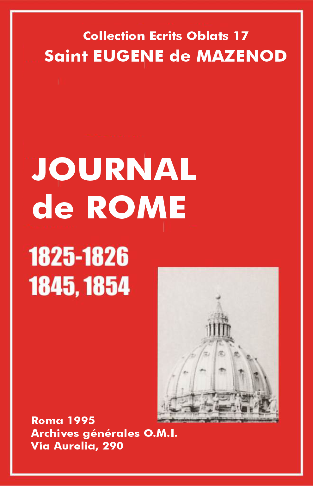

Éscrits Oblats: - 01 - 02 - 03 - 04 - 05 - 06 - 07 - 08 - 09 - 10 - 11 - 12 - 13 - 14 - 15 - 16 - 17 - 18 - 19 - 20 - 21 - 22

Introduction Journal
Manuscrit conservé aux archives générales OMI, fonds de la postulation: JM 1825-1826. Le manuscrit n'a pas de titre. Nous conservons celui qui apparaît au début du texte publié dans Missions OMI, 1872, pp. 335-472.
Sur la couverture du ms., de couleur vert sombre, le père Tempier a collé un papier blanc avec cette inscription: "Journal de notre vénéré fondateur et père, pendant le temps qu'il passa à Rome, en 1825-1826, pour y obtenir de notre très s[aint] père Léon XII l'approbation de nos Constitutions et Règles.
Note: souvent il ne faisait que toucher rapidement dans son Journal des questions importantes, mais alors il écrivit de longues lettres. Voir les lettres de 1825-1826" (Écrits oblats, vol. 6 et 7).
Le cahier est formé d'abord de 18 feuilles laissées blanches. Le fondateur commence à écrire à la feuille 19. Il numérote ses pages de 1 à 110. Suivent ensuite, à la fin du cahier, 14 autres feuilles non écrites. Au recto de la 18e feuille, le père Tempier a collé un autre papier blanc avec ce texte: "Journal de notre vénéré et bien-aimé fondateur et père, pendant son séjour à Rome, lorsqu'il y était pour solliciter l'approbation de nos Règles et Constitutions. Commencé le 26 novembre 1825 et clôturé le 1er mai 1826".
Vol.: XVII - Journal de Rome 1825-1826
[p.1] Le 26 novembre [2]
Descendu au collège romain [3] à une heure après-midi. Vu le père Taparelli [4], recteur, et le père Dumouchel [5]. Passé chez monseigneur d'Isoard [6], reçu la bénédiction au Jésus [7]. Dîné chez monseigneur. Logé à San Silvestro de Monte cavallo chez messieurs de la Mission de France [8].
Vol.: XVII - Journal de Rome 1825-1826
27 dimanche
Allé à Saint-Pierre. Assisté à l'office dans la chapelle. Présents tous les cardinaux, le pape absent. Le saint sacrement porté processionnellement à la chapelle Pauline pour l'adoration des quarante heures. Illumination de cette chapelle d'après le dessin de, avec un nombre immense de cierges. L'après-dîner, parcouru l'église de la Trinité-du-Mont, rencontré le père abbé de la Trappe [9]; Sainte-Marie-Majeure, Saint-Jean-de-Latran, revenu par le Colisée et le Capitole.
Vol.: XVII - Journal de Rome 1825-1826
28 lundi
Visite au marquis de Croza [10], chargé d'affaires de Sardaigne, à Ferrucci [11], au père Rozaven [12], à l'ambassadeur de France [13].
Vol.: XVII - Journal de Rome 1825-1826
29
Parti avec monseigneur l'évêque de Fossombrone [14] pour visiter l'église de Saint-Sébastien et le cimetière de Saint-Calixte. Passé devant l'arc de triomphe de Septime Sévère, parfaitement conservé et entièrement découvert sous le pontificat de Pie VII. Il est situé au bas du Capitole, dans le Campo Vaccino où se trouvent encore une infinité de beaux restes, tels que des colonnes entières, des portions de temples: de la Paix, de la Concorde, de Faustine, de Romulus et Remus. L'arc de triomphe de Titus, où se voit parmi les trophées le chandelier d'or du temple de Jérusalem, très distinctement sculpté sur la pierre et bien conservé. Sur ce même Campo Vaccino se trouve l'église des Saints-Côme-et-Damien, de Sainte-Marie la Nuova. On croit que le Forum se trouvait à cette place.
Nous avons continué notre route en laissant le Colisée à droite et l'arc de Constantin à gauche [15]. C'est cet arc qui fut érigé par le sénat et le peuple romain à l'occasion de la grande victoire que remporta Constantin, par la vertu de la croix, contre Maxence, instinctu divinitatis, écrivent les païens. Laissé à gauche l'église des Saints-Jean-et-Paul, et celle de Saint-Grégoire-le-Grand, bâtie sur sa propre maison. On passe devant l'église de Sainte-Balbine et, à une certaine distance, devant celle des Saints-Nérée-et-Achillée, qu'on n'ouvre je crois qu'une fois l'an. Celle-ci fut bâtie dans les premiers temps de l’Église sur un temple d'Isis; on l'appela in fasciola, la tradition portant que saint Pierre laissa tomber à cette place une bande qui bandait la plaie que les fers lui avaient faite aux pieds. On voit les restes des magnifiques bains de Caracalla; c'est sous ces ruines que furent trouvés le Taureau et l'Hercule farnèse.
Toute cette partie de l'ancienne ville, qui renfermait tant de magnificence, où l'on ne rencontre pas un seul reste de maison, et rien autre que ces églises et les ruines dont j'ai parlé, fut entièrement brûlée par Robert Guiscard en 1084, quand il vint délivrer Grégoire VII assiégé par l'empereur Henri [16]; [p. 2] ainsi, tout ce qui existait entre Saint-Jean-de-Latran et le Capitole a été détruit, et l'on doit à la piété des fidèles d'avoir conservé ou relevé les églises, seuls édifices qui restent en ce lieu. Totila détruisit à son tour tout ce qui existait depuis les thermes de Caracalla jusqu'à la porte Latine. On voit encore, avant d'arriver à la porte Capena, ou de Saint-Sébastien, l'église de Saint-César ou Césaire. [De] [17] cette porte Capena (du bois et temple des Camènes, bâti par Numa, ou parce qu'on passait par là pour aller à Capena bâtie par Italus, près d'Albe) partait la voie Appia, pavée par Claudius Appius jusqu'à Capoue.
Hors la porte, à une certaine distance, on rencontre, à main gauche, la petite église appelée Domine, quo vadis. La tradition porte que c'est là que notre Seigneur apparut à saint Pierre, portant sa croix. Saint Pierre surpris l'interrogea par ces mots: Domine, quo vadis? [18] et le Sauveur, qui voulait lui faire entendre, etc., lui répondit: Eo Romam iterum crucifigi [19], et laissant l'empreinte de ses pieds sur la pierre, il disparut.
Cette pierre se trouve dans l'église de Saint-Sébastien, située sur cette même via Appia et bâtie par Constantin, au-dessus du célèbre cimetière de Saint-Calixte, pape. Cette église fut dédiée à saint Sébastien, parce que le corps de ce saint fut placé dans ce lieu par sainte Lucine, matrone romaine. On prétend que saint Grégoire, offrant le saint sacrifice sur l'autel où repose le corps de saint Sébastien, eut une vision pendant laquelle l'ange lui fit connaître que chaque fois qu'on célébrerait sur cet autel le saint sacrifice, on délivrerait une âme du purgatoire. Au-dessous de l'autel est placée une superbe statue de saint Sébastien étendu mort, ouvrage d'Antoine Georgetti, sur le modèle de Bernini.
Après avoir entendu la messe (je l'avais dite avant de partir pour ne pas retenir trop longtemps monseigneur dans l'église), nous sommes descendus dans les catacombes, saisis d'une respectueuse terreur à la vue de ces antres souterrains, où tant de martyrs ont vécu et ont été déposés après leur mort. On prétend qu'il y en a eu cent soixante-dix mille, parmi lesquels dix-huit souverains pontifes. Les corps de saint Pierre et de saint Paul y ont été déposés quelque temps. On voit l'autel sur lequel célébraient les souverains pontifes, et un autre, assez avancé dans les catacombes, où saint Philippe Néri passait les nuits en oraison. Nous avons reconnu la place où était situé le corps de sainte Cécile, et celle qu'occupait le pape saint Maxime. Après avoir fait plusieurs contours dans ces souterrains, à la suite d'un guide, et tous armés d'un petit cierge que nous avions grand soin de ne pas laisser éteindre, nous sommes sortis par l'église, comme nous étions entrés, et avons repris la via Appia jusqu'au cirque de Caracalla et le sépulcre de Cecilia Metella. On ne voit que des restes du cirque dont on peut cependant reconnaître la grandeur.
Vol.: XVII - Journal de Rome 1825-1826
30
J'ai choisi ce jour pour aller visiter la basilique de Sainte-Croix-de-Jérusalem. Elle fut construite par Constantin, à la prière de sainte Hélène, sa mère, dans son palais Sessorien, pour y placer le bois de la sainte Croix qu'elle avait apportée de Jérusalem. Sixte III, et ensuite Symmaque, y ont tenu deux conciles, et Benoît VII la restaura, ainsi que le monastère occupé par les moines de Cîteaux. Benoît XIV l'a mise dans l'état de magnificence où elle se trouve aujourd'hui. La relique de la sainte Croix, et quelques autres insignes, telles que le doigt de saint Thomas, apôtre, sont placées dans une tribune, du côté de l'épître, d'où on les montre aux fidèles le jour de la fête. Le saint sacrement est aussi placé à la hauteur d'un premier étage, au fond de l'église. Il y a une chapelle souterraine dédiée à sainte Hélène, où elle avait placé de la terre sainte apportée de Jérusalem. [p. 3]
La solitude de cette église, si belle et si imposante, où j'étais seul avec mon servant, jointe aux réflexions que j'avais faites dans le trajet de Sainte-Marie-Majeure à Sainte-Croix, à la vue de cete immense étendue de pays jadis habitée, et changée aujourd'hui en vastes jardins potagers, m'ont jeté dans une tristesse que la beauté du monastère n'a point dissipée. Au contraire, en le parcourant je me suis affligé davantage, car cette vaste maison n'est plus qu'un désert habité par quatre religieux; et pour toute espérance, ils ne voient que quatre jeunes étudiants profès, mais dont un âgé de seize ans, un de dix-sept et deux de dix-huit ans, ne seront vraisemblablement pas en état de remplacer les vieux quand ils mourront. L'abbé est un vieillard exténué qui ne sort presque plus de sa chambre, et le vicaire, hélas! je l'ai bien connu dans le voyage que nous venons de faire ensemble de Gênes à Rome, est un saint religieux, sans doute, mais l'homme le plus nul que j'aie peut-être rencontré de ma vie [20].
En me rendant à mon couvent, je n'ai pu résister au désir d'entrer encore dans la basilique de Sainte-Marie-Majeure. Je l'ai parcourue pendant une demi-heure, sans me fixer précisément à aucun objet particulier; je jouissais de la beauté de cet édifice, et, chemin faisant, je remarquais avec une extrême édification l'empressement d'un très grand nombre de pèlerins, qui se pressaient en foule auprès des tribunaux de la pénitence, où des pères Dominicains, assis dans ces confessionnaux à grande dimension, les écoutaient avec charité, et portaient par intervalle la longue canne fichée devant eux, en guise d'un bâton de pavillon, sur la tête ou sur les épaules de tous ceux qui se tenaient, à cet effet, à genoux devant eux. L'ensemble de ce spectacle m'édifiait et me touchait en même temps. Je me suis arrêté à le considérer quelques instants. Il était midi. Tou[te]s ces bonnes gens étaient resté[e]s à jeun jusqu'alors; car, au sortir du tribunal, ils allaient recevoir dévotement la sainte communion pour gagner leur jubilé. Une foule de réflexions se présentaient à mon esprit. Il serait trop long de les consigner par écrit. Toujours est-il vrai que l’Église appelle cette foule immense de fidèles pour gagner le jubilé. De vastes hôpitaux sont ouverts pour les recevoir. Ils ne doivent y passer que trois jours, et il faut que le second jour ils portent par écrit la preuve qu'ils se sont confessés. Je ne suppose pas que les souverains pontifes donnent tant de pouvoirs aux confesseurs dans la persuasion qu'ils n'auront à absoudre que des innocents; et, parmi les coupables, est-il à présumer qu'il y en ait beaucoup qui se soient éprouvés avant de venir au jubilé? L'Eglise sait pourtant qu'on ne renvoie pas ces gens-là sans absolution, à moins qu'ils n'aient des restitutions à faire, etc. Que devient donc l'épreuve du temps? On suppose apparemment que les sacrifices que s'imposent ces pécheurs pour se rendre à Rome, y confesser leurs péchés dans l'espérance qu'ils leur soient remis, prouve[nt] assez leur bonne volonté et la disposition intérieure de leur cœur. Je présume, au reste, que les habitudinaires ne sont pas admis sans caution.
En rentrant à Saint-Sylvestre de Monte cavallo où je loge, j'ai trouvé une invitation pour dîner à six heures chez monsieur notre [p.4] ambassadeur. J'y suis allé avec la répugnance que j'ai habituellement pour cette sorte de repas. Dans l'intervalle, avant de me rendre chez monsieur l'ambassadeur, j'ai fait connaisssance avec le père vicaire général des Lazaristes [21], qui est entré avec moi dans quelques détails sur sa position à l'égard de leurs messieurs de France, dont le vicaire général [22] ne répond seulement pas à ses lettres. Il m'a assuré qu'il n'avait contribué en rien dans la détermination que prit le pape de nommer un vicaire général autre que celui de France pour tous les autres pays; il serait prêt à se démettre de sa charge; mais j'ai entrevu dans ses confrères le dessein bien prononcé d'appeler le généralat à Rome, fondé[s] sur l'usage de tous les autres corps. Je prie Dieu que tous ces messieurs, qui veulent également le bien, s'entendent.
L'heure du dîner étant arrivée, je me suis rendu à l'ambassade; le suisse, à qui je demandai le chemin de l'escalier, était sur le point de m'éconduire en me disant que monsieur l'ambassadeur était malade. J'avais si peu l'envie de monter que j'ai été sur le point de profiter de la méprise et de m'en retourner chez moi; mais je n'ai pas fait cette farce, pour ne pas compromettre ce bon suisse, qui m'a pris sous le bras en me priant de n'en rien dire, quand je lui ai fait entendre que j'étais invité à dîner chez Son Excellence. Monsieur le duc de Montmorency était en effet indisposé et n'a point paru, de sorte que, chose assez plaisante, je ne le connais pas encore, même de vue. Mais on n'en a pas moins dîné chez lui de manière à satisfaire les plus gloutons, ou, si vous voulez, les plus délicats, car le repas était copieux et très bon. Nous étions onze ou douze à table. Je n'y connaissais personne; heureusement je me suis trouvé placé entre le chargé d'affaires des Pays-Bas, dont je ne sais pas le nom, et l'abbé Fea [23]. Je n'ai causé qu'avec ces deux messieurs, et même beaucoup avec le dernier qui parlait italien, et se plaisait apparemment à trouver un interlocuteur qui lui répondit dans sa langue. C'est un homme fort instruit, et à qui les arts doivent beaucoup. Il connaît parfaitement l'histoire de son pays, il a été chargé par Pie VII de la surintendance des monuments; il continue dans cet emploi encore aujourd'hui. C'est lui qui a fait découvrir jusqu'au fondement l'arc de triomphe de Septime Sévère, et la voie sur laquelle il est placé qui conduit au Capitole. De là il a fixé la vérité de la tradition sur la prison de saint Pierre au pied du Capitole, sur cette voie. C'est aujourd'hui l'église de [Saint-Joseph-des-Charpentiers] [24] que j'irai visiter un de ces jours.
Vol.: XVII - Journal de Rome 1825-1826
1er décembre
J'ai passé presque toute la matinée dans ma chambre pour mettre en ordre ce que j'ai à faire pendant mon séjour à Rome. J'ai visité quelques églises, passé chez l'ambassadeur, vu le père Antommarchi, ex-général des Servites [25], et admiré, en rentrant, la superbe fontaine de Trevi qui fournit avec tant d'abondance de l'eau à toute la partie basse de la ville. Sa source est à 8 milles de Rome. Marc Agrippa, beau-frère d'Octavien Auguste, [p. 5] la conduisit pour ses magnifiques bains qui n'existent plus. Nicolas V ramena ces belles eaux à Rome. Clément XII fit une énorme dépense pour orner cette fontaine de statues, de chevaux marins, etc., et Clément XIII l'acheva en y plaçant des bas-reliefs en marbre. La statue du milieu est gigantesque; elle est, ainsi que les tritons, etc., des meilleurs artistes.
Vol.: XVII - Journal de Rome 1825-1826
2
J'ai eu la dévotion d'aller offrir le saint sacrifice sur le tombeau de sainte Bibiane dont l’Église célèbre la fête aujourd'hui. Cette église est située entre Sainte-Marie-Majeure et Sainte-Croix-de-Jérusalem, au milieu des champs où l'on ne trouve plus vestige des magnifiques palais qui ornaient ces lieux dans le temps des Romains. Elle fut primitivement bâtie par sainte Olympie, auprès du palais Licinien, où habitait sainte Bibiane et où elle avait enterré sainte Dafrose, sa mère, et sainte Démétrie, sa soeur, toutes deux martyres. On emporta ensuite son corps, du temps de Julien l'Apostat. Ce fut un prêtre nommé Jean qui fit cette translation, en 362, en la transportant du lieu nommé forum Tauri. Simplicius, pape, consacra cette église, et Honorius III la rebâtit. Urbain VIII la restaura de nouveau et fit faire la statue de la sainte par Bernini. Le corps de la sainte, celui de sa soeur et de sa mère, sont placés sous le maître-autel, dans une superbe urne d'albâtre oriental aussi grande que l'autel. Au bas de l'église, on voit la colonne à laquelle sainte Bibiane fut attachée et flagellée jusqu'à la mort. Le cimetière de Saint-Anastase, pape, dans lequel furent enterrés trois mille deux cent soixante martyrs, sans compter les femmes et les enfants, correspond au-dessous de l'église. Quels souvenirs, quel respect, quelle dévotion de tels objets n'inspirent-ils pas! Les chanoines de Sainte-Marie-Majeure devaient, selon la coutume, venir chanter la grand-messe; le mauvais temps les en a empêchés, ce qui m'a fait grand plaisir; ma messe, sans cela, eût été renvoyée bien tard.
En repassant devant Sainte-Marie-Majeure, j'y suis entré pour la quatrième fois, et je m'y suis arrêté plus d'une heure. Je n'entreprendrai pas de faire la description de tout ce qu'on voit dans ces grandes basiliques, ce serait trop long et trop imparfait. Celle-ci est placée sur le haut du mont Esquilin, où était le temple de Junon Lucine. La grande colonnne qui est sur la place est la seule conservée entière de toutes celles qui soutenaient le grand temple de la Paix, dont on voit les ruines au Campo Vaccino. C'est le pape Paul V qui la fit transporter ici et y plaça en haut la statue de la sainte Vierge.
On appelle aussi cette basilique Sainte-Marie ad Nives, du miracle de la neige; on l'appelle aussi Libérienne, du pape Libère qui la consacra et la fit construire aux frais et d'après les instances de Jean, patrice romain; on l'appelle aussi ad Praesepe, parce qu'on y conserve la crèche de Notre Seigneur. Mais elle n'était pas alors comme nous la voyons à présent. C'est Sixte III qui la refit avec tant de magnificence en 432. Elle est soutenue par quarante colonnes antiques et ornée de mosaïques. Un grand nombre d'autres papes ont concouru à l'orner et à l'enrichir de trésors immenses: Grégoire III, Adrien Ier, Léon III, Pascal Ier, Grégoire IV. Clément III, en 1188, y ajouta le palais et Grégoire X fit le clocher. Nicolas IV restaura le palais en 1286 et l'habita. Enfin Benoît XIV fit de nouveau la façade, le portique, restaura l'église et le palais.
Impossible d'entrer dans le détail de la beauté du maître-autel et des deux grandes chapelles latérales. Je n'ai jamais vu d'aussi beaux marbres que ceux qui ornent la chapelle de la sainte Vierge, l'oeil ne se satisfait jamais de les regarder. [p. 6] Les statues, les bas-reliefs, les peintures, tout est à l'avenant. C'est Paul V qui a fait bâtir la chapelle de la sainte Vierge où sont incrustés tant de beaux marbres et tant de pierres précieuses, telles que lapis-lazuli, agates, etc. La chapelle en face a été construite par Sixte V. Les statues et les tombeaux de ces papes sont dans ces chapelles, ainsi que celles de saint Pie V et de Clément VIII.
En rentrant, j'ai fait une visite au couvent des Dames Basiliennes, dont Mme Baudemont [26] est supérieure. Le costume de ces religieuses, inventé je crois par le bon abbé de Sambucy [27], leur instituteur, m'a paru aussi ridicule que laid. Je crains que ces pauvres dames n'aient bien de la peine à se soutenir; elles m'ont avoué qu'elles n'avaient que seize pensionnaires.
J'ai passé le reste de la journée à lire en entier la Vie de saint Joseph Calasanz [28], dont je n'avais eu jusqu'à présent qu'une idée très imparfaite. Cette lecture a donné occasion à des réflexions trop pénibles, et à des jugements trop peu favorables pour ceux qui ont souffert que ce saint fût persécuté comme il l'a été, pour que je m'avise de les consigner par écrit.
Vol.: XVII - Journal de Rome 1825-1826
3
J'avais formé le projet d'aller dire la sainte messe au Jésus, à l'occasion de la fête de saint François-Xavier; mais j'ai renoncé à cette idée, pensant qu'il y aurait aujourd'hui une trop grande affluence de prêtres. J'ai fait quelques autres courses dans la matinée, chez monseigneur Mazio [29], auditeur du Saint-Office, que je n'ai pas trouvé. J'ai visité cinq ou six églises et, entre autres, Saint-André della Valle, superbe église des pères Théatins. J'allais pour voir dans la maison de ces Pères le célèbre père Ventura [30]; il allait se mettre à table. Je suis rentré bien fatigué, à cause du jeûne que l'on fait à Rome pendant l'Avent, le vendredi et le samedi. Le repas a suffi pour me remettre.
Après le dîner, nous avons été visiter le Jésus; de là nous nous sommes transportés à la Trinité-des-Pèlerins [31], pour y être témoins d'un des plus touchants spectacles qui se puissent voir. Mille à douze cents pèlerins reçoivent chaque jour l'hospitalité dans cet hospice, où ils sont gardés trois jours. En arrivant, on les accueille dans une vaste salle où on les fait asseoir sur une estrade qui règne tout autour de la salle. Leurs pieds se trouvent appuyés sur une marche; au-dessous du siège sont pratiqués des conduits d'eau chaude et d'eau froide, que l'on fait couler par deux robinets ménagés sous la place de chaque pèlerin; ces robinets versent l'eau dans un baquet placé aux pieds de chacun d'eux. Au signal donné, se présentent autant de membres de la confrérie qu'il y a de pèlerins, revêtus du sac, ayant une nappe autour du cou; ils viennent se placer à genoux devant ces pauvres de Jésus-Christ, leur lavent les pieds en récitant tout haut et faisant répéter aux pèlerins le Pater, Ave, Gloria et le symbole des Apôtres en italien, et en essuyant leurs pieds et les baisant, ils répètent plusieurs fois ces paroles: Gesù, Giuseppe e Maria, vi dono il cuore e l'anima mia [32]. Ce qui ajoute à l'édification et à l'émotion que procure cette première cérémonie, c'est que les princes, les prélats, les évêques, les cardinaux et même le pape se font un devoir de faire cet acte de charité, qui a suffi pour déterminer quelquefois la conversion des pécheurs et le retour à l’Église de plusieurs hérétiques.
Ceux à qui on a ainsi lavé les pieds entrent dans la salle du festin, où les mêmes confrères, le patriarche Mattei [33] à la tête, les servent à table. On leur a donné ce soir [p. 7] une bonne soupe, une copieuse portion de merluche très bien accommodée, deux oeufs, de la salade, du fromage et des fruits. Ils passent ensuite dans les dortoirs où ils trouvent un lit pour s'y reposer des fatigues de leur voyage.
Outre l'extrême édification de cette oeuvre admirable, j'ai admiré la propreté, l'abondance, mais surtout le bon ordre qui règne[nt] dans l'ensemble et les détails de toute cette cérémonie. Jaloux de voir tant de charité exercée sous mes yeux, j'ai témoigné le désir d'y participer en servant de mes mains quelques-uns de ces pauvres; mais il faut pour cela être agrégé à la Compagnie et l'on m'a gracieusement offert de le faire. J'ai été retenu par la crainte d'être engagé à faire quelque chose de contraire à la pauvreté qui est une vertu à laquelle mon devoir m'oblige de sacrifier tout ce qui ne me serait qu'agréable et d'un mérite secondaire.
Le pèlerin qui se présente doit être porteur d'un billet de son curé, qui prouve l'intention qu'il a de gagner le jubilé. La grande salle de réception est destinée pour cette vérification, qui se fait avec ordre et sans tumulte. On échange son billet pour un autre, avec lequel il entre d'abord dans la salle où on lave les pieds, puis dans celle du festin. Le lendemain, il faut que le pèlerin apporte un billet d'un pénitencier pour prouver qu'il s'est confessé, il ne serait pas admis sans cela. Les premières dames de Rome font le même service auprès des femmes dans des salles séparées. On a reçu ainsi cette année environ cent mille pèlerins. J'oubliais de dire qu'on ne considérait comme pèlerins que ceux qui viennent de soixante milles et au-delà.
Vol.: XVII - Journal de Rome 1825-1826
4
Je me proposais de retourner aujourd'hui à la chapelle papale, dans l'espérance d'y voir assister le pape à l'office; Mgr d'Isoard n'y étant pas allé, je me suis dispensé de faire cette course, d'autant plus qu'on nous a assuré que le Saint-Père n'y paraîtrait pas. En échange, j'ai parcouru un grand nombre d'églises, toutes plus belles les unes que les autres. En vérité, un seul de ces beaux temples ornerait une ville. L'église de Saint-Pierre in Vinculis est aussi belle que célèbre. On y conserve les chaînes avec lesquelles fut lié le prince des Apôtres, soit à Jérusalem, soit à Rome. La tradition porte qu'il célébra le saint sacrifice en ce lieu. C'est aux frais de l'impératrice Eudoxie qu'on a construit le beau temple que nous voyons aujourd'hui tout orné de superbes colonnes, restes des thermes de Trajan, qui augmenta ceux bâtis [34] par Titus. Pélage II plaça sous le maître-autel les corps des sept frères Machabées en 555 et, en 1073, Grégoire VII fut élu pape dans cette église. On voit au monument de Jules II la fameuse statue colossale de Moïse, qui passe pour le plus beau morceau de sculpture qui existe. On prétend que Buonarrotti, après l'avoir faite, en fut lui-même si ravi qu'il donna un grand coup de marteau sur le genou de la statue en s'écriant: "Parle donc!" Le reste du monument n'est pas de lui. [p. 8]
Saint-Martin ai Monti est d'une élégance rare. L'or et les marbres les plus précieux la rendent éclatante; c'est un genre particulier aussi imposant qu'agréable. Cette église fut primitivement bâtie par Constantin, au milieu des thermes de Trajan, à la prière de saint Sylvestre qui y célébra un concile de deux cent quatre-vingt-six évêques. C'est dans l'église souterraine aujourd'hui; on y voit un morceau de son siège qui est en marbre. C'est Symmaque qui, vers l'an 500, l'a dédiée à saint Martin et à saint Sylvestre. Sergius II la restaura et l'enrichit de corps saints. Léon IV l'orna de belles colonnes qu'on y admire; saint Charles Borromée fit dorer le plafond [35] quand il était titulaire de l'église; le cardinal Paleotto [36] fit le superbe choeur où les Carmes font l'office, qui est derrière le riche maître-autel. On y voit partout des peintures des plus grands maîtres, du Poussin, du Dominichino, etc. Les corps de saint Sylvestre et de saint Martin, papes, sont dans le beau souterrain soutenu par les colonnes, ouvrage du célèbre Pierre de Cortone. Le cardinal Zelada a contribué à orner davantage ce bel édifice. Il en est le titulaire [37].
Sainte-Suzanne, église bâtie d'abord dans la maison de saint Gabinius, père de la sainte et frère de saint Caius, pape, qui la consacra secrètement l'an 290, la sainte ayant été martyrisée en ce lieu. Saint Léon III y fut couronné pape et l'embellit. Il y a dans cette église [une] portion du corps de sainte Félicité.
En face de l'église de Sainte-Suzanne se trouve l'église de Saint-Bernard alle terme. C'est un reste admirable des bains de Dioclétien. On en voit d'autres ruines en forme de théâtre dans le jardin du couvent occupé par des Cisterciens dont on a fait une chapelle dédiée à sainte Catherine.
Ces magnifiques bains, qui occupaient un espace immense, donnèrent le nom à la place qu'on appelle par corruption de termini. Ces thermes furent commencés par Dioclétien et Maximien, qui y firent travailler quarante mille chrétiens, qui furent tous martyrisés ensuite. Ils [38] furent continués et terminés par Constance et Maximin, fils adoptifs de Dioclétien, qui les ornèrent de statues, de portiques, etc., qui en firent une merveille comparable à tout ce qui a existé de plus beau. De toute cette magnificence, il ne reste plus rien que des ruines qui attestent pourtant ce que devaient être ces lieux. Les seules huit colonnes de granit égyptien, qui soutiennent l'église de Sainte-Marie-des-Anges, suffisent pour en donner une idée. Cette église est une des plus belles de Rome, du moins c'est une de celles qui m'ont étonné davantage par son imposante beauté. C'est une croix grecque immense dans ses dimensions, ouvrage du grand Buonarrotti. Benoît XIV y fit placer les originaux des tableaux en mosaïque qui sont à Saint-Pierre. Parmi tant de beaux tableaux, il est impossible de ne pas remarquer le martyre de saint Sébastien, du Dominichino. J'étais insatiable de le contempler; je m'y arrêtai [une] demi-heure sans l'avoir assez vu. Le cloître des religieux chartreux est soutenu par cent colonnes, mais cette habitation m'a paru triste; c'est peut-être l'effet d'une solitude inhabitée, car il n'y a presque point de religieux, quatre ou cinq tout au plus.
Sur la place de Termini, on voit la belle fontaine de ce nom. C'est Sixte V qui conduisit à Rome l'ancienne Aqua Martia, qui l'alimente avec abondance. Les quatre lions, dont deux sont de porphyre blanc et deux en granit noir, y ont été transportés du Panthéon.
J'ai encore visité l'église de Sainte-Marie-de-la-Victoire qui donne sur la place. Elle est toute incrustée de marbres, dorures, peintures, sculptures des premiers maîtres. La porte [p. 9] Pie, jadis Nomentana et Figuleuse, est à une très petite distance. Elle porte le nom de Pie, parce que c'est le pape Pie IV qui l'orna sur les dessins de Buonarrotti.
Il serait trop long de citer toutes les autres églises que j'ai visité[es]. En revenant sur mes pas, j'ai considéré à l'extérieur seulement le beau palais Barberini, bâti sur les ruines du palais de Numa. C'est Urbain VIII qui le fit bâtir sur les dessins de Bernini. Sur la place Barberini, on voit la fontaine de Triton. Les antiquaires prétendent que c'est là où se trouvai[en]t la pile Tiburtine et le temple élevé par Auguste à Quirinus.
J'aurais trop à dire si je voulais parler des divers palais qui se rencontrent sur mes pas, le nombre en est infini. La plupart sont d'une grande beauté. Je ne les citerai seulement pas pour ne point faire de jaloux.
J'ai fini ma journée par une visite à son éminence monseigneur le cardinal Zurla [39], vicaire de Sa Sainteté, qui m'a reçu avec beaucoup de bonté et a bien voulu signer et écrire de sa propre main la permission que nous appelons en France le celebret.
Vol.: XVII - Journal de Rome 1825-1826
5
J'ai fait aujourd'hui quelques affaires et quelques visites; j'ai été notamment chez son éminence monseigneur le cardinal De Gregorio [40], qui m'a accueilli avec une extrême bonté et invité à dîner pour demain. Ce soir, j'ai assisté aux exercices de l'oratoire du père Caravita, dont le Jésuite, mon compagnon de voyage [41], m'avait parlé avec enthousiasme comme étant l'oeuvre d'un de ses confrères, et continué par ceux de sa Compagnie; mais j'avoue que j'ai été trompé dans mon attente. L'exercice m'a paru fort insignifiant; c'est une kyrielle de Pater et d'Ave Maria, plus une trentaine d'Ave Maria encore. Enfin la courte instruction n'a pas été de mon goût et, dans le fait, elle ne valait pas grand chose. La chapelle était pleine d'hommes qui paraissaient fort recueillis et fort dévots; ils prennent la discipline deux ou trois fois par semaine. Il y a cinq autres chapelles ou oratoires dans Rome comme celui-ci, et tout aussi fréquentés. Dieu en est certainement glorifié.
Vol.: XVII - Journal de Rome 1825-1826
6
La matinée s'est passée à écrire. Avant de me rendre chez son éminence monseigneur le cardinal De Gregorio, j'ai été au palais [du] Quirinal pour faire connaissance avec le célèbre monseigneur Marchetti, archevêque d`Ancyre [42]. C'est un prélat remarquable par sa science et le zèle dont il a fait preuve en tout temps. Du temps de Pie VII, il était un des missionnaires qui prêchaient sur les places publiques. Il a traduit les lettres pastorales des évêques de France, faites à l'occasion du schisme de 92. Il est auteur de plusieurs ouvrages, et quoique âgé de soixante-quatorze ou soixante-quinze ans, il travaille encore, et de préférence sur la controverse avec les Gallicans dont il n'aime pas l'opinion.
Le cardinal De Gregorio m'a traité avec une bonté et une cordialité rares. Il s'est rappelé m'avoir vu souvent [p. 10] à Paris, dans le temps de l'exil des prélats romains. Je l'avais vu, en effet, quoiqu'il ne fût pas du nombre de ceux à qui j'ai eu le bonheur de rendre service, comme étaient les cardinaux Mattei, Ruffo, archevêque de Naples, Gabrielli, Brancadoro, le chanoine Muzzarelli [43] et autres. Après le dîner, nous nous sommes entretenus longuement, tête-à-tête, sur des affaires importantes, après quoi il a eu la bonté de me faire voir le détail du travail des congrégations de cardinaux. Il faut avouer qu'il en a pour son compte outre mesure, et il s'acquitte en conscience de toutes ses charges.
Vol.: XVII - Journal de Rome 1825-1826
7
Visite à monseigneur Caprano [44], secrétaire de la Propagande, pour le prévenir des grâces que je dois demander et le disposer à ne pas les refuser. J'ai été très bien reçu de ce prélat qui m'a promis ses bons offices. Il s'occupe en ce moment de faire expédier la réponse aux questions que nous fîmes à la congrégation de la Propagande, au sujet de nos Grecs [45]. J'avais vu hier, chez le cardinal De Gregorio, tous les détails de cette affaire imprimés, et les décisions données en pleine congrégation.
Visite à monseigneur d'Argenteau [46]. J'ai fini la journée par la visite à l'église des Saints-Apôtres, pour le dernier jour de la neuvaine de l'Immaculée Conception. C'est ordinairement le pape qui donne la bénédiction. Le cardinal doyen l'a remplacé. L'église des Douze-Apôtres fut élevée par Constantin près d'un de ses palais. Elle a été renouvelée par les soins de divers cardinaux et souverains pontifes.
Vol.: XVII - Journal de Rome 1825-1826
8
J'avais choisi ce jour pour profiter de la concession du Pape, et gagner mon jubilé en visitant l'église de Saint-Laurent in Damaso, mais il a plu si fort tout le jour que je l'ai renvoyé à demain, le Pape ayant étendu son indult pour toute l'octave. Ce matin, j'ai profité du carrosse de monseigneur d'Isoard pour aller une seconde fois à la chapelle Sixtine. Le Pape ne s'y est pas rendu. L'office est si beau, si imposant dans cette chapelle, que je n'ai point eu de regret d'y avoir été. Les cardinaux étaient aujourd'hui en cappa magna rouge, à cause de la fête, et c'était un cardinal qui officiait. A l'Introit, ils disent tous, deux à deux, à leur place, le psaume Judica, le Confiteor, etc. Les procureurs généraux des Ordres en font autant, et tous ceux qui assistent, soit évêques ou ecclésiastiques inférieurs. J'ai remarqué qu'ils ne disent pas le Confiteor en même temps comme nous le disons à Marseille, mais l'un après l'autre, posément et un peu inclinés l'un vers l'autre. Ils disent aussi le Gloria, le Credo, le Sanctus et l'Agnus Dei de la même manière, deux à deux. [p. 11] A l'offertoire, le diacre vient encenser les cardinaux, les prélats et les procureurs généraux des Ordres, les uns après les autres; ils se tiennent alors debout, prennent leur barrette et quittent leur calotte. Immédiatement avant de recevoir l'encensement, ils font un salut à celui qui vient après, comme pour l'avertir. Ils font de même à la paix. Je remarque ces détails de cérémonie pour en faire mon profit à Marseille.
Je me suis occupé dans la journée de dresser la supplique, pour présenter au pape le jour qu'il me donnera audience.
Vol.: XVII - Journal de Rome 1825-1826
9
J'ai visité ce matin l'église de Saint-Laurent in Damaso. Il fallait se confesser, jeûner et visiter trois autels de cette église pour gagner le jubilé, le pape dispensant de toute autre visite, etc. Cette église avait été primitivement bâtie par saint Damase, en l'honneur de saint Laurent, en 380. Elle fut démolie lorsque le cardinal Riario [47] fit bâtir le palais de la chancellerie apostolique, et il la rebâtit en la dédiant aux deux saints, sous le pontificat de Léon X. On y voit de très beaux tableaux, et on y vénère le crucifix devant lequel sainte Brigitte priait, et qui, d'après la tradition, lui parla plusieurs fois. Le célèbre poëte Annibal Caro [48] est enterré dans cette église. On y voit son tombeau contre le pilier, en face du maître-autel.
Le valet de chambre de notre ambassadeur entre pour m'inviter à dîner pour aujourd'hui chez son maître. Il est plus de deux heures, et comme [49] un jour de jeûne je n'attends pas cette heure-là pour dîner, je l'ai remercié, n'étant pas dans l'usage de dîner deux fois, moins encore les jours de jeûne. Cette mode d'inviter à dîner après-midi pour le soir même, est particulière à notre ambassadeur. Elle doit souvent l'exposer à des mécomptes.
Ecrit à monseigneur l'archevêque de Reims [50] pour le féliciter d'avoir été nommé cardinal. C'est au prochain consistoire que le pape le préconisera.
Vol.: XVII - Journal de Rome 1825-1826
10
Le cardinal doyen, secrétaire d’État [51], m'a fait dire qu'il me recevrait à neuf heures. Je me suis trouvé à cette heure-là au Vatican où j'ai eu l'honneur de lui présenter mes respects. Son éminence m'a reçu avec beaucoup de bonté et une aimable politesse, mais il avait entièrement perdu le souvenir et de ma personne et de tout ce que j'ai fait pour les cardinaux pendant leur exil à Paris. J'ai dû lui rappeler que j'allais chez lui très souvent, que j'assistais même quelquefois à son dîner, que je lui ai présenté la Vie de la vénérable Agnès [52] (reliée à mes frais). Nous étions alors catéchistes au grand catéchisme de Saint-Sulpice. C'est moi qui l'assistai quand il vint dire la messe à la chapelle des Allemands; c'est moi qui fus chargé, à l'époque fatale de leur grande disgrâce, de demander à lui, cardinal Della Somaglia, quels étaient les besoins des cardinaux. Je lui ai rappelé qu'il me [p. 12] répondit que de deux ans il n'aurait besoin de rien, mais il me désigna ceux qui seraient dans le cas de recevoir des secours. Il s'est passé tant de choses depuis lors que l'on a bien pu oublier les anciens événements. Le cardinal n'en a pas été moins poli, mais j'ai fait, à part moi, la réflexion qu'on serait bien fou de faire le bien pour se faire valoir auprès des hommes. Dieu seul sait nous tenir compte de ce que nous faisons pour lui. C'est donc pour lui plaire qu'il faut tout faire.
Le cardinal m'a parlé de l'infâme Girard [53]. Il m'a dit qu'on allait nous le renvoyer, qu'il avait rétracté toutes ses erreurs, mais que nous ne nous fiassions pas pour cela à lui. Il est très persuadé qu'il n'a jamais été fou. Un original que j'ai rencontré en passant de Saint-Pierre à Sainte-Marie in Transtevere, aurait voulu me persuader le contraire. Je connaissais le pèlerin sans qu'il s'en doutât, c'est un certain père Chabrier, conventuel français, pénitencier [54] et grand bavard qui à mon costume m'ayant reconnu pour être Français m'a arrêté au milieu de la rue presque sous les fenêtres de la maison des fous, où est enfermé le Girard. Le valet de chambre de monseigneur d'Isoard qui était avec moi m'a trahi en me nommant et déclinant mes qualités, car autrement je me serais bien amusé en le faisant dégoiser [55] sur mon compte; je savais qu'il s'était permis certains propos à l'occasion de l'affaire de Girard. Ce pauvre religieux qui m'a l'air fort arrogant s'est tenu alors en réserve et a beaucoup insisté pour me persuader que son protégé était fou. Je n'ai pas cru faire un jugement téméraire en pensant que lui était menteur. Il a bientôt rebroussé chemin pour aller avertir sans doute Girard que j'étais arrivé. Il lui aura donné un mauvais moment en pure perte, car je n'ai jamais eu l'idée de m'occuper de ce misérable. S'il eût été notre diocésain, c'eût été autre chose.
Quoique exténué (je n'avais pas mangé depuis vingt-quatre heures; les vendredis et les samedis de l'Avent sont à Rome des jours de jeûne), j'ai dû aller chez monsieur l'ambassadeur que j'ai eu le bonheur de rencontrer cette fois. Il m'a à son tour parlé de Girard. Il est décidé qu'on renvoie en France ce scélérat. M. le pénitencier français m'a paru fort empressé à le voir placé sous la protection du bras séculier pour le soustraire aux vexations de son évêque monseigneur l'évêque de Clermont [56]. Cet insipide moine m'a débité à ce sujet quelques principes qui mériteraient [p. 13] d'être examinés par le Saint-Office. M. l'ambassadeur était presque tenté de me le donner comme un homme de mérite, il ne m'a fallu qu'une entrevue de cinq minutes pour juger qu'il n'était qu'un pauvre homme. Il n'en est pas de même du père Monteinard [57], minime; j'adhère à la bonne opinion qu'a conçue de lui monsieur l'ambassadeur.
Avant de quitter le Vatican, je suis monté dans les appartements du Saint-Père, pour savoir si monseigneur Barberini [58] avait demandé une audience pour moi. Il l'avait tout bonnement oublié. J'aurais pu être présenté aujourd'hui, personne n'étant attendu, mais j'avoue que je ne m'en suis pas soucié. Pris au dépourvu, je n'avais pas sur moi les papiers que je dois présenter à Sa Sainteté, et d'ailleurs j'étais bien aise que le cardinal De Gregorio et quelques autres parlent de moi au pape avant que je le visse.
Vol.: XVII - Journal de Rome 1825-1826
11, 3e dimanche de l'Avent
Je suis insatiable de voir les cérémonies de l’Église, lorsqu'elles sont faites avec dignité. C'est pourquoi je retourne volontiers à la chapelle papale. Le souverain pontife n'y assistait pas, mais c'était encore un cardinal qui officiait, et rien n'est plus majestueux que de voir cette noble assemblée. Après l'évangile, un père Augustin a prêché en latin. Ce discours ne m'a pas, à beaucoup près, plu autant que celui que j'avais entendu le premier dimanche de l'Avent. J'ai trouvé que ce moine se permettait des réflexions tout à fait déplacées et peu respectueuses, par l'allusion qu'on pouvait en faire en appliquant ses paroles aux cardinaux devant qui il prêchait. J'avais derrière moi deux autres moines qui m'ont prouvé que j'avais raison par les fous rires qu'ils faisaient à chaque allusion [59]. On ôte la calotte au cardinal officiant quand il commence la préface. Il la quitte aussi pendant qu'on chante l'évangile.
J'ai été accosté à la chapelle par l'abbé Conti [60], devenu monseigneur de mantellone [61]. C'est un second ordre de prélats. Je l'avais connu à Paris lorsqu'il était aumônier du cardinal Despuig [62]. Il s'attacha ensuite mgr Della Genga, devenu pape aujourd'hui; il m'a dit qu'il le confessait pendant son séjour en France.
J'ai présenté enfin la lettre que j'avais pour le cardinal Pacca [63]. Cette éminence m'a reçu très poliment et m'a parlé avec beaucoup d'intérêt et de vénération de monsieur l'abbé Taillé [64]. Je me suis chargé d'un chapelet que le pape a bien voulu lui envoyer.
J'ai revu le cardinal De Gregorio, et remis la lettre de monsieur de Césolles à madame la comtesse de la Tour du Pin. J'ai vu aussi le père abbé de la Trappe et le père Monteinard, et j'ai fini ma journée par aller adorer le saint sacrement à Saint-André della Valle, où sont les quarante heures.
J'ai remarqué qu'à la chapelle papale, le diacre salue le choeur lorsqu'il va chanter l'évangile; et à la messe chantée pontificalement, quand le prélat officiant ne prend pas la mitre précieuse, il prend la blanche qu'il garde, par exemple, pendant le sermon, au Gloria et au Credo. [p. 14]
Vol.: XVII - Journal de Rome 1825-1826
12
Je me suis occupé chez moi toute la matinée. Après le dîner, j'ai passé au palais Colonna pour y voir le cardinal Ercolani [65], exposé après sa mort sur un lit de parade. Je m'attendais à voir une chapelle ardente et quelque chose de magnifique; je n'ai vu qu'un grand baldaquin sur lequel était placé, à une grande hauteur, le corps du défunt cardinal, en soutane, rochet et mantelletta, la barrette rouge en tête. Le lit sur lequel était placé le corps était très vaste, recouvert d'un grand drap d'or. Quatre cierges seulement brûlaient autour. Un grand nombre de personnes se succédaient pour voir ce spectacle qui m'a fait plus de peine qu'il n'a satisfait ma curiosité, car, outre l'indifférence des laquais que j'avais remarquée en passant dans la première antichambre, j'ai éprouvé une sorte d'horreur en voyant une quantité de mouches dévorer les yeux, le nez et la bouche du défunt, que sa haute dignité ne garantit pas de cet outrage, pas plus qu'elle ne le défendra de la voracité des vers, qui bientôt s'empareront de ces restes comme d'une proie qui leur est livrée.
Je suis sorti de ce palais en faisant ces réflexions, et me suis rendu chez monseigneur Mazio, auditeur du Saint Office, qui m'a reçu à bras ouverts, donné mille marques d'intérêt, offert ses services, et avec lequel nous sommes convenus que dimanche je le ferai appeler à Saint-Pierre pour qu'il me fasse dire la sainte messe sur la confession du prince des Apôtres, et ensuite placer comme il faut pour voir la cérémonie de la béatification du vénérable [Ange d'Acri] [66], qui doit avoir lieu ce jour-là. Je dois sans doute ce bon accueil à la lettre de recommandation que m'avait donnée, pour ce prélat, monseigneur l'archevêque de Gênes [67], qui m'avait fait tant de politesses lors de mon passage dans sa ville archiépiscopale.
Vol.: XVII - Journal de Rome 1825-1826
13
Je n'ai rien à noter aujourd'hui. Content du beau spectacle que je découvre de ma fenêtre, d'où je plane sur toute la ville, voyant devant moi, sous le jardin de la maison que j'habite, les jardins du palais Colonna; en face, à une petite distance, les coupoles du Jésus et d'autres églises; un peu plus loin, Saint-André della Valle; à gauche la colonne Trajane, à peu de distance de là le Capitole, à droite Saint-Ignace, le collège romain et l'observatoire; plus loin la colonne Antonine, Montecitorio, la place du Peuple et tant d'autres édifices remarquables; mais par-dessus tout, ce beau Vatican et cette incomparable coupole de Saint-Pierre, toute la ville, en un mot. Je ne suis sorti qu'un instant pour aller voir notre cher doyen de la Rote, qui [p. 15] sera, j'espère, bientôt cardinal. Il allait dîner chez l'ambassadeur de France, qui a invité aujourd'hui, à l'occasion de sainte Lucie, tous les chanoines de Saint-Jean-de-Latran et autres prélats. Comme il ne m'a pas fait l'honneur de m'inviter, je me suis dispensé d'aller le voir officier, ce matin, dans cette basilique de Saint-Jean-de-Latran. En sa qualité de représentant du roi de France, chanoine de cette basilique, il a assisté à l'office sous un dais placé au milieu des stalles du choeur et plus élevé que les sièges mêmes des cardinaux. On l'a encensé immédiatement après eux et avant les chanoines. Il ne lui manquait que d'entonner le Deus in adjutorium. Cet usage date du temps de Henri IV.
Vol.: XVII - Journal de Rome 1825-1826
14
Je ne me suis pas soucié d'aller voir les obsèques du cardinal Ercolani, auxquelles tous les cardinaux devaient assister. J'ai été, en place, chez monseigneur Caprano, secrétaire de la Propagande, qui m'a appris avec satisfaction que le souverain pontife m'avait accordé toutes les grâces que j'avais demandées, et qu'il lui avait dit en propres termes, en parlant de mon oncle: "Oh! l'évêque de Marseille est un homme de mérite". Et monseigneur voulut bien ajouter que son neveu était digne de lui. Sans m'arrêter à la réflexion de l'évêque monseigneur Caprano, qui peut néanmoins être utile au bien que j'ai en vue, j'ai été grandement consolé que le chef de l’Église pense si bien d'un oncle que je chéris avec tant de raison.
J'ai été présenté dans la journée au cardinal Guerrieri-Gonzaga [68], qui m'a reçu comme je suis accoutumé d'être reçu partout. J'ai rencontré chez cette éminence, le révérend père Fortis [69], général des Jésuites, homme très respectable, mais qui m'a paru accablé par l'âge et les infirmités.
Vol.: XVII - Journal de Rome 1825-1826
15
J'ai fait encore aujourd'hui ce qui était prescrit pour tâcher de gagner une seconde fois le jubilé pour les saintes âmes du purgatoire, comme le portait l'indult accordé à cet effet par le souverain pontife. J'ai visité l'église de Saint-Laurent in Damaso et les autels qui étaient désignés. Dieu veuille rendre profitable aux saintes âmes, et surtout aux âmes de mes chers parents défunts, les suffrages que j'ai appliqués pour elles. Mon père, mort si saintement entre mes bras, ma bonne grand-mère [p. 16] si tendrement aimée par moi, mes grands-pères, mon grand-oncle, ma tante, se sont assurément présentés à ma pensée, comme ils me sont présents tous les jours à la messe. Je ne sais pourquoi je fais aussi mention de ma soeur morte si jeune; mais c'est bien par affection que ma chère petite nièce Caroline passe aussi journellement dans ce tableau, car elle n'a certainement pas besoin de mes suffrages. Mais mon cœur est ainsi fait, il ne sait oublier aucun de ceux qu'il aime, soit vivants, soit morts.
Vol.: XVII - Journal de Rome 1825-1826
16
Tout de suite après ma messe, je suis allé au Vatican pour voir son éminence le cardinal secrétaire d’État. Notre conversation, cette fois, a été en italien. Il avait eu la bonté de prévenir le Saint-Père du désir que j'avais de lui baiser les pieds et d'avoir une audience de lui. Sa Sainteté a bien voulu m'accorder cette faveur. Le cardinal m'a donné quelques renseignements pour ce que j'ai à faire. Quand je serai prêt, il me présentera lui-même si cela me fait plaisir. En sortant de chez son éminence, je suis entré à Saint-Pierre où j'ai admiré pendant plus d'une heure les beautés de cette église qu'on ne se lasserait jamais de voir. On travaille à force pour les préparatifs de la béatification du serviteur de Dieu, le vénérable Ange d'Acri. C'est dimanche que doit avoir lieu cette cérémonie.
J'ai passé la récréation avec monsieur Collucci [70], un de nos Lazaristes, âgé de soixante-quatorze ans. Je ne lui en aurais donné que soixante. Je ne puis exprimer combien j'ai été édifié de sa belle simplicité, de la beauté de son âme, et des sentiments qu'il exprimait avec une douceur admirable. Il est rempli d'infirmités, quoique non apparentes; cela ne l'avait pas empêché de se mettre encore cette année en voyage pour faire des missions, mais la force du mal l'a obligé de rétrograder, ou plutôt l'ordre du médecin, car il était tout disposé à poursuivre sa route. Il me disait que ce qui l'avait toujours soutenu, c'était la paix de l'âme dont il avait le bonheur de jouir dans son saint état, et qu'il remerciait Dieu tous les jours de sa vocation. J'avais déjà remarqué la charité avec laquelle il était toujours prêt à aller au confessionnal et ses manières respectueuses avec tout le monde. Je crois ce saint prêtre un grand serviteur de Dieu. Il me disait encore que ce qui contribuait le plus à son bonheur c'était de tout recevoir de la main de Dieu.
Il y a un autre infirme dans la maison, qui depuis huit ans ne sort plus de sa chambre. C'était un grand missionnaire, mais il est paralysé de la moitié du corps. Dans cet état, il confesse encore et il est toujours content et résigné. Ce sont de grands modèles de vertu, et je n'admire pas moins les égards, la charité et les soins que les autres messieurs de la maison rendent à ce pauvre [p. 17] malade, ainsi que les attentions qu'ils ont pour l'autre. Je vois aussi avec joie la fidélité de tous à la règle de la maison. Tout marche seul et bien. Je remercie Dieu de m'avoir placé à portée de considérer une si belle conduite constamment soutenue. Une seule chose me couvre de confusion, c'est qu'étant à une si grande distance de leur vertu, ils me comblent tous de toute sorte de prévenance, et me traitent avec un respect que je ne mérite certainement pas.
A l'agrément de vivre avec de si saints personnages, se joint encore une circonstance remarquable et qui me fournit souvent dans le jour quelques bonnes pensées; c'est que le bienheureux Tomasi [71] a vécu quarante ans dans cette même maison, qui semble toute imprégnée de la bonne odeur de ses vertus, et que mon vénérable maître, le vénérable don Bartélemy Zinelli [72], y est mort en odeur de sainteté, puisqu'on lui attribue plusieurs miracles et diverses prophéties; j'ai retrouvé le plâtre qui représente sa figure, et son corps repose dans l'église où j'ai le bonheur de célébrer tous les jours la sainte messe.
Vol.: XVII - Journal de Rome 1825-1826
17
Pour aujourd'hui, je n'ai rien à noter. Monsieur l'abbé Bourdet, prêtre du diocèse d'Avignon, qui est appelé par une vocation soutenue aux missions parmi les infidèles, m'a pris ma matinée depuis l'action de grâces de ma messe jusqu'au dîner. Il m'a fait lire toutes ses lettres et fait part de ses dispositions, qui sont on ne peut plus édifiantes, car il soupire après le martyre comme d'autres après le repos. J'avais parlé très avantageusement de lui à son éminence le cardinal secrétaire d’État, et je lui ai donné quelques autres preuves de bonne volonté pour l'aider à avancer ses affaires ici. Ce saint prêtre me donnera en échange un peu de part dans ses prières et dans ses bonnes oeuvres. L'après-dîner, un autre prêtre moins intéressant, mais que la charité me faisait un devoir d'écouter, m'a pris de son côté un temps que je comptais mieux employer, ou du moins plus agréablement, puisque je devais écrire à la famille.
Vol.: XVII - Journal de Rome 1825-1826
18
Ce jour devait être mémorable. Je me suis transporté à Saint-Pierre, où monseigneur Mazio m'a fait placer dans l'enceinte privilégiée, d'où j'ai vu et entendu à merveille. J'ai d'abord vu toute la partie de l'église de Saint-Pierre qui est entre la confession et le fond de l'église, où se trouve la chaire de Saint-Pierre soutenue par quatre docteurs de l’Église, deux Latins et deux Grecs, illuminée par un nombre prodigieux de cierges, à l'occasion de la béatification du bienheureux Ange d'Acri, prêtre, missionnaire Capucin, dont le tableau couvert d'un voile était placé à une grande hauteur, tout entouré de torches. L'heure [p. 18] de la cérémonie étant arrivée, les cardinaux de la sacrée congrégation des Rites et tous les autres membres de cette congrégation se sont placés sur des bancs du côté de l'évangile, le chapitre de Saint-Pierre, le cardinal Galleffi [73], archiprêtre, à sa tête, vis-à-vis, du côté de l'épître. Monseigneur le vice-gérant officiait pontificalement. Le général des Capucins s'est approché du cardinal doyen, qui s'est couvert de sa barrette, tandis que le religieux lui débitait un discours latin dont personne n'entendait le mot. Cela fait, le cardinal a remis le décret de béatification à un ecclésiastique revêtu du surplis, qui est monté en chaire et en a fait tout haut lecture. A l'instant qu'il a achevé de lire le décret, le voile qui couvrait le tableau du saint est tombé, et le prélat officiant a entonné le Te Deum. Il a dit ensuite la grand-messe du bienheureux. La musique vocale de cette messe, qui n'était accompagnée que de l'orgue, était superbe. Après la messe le clergé s'est retiré, mais nous nous sommes bien gardés de partir, sachant que le souverain pontife devait bientôt venir faire sa prière devant l'image du saint. En attendant, monseigneur Mazio a eu l'attention de m'offrir la vie et l'image du nouveau bienheureux, qu'on avait distribuées à chaque cardinal et à chaque prélat, et m'ayant averti que monsieur le duc de Blacas [74] était là, je n'ai pu m'empêcher de m'approcher de lui un instant; mais le pape étant arrivé, accompagné de plusieurs cardinaux, j'ai repris ma place qu'un jeune littérateur français me gardait, et j'ai savouré tout à mon aise le saint pontife qui, prosterné sur son faldistoire, priait avec une ferveur angélique. J'ai uni ma prière à la sienne, et je me délectais à le contempler, quand le chapelain de monseigneur d'Isoard est venu me faire sortir de mon extase, en me disant que monseigneur m'attendait depuis plus de trois quarts d'heure dans la voiture. Le pape s'est levé dans ce moment et j`ai été ainsi consolé d`être obligé de partir. J'ai jeté un coup d'oeil sur tous les assistants. J'ai vu beaucoup de monde qui regardait avec curiosité et intérêt même; je n'ai pas reconnu que d'autres partageassent ce sentiment de profonde vénération, mêlé d'une douce affection, qui remplissait mon âme. C'est qu'il est le résultat d'une habitude de foi dirigée vers cet objet.
Nous rentrâmes au palais Mattei, où loge monseigneur d'Isoard; nous mangeâmes un morceau et bientôt nous remontâmes en voiture pour aller en procession à Saint-Pierre, avec une confrérie qui avait obtenu de gagner le jubilé en faisant une station à Saint-Pierre. Mgr le doyen de la Rote portait le crucifix en habit de prélat, j'étais à côté de lui en soutane et manteau long. Nous chantâmes, en allant, les litanies des saints, et j'éprouvais un vrai plaisir [p. 19] à faire retentir de ma voix les rues de la capitale du monde chrétien, en chantant les louanges de Dieu. Arrivés à Saint-Pierre, on présenta à la vénération des fidèles les reliques insignes de la Passion, telles que le bois de la vraie croix, la sainte lance, etc. Je fus ravi du profond silence qui régna dans toute cette immense basilique pendant cette cérémonie. Tout le monde était à genoux et priait avec beaucoup de piété. La foule était pourtant immense. A ce sujet, je dois remarquer que j'ai fait cette observation depuis que je suis à Rome parcourant continuellement les églises: c'est que toujours et partout j'y ai vu régner la plus grande décence, et que la piété des pèlerins, qui sont pourtant tous des gens du peuple, de pauvres paysans, la plupart déguenillés, m'édifie toujours davantage. Nous revinmes à la nuit en chantant le Te Deum. La cérémonie finit par la bénédiction du très saint sacrement que monseigneur le doyen donna.
Vol.: XVII - Journal de Rome 1825-1826
19
L'abbé Bourdet m'a pris la matinée; je l'ai accompagné à la Propagande pour lui servir d'interprète auprès de monseigneur Caprano. Je n'aurais jamais cru être une protection à Rome. Tant [il] y a que j'ai été assez heureux pour rendre service à ce saint prêtre. Nous avons arrangé son affaire. Le préfet de la Propagande lui donnera une lettre; je lui ferai avoir certaines facultés, et il partira pour Paris, pour se rendre de là parmi les infidèles et y répandre peut-être son sang pour Jésus-Christ. J'ai profité de l'occasion pour faire avec lui une bonne union de prières, elle sera toute à mon profit.
Vol.: XVII - Journal de Rome 1825-1826
20
A neuf heures du matin, je suis monté dans la voiture de monseigneur le doyen et me suis transporté au Vatican. Il était temps que je me présentasse à Sa Sainteté. Déjà le cardinal secrétaire d’État l'avait prévenue du désir que j'avais de lui présenter l'hommage de ma respectueuse dévotion. Mgr Caprano lui avait parlé de moi. Il avait daigné répondre à monseigneur Mazio, qui avait bien voulu lui dire sur mon compte des choses les plus obligeantes qu'il avait dit au cardinal secrétaire d’État, qu'il me verrait avec le plus grand plaisir; que je n'avais qu'à me présenter à son audience. Le cardinal Della Somaglia avait eu la bonté de me le dire, et cependant monseigneur le maître de la chambre ne se donnait pas la peine de me le faire savoir, comme il en était convenu avec monseigneur d'Isoard. Quand je vis ce bon maître, monseigneur Barberini, je ne fus pas surpris de son insouciance: c'est un homme nul plus qu'il n'est permis de le penser; cela n'empêche pas qu'il ne soit un bon prêtre. Je lui dis tout bonnement que voyant qu'il m'avait oublié [p.20] et ne pouvant pas différer davantage de me rendre auprès de Sa Sainteté sans mériter des reproches, j'étais venu sans autre avis, que je priais monseigneur de vouloir bien prévenir le Saint-Père que j'étais dans son antichambre, dès que les ministres auraient passé. Tout est réglé à cette admirable Cour. Les audiences sont réglées jour par jour, j'entends de ceux qui doivent travailler avec le souverain. Pour que tout le monde le sache, il y a un tableau imprimé qui est affiché dans l'antichambre la plus voisine du cabinet de Sa Sainteté. C'est dans celle-là que je me tenais, en ma qualité de grand vicaire, qui est une sorte de prélature en Italie; on nous donne le titre de monseigneur. En attendant que ceux qui travaillent avec le Saint-Père eussent passé (c'étaient, aujourd'hui mardi, le secrétaire des Brefs, le préfet de la congrégation des Évêques et Réguliers, l'évêque eleemosynarius du pape et le maître du sacré palais), je fis connaissance avec monseigneur l'archevêque de Sienne [75] qui, me reconnaissant pour Français à mon costume, s'approcha de moi pour causer un peu de la France où il avait été exilé du temps de Napoléon. Il ne se lassait pas de se louer de l'accueil qu'il avait reçu et de toutes les politesses qu'on lui avait faites. Le cardinal Pacca causa aussi avec moi et m'invita à retourner chez lui. Il avait mieux lu, à ce qu'il me dit, la lettre de monsieur Taillé qui me recommandait à lui, il ajouta des choses trop honnêtes, et fut appelé chez le Saint-Père tandis qu'il causait avec moi.
Je passai le premier de ceux qui n'avaient pas d'audience fixe, ce qui étonna un peu le révérend père général des Dominicains [76], qui tenait apparemment pour certain que son tour viendrait avant le mien; mais le Saint-Père m'ayant fait appeler le premier, j'obéis sans me faire prier. Sa Sainteté se tient dans sa petite chambre à coucher; elle m'a parue fort peu spacieuse. Près de l'alcôve, fermée par des rideaux de damas cramoisi, est un canapé sur lequel le pape était assis, s'appuyant sur un bureau qui était devant lui. On fait ordinairement trois génuflexions, je ne pus en faire qu'une: le pape me fit signe avec grâce d'avancer; je me mis à genoux à ses pieds et je me prosternai sans pouvoir baiser ses pieds, qu'il ne voulut pas apparemment avancer. Il me dit aussitôt de me relever; je ne le voulus pas; il insista, je le priai de permettre que je restasse à genoux, cette posture me convenant beaucoup. Il eut l'air d'y consentir avec peine; son visage me le témoigna autant que ses paroles, pleines d'amabilité et de douceur. Je n'entreprendrai pas de transcrire [p.21] tout ce qui s'est passé dans cette précieuse audience qui dura plus d'une demi-heure, au grand regret sans doute du père Dominicain qui n'avait pas dîné, non plus que moi qui étais à jeun. Le pape me témoigna une bonté indicible. Il parla très longtemps, et il m'écoutait avec une grande attention quand je parlais à mon tour. La conversation avait lieu en italien, et il me parlait toujours à la troisième personne, dans les termes les plus polis. Il daigna me donner des explications très détaillées là où il aurait pu trancher par un mot. Il m'accorda en un mot tout ce que je lui demandais. Ayant eu la complaisance de m'indiquer lui-même une personne [77] en place, à laquelle je devais m'adresser pour une affaire, il se mettait en peine de chercher à se rappeler où cette personne demeurait; il me dit du moins où elle travaillait et où je serais sûr de la trouver; mais comme il craignait que je ne retinsse pas son nom, le Saint-Père poussa la bonté jusqu'à prendre sur son bureau un carré de papier, il m'avança lui-même l'écritoire et me remit la plume pour que je l'écrivisse. J'avoue que j'étais confus au point d'en être ému; aussi je garde cette adresse écrite avec la plume du pape, par respect et en souvenir tout à la fois de son extrême bonté. Je suis fâché que, l'ayant écrite étant à genoux et sur le bord du bureau du Saint-Père, qui était encombré par quelques papiers, ce soit un griffonnage. Avant que je me retirasse, il me dit: vous ne partirez pas tout de suite, je pense, nous nous reverrons. Je ne pus pas baiser encore ses pieds en partant; je lui demandai au moins sa bénédiction, que je reçus profondément incliné, et je m'en fus le cœur plein de consolation et de joie.
Vol.: XVII - Journal de Rome 1825-1826
21
J'avais choisi ce jour, anniversaire de mon sacerdoce, pour aller offrir le saint sacrifice sur la confession de Saint-Pierre. L'abbé Bourdet est venu me prendre de très grand matin, et nous nous sommes acheminés le plus dévotement possible jusqu'à la basilique. Nous avons été servis sur-le-champ. On n'entre pas dans ce souterrain sans éprouver un saisissement de respect et de dévotion. J'ai dit la messe de saint Thomas sur les corps de saint Pierre et de saint Paul, dont la moitié repose sous cet autel, auprès de ceux des saints pontifes romains [p. 22] des premiers siècles de l’Église. Ma messe a dû être longue, parce que j'ai voulu me donner la consolation de nommer dans mon esprit, au memento, individuellement tous ceux dont le salut m'est particulièrement cher. C'est un acte de communion que le lieu et la circonstance rendai[en]t très convenable. J'ai servi la messe de mon compagnon qui m'avait rendu le même service, et la pensée que ce saint prêtre venait puiser sur le tombeau des saints Apôtres la force de confesser la foi au milieu des tourments dans les pays infidèles, et prendre d'eux en quelque sorte sa première mission, m'a inspiré une grande vénération pour lui, et autant que j'en suis capable, quelques bons sentiments.
J'ai trouvé monseigneur Mazio dans la sacristie. Il m'avait recommandé au sacristain en chef. J'ai assisté à l'office de matines et laudes, et pendant prime il a voulu que je prisse une tasse de chocolat avec lui, dans le cabinet à ce destiné dans le beau corps de logis de la sacristie bâtie par le pape Pie VI.
J'ai remarqué à cet office, qui n'a pas été mal: 1-que les hautes stalles sont réservées aux chanoines, les basses aux bénéficiers; 2-que les leçons des deux premiers nocturnes sont chantées par les bénéficiers, celles du troisième nocturne par les chanoines; 3-que le semainier va prendre la chape pour laudes, ainsi que les deux bénéficiers choristes; 4-que l'officiant va reprendre sa stalle, quoiqu'il soit en chape, sa place est la première du côté de l'évangile; 5-que l'on encense chaque chanoine et chaque bénéficier. J'avais fait la même remarque aux chapelles papales. Le prélat qui dit la messe attend et ne commence la préface que vers la fin de l'encensement; 6-que les chanoines sont encensés avant les choristes, quoique ceux-ci soient en chape; le contraire m'a toujours choqué à Marseille, il faut absolument le réformer; 7-qu'au Benedictus, quand l'officiant vient encenser l'autel, deux chanoines, en habit de choeur, se détachent pour faire assistance, c'est-à-dire qu'ils viennent se placer en choeur au bas des marches de l'autel; 8-ici, comme à la chapelle papale, soit au moment de l'encensement, soit au moment de la paix, les chanoines se saluent successivement, comme pour s'avertir; 8-à l'Introit, tout comme à la chapelle papale, les chanoines la disent deux à deux, alternativement, jusqu'à l'Oremus inclusivement, ainsi que le Gloria, le Credo, le Sanctus et l'Agnus Dei.
J'aurais bien désiré passer cette journée dans la retraite, mais il a fallu que j'allasse chez la personne que le Saint-Père m'avait indiquée. J'en ai été fort content et, certes, il aurait pu trouver ma visite intempestive, car c'était l'heure [p. 23] de son dîner et un jour de vacances. Mais jusqu'à présent le bon Dieu prépare les voies partout où je vais; je suis loin de m'attribuer en rien cet avantage; j'en remercie Dieu seul, qui est le maître des coeurs, et les saints Anges et les saints que j'invoque tous les jours à cet effet.
Vol.: XVII - Journal de Rome 1825-1826
22
On ne saurait être trop avide de richesses spirituelles, surtout quand on est aussi pauvre que moi en ce genre. J'ai donc saisi avec empressement l'occasion de gagner encore une fois le jubilé. Le pape a accordé à tous les agrégés au Sacré-Coeur de pouvoir gagner le jubilé, en visitant une des quatre basiliques, et une autre église où soit exposé à la vénération publique un tableau du Sacré-Coeur. Je suis allé, en conséquence, à Sainte-Marie-Majeure, qui est la basilique la plus rapprochée de mon domicile, et dans l'église paroissiale des papes quand ils habitent le Quirinal. Elle est sous le titre des Saints-Vincent- et-Anastase, et tous les papes qui sont morts au Quirinal ont laissé quelque portion de leur corps à cette église. Leurs noms sont inscrits sur deux grands marbres situés à droite et à gauche dans le sanctuaire.
Le cardinal De Gregorio m'avait invité à dîner. J'ai trouvé chez lui les deux nouveaux secrétaires: celui de la congrégation des Évêques et Réguliers, monseigneur Marchetti, archevêque in partibus, et celui du Concile, monseigneur Sala [78]. Ce sont des places cardinalices. Le frère du père Taparelli, recteur du collège romain, fils du marquis d'Azeglio, mon ami [79], était aussi à ce dîner, et un original, appelé le comte [80], qui a le projet de former une colonie dans le Mexique, dont je ne serai certainement pas l'aumônier.
Vol.: XVII - Journal de Rome 1825-1826
23
Il a plu tout le jour; je ne suis pas sorti. J'ai pourtant reçu l'intéressante visite d'un honnête laquais qui, le vingtième de son espèce, est venu me demander l'étrenne. J'ai demandé à quel titre? le devinerait-on? Un ami, en allant chez son maître, avait écrit mon nom à la porte. J'ai trouvé la plaisanterie trop forte et l'ai renvoyé sans étrenne. Ce bonhomme, étonné, me disait: "Mais, monseigneur, la serviette?" "-Je n'ai point touché de serviettes chez votre maître, puisque je ne l'ai pas vu. Allez en paix et ne revenez plus." Pareille aventure m'était arrivée il y a quelques jours. En sortant de chez le cardinal secrétaire d’État, j'allais monter dans les appartements du Saint-Père; étant sur le palier, le valet de chambre de monseigneur d'Isoard, qui m'accompagnait, me dit assez haut: "monseigneur le maître de chambre sera peut-être arrivé". -"Oui, mon maître est là-haut", répond un laquais qui se trouvait là par hasard. Cela suffit pour que, deux heures après, il fut à la porte de ma chambre pour me demander l'étrenne pour la famille de monseigneur le maître de chambre. [p. 24] J'aurais craint qu'il ne se moquât de moi, avec les pleutres [81] de son espèce, si j'avais été assez niais pour lui donner un sou. Du reste, ils se contentent de peu. La taxe qu'ils mettent sur toute personne qui met les pieds chez leur maître s'acquitte pour 36 sols; mais ce petit impôt est perçu par un grand nombre de publicains. J'ai refusé 3 paoli avec raison à ces impertinents valets avec qui je n'ai que faire; mais j'en ai donné volontiers 30 aux domestiques de monseigneur d'Isoard chez qui je vais tous les jours.
Vol.: XVII - Journal de Rome 1825-1826
24
J'ai été de grand matin chez monseigneur l'archiprêtre Adinolfi. Le récit qu'il m'a fait de ce qui s'est passé à mon sujet, dans son audience du pape d'hier soir, a redoublé ma reconnaissance et mon amour pour ce saint pontife qui, en me donnant de nouvelles marques de sa protection pour un objet qui intéresse éminemment la religion, prouve combien elle lui est chère et combien il est digne d'en être le chef [82]. J'ai visité en rentrant l'église de Saint-Pantaléon, où repose le corps de saint Joseph Calasanz, auquel je me suis recommandé de mon mieux.
Sur le soir, j'ai été prendre place auprès de la porte sainte, pour la voir fermer par le pape avec les cérémonies accoutumées. Ce n'a pas été chose facile; quoique je fusse muni d'un cachet de monsieur l'ambassaseur, il m'a fallu la protection de son éminence le cardinal De Gregorio pour entrer dans l'enceinte, et là il a fallu faire le coup de poing pour se placer. Bien m'en a pris de forcer, par des instances pressantes et sérieuses, l'embouchure de la tribune que l'on dresse à dessein dans le péristyle: messieurs les Anglais l'obstruaient, tandis que je voyais des places dans le fond. J'y suis parvenu, non sans peine. Ceux qui ont voulu tenir pied sous ces galeries, en ont été impitoyablement chassés aux approches du pape.
En attendant que la cérémonie commençât, j'ai eu le temps d'en observer tous les préparatifs. Toute la partie du péristyle, qui est du côté de la porte sainte, était tapissée en damas cramoisi avec des franges en or, c'est-à-dire façon d'or. Une galerie à deux étages régnait tout au long; la partie supérieure destinée pour les dames, celle de dessous pour les hommes. A droite de la porte sainte était placé le trône du souverain pontife; à côté et devant, des bancs pour les cardinaux. A gauche de la porte était une grande crédence, où l'on avait placé trois briques dorées et tous les instruments nécessaires pour bâtir, c'est-à-dire une truelle de vermeil, deux auges argentées, du mortier, etc. Derrière la crédence étaient des places pour les pénitenciers de Saint-Pierre et les chefs d'Ordres; un peu plus en arrière, une grande tribune pour les musiciens.
Au signal donné, la procession est partie du palais du Vatican, tous les prélats, les cardinaux, etc., ayant à la main une torche allumée. Ils étaient tous habillés selon le costume de leur ordre, la mitre blanche en tête. Le pape marchait le dernier, la mitre d'or en [p. 25] tête, précédé du sénat et des chefs de ses gardes. En passant par la basilique, il a vénéré les reliques de la Passion, telles que le bois de la vraie croix, la lance, etc., puis il s'est arrêté à l'autel du saint sacrement, pour adorer Celui à qui le culte rendu aux saintes reliques se rapportait. La procession a défilé par la porte sainte elle-même, et chacun a pris sa place. Le pape s'est assis sur son trône. Il en est descendu pour bénir les pierres et la chaux, tenant à la main le cierge allumé qu'il portait pendant la procession. Le pape se met ensuite à genoux devant la porte sainte, avec la mitre sur la tête et, prenant la truelle, il étend le mortier en trois fois, faisant une courte prière chaque fois. Il place ensuite trois pierres de la même façon et finit par faire trois fois le signe de la croix. Tandis que le pape fait cette opération, le choeur chante l'hymne: Coelestis Urbs Jerusalem. Le pape remonte sur le trône et il se lave les mains, un prince romain lui présentant l'aiguière. Il dit plusieurs versets, auxquels le choeur répond, et une oraison. Ensuite les cardinaux et les prélats ayant éteint leurs cierges, le pape entonne le Te Deum, lequel étant fini, le souverain pontife, ayant la croix devant lui, et par conséquent la tête découverte, donne la bénédiction solennelle à laquelle il attache l'indulgence plénière in forma jubilaei, ce que les deux cardinaux diacres qui l'assistent publient aussitôt, l'un en latin et l'autre en italien. Les cardinaux accompagnent le pape jusqu'à une petite sacristie faite exprès pour la circonstance avec des draperies en damas, et chacun se retire. Je me retirai aussi avec monseigneur d'Isoard qui, en sa qualité de doyen de la Rote, portait la mitre du pape à cette cérémonie.
Vol.: XVII - Journal de Rome 1825-1826
25
Tout bien considéré, j'ai préféré suivre l'ordre de la maison où je suis logé plutôt que d'aller courir dans quelque basilique pour assister à la messe de minuit. Comme il est défendu de donner la communion à cette messe, nos messieurs ne commencent l'office qu'après deux heures; par ce moyen, la messe ne se dit guère que vers l'aurore et la communauté peut satisfaire sa dévotion en y communiant. J'ai assisté à l'office, et j'ai dit ma première messe pendant la grand-messe et les deux autres immédiatement après la première. Ce n'était pas mon usage, mais il faut s'accommoder aux circonstances; je ne suis pas fâché de l'avoir fait ainsi.
A dix heures, je me suis rendu à la chapelle Sixtine, pour y assister à l'office qui a été fait par le cardinal Pacca; les cardinaux diacres ont communié à cette messe. Après la messe, le pape s'est rendu en chaise à porteur dans le salon qui avait été disposé dans la partie supérieure de la façade de Saint-Pierre, où se trouve une grande loge d'où le pape donne cette bénédiction solennelle dont tout le monde parle avec juste raison. Les prélats et les cardinaux s'y étaient rendus d'avance; je m'y suis glissé pour jeter un coup d'oeil sur la place qui présentait un spectacle superbe, car elle était jonchée d'une foule énorme de personnes ayant toutes la tête élevée vers la loge d'où devait paraître le [p. 26] souverain pontife pour bénir solennellement la ville et le monde. Toute la garnison était rangée en bataille, et derrière la troupe plusieurs rangées de voitures et une autre foule encore de peuple terminaient ce tableau vivant et vraiment imposant. Après avoir considéré ce spectacle, j'ai été combattu pour savoir si je descendrais dans la foule pour voir le coup d'oeil de la grande loge, d'où le pape devait se montrer, élevé sur le grand siège gestatoire et entouré de toute sa cour, ou si je resterais au passage du pape pour le voir de plus près, examiner son costume, sa tiare, le siège sur lequel on l'élève, les deux grands éventails de plumes, etc. Je me suis décidé de rester, mais je suis tenté de croire que j'ai mal fait.
Au moment où le pape a donné la bénédiction, l'attention de tous les yeux qui fixaient le pontife et la dévotion de tous les assistants, étaient vraiment remarquables. A peine a-t-il eu fini de chanter, des cris de joie, les fanfares et la musique de la troupe, le canon du château Saint-Ange et le son de toutes les cloches, ont produit tout à coup un genre de confusion qui réjouissait l'âme, et annonçait la solennité de l'action et les sentiments qu'elle inspirait. Le pape s'est dépouillé de ses ornements, est rentré dans sa chaise à porteur, et s'est rendu dans ses appartements où nous l'avons suivi après avoir de nouveau reçu sa bénédiction à son passage.
Vol.: XVII - Journal de Rome 1825-1826
26
Le pape a prorogé le jubilé jusqu'au dernier du mois. Il a ordonné un triduo dans un certain nombre d'églises, en actions de grâces des bienfaits reçus de Dieu pendant l'année sainte. Les prédicateurs les plus distingués ont été choisis pour exciter par leurs discours les sentiments de reconnaissance que l'on doit au Seigneur. Mgr Marchetti, archevêque in partibus d'Ancyre, prêchera pendant ces trois jours dans l'église de Saint-Charles al Corso. J'avais le plus grand désir d'entendre ce prélat qui a toujours été employé dans toutes les missions qui ont été données à Rome depuis quarante ans. J'ai remarqué, dans le discours familier qu'il a fait, une grande facilité et l'emploi de bons termes. J'ai pourtant trouvé que c'était par trop familier. On peut dire que c'était une conversation dans laquelle le prélat a rappelé toutes les missions auxquelles il avait eu part, spécifiant l'état dans lequel était le peuple à chacune de ces époques. C'était pour faire ressortir davantage les bienfaits de Dieu, etc. Il a fini par une méditation sur Jésus notre Seigneur, nous donnant l'exemple du mépris des richesses, des plaisirs et des honneurs. C'était bon.
Vol.: XVII - Journal de Rome 1825-1826
27
Je ne suis pas retourné à Saint-Charles aujourd'hui, mais j'ai été à la Minerve [83] pour entendre le père Jabalot [84], dominicain. J'ai été ravi de son discours, excellent sous tous les rapports, plein de doctrine exposée avec une précision et une clarté admirables, et il a traité des points très relevés, tel que la nature du Verbe par qui toutes choses ont été faites, etc. Ce qu'il y avait de dogmatique dans son discours n'a pas nui aux mouvements [p. 27] de la plus touchante piété. En rappelant les bienfaits de Dieu, il a fait ressortir la grandeur de ce souverain Etre avec une élégance admirable, et il a su y joindre le pathétique le plus touchant, par une application du passage de l'Ecriture où David commande qu'on sauve son fils Absalon. Dieu qui avait voulu fournir aux pécheurs le moyen de revenir à lui dans ce saint temps, commande aux éléments, aux maladies, aux Anges et à la mort de les épargner, etc. C'était superbe. Ramenant ensuite tout à Jésus-Christ, il a fait ressortir le bienfait de l'Incarnation, qui a élevé l'homme au-dessus des Anges. Il a prouvé que par l'Incarnation et l'application des mérites de Jésus-Christ pour la rémission des péchés, le sort de l'homme déchu était préférable à celui de l'homme dans l'état d'innocence. Il a comparé la faiblesse d'Adam succombant à une simple suggestion, tandis qu'une foule innombrable de fidèles, par la vertu du Rédempteur, résistent chaque jour et aux passions les plus effrénées et aux tentations de tout genre, tandis que des milliers de martyrs ont bravé la mort au milieu des plus affreux tourments et ont versé jusqu'à la dernière goutte de leur sang plutôt que de pécher. Il a été beau et riche dans toutes les parties de son discours. Il n'a pas oublié de faire observer encore que dans l'état d'innocence, l'homme qui serait tombé n'eût pas eu le même secours que le pécheur qui trouve dans les mérites du Rédempteur le remède à ses iniquités, etc. Il a été aussi exact et aussi clair dans l'explication qu'il a faite des indulgences; et la méditation ne l'a pas cédé au reste de l'instruction.
L'église était farcie de monde, et à Rome les trois quarts de l'auditoire sont formés [85] par des hommes; car, on a beau dire, l'immense majorité des habitants de toutes ces contrées sont vraiment religieux, et depuis que je suis entré en Italie, mais surtout à Rome, je suis grandement édifié de tout ce que je vois.
Vol.: XVII - Journal de Rome 1825-1826
28
J'avais été trop content du père Jabalot pour ne pas retourner aujourd'hui à la Minerve. Son instruction a été d'un autre genre, mais toujours excellente. Il a expliqué ce qu'était le jubilé et ce qu'il avait fallu faire pour le gagner, d'où il a conclu qu'un grand nombre de ceux qui croyaient l'avoir gagné ne l'avaient pas gagné en effet. L'instruction a été solide et claire. La méditation était faite dans l'intention de porter les fidèles à ne plus pécher. Elle a été d'un vrai missionnaire, forte et touchante. Le père Jabalot a commencé par prouver par l'Ecriture qu'il était une mesure de péchés après laquelle il n'y avait plus de pardon à espérer, c'est-à-dire après laquelle Dieu se retirait. Il a cité d'abord la promesse faite par Dieu à Abraham de lui donner le pays des [p. 28] Amorrhéens, lorsque ces peuples auraient comblé la mesure de leurs iniquités. Il a cité encore Osée et deux autres prophètes: je pardonnerai, dit le Seigneur, jusqu'au troisième péché; mais le quatrième, non, etc. Il serait trop long de faire l'analyse de ces bonnes instructions; je remarquerai seulement que le prédicateur ne poussait point de cris, ne faisait point de gestes déplacés, comme on prétend en France que font les prédicateurs italiens. Tout était noble et parfaitement convenable à la dignité de la chaire.
Vol.: XVII - Journal de Rome 1825-1826
29
Ma première visite a été pour monsieur l'archiprêtre Adinolfi que j'ai trouvé au lit. J'ai été ensuite au Saint-Office pour y voir monseigneur Mazio qui m'a fait présent d'une petite brochure faite précisément par le père Jabalot sur les Juifs dans leurs rapports avec les nations chrétiennes. Ce petit présent est venu très à propos car, devant ce soir dîner chez le doyen de la Rote avec le p. Jabalot, le cardinal Turriozzi [86], l'évêque suffragant d'Olmutz et autres, je me suis hâté de lire dans les rues la brochure pour pouvoir en parler avec l'auteur, à côté duquel j'ai eu l'attention de me placer. C'est un des hommes les plus estimés sous le rapport de la science et de la régularité; il est fils et frère de Français; c'est monseigneur Turchi [87], archevêque de Parme, qui lui a donné les premières leçons de la chaire et qui l'a ordonné prêtre. Il est grand admirateur de notre Lamennais et fort versé dans notre littérature. J'ai été très aise d'avoir fait sa connaissance et je ne le laisserai pas partir pour Bologne, où il va prêcher le carême, sans le voir encore une fois.
Ce matin, j'ai revu aussi le cardinal Pacca que j'ai entretenu fort au long de notre affaire. Il est le préfet de la congrégation qui doit la décider.
J'ai enfin trouvé la maison des pères Liguoriens. Je m'y suis arrêté assez longtemps. Fort heureusement, je suis allé chez eux aujourd'hui. Celui avec qui je me suis entretenu le plus volontiers part cette nuit pour Naples avec plusieurs de ses compagnons qui viennent de faire, pendant cinq mois, les missions dans le diocèse de Velletri. Il m'a fort invité à aller visiter le tombeau du bienheureux Alphonse. J'avoue que je suis bien tenté de ne pas quitter l'Italie sans avoir fait ce pèlerinage. Je prierai le saint de m'éclairer sur ce que j'aurai à faire. Le procès de sa canonisation avance, peut-être dans un an nous aurons la consolation de le voir déclarer saint [88]. J'ai remis à ce père deux exemplaires de nos litanies, dont il a été enchanté, et je l'ai prié de demander au père général des reliques du bienheureux pour l'église de Marseille et pour la Mission. En attendant, j'ai ramassé quelques images. Je retournerai chez ces Pères, quoique le procureur général [89] qui reste dans l'hospice ne me plaise guère. Il n'a pourtant que l'écorce contre lui; dans le fond, c'est un bon homme, assez mal élevé il est vrai, mais fort dévoué à son bienheureux père, qu'il a connu parce que c'est lui qui l'a reçu dans la Congrégation. [p. 29]
Vol.: XVII - Journal de Rome 1825-1826
30
Visite à monseigneur Marchetti, devenu secrétaire de la congrégation des Évêques et Réguliers, pour le mettre au courant de notre affaire. Visite à l'ambassadeur de France pour m'excuser de n'avoir pas répondu à son invitation d'hier; c'est la troisième fois que je suis obligé de refuser.
J'ai profité de l'indult du pape qui accorde encore un jubilé à ceux qui visitent les quatre basiliques; nous avons fait ces visites avec monseigneur d'Isoard et, s'il plaît à Dieu, nous terminerons demain en gagnant le dernier jubilé que le pape accorde à ceux qui visiteront une seule des quatre basiliques.
Vol.: XVII - Journal de Rome 1825-1826
31
Visite à monseigneur le cardinal Pedicini [90] pour l'instruire de l'affaire dont il est le rapporteur. Quarante heures dans notre église. Dernier jubilé que j'ai tâché de gagner en allant visiter Sainte-Marie-Majeure, qui est la basilique la plus voisine de mon habitation.
Nous avons été visiter le noviciat de nos messieurs à l'occasion de la fête. Un novice nous a débité un sermon auprès de la jolie crèche qu'ils avaient illuminée. J'ai été content de son discours. Ils possèdent dans leur noviciat la chambre que le bienheureux cardinal Joseph-Marie Tomasi a habitée pendant quarante ans; ils en ont fait une chapelle. J'y suis entré avec le respect qui doit nécessairement se rattacher au souvenir des modestes vertus que le saint religieux avait pratiquées constamment, et je dirai en quelque sorte avec assiduité dans ce même lieu. Je fais ordinairement mon action de grâces dans la petite tribune où il avait l'habitude de faire la sienne, mais avec quelle confusion pour la différence des sentiments! Malgré cela, je suis bien aise d'être là, c'est un secours de plus; quand on est pauvre on ne néglige rien pour se soulever un peu de sa profonde misère.
Vol.: XVII - Journal de Rome 1825-1826
1er janvier 1826
Après avoir satisfait aux devoirs de la piété dans notre église de Saint-Sylvestre, j'ai été, comme de coutume, assister à la grand-messe à la chapelle Sixtine. Le pape n'y est pas descendu. C'était le cardinal Pedicini qui faisait l'office. Après la grand-messe, le cardinal Castiglioni [91], grand pénitencier, m'a fait prier de l'attendre au passage; il m'a témoigné le plus grand désir de faire ma connaissance en me disant qu'il était le bon serviteur de mon oncle, l'évêque de Marseille, etc. Il m'a donné rendez-vous chez lui pour demain à neuf heures. J'ai souhaité bonne année en passant au cardinal Della Somaglia, secrétaire d’État, et au cardinal Guerrieri. Sur le soir j'ai été visiter le corps du bienheureux Tomasi, qui repose sous l'autel qui lui est dédié dans l'église Saint-Martin ai Monti. C'est dans ce couvent des grands Carmes que le père Pouillard [92] a composé son fameux ouvrage sur la mule du pape. [p. 30]
Vol.: XVII - Journal de Rome 1825-1826
2 janvier
J'ai passé une heure chez le cardinal grand pénitencier. Nouvelles protestations, de sa part, de dévouement pour l'évêque de Marseille. Je ne crois pas oublier de longtemps notre conversation. Je suis venu ensuite à la hâte chez le cardinal Pedicini que j'ai quitté tout de suite pour ne pas manquer, comme avant-hier, la procession du très saint sacrement à laquelle on m'avait prié de porter un des bâtons du dais. Cette procession a lieu à l'occasion de la mise et de la levée des quarante heures. Je me suis rappelé la bêtise de nos docteurs qui avaient prétendu dans le temps, à l'occasion de notre procession du Sacré-Coeur, qu'il était inouï qu'on fît jamais procession du très saint sacrement hors l'octave du Corpus Domini. Quand on n'est jamais sorti de son trou et qu'on n'a rien vu, on devrait être plus circonspect.
Je suis retourné ce soir chez les pères Liguoriens. Le père procureur général m'a donné un assez gros morceau de la doublure d'une soutane du bienheureux Liguori; il m'a montré aussi le manuscrit de sa théologie morale, écrit de sa main. C'est une assez petite écriture moulée. Le manuscrit est très propre et très bien ordonné. On voit que l'écriture en est soignée; ce sont tout[es] des lettres séparées; c'est une copie mise au net. J'ai baisé avec respect et une sorte d'émotion ce précieux manuscrit, et profitant de l'occasion, j'ai hasardé de demander quelque pièce de quelque manuscrit, ne fût-ce qu'une signature du saint; mais le père Mautone n'a pas pu satisfaire ma dévotion; il y a excommunication pour celui qui donnerait ou prêterait même la moindre des choses contenues dans la maison ou hospice de ces pères.
Celui à qui je me suis adressé, qui est à présent le postulateur de la cause de la canonisation, a été reçu dans la Société par le bienheureux lui-même; il m'a dit qu'ils étaient encore une quarantaine qui l'avaient connu. Il m'a appris aussi une chose fort remarquable, et que nous n'avons pas lue dans la Vie qui nous est parvenue, c'est que le bienheureux avait eu à souffrir des chagrins bien amers dans sa propre Congrégation, et une douleur peut-être plus grande encore de la part du pape Pie VI. Il a été déclaré rebelle et séparé du corps de sa Congrégation. On nomma un autre recteur majeur, et il est mort sous cet[te] espèce d'anathème. Le père procureur général le comparaît à saint Joseph Calasanz, et il me disait: "On a voulu le faire saint à coup de ciseau".
Il devait tout ces chagrins à deux de ses pères qui se mirent à sa place, à la tête de la Congrégation, par l'autorité pontificale. Le père Mautone savait toutes [p. 31] ces choses de science certaine parce qu'elles se sont passées de son temps; mais elles sont aussi consignées dans une Vie en trois tomes, qu'on ne peut plus se procurer et que je me propose d'aller lire dans la bibliothèque de ces messieurs, puisqu'ils ne peuvent pas même prêter la moindre des choses.
Vol.: XVII - Journal de Rome 1825-1826
3
Rien à remarquer aujourd'hui.
Vol.: XVII - Journal de Rome 1825-1826
4
Sorti tard pour aller chez monseigneur Marchetti où ne n'ai presque pas eu le temps de m'asseoir, le cardinal Castiglioni y étant arrivé presque aussitôt que moi, et moi ne me souciant pas de me trouver avec lui chez monseigneur. J'ai passé de là chez Ferrucci, que je n'avais pas trouvé hier soir chez lui, pour lui faire régulariser un papier important. Je me suis rendu ensuite chez le cardinal en passant par la belle place Navone que je n'avais pas encore vue. Elle m'a étonné par sa grandeur, la beauté de ses édifices, sa superbe fontaine et l'abondance des eaux qui en découlent. C'était jadis l'emplacement du cirque dit Agonal [93]. Il était trop tard pour que je pusse entrer dans la magnifique église de Sainte-Agnès qui est bâtie sur cette place. Elle est située sur le lieu même qui était consacré à la prostitution, dans les temps du paganisme; on prétend qu'on a élevé cet édifice à la place où la vierge sainte Agnès fut exposée et préservée miraculeusement par l'ange de tout outrage. Cette église était alors fort petite, mais elle reçut un nouveau lustre par la circonstance du baptême de sainte Françoise Romaine. Innocent X fit construire l'église dans les belles proportions qu'on admire aujourd'hui. Le tombeau de ce pape, ouvrage de Bernini, est placé sur la porte de l'église. On prétend que le trésor de la sacristie était très riche, on y voyait un ostensoir qui valait 130 000 écus romains. Innocent X fit bâtir aussi le palais Pamphili où l'on pouvait voir des tableaux des premiers maîtres. C'est encore ce pontife qui fit faire au célèbre Bernini la superbe fontaine qui représente la mer, au milieu de laquelle s'élèvent des rochers sur lesquels s'appuient les quatre grands fleuves, représentés par quatre colosses de marbre. Ce sont: le Danube, le Gange, le Nil et l'Argentano [94]. On voit encore sur cette fontaine un cheval, un lion, des palmes, etc., qui sont faits de la propre main du chevalier Bernini, et sur les rochers s'élève un obélisque égyptien trouvé dans les ruines du cirque de Caracalla.
Vol.: XVII - Journal de Rome 1825-1826
5
Ma première sortie dès le matin a été pour aller à l'église de Saint-Pantaléon offrir le saint sacrifice sur le tombeau de saint Joseph Calasanz. J'avais plusieurs grâces à demander à Dieu par l'intercession de ce grand saint. J'ai vu chez lui l'archiprêtre Adinolfi avec qui j'avais affaire. Je me suis transporté ensuite au palais Quirinal pour y voir monseigneur Marchetti, archevêque d'Ancyre pour affaires aussi; enfin chez le cardinal Pedicini. Après midi, visite au marquis Antici, époux d'une nièce du cardinal Mattei, qui m'a prêté la brochure que l'abbé de Lamennais vient de faire au sujet du fameux avocat de la Cour de Paris. J'ai fini par me rendre chez notre ambassadeur pour y dîner. [p. 32]
Vol.: XVII - Journal de Rome 1825-1826
6, fête de l'Epiphanie
Je me suis rendu à l'heure accoutumée à la chapelle Sixtine, dans l'espoir d'y voir le souverain pontife assister à l'office divin. Je n'ai point été trompé dans mon attente. Tous les cardinaux étant à leur place, le cardinal officiant assis près de la crédence, le pape est arrivé, suivi des évêques assistants au trône et des prélats. Il était revêtu de la chape, ayant la tiare sur la tête. Le cardinal officiant, le diacre et le sous-diacre sont venus se placer à la gauche du pape qui, après un moment de prières, a commencé au bas des marches du sanctuaire, à une assez grande distance de l'autel, l'Introït. Les évêques et les prélats placés derrière lui le disaient en même temps entre eux, et les cardinaux sur leurs bancs en faisaient autant deux à deux, selon la coutume, ainsi que les autres prélats et les procureurs généraux des divers Ordres, tous ceux enfin qui ont place à la chapelle. L'Introït étant fini, le pape a pris la mitre qui est portée pendant toute la cérémonie par le doyen de la Rote, et a été se placer sur son trône, ayant à ses côtés deux cardinaux diacres en cappa magna. Il a lu l'Introït, après quoi les cardinaux sont venus les uns après les autres à l'obédience, c'est-à-dire qu'arrivant par le milieu de la chapelle, avec leur cappa magna traînante, au trône du souverain pontife, ils sont montés jusqu'à lui pour lui baiser la main que le pape leur présente sans la sortir de dessous l'immense chape dont il est recouvert. Les cardinaux étant revenus à leur place, le plus ancien cardinal prêtre, c'est aujourd'hui le cardinal Fesch [95], revient au trône pour faire bénir l'encens au pape. Après que l'officiant a encensé l'autel et qu'il a été lui-même encensé, le diacre porte l'encensoir au cardinal prêtre qui se met à genoux au bas du trône et encense le pape, qui reste assis la mitre en tête. Les cardinaux descendent de leurs sièges pour faire le cercle et dire avec le pape le Gloria in excelsis. Un évêque assistant au trône tient le livre au pape, un autre évêque, que j'ai reconnu pour être l'Eleemosynarius, tient le bougeoir. Le pape est debout, sans mitre pendant les oraisons. Il lit l'épître et l'évangile étant assis.
Le sous-diacre, après avoir chanté l'épître, monte jusqu'à lui; deux maîtres de cérémonies écartent la chape et relèvent une espèce de grand jupon traînant, en soie blanche, qui tombe jusque sur ses pieds, afin que le sous-diacre puisse en se prosternant baiser les pieds du souverain pontife. Le cardinal prêtre fait bénir l'encens avant l'évangile. Le pape entend [p. 33] l'évangile debout et ayant encore la tête découverte. Après l'évangile, que le sous-diacre vient lui faire baiser, il est encensé par le cardinal prêtre qui, cette fois, se tient debout en l'encensant. Le diacre, après avoir dit le Munda cor meum, était venu baiser les pieds du pape, comme avait fait le sous-diacre après avoir chanté l'épître. Le pape bénit chaque fois celui qui vient se prosterner. Le prédicateur vient faire la même cérémonie avant de monter en chaire. Le discours étant fini, il annonce les indulgences, après quoi le diacre vient se placer au pied du trône où il chante le Confiteor. Le pape debout, sans mitre à cause de la croix qu'on vient de placer en face de lui, chante le Misereatur, l'Indulgentiam et la formule de la bénédiction pour l'application de l'indulgence. Le cardinal officiant entonne le Credo, que les cardinaux viennent dire en cercle, comme ils avaient dit le Gloria. A l'offertoire, c'est encore le cardinal prêtre qui fait bénir l'encens et qui encense le pape, après que l'autel et l'officiant l'ont été. Comme le pape est assis la mitre en tête, le cardinal se met à genoux pour l'encenser. Le diacre encense ensuite le choeur comme de coutume. Le pape se lève à la préface et les cardinaux viennent dire le Sanctus en cercle.
Le pape descend de son trône pour venir se placer à genoux au bas des marches du sanctuaire, sur un carreau, ayant devant lui le faldistorium sur lequel il s'appuie. Après l'élévation, il remonte à son trône où il reste debout jusqu'à ce que le précieux sang soit consommé. Les cardinaux viennent faire cercle pour dire l'Agnus Dei avec le pape qui les bénit toujours avant qu'ils se retirent. A la paix, le cardinal prêtre va la recevoir à l'autel, du cardinal officiant. Dans ce temps-là, le prêtre assistant va se placer au-dessous de la place qu'occupe dans le choeur le cardinal prêtre. Celui-ci ayant reçu la paix à l'autel, vient la porter au pape qui la donne aux deux cardinaux diacres qui l'assistent. Le cardinal prêtre retourne à sa place au choeur (place qu'il était aussi venu reprendre chaque fois qu'il fallait faire cercle); c'est là qu'il donne la paix au prêtre assistant, qui va la donner au cardinal doyen, puis au cardinal qui est placé après le cardinal prêtre duquel il l'avait reçue, ensuite au plus ancien cardinal diacre placé du côté opposé, puis au plus ancien évêque assistant, au premier prélat et au premier procureur général d'Ordre religieux. Après les oraisons, le pape donne la bénédiction solennelle. Il lit l'évangile et se retire, accompagné comme il était venu.
Jusqu'à présent, [p. 34] je n'ai rien vu à Rome de plus imposant que cette cérémonie. Que serait-ce si le pape officiait! Mais point d'espoir jusqu'à Pâques.
J'ai passé plus de deux heures chez les Rédemptoristes pour lire la Vie de leur saint, qu'il est défendu sous peine d'excommunication de porter hors de la maison, ainsi que tous les autres effets qui s'y trouvent.
Dans ce temps-là, que faisait-on à Marseille? L'évêque, entouré de son clergé, officiait pontificalement à la cathédrale; le père Tempier occupait une place auprès de lui; Cailhol réglait et disposait les cérémonies avec ordre et majesté! A Nîmes, la mission occupait nos bons pères. Chacun travaillait à sa manière à glorifier Dieu.
Vol.: XVII - Journal de Rome 1825-1826
7
Retenu à la maison par le révérend père abbé de la Trappe; sorti un peu plus tard pour aller à la Daterie où je devais trouver le cardinal Pacca, qui n'y était pas, mais que je suis allé chercher en son hôtel et à qui j'ai dit ce que j'avais à lui dire. Occupé le reste du jour à écrire. La nuit passée a été souillée par un crime atroce: un prélat a été assassiné dans son lit par son domestique. Ce scélérat ne s'était pas soustrait par la fuite au châtiment qui l'attend; il croyait pouvoir détourner de lui les soupçons en faisant bonne contenance. Il est arrêté; mais son supplice ne ressuscitera pas son malheureux maître.
Vol.: XVII - Journal de Rome 1825-1826
8
Chanté la grand-messe dans notre église, n'y ayant point aujourd'hui de chapelle papale. Porté mon petit mémoire à monsieur le cardinal Pacca, qui m'avait invité à dîner pour aujourd'hui. Reçu la bénédiction dans la charmante église de Sainte-Marie in Campitelli, desservie par les Prêtres della Madre di Dio, où l'on vénère une image de la sainte Vierge, sculptée sur une pierre de saphir d'une palme [96] de grandeur. On y voit aussi une colonne d'albâtre transparent d'une grande valeur, qui est placée devant une fenêtre de la coupole.
Vol.: XVII - Journal de Rome 1825-1826
9
Allé dans l'atelier d'Alexis, vu le cardinal Pedicini et le père Monteinard.
Vol.: XVII - Journal de Rome 1825-1826
10
Qui dirait qu'étant depuis près de deux mois à Rome, je n'avais pas encore été voir le Panthéon? J'avoue que, maintenant que j'ai vu ce temple extraordinaire, j'ai honte d'avoir tardé si longtemps d'aller en admirer la beauté. On dit que c'est le plus beau morceau d'architecture qui existe; je ne puis pas en juger. Tout ce que je puis dire, c'est l'impression que j'ai éprouvée en entrant dans cette magnifique rotonde. J'ai passé une demi-heure dans une espèce d'admiration extatique; mes yeux ne suffisaient pas pour contempler les proportions, l'élégance, la grandeur, la magnificence de cet édifice unique dans son genre. La rotonde est précédée d'un [p. 35] portique soutenu par seize superbes colonnes de granit oriental, qui ont 66 palmes de hauteur sur 6 de diamètre; les poutres étaient de métal. On ne sait pas qui est-ce qui a fait élever le Panthéon, ainsi appelé parce qu'il fut dédié à tous les dieux; mais c'est Agrippa, gendre d'Auguste, qui fit faire le portique. Le pape Boniface IV dédia ce temple à la sainte Vierge et à tous les saints martyrs le 14 mai 607. On y porta vingt-huit chariots d'ossements de saints martyrs pour être placés sous le maître-autel, et l'église fut appelée Sainte-Marie ad Martyres. Eugène IV restaura ce temple, mais Urbain VIII enleva tous les métaux du portique pour les employer à Saint-Pierre. Alexandre VII, Clément IX, Clément XI et Benoît XIV ont restauré tant l'église que le portique. On sait que ce temple ne prend le jour que par le haut de la coupole qui est ouverte, ce qui donne un froid terrible dans l'église, où il pleut comme à la rue. Par le moyen d'un vitrage, on pourrait obvier à cet inconvénient. J'ignore quelle est la raison qui a empêché qu'on ne prît ce parti.
Vol.: XVII - Journal de Rome 1825-1826
11
La pluie a dérangé aujourd'hui tous mes projets. J'ai passé une partie de l'après-midi à lire chez les Pères du très saint Rédempteur la Vie de leur saint fondateur, puisqu'il est défendu sous peine d'excommunication de sortir la moindre chose de cette maison. Invité à passer la soirée chez monsieur l'ambassadeur, j'ai pensé mieux faire de rester chez moi. Je ne suis pas venu à Rome pour aller dans le monde, moi qui n'y vais pas, même en France. C'est pourquoi je ne vais pas non plus chez monsieur le duc de Torlonia, malgré son invitation pressante.
Vol.: XVII - Journal de Rome 1825-1826
12
Encore la pluie aujourd'hui; mais cette fois elle ne m'a pas empêché de sortir pour vaquer à mes affaires. J'ai donc été successivement chez l'expéditionnaire Colonna, chez le cardinal Pedicini, chez monseigneur Caprano, archevêque d'Icone, à la Propagande, chez le cardinal De Gregorio, chez monseigneur d'Argenteau, chez le cardinal Pacca et enfin comme tous les jours, chez monseigneur d'Isoard, doyen de la Rote.
Vol.: XVII - Journal de Rome 1825-1826
13
Devant aller au Vatican pour voir le cardinal secrétaire d’État, j'ai profité de cette occasion pour me procurer la consolation de dire une seconde fois la sainte messe sur la confession de Saint-Pierre. Je ne parle pas de cette église, il y aurait trop à en dire.
Vol.: XVII - Journal de Rome 1825-1826
14
Affaire chez le cardinal Pacca. Lu une partie du jour chez les Liguoriens.
Vol.: XVII - Journal de Rome 1825-1826
15
J'ai été chez le cardinal secrétaire d’État. De là chez monseigneur Mazio au Saint-Office, puis au Gesù entendre l'explication de la sainte Ecriture, enfin chez le duc de Bracciano pour y dîner avec les cardinaux Spina [97], De Gregorio et Vidoni [98]. Le prince Niscemi, sicilien, était à ce dîner splendide, il a beaucoup connu toute ma famille en Sicile, ce qui nous a fourni l'occasion de parler un peu de ce pays. J'avais été accompagné jusqu'à la porte du duc de Torlonia par le comte de Milerio, seigneur milanais avec qui j'avais fait connaissance à la chapelle Sixtine, il y a une quinzaine de jours. Il a eu la bonté de me rappeler que je lui avais promis d'aller le voir à mon passage à Milan. Cela m'a prouvé que cette invitation n'était pas [p. 36] un simple compliment, et je me propose d'aller en effet le voir si je vais à Milan, d'autant plus que l'on m'a dit que c'était un excellent chrétien.
Vol.: XVII - Journal de Rome 1825-1826
16
J'ai été dire la sainte messe une troisième fois sur la confession de saint Pierre, toujours avec une nouvelle consolation. Oh! comme je me trouvais bien dans ce souterrain! Ma messe a été un peu longue, je comptais sur la complaisance de mon servant qui savait que son temps serait récompensé. Que de choses à demander à Dieu lorsqu'on offre le saint sacrifice sur le corps d'un apôtre comme saint Pierre! La première fois que j'irai, je m'occuperai davantage de saint Paul; aujourd'hui la foi de saint Pierre, son amour pour Jésus-Christ, sa douleur de l'avoir offensé, les sentiments de notre Seigneur pour lui, les prérogatives dont il l'avait enrichi, le désir ardent de participer à toutes ces belles vertus, de puiser à cette source, de me fixer, de m'attacher inviolablement à cette pierre fondamentale, etc., ont absorbé toute mon attention. Ce n'est pas qu'au Confiteor, en nommant par deux fois l'apôtre saint Paul, aux oraisons, au canon, je ne me sois aussi bien recommandé à ce grand apôtre, mais je m'aperçois, dans ce moment que je me rends compte de mes sentiments, que sans intention exclusive pour saint Paul, et sans m'en douter, ma dévotion s'est principalement dirigée vers le prince des Apôtres, qui a bien voulu m'obtenir quelques gouttes de cette consolation intérieure qui donne une faible idée du bonheur du ciel. Il me semble que j'aurais consenti à mourir dans ce moment, mais ce n'est qu'une lueur d'un instant, qui a pourtant laissé quelques traces encore pendant l'action de grâces. Ce n'est pas le tout de recevoir ces faveurs, il faut en profiter et correspondre à la miséricorde de Dieu qui est vraiment incompréhensible à l'égard de pauvres misérables pécheurs comme nous. Je n'ai pas oublié non plus cette fois de recommander nommément tous ceux au salut desquels je m'intéresse d'une manière particulière; ils me le rendent sans doute par leurs prières et la part qu'ils me donnent à tous leurs mérites.
Après mon action de grâces, je suis monté chez le cardinal secrétaire d’État. M. le général Bracci était avec lui et je me suis aperçu qu'il y restait longtemps; il racontait sans doute au cardinal toutes les campagnes de sa vie. Enfin il est sorti, et, grâce à l'aimable prévenance de son éminence, je suis entré après lui quoique l'antichambre fût pleine d'aspirants à la même faveur. Mais [p. 37] monseigneur le maître de chambre avait été averti que je devais venir. Le cardinal a été comme de coutume on ne peut pas plus aimable pour moi. Je lui ai dit tout ce que j'avais à lui dire; nous sommes tombés d'accord sur tout. Ce qu'il y a de plaisant, c'est que pour m'obliger il fera faire le trajet de Saint-Pierre au bon père procureur des Liguoriens; il l'a envoyé chercher pour l'autoriser à me prêter la Vie du bienheureux Liguori que j'étais obligé d'aller lire à l'hospice qu'il habite, à cause de l'excommunication prononcée contre tous ceux qui enlèveraient ou prêteraient la moindre chose de cette maison.
En sortant du Vatican, j'ai été chez le cardinal Pacca, toujours pour mon affaire; j'espère qu'il se déterminera d'aller demain chez le pape, malgré le froid, pourvu que le médecin ne vienne pas encore y mettre obstacle. Je suis retourné chez le cardinal Pedicini pour lui faire connaître les dispositions du cardinal Pacca. Si la chose ne va pas plus vite, ce n'est pas de ma faute.
Vol.: XVII - Journal de Rome 1825-1826
17
Rien de remarquable aujourd'hui que d'avoir été dîner chez monseigneur Mazio. Je me suis trouvé à ce dîner avec le secrétaire du nonce à Paris qui voulait à toute force m'avoir vu, tandis qu'il n'en était rien; je savais d'où venait cette connaissance, mais je n'ai pas voulu mordre à cet article qui aurait pu me mener trop loin, puisque j'aurais été obligé de lui dire qu'il nous avait mis dans le cas de faire à son Principal un très mauvais compliment en lui disant que les évêques en France ne rendent pas compte des actes de leur administration à messieurs les nonces, moins encore à messieurs leurs secrétaires. Le seul respect que nous professons pour Sa Sainteté a pu leur épargner cette leçon qu'ils avaient bien méritée en se mêlant de ce qui ne les regardait pas [99].
Vol.: XVII - Journal de Rome 1825-1826
18
J'ai fait la sottise aujourd'hui de ne pas aller à Saint-Pierre où le pape est descendu pour assister à l'office. J'ai dîné chez le chargé d'affaires de Sardaigne avec le père Orioli, franciscain conventuel des plus distingués de son Ordre [100]; il avait été exilé en France avec son général et se fait gloire d'être un des admirateurs de monsieur de Lamennais, d'où je conclus que les hommes les plus marquants de Rome sont de l'école de ce grand philosophe, puisque j'ai été dans le cas de citer le père Ventura, Théatin, le père Jabalot, Dominicain, le marquis Antici et plusieurs autres. [p. 38]
Vol.: XVII - Journal de Rome 1825-1826
19
J'ai appris que le cardinal Pacca avait obtenu du pape ce que je désirais [101]. Je me suis aussitôt transporté chez le cardinal Pedicini pour le lui apprendre et combiner quelque chose avec lui à ce sujet. De là, j'ai été dîner chez le cardinal; nous étions dix-huit à table. Mgr Muzi [102], l'évêque qui avait été envoyé au Chili et dont la mission n'a pas été heureuse, était à ce dîner. Je ne suis pas surpris qu'il ait été la dupe de l'intrigant qui était venu à Rome entamer une négociation dont il se flattait d'être le héros. Trompé dans son espérance, il s'est joué de l'envoyé du Saint-Siège, qui a été obligé de s'en retourner comme il était allé.
Vol.: XVII - Journal de Rome 1825-1826
20
Sorti de bonne heure pour voir monseigneur Marchetti avant qu'il se rendît à la congrégation. Je ne l'ai pas trouvé; j'y suis retourné plus tard et je lui ai dit ce que je croyais utile pour nos affaires. Passé de là chez le duc de Montmorency, notre ambassadeur, puis à Sainte-Marie in Monterone, chez les Liguoriens, pour y lire les Mémoires et la Vie de leur bienheureux fondateur.
Vol.: XVII - Journal de Rome 1825-1826
21
Après ma messe, je me suis transporté à Saint-Louis-des- Français pour y assister au service de Louis XVI [103]. Je m'y suis trouvé auprès de dom Augustin de Lestrange, abbé de la Trappe, que j'avais déjà vu chez moi le matin. La messe a été chantée par le supérieur de la communauté de Saint-Louis. L'ambassadeur, le doyen de la Rote, un évêque grec de nous bien connu, monseigneur d'Argenteau et quelques Français étaient présents. Cette cérémonie a été on ne peut plus mesquine; il n'y a eu ni discours, ni lecture du testament, ni musique. Pour nous dédommager, le bon supérieur a chanté la préface des morts très solennellement sur le ton de Pâques et de Noël.
Je n'ai pas été plus content de la visite que j'ai faite à l'église de Sainte-Agnès. Il était trop tard pour que je pusse admirer la beauté de l'édifice, mais je n'y ai encore vu que trop clair à l'aide des cierges allumés dans le souterrain où nous sommes descendus après avoir adoré Dieu dans l'église supérieure. Jamais, à mon avis, dévotion plus dégoûtante et plus digne de censure. La tradition porte que ces souterrains sont le lupanar où sainte Agnès fut livrée. D'abord je n'en crois rien, ce local est affreux et ressemble plutôt à un cachot qu'à un lieu de cette espèce. Mais n'importe, on veut à toute force que vous vous persuadiez que cela est ainsi et pour que vous ne [p. 39] l'ignoriez pas, la première chose que vous apercevez en descendant l'escalier est cette belle inscription qui déjà avait dû nous tant édifier en récitant l'office: ingressa Agnes turpitudinis locum. J'étais tenté de rebrousser chemin tant l'idée d'entrer in loco turpitudinis m'a inspiré d'horreur. Mais non il fallait s'édifier jusqu'au bout. Dans une première chapelle à gauche, en entrant dans cet infâme lieu, se trouve sur l'autel à la place du tableau un bas-relief qui, au premier coup d'oeil, m'a paru très bien fait. Je dis au premier coup d'oeil, car je me suis à l'instant détourné de cette horreur. Le bas-relief représente la sainte toute nue, n'ayant que les cheveux pour tout habit, entre deux soldats qui la conduisent où et quoi faire? L'histoire ou plutôt la tradition le disent assez. Je ne puis contenir encore mon indignation et les deux Lazaristes, qui ce soir ont voulu soutenir ces infamies, se souviendront ce que le sentiment peut m'inspirer et avec quelle énergie je sais repousser les mauvaises raisons qu'on a le courage d'alléguer dans une cause si scandaleuse. Le noviciat des Bénédictins était venu s'édifier dans ce saint lieu avant que j'y entrasse et je ne sais quel collège ecclésiastique s'y est introduit après moi. Le maître des novices et le recteur du collège auraient mérité l'un et l'autre qu'on leur donnât les étrivières [104], et qu'on les interdît après pour leur donner le temps d'apprendre leur métier.
Vol.: XVII - Journal de Rome 1825-1826
22
Sorti tard pour avoir le temps d'écrire. Je suis allé à Ripa Grande, c'est-à-dire au port où viennent aborder les vaisseaux. Je voulais savoir quand partirait pour Marseille le capitaine qui est venu charger ici; je voulais le prier de porter à monseigneur l'évêque un buste du pape régnant. C'est tout au plus s'il lui reste la place de le loger dans son petit vaisseau bien rempli. Je suis revenu un peu à la hâte pour dîner encore une fois chez monsieur le duc de Bracciano.
Vol.: XVII - Journal de Rome 1825-1826
23
Visite au cardinal Pedicini, à monseigneur Marchetti et au cardinal Pacca pour mes affaires. Visite aux religieuses Clarisses [105] de Saint-Laurent in Panisperna. Ces dames, après m'avoir entretenu longtemps de l'intérieur de leur maison, du bonheur dont elles y jouissent, de l'union, de la paix qui règne parmi elles, ont voulu me montrer leur jardin. Elles avaient obtenu d'avance les permissions requises. La [p. 40] grande porte s'est ouverte, et je me suis trouvé à l'entrée du jardin; l'abbesse, la mère vicaire et deux petites élèves charmantes d'innocence et de vertus, vêtues par récompense en religieuses dans l'intérieur, n'ayant que le seuil de la porte qui nous séparait. Elles m'ont montré avec complaisance les décombres des petits murs de séparation, des hangars et des fontaines que chaque religieuse avait à son usage particulier, avant qu'elles eussent fait le grand effort de se réduire à la vie commune. Elles sont enchantées d'en être venues là avant que le pape les y obligeât; mais, au récit qu'elles m'ont fait de ce que l'abbesse leur donne, le sacrifice m'a paru très supportable. Les Clarisses peuvent en effet se contenter de la soupe, de trois plats et du dessert. Du reste, la maison est régulière; les religieuses y sont contentes, c'est l'essentiel. Les religieuses m'ont fait entrer ensuite dans ce qu'elles appellent la sacristie, d'où je suis entré dans l'église pour adorer le saint sacrement. On prétend que cette église a été élevée sur les thermes Olympiades, où le diacre saint Laurent fut brûlé; mais cette pieuse tradition ne paraît pas fondée sur de solides preuves.
J'ai fini ma journée chez monsieur l'ambassadeur où j'ai dîné avec le chargé d'affaires de Sardaigne et la famille de Castellane qui vient passer quelques mois en Italie.
Vol.: XVII - Journal de Rome 1825-1826
24
J'ai été aujourd'hui à Ripa Grande, sur le bord du Tibre, pour faire embarquer le buste du Pape que j'envoie à mon oncle. J'ai eu le temps d'admirer les bords du fleuve, tandis que le valet de chambre de monseigneur d'Isoard s'informait à la douane des formalités qu'il fallait remplir. Le vaisseau ne peut pas encore mettre à la voile, parce qu'il s'en faut de deux pans [106] d'eau pour qu'il puisse naviguer. Si les eaux ne s'élèvent pas, il sera obligé de décharger une partie de ses marchandises pour alléger son bâtiment. Sur cette Ripa Grande, qui pourrait servir de promenade, si pour y arriver il ne fallait pas traverser le plus vilain quartier de la ville, se trouve l'hospice de Saint-Michel, superbe établissement où se trouvent plusieurs oeuvres réunies et parfaitement dirigées par une administration de cardinaux et autres personnages distingués.
Vol.: XVII - Journal de Rome 1825-1826
25
Rien de remarquable que mes courses ordinaires chez les cardinaux. On a exécuté aujourd'hui le monstre qui avait, la nuit du 6 au 7 de ce mois, assassiné son jeune maître, monseigneur Traetto, pour lui voler une somme que ce prélat avait reçue, mais dont il avait déjà disposé. Ce jeune scélérat, âgé seulement de dix-neuf ans, a subi le supplice appelé ici del maglio, c'est-à-dire qu'il a été assommé par un [p. 41] coup de massue sur la tempe, puis égorgé, enfin écartelé. Quoiqu'il n'y eût point de témoins de son crime, et qu'il ait constamment nié de l'avoir commis, les juges convaincus l'ont condamné. Le pape a refusé la grâce qu'on lui avait demandée, justement irrité d'un crime que toutes les circonstances rendent exécrable. Le monstre s'était persuadé qu'on ne pourrait l'exécuter tant qu'il n'avouerait pas; il se mettait donc peu en peine de la sentence qu'on est venu lui prononcer à minuit; mais lorsqu'il a vu que, sur les huit heures, on se mettait en devoir de le transporter au lieu du supplice, il a demandé son confesseur et, après s'être longtemps entretenu avec lui, il s'est résigné à la mort et a cessé de parler de son innocence. Ce silence équivaut à un aveu qu'on s'est dispensé d'exiger de lui, quoiqu'il se soit confessé et qu'il ait communié avant de mourir.
Vol.: XVII - Journal de Rome 1825-1826
26
Visites à monseigneur Marchetti et au cardinal Pacca pour nos affaires, à monseigneur Mazio par politesse, ainsi qu'au comte de Castellane que je n'ai pas trouvé; la course pourtant valait la peine, car il s'est logé à la place del Popolo, extrémité de la ville. C'est sur cette place qu'eut lieu l'exécution hier; aujourd'hui on dispose des bancs en amphithéâtre pour les courses de chevaux qui auront lieu divers jours du carnaval.
Vol.: XVII - Journal de Rome 1825-1826
27
Dans mes courses obligées qui m'ont fait parcourir la moitié de la ville, je suis entré dans l'église de Saint-Jean-Baptiste- des-Florentins qui termine la belle rue Giulia. On remarque dans cette église un superbe tableau du martyre des saints Cosme et Damien, fait par Salvator Rosa. Le coloris ne m'a pas plu, l'ensemble du tableau m'a paru trop sombre. On voit aussi dans cette église entre autres deux mausolées d'un marbre rare et superbe. Les Florentins se font enterrer de préférence dans cette église auprès de laquelle se trouve aussi un hôpital pour ceux de cette nation.
Vol.: XVII - Journal de Rome 1825-1826
28
Sorti de bonne heure pour aller chez le cardinal Pacca qui me reçoit toujours fort bien et n'avance pas plus vite, quoiqu'il m'ait dit encore ce matin que le pape lui avait recommandé de m'expédier [107]. Passé de là au Saint-Office, c'est-à-dire fait le voyage de Saint-Pierre pour parler d'affaires à monseigneur Mazio, assesseur du Saint-Office. Avant d'entrer chez lui, je me suis arrêté une heure dans l'église de Saint-Pierre, pour y admirer avec un nouveau plaisir ce que j'avais déjà admiré dix fois. Je suis revenu avec le prélat jusqu'aux Stigmates [108], d'où j'ai continué ma route pour venir dîner à Saint-Sylvestre, pendant que les masques faisaient leurs farces; j'ai entendu de là la cloche du Capitole qui les a avertis de se retirer, comme trois heures auparavant cette même voix leur avait permis de sortir. Ils ont fait place aux chevaux [p. 42], qui ont donné le spectacle d'une brillante course, de la place del Popolo à celle de Venise ou de Saint-Marc qui est à l'autre extrémité del Corso, c'est-à-dire de la belle rue bordée de superbes églises et de palais magnifiques, qui règne de la porte del Popolo, dans un parfait alignement, jusqu'à ce point de la ville. Les chevaux qui ont remporté le prix gagneront, outre une somme d'argent qui s'élève, je crois, à 30 écus romains, un étendard qui est tout bonnement une pièce d'étoffe selon le prix, en soie, en velours, en drap d'or ou d'argent. Ces pièces sont fournies par les Juifs en guise de tribut. Les principaux de cette nation ont dû se présenter aujourd'hui au sénateur de Rome pour faire leur hommage, à ses pieds humblement prosternés. Ils finissent leur harangue par supplier son excellence de demander au Saint-Père la continuation de sa haute protection. Le sénateur, en avançant son pied, comme s'il les congédiait à coups de pied, leur dit avec dignité: "Vous serez exaucés". Je suis fâché de n'avoir pas assisté à cette burlesque scène.
J'ai fini ma journée par aller faire mon adoration aux quarante heures qui n'étaient pas très éloignées de mon quartier. L'illumination de l'autel était d'un goût délicieux. Les deux cents cierges qui brûlent devant le saint sacrement sont si bien distribués qu'ils n'offusquent pas les yeux comme il arrive quelquefois.
Vol.: XVII - Journal de Rome 1825-1826
29
Ayant chanté la grand-messe dans notre église, je ne suis pas sorti ce matin. Après dîner, j'ai été faire la station de Saint-Paul-hors-des-Murs. Quelle douleur de voir une si belle basilique devenue la proie des flammes! L'incendie a été si violent que les colonnes mêmes qui soutenaient l'édifice, brisées par la chute de la charpente, ont éclaté en débris. Le pape attache le plus grand prix à la réédification de ce temple; il a destiné la somme deécus romains à prendre chaque année sur le trésor; il a invité les cardinaux et tous les autres collèges à contribuer selon leur pouvoir. Des dons sont faits de toutes les parties de la chrétienté pour participer à cette reconstruction; mais où trouvera-t-on des colonnes comme celles qui ont péri? Elles étaient autrefois della mole d'Adrien, aujourd'hui château Saint-Ange; la qualité du marbre et la beauté des pièces étaient surprenantes.
L'église, bâtie sur le tombeau de saint Paul, premièrement par le grand Constantin, mais agrandie et rendue magnifique par les empereurs Valentinien, Théodose et Arcade, Honorius et Eudoxie, et embellie par plusieurs souverains pontifes, était formée de cinq nefs avec quatre rangs de colonnes; celles de la nef du milieu étaient de marbres précieux, celles des nefs latérales de granit égyptien, les vingt-huit qui ornaient les chapelles étaient de porphyre; en tout il y en avait cent cinquante-huit. L'église avait 355 palmes de longueur et 203 de largeur. Les trois portes étaient de métal travaillé [p. 43] à Constantinople.
On conserve encore dans une des chapelles latérales, que le feu n'a pas détruite, le crucifix miraculeux qui, dit-on, parla à sainte Brigitte. On m'a montré dans cette même chapelle les menottes de saint Paul. C'est tout bonnement un morceau de chaîne qui ressemble aux chaînes de nos valises. Le feu a respecté aussi les portraits des papes, depuis saint Pierre jusqu'à Clément XIV, qui sont peints sur le mur dans la nef qui se trouve derrière le maître-autel.
Cette basilique avait d'abord été desservie par de simples prêtres, ensuite par des religieux qui se relevaient jour et nuit pour chanter les louanges de Dieu. En 936, saint Odon de Cluny s'y établit avec ses religieux, et Martin V finit par y placer des Bénédictins dont l'abbé fut fait cardinal par Eugène IV. Le pape Pie VII avait été religieux dans cette maison, pour laquelle il conserva toujours de l'affection. On a eu l'attention de lui cacher dans ses derniers jours l'affreux événement, qui l'aurait trop sensiblement affligé.
En retournant à la ville, j'ai remarqué d'abord une petite chapelle dédiée à saint Pierre et à saint Paul, sur la place où l'on prétend que ces deux saints Apôtres se dirent le dernier adieu en allant au martyre. Saint Denis l'Aréopagite rapporte les paroles de ce salut, qu'il pourrait bien avoir inventées pour désigner chaque Apôtre: Vade in pace, dit saint Pierre à saint Paul, praedicator bonorum, mediator salutis et dux justorum; et saint Paul lui répond: Pax tibi, fundamentum Ecclesiarum, et pastor agnorum et ovium Christi.
Tout près de là est la vigne ou campagne de sainte Françoise Romaine. On voit un peu plus près de la ville, sur le même chemin qui est l'ancienne via Ostiensis, une petite église dédiée au Sauveur. C'est là que sainte Plautille, mère de sainte Flavie et disciple des Apôtres, vint les attendre pour les voir passer quand ils furent menés au supplice. On prétend que saint Paul lui demanda son voile pour se bander les yeux au moment où on lui trancherait la tête, en lui promettant de le lui rendre, ce qu'il fit après son martyre.
Enfin, tout à fait près de la porte de la ville, on voit la pyramide sépulcrale de Caius Sextius, préfet des Epulons. Elle est formée de carrés de marbre; elle a à sa base 130 palmes de tous côtés, et 160 palmes de hauteur. Cette pyramide est encore parfaitement conservée, quoique par sa position elle dût être mille fois détruite par tant de barbares qui ont ravagé Rome à plusieurs reprises, et en ont anéanti presque tout ce qui était ancien.
En rentrant, je suis entré dans la jolie église de Sainte-Martine au Campo Vaccino. Pour y arriver de la porte Ostiense, j'ai traversé les lieux les plus mémorables, mais où l'on ne voit plus trace de rien; c'est-à-dire le temple de Faune et de Diane, le palais de Trajan, les thermes de Décius, le mont Aventin, une des sept collines ajoutées à Rome par Ancus Martius, la maison de Vitellius, empereur, le temple d'Hercule, celui de la Bonne-Déesse, dont les femmes seules étaient prêtresses. On ne trouve plus dans ce grand [p. 44] espace que quelques églises éparpillées et, sinon abandonnées du moins bien peu fréquentées, telles que l'église de Saint-Saba. Dans le monastère voisin était la cellule de sainte Sylvie, mère de saint Grégoire le Grand, qui envoyait tous les jours de là une écuelle de légumes à l'eau à son fils, alors religieux dans le couvent qu'il avait formé de sa propre maison sur le penchant du mont Caelius, anciennement appelé Clivus Scauri. Je suis entré aussi dans l`église de Santa Prisca, qui était autrefois la maison des saints époux Aquila et Priscilla, qui reçurent saint Pierre la première fois qu'il vint à Rome, et furent baptisés par lui. Sainte Prisca, alors âgée de deux ans, eut le même bonheur ainsi que son père, alors consul. On croit donc que c'est là où fut offert la première fois à Rome le saint sacrifice et que l’Évangile y fut prêché. On prétend aussi que saint Paul s'y arrêta quand il revint pour la seconde fois à Rome, puisqu'il écrit aux Corinthiens que, s'étant rencontré avec Aquila et Priscilla, il logea chez eux. Les corps des saints Aquila, Priscilla et Prisca reposent dans cette église rebâtie par Adrien I et Calixte III.
Je reviens à Sainte-Martine. C'était aujourd'hui la veille de sa fête. L'église souterraine était ouverte; elle est charmante dans ses divers compartiments. Le corps de la sainte, martyrisée en ce lieu, y repose sous un superbe autel. Un prêtre, aposté pour cela, fait baiser à tout le monde une tête d'argent posée sur un bassin de même métal, dans laquelle se trouve le crâne de la sainte en grande vénération à Rome, qu'elle a protégée en plusieurs rencontres.
Vol.: XVII - Journal de Rome 1825-1826
30
Je suis sorti tard; je n'ai été que dans deux églises pour adorer le saint sacrement, et chez le cardinal Pacca pour lui remettre l'extrait des lettres que j'ai reçues sur la mission de Nîmes, dont il veut faire lecture à notre Saint-Père le pape.
Vol.: XVII - Journal de Rome 1825-1826
31
Quand on a des affaires, il faut les suivre. Ainsi, encore aujourd'hui, visite au cardinal Pedicini, à monseigneur Marchetti, à monseigneur Caprano et au cardinal De Gregorio que je n'ai pas trouvé.
Vol.: XVII - Journal de Rome 1825-1826
1
Etude toute la journée. Jour de jeûne commandé; c'est un voeu depuis plus de cent ans.
Vol.: XVII - Journal de Rome 1825-1826
2
J'ai dit la première messe pour être à temps d'arriver à la chapelle Sixtine où le Saint-Père devait bénir et distribuer les cierges. Un grand nombre d'étrangers de distinction s'y étaient rendus pour la même raison. Le pape est en effet descendu, et tous les cardinaux présents se sont revêtus des ornements de leur ordre, c'est-à-dire les cardinaux évêques de la chape, les cardinaux prêtres de la chasuble, et les cardinaux diacres de la chasuble pliée devant, à cause de la Sexagésime. Ils avaient tous leur mitre en damas blanc à la main. Après que le pape a fait la bénédiction des cierges, le cardinal doyen est venu lui en présenter trois qu'il a reçus assis sur son trône, en les baisant. Tous les cardinaux se sont présentés l'un après l'autre, pour recevoir à leur tour un gros cierge de 3 à 4 livres, de la main du pape. En le recevant, ils baisaient d'abord le cierge, puis la main du souverain pontife ensuite ses genoux. Les patriarches et les évêques assistants au trône sont venus après; en recevant le cierge, ils baisaient aussi la main et les genoux du pape, mais ils étaient à genoux devant lui tandis que les cardinaux étaient debout. Après les évêques sont venus successivement les prélats et tous ceux de la Chapelle, mais tant les uns que les autres, après avoir fait la génuflexion, se prosternaient pour baiser le pied du pape, puis le cierge qu'ils recevaient de sa main. Les généraux d'Ordre, les procureurs généraux et le collège germanique se sont [p. 45] aussi présentés.
Après ces messieurs, je me suis présenté le premier de tous les étrangers qui étaient présents, et qui ont suivi ma très honorée personne. J'étais en soutane et manteau long; pour l'honneur de notre costume français, j'ai laissé traîner la queue de ma soutane, ce qui devait faire un assez bon effet lorsque je montais les marches du trône. Je me suis prosterné aux pieds du Saint-Père et j'ai baisé avec une vraie dévotion son pied, c'est-à-dire sa mule de velours surmontée d'une croix d'or. J'ai reçu ensuite respectueusement de ses mains le cierge qu'il avait béni et, après avoir fait une humble génuflexion, je suis retourné à ma place, gardant soigneusement mon cierge que je me propose de porter en France avec moi pour conserver le souvenir de la cérémonie et du pontife qui m'en a gratifié.
La distribution étant finie, la procession s'est mise en marche. Le pape est venu s'asseoir sur la chaise gestatoire sur laquelle il est porté, tout auprès de moi, et sa première bénédiction, lorsqu'il a été élevé sur les épaules des porteurs, a été pour moi seul car il n'y avait que moi en ce moment à cet endroit, les prélats et les procureurs d`Ordres étant déjà en procession. Le pape tenait le cierge de la main gauche et donnait la bénédiction de la droite. La procession est sortie de la chapelle Sixtine et a fait le tour de la grande salle qui précède la chapelle. Dès que la procession est rentrée, les cardinaux se sont dépouillés de leurs ornements et ont repris leur cappa ou manteau avec l'hermine, et le pape a changé de chape puis il a commencé la messe comme de coutume, le cardinal Pedicini, officiant, étant à la gauche et les deux cardinaux diacres, assistants au trône, à la droite.
Après la messe, le pape a entonné le Te Deum, en action de grâces pour le voeu fait à l'occasion d'un tremblement de terre; après le Te Deum, il a chanté un grand nombre de versets qui précèdent les oraisons; enfin il a donné la bénédiction solennelle et le cardinal officiant a publié les indulgences. Il était près d'une heure quand la cérémonie a fini, et certainement le pape devait être fatigué.
Dans la journée, je suis entré un moment au Jésus puis j'ai été dire un peu d'office à la Minerve où le saint sacrement était exposé. De là je suis allé, car c'est aujourd'hui fête de précepte, à Saint-Laurent in Damaso, pour y adorer notre Seigneur exposé à cause des quarante heures. L'illumination était vraiment magnifique. Je suis persuadé qu'il brûlait sur l'autel et dans l'église plus de quatre cents cierges. La décoration de l'autel tenait tout le fond de l'église, et on peut dire que c'était un mur enflammé. Le saint sacrement, placé à une très grande hauteur, planait majestueusement sur ce torrent de lumière; c'était superbe et imposant, aussi quoique l'église fût remplie de monde, il n'y avait pas une personne qui ne fût dans l'attitude du plus profond respect, à deux genoux par terre, et dans un recueillement qui m'a singulièrement édifié. Une petite demi-heure après mon arrivée, on a chanté quelques motets avec accompagnement de violons, basses et autres instruments. Je suis parti à regret de ce saint lieu où notre Seigneur était roi au [p. 46] milieu de son peuple.
Dans la journée, me trouvant chez monseigneur d'Isoard, avec qui j'avais été au Vatican, le supérieur de Saint-Louis est venu lui présenter le cierge d'usage. Il nous a montré celui qu'il portait au pape. C'était une pièce curieuse; il était plus haut que moi et d'une grosseur proportionnée à sa taille, un vrai cierge pascal d'une énorme dimension; il pesait 16 livres. Toutes les basiliques et autres églises principales font le même cadeau au pape qui les reçoit de la main des chefs de ces églises, qui viennent le lui présenter en lui baisant le pied. Le cardinal vicaire reçoit le même présent d'un plus grand nombre d'églises encore, puisque toutes les paroisses, tous les couvents, toutes les confréries viennent lui présenter leurs cierges. Je serais en peine de les énumérer. Ce tribut me semble parfaitement dans l'ordre et je ne sais pas pourquoi cet usage n'existe pas partout en France.
C'était aujourd'hui ce que l'on appelle le jeudi gras; mais on est chrétien à Rome. A cause de la fête, les choses se sont passées comme les dimanches de plus grande dévotion; point de masques, point de courses, rien en un mot qui annonçât la dissipation. Cet hommage rendu à la religion, dans un temps et un jour surtout où l'on est fou dans toute l'Europe, m'a fait le plus grand plaisir. Hier, il n'y avait rien eu non plus à cause du jeûne. En tout, le carnaval se borne ici à six jours fixés par la police, dans lesquels à telle heure il est permis aux masques de sortir, à telle autre heure les voitures peuvent parcourir le Corso, à telle autre encore elles doivent se retirer pour faire place à des courses de chevaux, lesquelles étant finies, les voitures reprennent leur marche; mais à vingt-quatre heures, c'est-à-dire à l'entrée de la nuit, il n'est plus permis à personne d'avoir un masque sur la figure. C'est le moins qu'on puisse tolérer, et un Etat est bien heureux quand il peut ainsi maîtriser les passions des peuples. La fête d'aujourd'hui et la vigile d'hier, ayant retranché deux jours du carnaval, messieurs les conservateurs (ce sont les magistrats municipaux) avaient demandé au pape d'en dédommager le public en permettant que le carnaval commençât deux jours plus tôt. Le Saint-Père, ayant apparemment trouvé que c'était de bonne prise sur l'enfer, a refusé cette grâce, et il a bien fait quoiqu'on alléguât un exemple contraire de Pie VI.
Vol.: XVII - Journal de Rome 1825-1826
3
De toutes les personnes que j'ai été voir, je n'ai rencontré que le père Antommarchi, ex-général des Servites, oncle d'Antonio Antommarchi, cet excellent jeune homme que j'ai dirigé tant qu'il a étudié en droit à Aix. Il est oncle aussi d'un Antommarchi d'une autre espèce, de ce chirurgien de Bonaparte qui vient de faire paraître ses mémoires intitulés: les derniers moments de Napoléon, 2 vol. in-8 . Le bon religieux m'a prêté cet ouvrage que j'ai lu [p. 47] tout d'un trait. Quand je le lui rendrai, je ne pourrai m'empêcher de dire au bon père que son neveu est un impie éhonté, qui ne fait pas grand honneur à son héros en le montrant en déshabillé. Mais ce n'était pas assez de se montrer athée et révolutionnaire, il fallait encore rapporter plusieurs traits du grand homme qu'il exalte pour prouver qu'il méprisait les ministres de la religion; qu'il n'eut l'air de favoriser le catholicisme que par politique, et qu'il n'était dans le fond qu'un déiste renforcé et un scélérat sans remords, car il n'a pas honte de lui faire dire que, si c'était à refaire, il assassinerait encore le duc d'Enghien [109].
Vol.: XVII - Journal de Rome 1825-1826
4
Je ne suis sorti que pour aller passer une heure délicieuse à Saint-Laurent in Damaso, où le saint sacrement était encore exposé avec la même magnificence qu'hier et avant-hier: même affluence, même recueillement, même respect. On a fait encore un peu de musique, mais douce, touchante, propre à inspirer la piété. Je me suis arraché de ce saint lieu, où j'aurais dit volontiers comme saint Pierre: Bonum est nos hic esse.
Vol.: XVII - Journal de Rome 1825-1826
5
Il fallait choisir aujourd'hui, si je ne voulais dîner deux fois en même temps. Le cardinal [110] m'avait invité depuis deux jours; l'ambassadeur, selon sa coutume, n'y a pensé qu'aujourd'hui; j'ai donné la préférence au cardinal chez qui j'ai dîné avec plusieurs généraux d'Ordre et quelques prélats.
Ce matin j'ai été aux Santi Apostoli faire une visite au p. Orioli [111], un des principaux de l'Ordre qui vit en réputation de savoir, etc. C'est le même avec qui j'avais dîné chez le ministre de Sardaigne et dont les manières et la conversation m'avaient plu, comme je l'ai remarqué à sa date. En sortant des Saints-Apôtres, je me suis trouvé sur la place du Jésus précisément au moment où le pape sortait de l'église où il venait d'adorer pendant une bonne demi-heure le saint sacrement, exposé magnifiquement à l'occasion du dimanche gras. Ce n'est pas que ce jour soit à Rome un jour de dissipation; du moins, jusqu'à la nuit, on ne voit rien qui annonce le carnaval; c'est à cause de la sainteté du jour du dimanche. Je crois cependant qu'à l'heure du théâtre les masques sont permis, j'en ai rencontré, en effet, quelques-uns en revenant du Jésus où j`ai été faire mon adoration; mais comme j'y suis allé un peu tard, je n'ai pas joui du beau coup d'oeil de l'illumination. J'y serai à temps demain et après. [p. 47]
Vol.: XVII - Journal de Rome 1825-1826
6
Dans le temps que l'on s'occupait dans la ville de mascarades et de courses de chevaux, j'ai dirigé mes pas vers le Colisée pour y assister à un exercice pieux dont le bienheureux Léonard de Port-Maurice fut, sinon le fondateur, ce que je crois pourtant, au moins le très zélé promoteur. On sait que le Colisée était un théâtre immense qui pouvait contenir 87 000 personnes. Il fut bâti par Flavius Vespasien, et terminé par son fils Titus, qui le lui dédia. Trente mille Juifs furent employés à ce travail. Le jour de la dédicace de cet immense édifice, on y tua 5 000 bêtes féroces, et pendant cent jours on y célébra de superbes fêtes et des spectacles par trop cruels, puisqu'un grand nombre de chrétiens y furent immolés. On l'appela Colisée, d'un colosse de 120 pieds représentant Néron, la tête entourée de rayons, parce que ce tyran prétendait ressembler au soleil. Aujourd'hui, on a construit dans le Colisée [de] [112] petits oratoires et, à certains jours, on y vient faire les stations de la via crucis. C'est le pape qui est le protecteur de cette oeuvre; un cardinal est nommé par lui directeur perpétuel. Le cardinal Mattei l'avait été de son vivant; c'est maintenant le cardinal Fesch qui ne manque pas de se rendre, les jours fixés pour cela, pour y faire lui-même les stations, accompagné de la confrérie des pénitents. Je suis arrivé un peu tard, les stations étaient finies, je n'ai pu que recevoir la dernière bénédiction que le cardinal a donnée avec la grande croix processionnelle dont il ne s'est plus dessaisi; il l'a portée à la tête de la procession, au chant d'un cantique fort touchant sur la croix, jusqu'à l'église des Saints-Cosme-et-Damien, où nous avons tous assisté à une instruction faite par un prêtre de la confrérie, qui a été suivie d'une méditation faite par un des pères de Saint-Bonaventure, maison de retraite des Récollets où le bienheureux Léonard de Port-Maurice est mort. Cet exercice a été couronné par la bénédiction du saint sacrement que l'archevêque de Myre, qui se trouve partout, nous a donnée.
En me rendant chez monseigneur d'Isoard, où je devais dîner, je suis entré au Jésus pour faire un moment d'adoration et y voir la belle illumination que tout le monde vante tant. Il s'en faut de beaucoup qu'elle m'ait frappé autant que celle de Saint-Laurent in Damaso. Cela tient sans doute à ce que l'église est considérablement plus grande. Il y a peut-être plus de cierges, mais ils font moins d'effet, à mon avis, et l'ensemble en impose moins. [p. 48]
Vol.: XVII - Journal de Rome 1825-1826
7
C'est aujourd'hui le dernier jour de carnaval; mais ici on est tranquille jusqu'à midi, que la grande cloche du Capitole avertit les fous qu'ils peuvent parcourir les rues. Je suis sorti dans l'intention d'aller dire la messe à Saint-Grégoire, à l'occasion de saint Romuald; mais il n'y avait personne au logis, tous les moines se trouvaient à Saint-Romuald, petit hospice près la place de Venise, où le religieux qui emportait la clé du couvent de Saint-Grégoire a bien voulu me proposer de me conduire; mais arrivés à l'église, nous avons trouvé six prêtres qui attendaient pour dire la messe aux deux autels qui étaient libres, sur les trois qui sont dans l'église. Je n'ai pas eu la dévotion d'attendre si longtemps et j'ai été droit au Jésus où j'ai offert le saint sacrifice sur le corps de saint Ignace, dans la magnifique chapelle qui est élevée à ce saint dans cette église.
J'étais invité à dîner chez le marquis de Croza, ministre de Sardaigne. Après le dîner, monseigneur d'Isoard m'a envoyé son valet de chambre pour me prier de ne pas désobliger monsieur l'avocat Malacria, qui m'avait invité à aller voir de ses fenêtres le coup d'oeil du Corso, que l'on considère à Rome comme un spectacle unique dans son genre. Je n'ai pas cru devoir m'y refuser, et me suis rendu par des rues détournées chez ce monsieur qui avait eu en effet la politesse d'insister beaucoup pour que j'allasse chez lui à cette occasion. On ne sait ce qui doit étonner davantage, ou de la beauté du spectacle que présente cette interminable et belle rue appelée le Corso, jonchée d'un bout à l'autre d'une population immense, qui se presse et qui se pousse, de cette foule de personnes qui remplit tous les balcons, toutes les fenêtres des belles maisons et du grand nombre de palais qui ornent cette rue et qui sont aujourd'hui, pour ainsi dire, tapissés de haut en bas de damas rouge avec des galons en or, ou de l'extravagance de la multitude de masques qui font toutes sortes de folies, qui sautent, qui crient, qui se démènent, et qui cèdent enfin, ainsi que tout le reste du monde qui remplit la rue, à la simple invitation que leur fait la troupe, de faire place aux chevaux qui vont passer en courant pour gagner le prix de la course. Cette docilité d'une multitude ivre de joie est vraiement admirable et mérite d`être remarquée. Dès que les chevaux ont eu passé, la foule s'est encore emparée de la rue, mais cette fois les voitures avaient aussi le droit de faire leur tour. C'est ce qu'elles ont fait le plus paisiblement du monde, sans que le moindre malheur arrive, quoique les piétons les entourent de toute part, et qu'ils se jettent mutuellement des dragées avec ceux et celles qui sont dedans les calèches, la plupart ouvertes pour le plaisir et la commodité des promeneurs. [49]
Mais c'est le dernier jour de ce carnaval qui amuse tant la multitude, il va bientôt expirer; il faut donc l'enterrer; je ne sais si c'est pour cela, ou si c'est pour se procurer un plaisir de plus, qu'il est d'usage qu'à l'entrée de la nuit chacun s'arme d'un petit cierge appelé moccoletto; ceux qui sont assis sur les trottoirs qu'on a formés devant les maisons, ceux qui se promènent dans les voitures, tous les curieux qui sont aux fenêtres tiennent de même entre leurs mains leurs moccoletti allumés, ce qui il faut l'avouer produit un effet charmant et fournit un nouvel amusement par le jeu des uns qui veulent les conserver allumés et des autres qui veulent s'en emparer ou les éteindre. Mais, il faut le dire à l'honneur de ce peuple, tous ces jeux, qui seraient partout ailleurs des sujets de dissensions et de disputes, se passent ici sans le moindre désordre et dans la plus franche gaieté. A une heure de nuit [113], l'ordre est donné d'éteindre tous les moccoletti, et tous les moccoletti s'éteignent comme d'un seul souffle. Chacun se retire. Les uns vont à ce qu'on appelle le festin, qui est le bal masqué au théâtre, les autres se répandent dans leurs sociétés particulières, sans que personne soit insulté dans les rues, quoique je ne me sois pas aperçu qu'il y eût beaucoup de patrouilles; je n'en ai rencontré aucune. Au coup de dix heures, on se retirera du festin avec la même docilité et l'on rentrera chez soi pour y souper avant minuit; car à cette heure la grande cloche sonnera pour avertir que le carême commence; dès lors il n'est plus question de folie. Tout est fini et l'on rentre dans l'ordre accoutumé. La cloche sonne depuis onze heures jusqu'à minuit, afin que chacun soit averti de prendre ses précautions pour avoir fini son repas quand le carême commencera.
L'on dira tout ce que l'on voudra et des Italiens et du peuple romain, mais il est impossible de ne pas admirer la docilité de ce peuple, et la bonne grâce pour ainsi dire avec laquelle il se soumet à des mesures de police si sages, mais que l'on aurait bien de la peine à faire observer parmi une nation moins religieuse que celle-ci.
Vol.: XVII - Journal de Rome 1825-1826
8
Je me suis empressé de me rendre aujourd'hui à la chapelle Sixtine pour assister à l'office et y recevoir les cendres de la main du pape; car j'attache un prix infini à tout ce qui me rapproche du chef de l’Église. Le Pape étant descendu, a procédé à la bénédiction selon le pontifical, qui est [p. 50] très exactement suivi dans sa chapelle. Ainsi, c'est le sous-diacre qui est venu tenir le bassin où étaient les cendres, pendant que le pape les bénissait, et il était à genoux. Ce n'est pas le cardinal doyen mais le cardinal officiant qui a donné les cendres au pape, et qui le premier de tous les a reçues de lui. Après lui, le cardinal doyen, tout le sacré collège, les évêques, prélats et toute la Chapelle. Mon tour est arrivé aussi, et quoiqu'un grand nombre d'étrangers en habits brodés, officiers et autres, se fussent déjà mis en rang, me rappelant ma dignité, je me suis présenté le premier, et après avoir baisé la mule du pape, j'ai reçu de sa main les cendres sur ma tête, c'est-à-dire, comme nous faisons en France, et comme on le pratique aussi à la chapelle, sur la tonsure. On donne les cendres sur le front aux laïques.
La messe a été comme de coutume. C'était le procureur général des Théatins qui devait faire le discours latin; sa mémoire n'a pas été fidèle et il l'a beaucoup abrégé. Il était néanmoins midi et demi quand nous sommes sortis de l'office.
On a toujours le désagrément de se trouver à Rome à côté de quelques Anglais. J'en avais un aujourd'hui auprès de moi qui m'a fort ennuyé. Je l'avais pris d'abord pour un catholique, mais il m'a bientôt détrompé en me disant qu'ils avaient aussi aujourd'hui la cérémonie des cendres, mais qu'ils ne faisaient pas tant de façons, parce qu'ils se contentaient d'aller au cœur. J'ai contenu mon indignation pour lui répondre que, comme ainsi soit [114], les hommes n'étaient pas de purs esprits et qu'ils étaient composés d'un corps et d'une âme, nous allions au cœur par les sens, et j'ai repris mon livre pour prier. On devrait tenir ces gens-là à l'écart; ils troublent nos cérémonies par leurs irrévérences et leur bavardage. Il n'y aurait pas de mal qu'ils vissent la sainteté de nos mystères, qu'ils blasphèment d'un peu plus loin; la profanation serait moindre.
Il était temps de venir dîner. Aussitôt après, j'ai été prendre le père confesseur de la maison du pape, qui m'avait proposé ce matin, à la chapelle, de faire ensemble après dîner la station de sainte Sabine. C'est un homme d'un grand mérite; il est de l'ordre des Servites et jouit d'une grande réputation. Il a dirigé la promenade. Nous sommes entrés d'abord à l'église de Sainte-Marie in Cosmedin, où l'on montre la chaise de marbre sur laquelle on prétend que saint Augustin enseignait. Il est plus certain que cette église a été bâtie à l'endroit même d'un temple ancien dont il reste encore plusieurs colonnes. On assure que c'était le temple de la pudeur. L'église est très ancienne; on y voit deux ambons en marbre ainsi que l'autel, isolé à la grecque, sous un dôme [p. 51] soutenu par des colonnes de granit rouge. On vénère dans le sanctuaire une quantité de reliques de martyrs. C'est aujourd'hui une collégiale. Nous sommes montés sur le mont Aventin, une des sept collines, ajoutée à Rome par Ancus Martius. En revenant, nous avons remarqué quelques morceaux de muraille, restes de l'ancienne habitation des papes, dont plusieurs ont signé des bulles de cette habitation apud Sanctam Sabinam, attenante à Sainte-Sabine. L'église fut construite en 425 sur la maison paternelle de cette sainte, ou sur les ruines du temple de Diane. Depuis que saint Grégoire le Grand avait accordé à cette église la station du premier jour de carême, les souverains pontifes viennent y distribuer les cendres ce jour-là. Ce fut peut-être à cette époque qu'on y bâtit un palais pour eux. Honorius III donna l'église et une partie du palais à saint Dominique, qui y reçut saint François d'Assise et saint Ange, de l'ordre des Carmes. J`y ai vu la chambre du saint, ainsi que celle de saint Pie V, transformées l'une et l'autre en chapelles. Tous les plus grands saints de l'ordre de saint Dominique ont habité cette maison. On montre dans le jardin un fort beau citronnier qui a été planté par saint Dominique lui-même. Il y en avait un planté par saint Thomas, qui est mort pendant que la maison avait été abandonnée. On voit au bas de l'église une de ces grosses pierres que l'on mettait au cou des chrétiens lorsqu'on les jetait dans le Tibre. L'église est belle; elle est soutenue par vingt-deux colonnes de marbre; mais le souvenir de tous les saints, qui depuis six cents ans ont passé dans cette sainte habitation, me touche et m'édifie beaucoup. Cette maison se ressent comme les autres des malheurs des temps, il n'y a que six novices au noviciat.
Près de Sainte-Sabine on trouve l'église et le monastère de Saint-Alexis. Euphémien, père de saint Alexis, avait bâti son palais sur les ruines du temple d'Hercule. On sait que saint Alexis passa dix-sept ans sous l'escalier du palais de son père, comme un pauvre inconnu. Le palais a été transformé en église; on y montre le puits de la maison, qui se trouve dans l'église même, et une portion de l'escalier. Le roi Charles IV d'Espagne se plaisait beaucoup dans ce séjour; il s'était bâti un logement dans le couvent, et il a fait de fort beaux cadeaux à l'église.
Sur le même plateau se trouve encore une église appelée Sainte-Marie del priorato; c'était l'église du prieuré de Saint-Jean-de-Jérusalem. Elle est fort jolie. Mais la vue de tous les lieux que nous venons de parcourir est délicieuse; on voit Rome en face et par côté, d'une élévation qui fait découvrir des points de vue très pittoresques; le Tibre coule au bas de la colline et amène vis-à-vis les bâtiments qui remontent cette rivière pour venir charger des marchandises à Ripa Grande. Il paraît que ce site n'avait pas échappé au bon goût des anciens Romains, car on voit encore des restes de terrasses qui soutenaient le terrain sur le penchant de la colline, où devaient se trouver des jardins charmants. [p. 52]
Vol.: XVII - Journal de Rome 1825-1826
9
Je ne suis sorti aujourd'hui que pour mes affaires; j'ai fait pour cela mes stations ordinaires chez monseigneur Marchetti, le cardinal Pedicini et le cardinal Pacca. Mgr Marchetti se trouvait chez le cardinal Pacca quand je me suis présenté chez cette éminence; j'ai profité de l'occasion pour lui faire passer un billet pressant, pour qu'il donnât ses instructions à monseigneur le secrétaire. C'était vraisemblablement mon bon ange qui avait guidé mes pas. Les ordres ont été donnés pour que mon affaire fût mise en train. Elle chômait depuis un mois, non point certes par mauvaise volonté du cardinal, dont je dois au contraire me louer beaucoup, mais par un peu de lenteur occasionnée soit par d'autres affaires, soit par l'arrivée de toute sa famille, dont il a fallu un peu jouir pendant le carnaval.
J'ai vu aussi aujourd'hui le cardinal Spina. Je me suis empressé de retourner chez lui, parce que je savais qu'il avait demandé mon adresse pour venir me voir, ce que j'ai voulu prévenir et éviter. J'ai été reçu de la manière dont je suis accoutumé d'être reçu par tous les cardinaux et tous les prélats que j'ai eu occasion de voir à Rome, c'est-à-dire avec la plus grande politesse et cordialité. J'ai été faire enfin une petite visite de politesse au cardinal De Gregorio, et j'ai fini ma journée par porter à Ferrucci la note des indulgences que Suzanne m'a demandées pour Notre-Dame de Bon-Secours [115].
Vol.: XVII - Journal de Rome 1825-1826
10
Sorti pour parler au cardinal Pedicini qui était au sermon dans les appartements du pape. Ce sermon a lieu tous les vendredis et mercredis de carême. Je suis entré chez monsieur l'ambassadeur qui a voulu à toute force m'inviter à dîner. Quelque répugnance que j'aie à accepter ces sortes d'invitations en carême, je n'ai pu refuser. Je suis allé de là chez le cardinal vicaire, d'où je ne suis sorti qu'à une heure et demie, exténué du besoin de manger. Je suis entré chez monseigneur d'Isoard pour prendre un morceau de pain qui m'a servi de collation, et j'ai été attendre sept heures pour aller dîner, en prenant des extraits de la Vie du bienheureux Alphonse dans l'hospice de Monterone. Le dîner de l'ambassadeur était splendide comme je m'en étais bien douté. Monsieur et madame de La Tour du Pin, ambassadeur de France à Turin, y étaient invités, ainsi qu'une princesse allemande, une dame anglaise, monseigneur d'Argenteau, le petit-neveu du fameux Fox et plusieurs autres personnes, parmi lesquelles je ne connaissais que la marquise de Prié.
Vol.: XVII - Journal de Rome 1825-1826
11
Jour assommant pour moi, à cause des courses inutiles que j'ai été obligé de faire.
Vol.: XVII - Journal de Rome 1825-1826
12
Sorti tard pour aller adorer le saint sacrement aux quarante heures. Elles étaient dans l'église des Saints-Jean-et-Paul, au-delà du Colisée. Je me suis acheminé vers cette église assez éloignée, en traversant le temple de la Paix, dont il ne reste plus que trois arceaux dépouillés de tout ornement; c'était pourtant un des plus beaux édifices de l'ancienne Rome, commencé par Claude et terminé par Vespasien qui y renferma les vases qu'il avait pris à Jérusalem. Des huit colonnes qui soutenaient la nef du milieu, il n'en reste plus qu'une que Paul V fit élever sur la place de Sainte-Marie-Majeure. En sortant de ces arceaux, je passai sous le fameux arc de triomphe de Titus où l'on voit le bas-relief représentant le chandelier à sept branches du temple de Jérusalem. Je suis entré dans l'église appelée de Sainte-Marie-la-Neuve, desservie par des religieux Olivétains. Elle fut élevée auprès du vestibule de la Domus aurea de Néron, [p. 53] en mémoire des saints Apôtres, parce qu'on prétend que c'est en ce lieu que saint Pierre se mit à genoux pour obtenir de Dieu que Simon le Magicien, qui s'élevait dans ce moment aux yeux de tout le peuple et de Néron lui-même, fût précipité. On montre la pierre sur laquelle le saint apôtre s'agenouilla, incrustée dans le mur de l'église, mais il n'y a d'autres preuves de l'identité de cette pierre, où la place des genoux est marquée, que la pieuse croyance des fidèles. Dirigeant ma marche vers l'arc de Constantin, qui est à toucher [116] du Colisée, je me suis acheminé vers l'église des Saints-Jean-et-Paul, au milieu d'une foule immense qui faisait le même chemin que moi. La journée était superbe, et chacun avait pris pour but de promenade l'église où se trouvaient les quarante heures. Arrivé sur la place de l'église, je me suis contenté d'adorer le saint sacrement sous le portique extérieur, car il eût été trop difficile de vouloir pénétrer dans l'église. J'eus l'idée de frapper à la porte du couvent habité par les pères Passionnistes; ces pères eurent la bonté de me faire passer à la petite tribune intérieure de leur maison, où je pus tout à mon aise faire mon adoration. Quand j'eus fini, un frère m'accompagna avec la meilleure grâce du monde pour me faire visiter toute la maison, que je trouvai très propre et inspirant la piété et le recueillement. Il voulut à toute force me faire entrer dans un joli petit office où l'on m'offrit une tasse de café, que je refusai pourtant pour ne pas faire payer à ces bons pères l'hospitalité qu'ils avaient bien voulu me donner. En parcourant la maison et les jardins, je rencontrai plusieurs de ces pères, et entre autres le père recteur et le père général; ils furent aussi polis, aussi prévenants l'un que l'autre. Sur le point de me retirer, je fus aperçu par monseigneur Brignole, frère du ministre des affaires étrangères à Turin; ce prélat s'empressa de me saluer en me donnant le titre que l'on accorde dans ce pays-ci aux grands vicaires; je jouis de l'impression que cela fit sur mon charitable frère qui se félicita sans doute d'avoir été si prévenant à l'égard d'un inconnu qu'il découvrait n'être rien moins qu'un prélat. Le père recteur me fit promettre de retourner chez eux, et puisque je manifestais le désir de dire la messe dans la chambre de leur vénérable fondateur, le père Paul [117], il me pria de rester ce jour-là à dîner avec la communauté qui serait charmée de faire ma connaissance. Je sortis de cette sainte maison fort édifié et touché de la charité aimable de ceux qui l'habitaient. [p. 54]
Vol.: XVII - Journal de Rome 1825-1826
13
Quelques courses nécessaires. Rien de particulier, si ce n'est le récit que l'on m'a fait de la dégradation d'un archevêque qui avait trompé le Saint-Siège pour se faire ordonner. Le malheureux sacrilège a été condamné à mort, mais le pape qui l'avait sacré a commué sa peine en une prison perpétuelle. Son histoire est extraordinaire, en ce sens qu'un jeune homme de vingt [ans], il n'en a que vingt-deux maintenant, ait été assez adroit, assez fourbe pour persuader à tant d'hommes sages, et au pape lui-même, que le pacha d'Egypte n'attendait que son arrivée pour montrer les dispositions les plus favorables aux chrétiens; mais qu'il voulait qu'il fût évêque, parce que lui seul lui était agréable. Cet imposteur fut, en conséquence, sacré et il partit pour le Caire, accompagné d'un religieux qu'on eut la précaution de lui donner pour conseil. Celui-[ci] découvrit bientôt qu'on avait eu affaire à un misérable et qu'il n'y avait pas un mot de vrai dans tout ce qu'il avait avancé.
Vol.: XVII - Journal de Rome 1825-1826
14
Les affaires que j'ai à Rome m'occupant ordinairement de dix heures à midi, je n'avais pas encore pu, depuis le commencement du carême, assister une seule fois au sermon qui a lieu précisément à cette heure-là. Aujourd'hui j'ai été entendre le prédicateur du Jésus, dont j'ai été très content; il n'a point fait un discours fleuri, il n'y avait pas une phrase recherchée, mais ce qu'il a dit était solide et instructif. Il a prouvé que la loi de Jésus-Christ était la plus raisonnable, n'étant que le développement et la perfection de la loi naturelle; qu'elle était facile à observer et plus douce que la loi du monde. J'avais toujours eu l'idée de faire une instruction pour prouver cette seconde partie de son discours.
Après dîner je me suis rendu chez monsieur le cardinal Pallotta [118], qui m'avait donné rendez-vous pour cette heure-là. Il m'a reçu à merveille, il est entré avec moi dans tous les détails de l'affaire qui m'amenait auprès de lui, s'est rendu sans peine aux observations que je lui ai faites, s'est attendri sur le récit des choses édifiantes que je lui ai racontées, et ne m'a pas laissé partir sans me donner des marques de son estime, et j'ose dire de son affection, car il m'a doucement frappé sur la joue. Autant en avait fait le cardinal Pedicini, d'où je conclus que je dois paraître plus jeune que je ne suis, car on ne donne ces marques de bonté et de protection qu'à ceux que l'on croit beaucoup plus jeunes que soi. Tout cela ne m'ôte rien de mes quarante-trois ans. [p. 55]
Vol.: XVII - Journal de Rome 1825-1826
15
Mon premier soin, après avoir dit la sainte messe ce matin, a été de passer chez monsieur le cardinal Pedicini pour le prévenir de la conversation que j'ai eue hier avec monsieur le cardinal Pallotta, et lui remettre des notes que j'avais mises par écrit pour répondre à quelques observations qu'il m'avait faites. De là, je me suis pressé d'arriver chez monsieur le cardinal Pacca pour être à temps de lui dire un mot avant que les autres cardinaux s'assemblassent chez lui. J'ai prévenu son éminence que je me tiendrais dans l'église de Campitelli [119] pendant leur congrégation afin que, s'ils avaient besoin de moi, ils pussent m'avoir sur-le-champ, cette église étant en face du palais du cardinal. En sortant, j'ai recommandé que l'on m'avertît dès que la congrégation serait finie. C'est précisément ce que l'on a oublié, de sorte que j'ai pu entendre à mon aise, et sans être troublé, neuf messes les unes après les autres. Eh bien! le dirai-je? jamais je ne me suis mieux trouvé à l'église. J'avais en y entrant pris mon parti, résolu d'y prier de tout mon cœur, tandis que les cardinaux traiteraient de nos affaires. Le temps m'a paru court. Je suis sorti de l'église à une heure parce que j'ai compris que l'on m'avait oublié, n'étant pas à présumer qu'un jour de jeûne messieurs les cardinaux voulussent différer si longtemps leur dîner. Je suis venu chercher le mien, qui a été vite bâclé, et ce soir j'ai travaillé deux heures avec l'archevêque secrétaire [120] sur ce qui avait été décidé ce matin en congrégation.
Vol.: XVII - Journal de Rome 1825-1826
16
J'ai continué aujourd'hui le travail commencé hier avec monseigneur l'archevêque d'Ancyre, ce travail est fini.
Vol.: XVII - Journal de Rome 1825-1826
17
Avant de me rendre chez monseigneur Gamberini [121], évêque d'Orvieto, qui m'avait donné rendez-vous pour ce matin, je suis allé au collège romain pur dire la sainte messe dans la chambre qu'avait habitée saint Louis de Gonzague [122]. Elle est située au troisième étage de la maison et donne sur la cour. Il paraît que, à l'époque de la béatification du saint, elle fut transformée en chapelle. La porte et la fenêtre qui étaient de son temps existent encore; mais on entre par une autre porte à présent, l'ancienne est condamnée, mais en place et en bon état, quoique un peu percillée par les vers, ainsi que les volets de la fenêtre. Cette chambre est grande; il paraît qu'elle était habitée par deux scolastiques. Elle est tapissée en damas cramoisi, baguettes dorées. L'autel est en bois; sous l'autel se trouve la châsse où fut déposé pendant cinquante ans le corps du saint. [p. 56] On voit, pendus aux murs, plusieurs tableaux représentant quelques faits de la vie du saint et sa bienheureuse mort. Ces tableaux étaient dans les appartements du vénérable cardinal Bellarmin [123]. La chambre que l'on voit aujourd'hui n'est pas celle où le saint est mort; je crois que l'infirmerie était située là où se trouve l'église, qui n'était pas bâtie alors.
Non loin de cette chambre, se trouve celle habitée par le vénérable Berchmans [124], et à la suite de celle-là, celle habitée par un martyr dont je n'ai pas retenu le nom. Tout près de la chambre de saint Louis, on voit une assez jolie chapelle, très bien décorée, où le saint fit les voeux. Je m'y suis arrêté un petit moment en priant. Dans la sacristie de cette chapelle, on montre un tableau de notre Seigneur crucifié, que le saint portait avec lui dans ses voyages. Il est à présent encadré en argent, ainsi que deux lettres autographes que l'on conserve de lui. Je n'assurerais pourtant pas que ces cadres soient d'argent; ils m'ont paru de ce métal mais, comme mon attention se portait plutôt sur l'objet principal, j'ai pu me tromper. L'heure me pressant un peu, j'ai pris congé du père Taparelli, recteur du collège, et je me suis rendu à la hâte chez monseigneur Gamberini, dont j'ai été parfaitement reçu. C'est un homme des plus distingués de la Cour romaine; avant d'être nommé évêque d'Orvieto, il avait rempli les places les plus importantes; il a l'assurance d'être cardinal, et je crois qu'il ne sera pas des derniers nommés.
Vol.: XVII - Journal de Rome 1825-1826
18
J'avais depuis longtemps le désir d'offrir le saint sacrifice dans la chambre où mourut saint Stanislas de Kostka [125], d'autant plus que Saint-Sylvestre où je demeure est à deux pas de Saint-André, noviciat des Jésuites, qu'habita saint Stanislas, et d'où il passa à une meilleure vie. Ne voulant pas ce matin m'écarter du quartier, pour passer à temps chez monseigneur Marchetti qui habite le Quirinal, précisément en face du noviciat, je me suis résolu à faire mon court pèlerinage. J'ai sonné modestement à la porte; un frère est venu m'ouvrir sur-le-champ. M'ayant demandé l'objet de ma visite, il m'a introduit au parloir où j'ai attendu qu'il eût été porter mon ambassade au père recteur. Des livres sont placés sur la table pour la commodité des étrangers, et semblent les inviter à ne pas perdre leur temps; j'ai saisi le premier venu, c'était la Règle de la Compagnie, présentée vraisemblablement comme un appât aux hommes de bonne volonté.
Les ordres étaient donnés pendant que je lisais pour satisfaire ma dévotion. Le frère est venu me prendre et m'a accompagné jusqu'à la porte de la chapelle où j'ai trouvé tout en ordre: deux sacristains pour me servir, les cierges allumés et un troisième novice, prêtre français, pour me faire [p. 57] les honneurs de la maison. On avait compris à mon costume que j'étais Français; je m'étais d'ailleurs fait annoncer. Le père recteur, qui est en même temps maître des novices, avait ainsi pourvu à tout sans s'exposer à être dérangé. Cependant, comme j'étais bien aise de faire connaissance avec lui, après avoir prié un moment devant la statue du saint, placée précisément à la place où était son lit, j'ai demandé au prêtre-novice français s'il serait indiscret de demander à voir le père recteur; il m'a assuré du contraire, et il a été sur-le-champ le prévenir du désir que j'avais de le voir. Nous sommes montés ensemble chez lui, et j'ai été aussi satisfait de son accueil que content de sa personne. J'ai pris congé de lui après une conversation d'un quart d'heure, me proposant de le visiter encore avant de quitter Rome. Rentré dans la chapelle, j'ai dit la sainte messe sur l'autel qui a été placé très à propos à la place même où le saint se fit étendre par terre et où il expira. Après que j'ai eu fait mon action de grâce, étant rentré dans la sacristie pour prendre mon manteau, le prêtre-novice m'a présenté sur un bassin un petit livre contenant la vie du saint et sa gravure, et sur-le-champ les deux jeunes novices sacristains de cette chapelle se sont mis en devoir de me montrer toutes les reliques, et de m'expliquer tous les tableaux qui se trouvent dans ces différents petits appartements qui formaient autrefois l'infirmerie, et qui sont transformés aujourd'hui en chapelles. Je les ai beaucoup remerciés de leur complaisance, je me suis recommandé à leurs prières et, me livrant de nouveau à la conduite du novice français, j'ai visité avec lui une partie de la maison et les jardins, sans pénétrer bien entendu dans la partie habitée par les trois sortes de novices qui se trouvent dans cette maison, c'est-à-dire les prêtres, les clercs et les frères qui n'ont aucune communication entre eux. Il y a dans ce moment sept prêtres au noviciat; je n'ai pas demandé combien il y avait de clercs, mais je sais qu'ils sont en assez grand nombre, ce qui n'est pas surprenant, le noviciat de Rome recevant des novices de toutes les nations pour fournir je pense le collège romain quand ils ont fait leurs voeux. Le prêtre-novice que le père recteur avait eu l'attention de députer pour me servir de cicerone était, comme je l'ai dit, français, il était venu à Rome sur le même bâtiment que l'abbé Julien Giraud, l'illuminé Gérard et son bénêt compagnon.
En sortant de Saint-André, je suis entré au palais du Quirinal où monseigneur Marchetti m'a donné la bonne nouvelle qu'hier soir le pape avait approuvé et confirmé la décision de la congrégation au sujet de notre affaire. Te Deum laudamus. Per singulos dies benedicimus te, et laudamus nomen tuum in saeculum saeculi. [p. 58]
Vol.: XVII - Journal de Rome 1825-1826
19
Ecrit toute la matinée; sorti un moment pour chercher un copiste.
Vol.: XVII - Journal de Rome 1825-1826
20
Sorti de bonne heure pour chercher un copiste que je ne puis trouver, tel du moins qu'il me le faudrait. Je suis allé dire la messe sur l'autel où repose le corps de saint Philippe Néri [126], dans l'église Nuova. Je n'ai pas le temps de citer tout ce qu'il y a de beau dans cette église en fait de peinture et de sculpture. J'y ai vu le tableau de Caravaggio, dont j'ai la gravure à Aix, représentant la sépulture de notre Seigneur. Je suis passé ensuite à Saint-André della Valle pour deux objets. Le père Ventura sortait, je n'ai pu encore cette fois l'entretenir qu'en passant. Quel que soit son mérite, je ne me propose plus de le voir, il est trop difficile de le rencontrer. Je voulais voir aussi l'archiprêtre Adinolfi, il n'était pas à la secrétairerie. Je l'ai rencontré un peu plus loin dans la rue. Nous nous sommes arrêtés quelque temps pour causer. Il m'a témoigné encore son extrême surprise dans le succès de notre affaire. "On n'a jamais rien vu de pareil, a-t-il dit, c'est le pape qui a voulu que le bref d'approbation fût expédié; il a dicté lui-même plusieurs choses qu'il veut qu'on y insère, etc." Enfin, cet archiprêtre, sous-secrétaire de la congrégation, n'en revenait pas. J'ai conclu de son air et de sa surprise que si la chose avait dépendu de lui nous n'aurions pas lieu d'être si contents.
De là je me suis transporté chez monseigneur l'archevêque d'Ancyre qui m'a remis les papiers, voire son rapport qu'il n'a pas été fâché que je lusse, et que je suis très aise de pouvoir copier. Enfin je me suis traîné chez le cardinal Pedicini pour le remercier. Bien m'en a pris de ne pas tarder davantage. Déjà il avait remarqué, avec un peu de surprise, que je l'eusse privé du plaisir de me revoir, après qu'il s'était donné tant de peine pour moi. Ma visite a tout arrangé, mais j'avoue que je suis rendu de fatigue; toutes ces courses m'abîment, et l'idée que, faute de copiste, j'ai à transcrire de ma main deux cents pages, petit in-folio, n'est pas faite pour me donner grand courage.
Vol.: XVII - Journal de Rome 1825-1826
21
Copié toute la journée, faute d'avoir trouvé un copiste qui se chargeât de faire ce travail dans la semaine. On aurait gardé le manuscrit au moins trois semaines. et il m'en aurait coûté 30 écus romains, sinon plus. Je le ferai en trois jours et il ne m'en coûtera que ma peine, qui n'est pas peu de chose à la vérité, car j'ai écrit douze heures aujourd'hui.
Vol.: XVII - Journal de Rome 1825-1826
22 , 23, 24
Ces trois jours et la moitié d'une nuit, c'est-à-dire jusqu'à trois heures, ont été employés à copier.
Vol.: XVII - Journal de Rome 1825-1826
25
Une grande partie de la journée a été consacrée encore à l'écriture. C'étaient des suppliques à faire en double original, etc. J'espère que ce sera fini là car mes bras en sont engourdis.
Vol.: XVII - Journal de Rome 1825-1826
26
Conférence avec monseigneur Marchetti; porté une lettre de lui à monseigneur Capaccini [127] que je n'ai pas trouvé. L'après-dîner, j'avais besoin de me distraire un peu, après une semaine comme celle que je viens de passer. Je me suis déterminé à diriger mes pas vers l'église de Saint-Laurent-hors-les-murs, [p. 59] où se trouvait l'adoration des quarante heures. L'affluence était très grande, parce qu'il est d'usage à Rome, lorsque les quarante heures sont hors la porte, le dimanche, et qu'il fait beau, on dirige sa promenade de ce côté-là. Ce qui me paraît admirable et que je ne saurais assez répéter, c'est que la foule ne nuit point au recueillement. On entre dans l'église, l'église est remplie de monde, chacun fait sa prière à deux genoux par terre avec un respect ravissant; plusieurs prolongent leur adoration au-delà d'un quart d'heure et plus. Pas le moindre bruit, pas une parole; je suis toujours plus édifié. Dans le trajet, je crois bien avoir rencontré des jeunes gens qui n'étaient là que pour se promener, et qui n'avaient peut-être pas l'intention d'arriver jusqu'à l'église qui est à un mille de la porte de la ville; mais je n'ai rien vu d'indécent, et le respect du peuple est si profond pour les ecclésiastiques qu'il m'arrive souvent d'être salué par des personnes que je ne connais pas. L'église de Saint-Laurent-hors-les-murs est une des basiliques; on y voit des ambons en marbre, comme dans les anciennes églises; l'autel est très élevé, et tout à fait antique. On croît que le corps du saint martyr est enterré dans le souterrain qui est au-dessous de l'autel, et que le corps de saint Etienne, apporté de Jérusalem, est placé à côté de lui. Cette basilique est desservie par les Chanoines réguliers.
Vol.: XVII - Journal de Rome 1825-1826
27
J'ai fait aujourd'hui mes courses ordinaires chez monseigneur Marchetti, et de là à la chancellerie des Évêques et Réguliers. Mgr Marchetti m'a appris que monseigneur Capaccini lui a répondu, et que ce soir ils auront une conférence sur nos affaires. J'ai profité de cette même heure pour aller faire mon adoration aux quarante heures, placées à Sainte-Pudentienne, où l'on prétend que saint Pierre a habité. Quoique cette église soit dans un quartier un peu reculé, j'y ai trouvé et j'y ai laissé beaucoup de monde -il était nuit depuis près de deux heures quand je me suis retiré- qui allait et qui venait, mais chacun dans l'attitude convenable. On ne voit personne qui ait la tournure ni la tenue d'un mauvais sujet. Quel contraste avec ce que nous voyons en France, où tous les vauriens se donnent rendez-vous à la porte des églises, et où le moindre concours pieux attire tous les mauvais drôles du lieu. [p. 60]
Vol.: XVII - Journal de Rome 1825-1826
28
Nouveau sujet d'édification en ce jour. J'ai été dire la messe à Saint-Bonaventure, maison de retraite (ritiro) des pères Franciscains. C'est dans cette sainte maison que le bienheureux Léonard de Port-Maurice [128] est mort. Il y a cinq maisons de ritiri, qui sont une espèce de réforme; quoiqu'elles ne soient pas séparées de l'Ordre, elles sont en quelque manière indépendantes; c'est le gardien de Saint-Bonaventure qui est comme le provincial des autres maisons; c'est lui qui dispose des sujets, etc. Les papes ont mis ordre à ce que les groupes franciscains ne vinssent pas troubler des religieux qui entendent et pratiquent la règle de saint François mieux qu'eux.
J'ai dit la sainte messe au maître-autel sous lequel se trouve le bienheureux Léonard, habillé en religieux. Il n'est point hideux à voir, parce que la tête, les mains et les pieds sont recouverts d'un enduit en cire qui joue la chair. La vue de ce saint corps m'a inspiré une profonde vénération; je me suis rappelé tout ce qu'il avait souffert dans le pénible ministère des missions, et je me suis recommandé au saint pour qu'il m'obtînt, et à tous les nôtres, une ample participation à l'esprit qui l'anima pendant tout le cours de sa vie. On voit dans le sanctuaire plusieurs marbres rappelant le nom de quelque religieux mort dans ce ritiro en odeur de sainteté. Après mon action de grâces, je me suis fait accompagner chez le père vicaire, qui est aussi postulateur de la cause. J'ai été ravi de la pauvreté et de la propreté de la maison que j'ai parcourue. Le père vicaire a été très poli; il m'a conduit sur-le-champ dans une chambre où l'on conserve la paillasse, les planches et les bancs du lit sur lequel le bienheureux est mort. Les planches commencent à être vermoulues, mais cette poussière a guéri plusieurs malades. Nous avons été visiter ensuite la chambre où le bienheureux a rendu son âme à Dieu; elle est transformée en chapelle. C'est une petite cellule où l'on voit maintenant, en face de la porte, l'autel qu'on y a construit, à droite une petite crédence renfermant les ornements, à gauche se trouve la place où était le lit du saint. On a mis d'un côté et d'autre de la porte deux grands reliquaires; dans l'un se trouve l'habit dans lequel il est mort, son cordon et son épouvantable discipline qui est composée de lames de fer tranchantes; dans l'autre, l'étendard qu'il arborait en mission et une boîte de ses reliques. Autour de la cellule sont représentés, dans de petits tableaux, divers miracles opérés par l'intercession du bienheureux. [p. 61]
Le bon père vicaire me parlait avec attendrissement de plusieurs traits de la vie de ce grand serviteur de Dieu. Il a vécu avec ceux qui avaient vu le bienheureux, et le professeur du père vicaire lui avait raconté ce qu'il tenait du frère Diégo qui [l']avait assisté jusqu'au dernier moment. Peu d'instants avant d'expirer, le bienheureux le pria de sortir de sa cellule et de fermer la porte. A peine fut-il sorti que, s'étant placé en face de la porte, dans le très petit corridor sur lequel donnent toutes les chambres de l'infirmerie, il fut ébloui par la grande clarté qui n'arrivait pourtant à lui que par trois petits trous qui se trouvent à ces portes pour passer la ficelle qui est attachée au loquet de bois. Il entendit en même temps parler avec l'expression de la joie. Etant rentré dans la cellule, le saint venait d'expirer.
Le père gardien est arrivé lorsque nous sortions de cette précieuse chambre. Le père vicaire s'est retiré après m'avoir fait promettre de revenir pour dire la messe dans la chapelle; il me donnera alors de ces reliques. Nous avons parcouru le reste de la maison avec le vénérable gardien qui m'a donné les notions que j'ai consignées plus haut. Il m'a fait voir des murs d'une épaisseur prodigieuse, qui sont les restes du palais de Néron. Qui aurait dit à ce monstre que des anges terrestres viendraient habiter sur les débris de son palais? On a ménagé dans le couvent un quartier pour les personnes qui veulent venir faire retraite. Il y en avait plusieurs dans ce moment-ci et entre autres personnes le frère de monsieur le cardinal Galleffi. Je sortis embaumé au moment où les religieux allaient entrer au choeur pour dire sexte, none et vêpres. Tout en ruminant dans mon esprit les bonnes pensées que m'avait fournies ce saint lieu, je me suis dirigé vers le palais du Quirinal pour savoir de monseigneur l'archevêque d'Ancyre s'il y avait quelque chose de décidé à la suite de la conférence qui eut lieu chez lui hier au soir. Tout va à merveille; ils ont cherché avec monseigneur Capaccini la voie la plus courte et la plus expéditive; je ne désespère pas que le bref ne soit expédié au plus tard dans le courant de la semaine prochaine.
Après dîner, j'ai été voir Ferrucci, le père Monteinard, le père abbé de la Trappe, dont les affaires, hélas! ne marchent pas aussi vite que les miennes [129], et j'ai fini ma soirée par une visite aux quarante heures, où j'ai été tout aussi édifié qu'hier.
Vol.: XVII - Journal de Rome 1825-1826
1er mars
Je savais que monseigneur Capaccini devait avoir eu audience du pape hier et qu'il aurait certainement pris ses ordres pour le bref qu'il doit rédiger. Je me suis donc empressé d'aller ce matin chez lui. Il m'a reçu avec la meilleure grâce et n'a pas oublié de me dire que le Saint-Père lui avait parlé très avantageusement de moi, en lui recommandant d'accélérer mon affaire, c'est-à-dire de la faire passer avant toutes les autres. En conséquence, monseigneur Capaccini m'a offert d'envoyer chez moi la personne qui est chargée de minuter le bref, ce que j'ai refusé tout en remerciant monseigneur de cet excès d'attention. Je lui ai demandé l'adresse de ce monsieur pour aller moi-même chez lui, ce que j'ai exécuté sur-le-champ. J'ai trouvé monsieur Barluzzi et me suis entendu avec lui sur l'objet en question. Je crois que le bref sera rédigé samedi; ce travail exige quelque application.
Les quarante heures étaient à Saints-Côme-et-Damien, église bâtie sur l'ancien temple de Rémus et Romulus; j'ai fait mon adoration, et quoique la nuit fût assez avancée quand je me suis retiré, je n'y ai rien vu que de très édifiant.
Vol.: XVII - Journal de Rome 1825-1826
2
Je ne m'attendais pas à la fatigue d'aujourd'hui. Après avoir fait une courte apparition chez monsieur Jules Barluzzi, je me suis rendu chez monsieur Antonetti, ce sous-secrétaire de la chancellerie des Évêques et Réguliers qui devait collationner avec moi mon énorme manuscrit. Qui se serait douté que ce bon homme aurait la dévotion de le compulser depuis le premier mot jusqu'au dernier! C'est pourtant ce qu'il a fait. Il avait disposé d'avance une chaise rembourrée devant une table pour me faire asseoir convenablement; il s'est placé auprès de moi, et tandis que je lisais à haute voix, il suivait des yeux et on peut dire du nez la copie que j'en avais faite. Cet honnête prêtre a la vue extrêmement basse et, à ce qu'il m'a paru, l'entendement tout aussi peu perçant. Cette lecture a duré près de quatre heures et demie sans interruption. J'avais beau lire vite et même très vite, il n'a fallu rien moins que ce temps pour achever ce grand oeuvre. Le cruel ne m'a pas fait grâce d'un iota; c'est beaucoup que je n'annonçasse pas les articles; je n'en pouvais plus; et sans le secours d'un verre d'eau que j'ai bu pour ainsi dire goutte à goutte pendant le cours de ma longue séance, il m'eût été impossible d'articuler. Je lui sais au moins gré d'avoir été édifié et de ne s'être pas ennuyé. J'ai considéré comme un avantage de finir dans une séance, quelque meurtrière qu'elle ait été pour moi. Mais il me souviendra longtemps de la bêtise de ce bon abbé Antonetti. Tout autre eût expédié cette besogne dans un quart d'heure. Dans le fait, il n'y avait [p. 63] à vérifier que les corrections, et il était si bonhomme que, si j'avais voulu, je lui aurais fait passer des montagnes comme je lui ai fait passer une ligne. Pour me distraire de l'ennui de la matinée qui m'a laissé le gosier endommagé, j'ai été faire l'emplette du plan de Rome, de la vue de l'intérieur de l'église de Saint-Pierre, de la place Saint-Pierre et de deux autres gravures pour la galerie de mon oncle.
Vol.: XVII - Journal de Rome 1825-1826
3
Nouvelle course chez monsieur Giulio Barluzzi, puis à la chancellerie des Évêques et Réguliers où j'ai appris qu'il me fallait faire une troisième copie de ma supplique. Dieu soit béni! j'ai rapporté chez moi le manuscrit, résigné à m'y soumettre; je l'ai dépêché au plus tôt. Quand finirai-je de faire le scribe? Quand mes courses finiront-elles?
Vol.: XVII - Journal de Rome 1825-1826
4
Je voulais depuis longtemps dire la messe dans la chapelle intérieure du Jésus, pratiquée dans la chambre où [sont] morts saint Ignace [130] et saint François de Borgia [131]. J'ai eu cette consolation aujourd'hui. On a eu le bon esprit de respecter un appartement si précieux lorsqu'on a bâti la belle maison du Jésus. On y monte par un petit perron qui donne dans un des grands corridors de la maison; la porte est encore la même que saint Ignace ouvrait et fermait lorsqu'il entrait dans sa chambre. Cet appartement est composé de quatre chambres très basses; la première est obscure, elle ne prend le jour que sur l'escalier, je crois, et sur le corridor; c'était peut-être une antichambre; elle sert aujourd'hui de passage et de sacristie pour la chapelle qui est en face de la porte. Le saint avait habité cette chambre, c'est là qu'il composa ses constitutions; Laynez, second général de l'Ordre, y est mort. On y voit une statue en pied, ou, pour mieux dire, un mannequin représentant saint Ignace revêtu des habits sacerdotaux. L'aube, la chasuble et le bonnet carré sont les mêmes dont le saint se servait. Il eut plusieurs visions dans ce lieu, du moins c'est écrit sur le mur. La fenêtre de cette chambre donne sur une petite cour. En revenant dans la première pièce on va à l'autre chapelle. Cette chambre était un peu plus grande; la fenêtre donne sur la rue, premier étage. Je suppose que la porte par où l'on entre maintenant n'était pas celle du temps du saint, parce que c'est précisément là où était situé le lit, puisque c'est la place où tant lui que saint François de Borgia sont morts. Un peu plus avant se trouve l'autel où saint Ignace disait la messe. [p. 64] Saint Charles Borromée a dit sa seconde messe sur ce même autel. Je présume que beaucoup d'autres saints ont célébré le saint sacrifice sur cet autel, devant l'image de la sainte Vierge qui y était déjà du temps de saint Ignace. C'est là aussi où saint Philippe Neri venait quelquefois s'entretenir avec saint Ignace. On a marqué la place où le saint priait, et celle où saint François de Borgia accueillit saint Louis de Gonzague et saint Stanislas. La porte qui communique avec la chambre qui suit, qui sert aujourd'hui de sacristie pour cette chapelle, est la même que du temps du saint. Il est écrit dessus que le saint l'ouvrait quand il appelait le frère qui le servait par qui elle était occupée alors. On y voit une armoire où sont conservées plusieurs choses ayant appartenu au vénérable cardinal Bellarmin, entre autres une vieille culotte qui m'a paru déchirée, une grande calotte rouge, et une chaîne de fer qui est exactement comme celles que l'on fait aujourd'hui, mais elle est appliquée et cousue tout au long sur un linge, apparemment pour que la chemise ne fût pas endommagée.
J'ai eu le bonheur de dire la messe sur l'autel où tous ces saints ont célébré avant moi, et j'ai fait mon action de grâce à la place où il est dit que saint Ignace priait: voilà la ressemblance; mais je ferais une chanson plus longue que celle dont j'emprunte ces mots, s'il fallait marquer la différence. Néanmoins, tous ces précieux souvenirs m'ont fait le plus grand plaisir, et les localités sont trop de mon goût pour que je n'aie pas été grandement satisfait de rencontrer celles-ci.
Vol.: XVII - Journal de Rome 1825-1826
5
Je ne pouvais pas différer davantage d'aller dire la messe à Saint-Laurent in Panisperna. Je l'avais promis depuis longtemps aux bonnes religieuses de Sainte-Claire qui m'attendaient avec impatience. Il n'y a rien eu d'assez beau pour moi. J'ai eu de la peine à retenir le rire quand je me suis vu traiter en prélat, les six grands cierges allumés, le bougeoir, etc. Je l'aurais [p. 65] empêché si je m'en étais aperçu avant d'être à l'autel. Je ne parle pas des attentions après la messe; on sait ce que savent faire les religieuses. Ce qui m'a fait plaisir, c'est d'avoir reconnu que la régularité règne dans ce monastère et que toutes les religieuses y sont contentes, enchantées surtout qu'on y ait établi, après bien des difficultés, la parfaite vie commune. C'est sous l'église de ce couvent que l'on prétend que saint Laurent a été martyrisé.
L'après-dîner, j'ai été visiter San Pietro in Montorio, situé sur la partie la plus élevée de la ville, en face de celle que j'habite. C'est là que l'apôtre saint Pierre a été crucifié. On a élevé une chapelle à l'endroit même où l'on montre le trou dans lequel fut plantée la croix. Cette chapelle, ainsi que le couvent et l'église, ont été dégradés considérablement; les religieux Mineurs réformés y sont pourtant établis, mais leur demeure est l'image de la pauvreté. On ne voit plus dans l'église le célèbre tableau de la Transfiguration, de Raphaël; il est actuellement au musée où il fut placé en revenant de Paris. La vue est magnifique; on voit, de la place qui est devant l'église, la ville de Rome dans toute son étendue, le cours du Tibre et la campagne jusqu'à Frascati, derrière la ville et par côté, autant que l'oeil peut porter. On demeure ébahi devant cet imposant panorama. C'est à regret que je descendis de ce petit mont, qui est tout bonnement le Janicule, mais les cloches m'appelaient à l'église.
C'est aujourd'hui que commençaient les catéchismes qui ont lieu pendant huit jours dans une trentaine d'églises désignées par le cardinal vicaire. Je me suis arrêté à la plus voisine; c'était la basilique de Sainte-Marie in Transtevere. Elle était remplie de monde, ainsi que l'ont été toutes les autres. J'avoue que je n'ai pas été très content du père Passionniste qui est chargé de faire le catéchisme dans cette église. C'est un missionnaire qui ne m'a [pas] paru mettre beaucoup d'ordre dans son instruction, pendant laquelle il m'a été impossible de ne pas rire plusieurs fois, comme tout l'auditoire. Ce qu'il a dit était bon, mais il a dit trop de choses, et surtout trop plaisamment; il est vrai que c'est en faveur des Transtévérins.
La reine de Sardaigne et ses filles sont venues entendre l'instruction dans la tribune de notre église. Ces instructions doivent rouler partout sur le sacrement de pénitence, pour préparer les fidèles à faire dignement la Pâque. Cette pratique est due aux soins du pape Benoît XIV. On commence par le chapelet, et on finit par les actes des vertus théologales qu'un catéchiste fait réciter, un mot après l'autre, par tout le peuple. [66]
Vol.: XVII - Journal de Rome 1825-1826
6
J'ai été dire la sainte messe sur le corps de saint Louis de Gonzague dans la superbe église de Saint-Ignace. De là j'ai fait une apparition à Saint-André della Valle, dans l'espérance d'être expédié à la chancellerie des Évêques et Réguliers; point du tout, il manquait encore quelque chose que j'ai été chercher ce soir chez monseigneur Marchetti, après avoir dîné chez le cardinal Pacca.
Vol.: XVII - Journal de Rome 1825-1826
7
Apparition inutile chez monseigneur Capaccini; visite à monsieur Jules Barluzzi pour vérifier quelque chose dans le bref. Visite avec lui chez son oncle le chanoine, dans l'espérance qu'il connaisse quelque bon sujet. Station à la chancellerie des Évêques et Réguliers pour accélérer l'extension du décret qui ne sera prêt que samedi. Retour à Saint-Laurent in Damaso pour entendre un prédicateur que l'on disait fameux. Son discours sur le jugement était la chose du monde la plus ordinaire, relevée par quelques expressions emphatiques et par un débit ridiculement théâtral. Il était le seul de tout l'auditoire à pleurer au récit du bouleversement de tous les éléments, etc. L'auditoire, selon que je vois partout ici, était presque entièrement composé d'hommes; on ne voyait que quelques femmes éparses sur les bords de la foule. Ce n'est pas une des choses qui m'édifient le moins à Rome que cette affluence d'hommes à tous les exercices de religion, et ils se tiennent autrement à l'église que messieurs nos hommes de France.
Le soir, j'ai assisté au catéchisme dans l'église de la maison que j'habite. La reine de Sardaigne et ses deux filles, qui logent au palais du Quirinal, viennent y assister assidûment. Cet exercice, répété dans trente églises de Rome pendant huit jours consécutifs, doit être très utile aux fidèles qui y accourent partout en foule. Notre missionnaire a fait aujourd'hui son catéchisme sur les péchés de scandale. Les Lazaristes font ce même exercice tous les jours dans leurs missions.
Vol.: XVII - Journal de Rome 1825-1826
8
Quelques courses ordinaires. Le Saint-Père, ayant eu la bonté de lever en ma faveur l'excommunication portée contre tous ceux qui sortent des livres des bibliothèques des religieux, j'ai porté chez moi les trois volumes de la vie du bienheureux Alphonse. J'ai fait connaissance à Sainte-Marie in Monterone avec deux Liguorini, dont un vient se faire sacrer évêque d'un diocèse de Calabre [132]; il me semble que si j'avais dû choisir, j'aurais donné la préférence à son frère, assistant du recteur majeur. Nous avons beaucoup causé sur leur manière de faire les missions, etc. Ils ont calculé qu'il leur faut deux missionnaires par milliers d'habitants, y compris les enfants. J'ai rencontré aujourd'hui plusieurs personnes chez les Liguorini, un monsieur entre autres qui était encore furieux contre ce pauvre préfet apostolique que nous avons vu à Marseille. Il n'y a sorte d'horreur qu'il n'ait dit contre lui. Heureusement j'étais là pour le mettre à la raison. Il résulterait, au moins du dire de ce monsieur, qu'on pourrait accuser le préfet apostolique d'avoir manqué de prudence; je n'en jurerais pourtant pas, tant ce monsieur m'inspirait peu de confiance. [p. 67]
Vol.: XVII - Journal de Rome 1825-1826
9
Sorti de bonne heure pour aller chez monseigneur Capaccini et monsieur Jules Barluzzi; de là au couvent di Torre di Specchio, pour y dire la messe dans la chambre de sainte Françoise Romaine [133], institutrice de cet Ordre de dames qui vivent selon la Règle de saint Benoît, mais sans faire de voeux. Elles vont faire leur oblation sur le tombeau de la sainte qui est conservé dans l'église de Sainte-Françoise-Romaine, à Campo Vaccino; c'est là aussi où on les enterre. Elles peuvent sortir en ville, ce qu'elles font pourtant rarement. Pendant toute cette octave, tout le monde entre dans le couvent, et j'ai été reçu dans la chambre d'une des nièces du cardinal Mattei. On n'admet dans cette communauté que des dames. Il est très rare que celles qui ont fait l'oblation, qui consiste en une simple promesse d'obéissance et de stabilité, quittent la maison; on en cite très peu d'exemples; il faut même qu'ils soient bien éloignés car madame Mattei m'avait dit qu'il n'y avait point d'exemple de cette inconstance. A peine je me suis assis, qu'une soeur converse est venue me présenter une tasse de chocolat et un verre de limonade; j'ai refusé l'un et l'autre au grand étonnement de la pauvre soeur à qui j'ai expliqué que, n'étant que de passage à Rome, je suivais pour le jeûne l'usage de France, qui était de ne rien prendre le matin. Ces dames m'ont invité à retourner cette après-midi au panégyrique de leur sainte mère; ce n'était pas mon projet, mais ayant eu l'idée de venir chez le cardinal Pacca, qui demeure à toucher du couvent, j'y suis venu, non point pour le sermon mais pour la bénédiction que j'ai attendue une heure et demie, dans la jolie église intérieure de ces dames où le saint sacrement a été exposé tout le jour au milieu de plus de deux cents cierges.
Vol.: XVII - Journal de Rome 1825-1826
10, 11
Quelques courses pour affaires.
Vol.: XVII - Journal de Rome 1825-1826
12
J'ai dit la messe chez les dames de Saint-Denis dont la supérieure, madame Baudemont, était supérieure des Dames du Sacré-Coeur à Amiens lorsque je dis ma première messe dans leur église, la nuit de Noël 1811. Visite inutile à monseigneur Capaccini. J'ai assisté, cet après-dîner, à l'instruction dans l'église Saint-Louis-des-Français, faite par l'abbé Spada. J'en ai été enchanté. Débit noble, pureté de style, précision, exactitude, ordre, piété, sentiment, toujours à la portée des plus simples de son auditoire, qu'il a instruit et excité à bien faire. Je suis bien fâché que ce soit le dernier jour de ces instructions préparatoires à la Pâque; je serais certainement retourné à Saint-Louis. [p. 68]
Vol.: XVII - Journal de Rome 1825-1826
13
Courses accoutumées et tout aussi inutiles qu'hier, à l'exception que j'ai retiré mon manuscrit avec les décrets et signatures et cachets, mais tout ce qui a rapport au bref est arrêté par l'inaction de monseigneur Capaccini, que rien ne peut faire mouvoir. Sa manière de faire sera l'obscur de mon tableau de Rome.
C'est aujourd'hui qu'a eu lieu le consistoire dans lequel ont été préconisés quatre cardinaux, deux étrangers et deux Romains. Les Romains sont le général des Capucins [134], prédicateur apostolique, homme de mérite, et le père abbé des Camaldules [135]. L'archevêque de Reims [136] et celui de Valence [137] sont les deux étrangers. Le soir, il y a eu grande réception chez l'ambassadeur de France, à l'occasion de la promotion du cardinal de Latil. L'ambassadeur d'Espagne a tenu sa porte fermée, il en coûte moins ainsi. Les deux cardinaux romains recevaient chacun dans leur couvent. C'était un brouhaha de voitures qui roulaient d'un cardinal à l'autre; heureusement que les illuminations et les feux de joie éclairaient de manière à pouvoir faire éviter le danger d'être écrasé. Je parus un instant chez l'ambassadeur en l'honneur de notre cardinal, car je ne vais jamais le soir dans ces grandes assemblées. Je me suis retiré bientôt après dans mon couvent, contristé d'avoir vu de mes yeux grand nombre de personnes, voire même des prêtres, s'appliquer de bonnes glaces sur la conscience, malgré le jeûne du carême; il est possible que les glaces doivent être comprises parmi les liquides qui ne rompent pas le jeûne: elles se fondent en effet dans la bouche; mais, à mon avis, elles offensent cruellement l'esprit de mortification, dont on ne devrait pas s'écarter si aisément dans ce saint temps. J'avoue que le jeûne me coûterait moins si je prenais le matin une bonne tasse de chocolat, l'après-dîner une tasse de café, sur le soir une glace précédée, une heure avant, d'un verre de limonade, enfin la collation. Il s'en faut que je m'en accorde autant les jours de fête, fût-ce même le jour de Pâques.
Vol.: XVII - Journal de Rome 1825-1826
14
Prolongé chez moi la lecture de l'admirable vie du bienheureux Alphonse de Liguori. Courses chez monseigneur Capaccini, monseigneur Marchetti, monsieur Jules, à la secrétairerie des brefs, etc.
Vol.: XVII - Journal de Rome 1825-1826
15
En sortant, passé chez monsieur Jules et chez monseigneur Marchetti. Je me suis acheminé ensuite vers le ritiro de Saint-Bonaventure, où j'ai dit la sainte messe dans la chambre où mourut le bienheureux Léonard de Port-Maurice; j'ai fait avec consolation mon action de grâces sur l'emplacement même où était son pauvre lit. Comme [p. 69] je n'avais pas de reliquaire, on n'a pu me donner de reliques du bienheureux. Je retournerai muni de tout ce qu'il faut pour n'être pas frustré une autre fois dans mon espérance. En revenant, je suis entré dans l'église des pères Réformés pour entendre le sermon. Il n'y avait presque personne. Les prédicateurs de carême sont à plaindre quand ils n'ont pas la vogue. Je n'ai pas été mécontent du sermon de celui-ci, débité pourtant avec un peu trop de luxe de gesticulation. Il a prêché sur la prédestination dans de très bons principes. Il n'est pas hors de propos de remarquer que, pendant les huit jours des catéchismes, les trente et plus églises où on le faisait étaient toujours pleines, quoique tous les prédicateurs catéchistes ne fussent pas d'égale force, tandis qu'on fait justice des prédicateurs de carême; il semble, qu'ici comme ailleurs, on ne vient entendre ceux-ci que par curiosité, tandis qu'on va chez les autres par devoir et avec le désir de s'instruire.
Vol.: XVII - Journal de Rome 1825-1826
16
C'est aujourd'hui que le pape a tenu le consistoire public dans lequel il a donné le chapeau aux deux cardinaux romains qu'il avait déclarés dans le consistoire secret du 13. Tous les cardinaux étant réunis dans une des salles du Vatican, préparée pour cette cérémonie et dans laquelle on a ménagé des tribunes pour le corps diplomatique et laissé des places pour le public, le pape vient se placer sur son trône. Un maître de cérémonies appelle l'avocat consistorial, qui doit plaider la cause d'une béatification, en disant à haute voix: accedat. L'avocat consistorial, assisté de deux prélats, se présente au bas des marches du trône et prononce un discours latin sur la cause; il s'agissait cette fois du vénérable Paul de la Croix, instituteur des Passionnistes. Vers le milieu de son discours, le maître de cérémonies l'interrompt en disant: recedat. L'avocat se place par côté; alors les cardinaux diacres, accompagnés des maîtres de cérémonies, vont prendre les nouveaux cardinaux. Dès qu'ils sont partis, le maître de cérémonies appelle de nouveau l'avocat consistorial dans les mêmes termes et celui-ci, s'approchant des marches du trône, reprend son discours où il l'avait laissé; il parle de mémoire, mais son voisin tient le cahier pour l'aider en cas de besoin. Quand les cardinaux arrivent, il se retire. Les deux cardinaux à qui le Pape a donné le chapeau aujourd'hui sont religieux [p. 70] l'un et l'autre; ils avaient donc le costume propre aux cardinaux religieux, c'est-à-dire que, au lieu de porter la cappa magna en serge violette ou rouge, selon le jour, leur cappa est de la couleur de leur Ordre. Ainsi, le cardinal Micara, général des Capucins, avait la soutane et son long manteau de couleur brune et la fourrure de martre, et le cardinal Cappellari étant Camaldule était tout vêtu de blanc. L'un et l'autre avaient la calotte et la barrette rouges. Accompagnés chacun de deux cardinaux diacres, ils se sont prosternés aux pieds du pape et ils les ont baisés. Etant restés à genoux, ils ont baisé sa main; s'étant ensuite relevés, ils l'ont embrassé. Ils sont descendus du trône et sont venus embrasser leurs collègues, tous les autres cardinaux du sacré collège, en commençant par le cardinal doyen. Ayant pris après cela leur place, ils se sont assis et couverts de leur barrette rouge. L'avocat consistorial, appelé encore une fois, est venu terminer son discours au pied du trône; le pape lui a dit quelques mots que je n'ai pas pu entendre, quoique je fusse bien près, car je m'étais placé derrière le cardinal doyen. Les maîtres de cérémonies ont été prendre les deux nouveaux cardinaux qui se sont mis à genoux aux pieds du pape pour recevoir le chapeau rouge. Le pape le leur a placé sur la tête, qu'on leur avait couverte du capuche de leur cappa, en disant une courte prière dont j'ai entendu plusieurs mots, tels que ceux-ci: recevez le chapeau, etc., et défendez jusqu'à l'effusion de votre sang la foi et les droits de l’Église, etc. Les maîtres de cérémonies ont gardé les chapeaux qu'ils se chargeront de leur porter ce soir en grande pompe à leur domicile, propter retributionem. Ce chapeau rouge ressemble tout à fait aux chapeaux que portent nos paysannes dans le Comtat. Le pape s'est retiré dans une salle voisine pour se déshabiller; tous les cardinaux l'ont suivi, et moi aussi. Placés en groupe autour des deux nouveaux cardinaux, le plus ancien, c'est-à-dire le cardinal Micara, a remercié le Saint-Père par un petit discours auquel le pape a répondu quelque chose d'obligeant; il s'est mis ensuite dans sa chaise à porteur [p. 71] et est rentré dans ses appartements. Le collège des cardinaux s'est transporté alors à la chapelle Sixtine, où les deux nouveaux cardinaux se sont prosternés et étendus sur les marches de l'autel, tandis que l'on a chanté le Te Deum. Le cardinal doyen, placé par côté au côté gauche de l'autel sur lequel était un pupître, a chanté quelques versets et oraisons; les cardinaux se sont levés et ils ont été se placer à l'entrée du choeur pour remercier ou saluer chaque cardinal qui, en passant, les embrassait cordialement. Voilà en quoi consiste la cérémonie du chapeau, qui est une sorte de prise de possession.
Il était temps que je visse le musée, étant depuis quatre mois à Rome. Les personnes de ma connaissance commençaient à craindre que je partisse sans m'être donné la peine d'aller admirer les chefs-d'oeuvre qui y sont renfermés. Ce n'était pas mon intention, quoique je puisse avouer que j'en aurais fait le sacrifice sans beaucoup d'efforts, tant je suis devenu insensible à tout ce qui n'a pas quelque rapport avec l'unique important. C'est vraiment quelque chose de magnifique; je n'entreprendrai pas d'en faire la description, ce serait trop long et, pour en parler savamment, il faudrait être entendu en fait de sculpture. Quant aux peintures, il suffit de dire que tout est peint par Raphaël, et qu'on y trouve réunis les chefs-d'oeuvre des plus grands maîtres. Quant au local, je crois qu'il est unique en son genre. Je quitte vite cet article, de crainte d'être tenté d'entrer dans quelques détails sur les raretés qu'il renferme, ce que je ferais mal et trop imparfaitement pour l'entreprendre.
Vol.: XVII - Journal de Rome 1825-1826
17
Je croyais n'avoir qu'à dire un mot à monseigneur Marchetti; il m'a fallu courir à Saint-André della Valle, précisément à l'heure du dîner, mais les affaires passent avant tout. Pour en finir sur un article, j'ai fait trois fois le trajet. Ce n'est qu'ainsi qu'on vient à bout de quelque chose. Je suis rentré pour dîner, exténué de fatigue. Le repas, quelque frugal qu'il soit, m'a redonné des forces. J'ai fait après dîner une apparition chez monsieur Jules. En tout, les opérations de la journée ont avancé les affaires.
Vol.: XVII - Journal de Rome 1825-1826
19, dimanche des Rameaux
Je me suis rendu à la chapelle Sixtine dès neuf heures. Ce n'est pas sans peine que j'ai pu arriver à l'enceinte. [p. 72] Tout était encombré, mais j'ai percé la foule, et l'huissier m'a fait entrer dans l'enceinte privilégiée où l'on ne laisse entrer que trop d'étrangers qui l'obstruent, et surtout des Anglais qui s'y tiennent fort mal. On pourrait se dispenser de leur procurer l'agrément de ce spectacle, car nos saintes cérémonies ne sont pas autre chose pour eux. En attendant que le pape arrivât, tout le monde cherchait des yeux les deux nouveaux cardinaux; je comprenais qu'on était plus curieux encore de voir le cardinal Capucin que le Camaldule; mais cette première fois, il a attrapé les curieux, car il n'a pas paru.
Dès que le pape est arrivé, les cardinaux se sont présentés à l'obédience, puis le Saint-Père a procédé à la bénédiction des rameaux, monseigneur sacrista en chape, le diacre et le sous-diacre se tenaient à genoux aux pieds du pape, tenant les rameaux qui lui étaient destinés à la main. La bénédiction pour laquelle le cardinal prêtre est venu présenter l'encens étant faite, le cardinal doyen a présenté les trois rameaux au pape, l'un après l'autre; il a reçu ensuite le sien, tous les autres cardinaux ont reçu le leur après lui, faisant comme de coutume le baisement du rameau, de la main et des genoux du pape. Les évêques assistants se sont présentés ensuite et n'ont baisé que le rameau et les genoux; les autres prélats le pied et le rameau. Tous les employés ayant passé, les étrangers les plus distingués ont été appelés. Je me suis présenté des premiers et j'ai reçu avec dévotion et reconnaissance, de la main même du souverain pontife, la palme que je garde, ainsi que le cierge du jour de la Purification. Les cardinaux ont pris les habits de leur ordre, et la procession s'est mise en marche, le pape étant porté sur la chaise gestatoire, comme de coutume. Le cardinal Odescalchi [138] a été s'habiller pour chanter la grand-messe. Dès que la procession est rentrée, le pape a fait la confession, le cardinal officiant étant à sa gauche, et répondant avec tous les autres officiers de l'autel et les deux diacres assistants qui étaient à la droite du pape. Le pape est remonté à son trône où il s'est assis pour bénir l'encens; avant de quitter le bas du sanctuaire, il a béni l'assemblée à droite et à gauche. Le reste comme à l'ordinaire. J'ai remarqué seulement que les deux cardinaux diacres assistants restent debout quand le pape lit dans le missel et que le [p. 73] premier met toujours la mitre, tandis que c'est au second à l'ôter. Le pape est resté debout, la palme à la main, sans s'appuyer, tout le temps de la Passion qui a été chantée à merveille et a duré bien près d'une heure; j'ai encore remarqué que tous les cardinaux ont gardé leur calotte pendant la Passion, et ne l'ont ôtée que pendant que le diacre d'office a chanté l’Évangile; enfin, j'ai remarqué que les cardinaux font la génuflexion à deux genoux quand ils descendent de leurs sièges pour venir faire le cercle à l'Agnus Dei, et avant de retourner à leur place. Ces remarques ne sont point des minuties pour des rubricistes. Quand le prêtre chante à la messe: Pax Domini sit semper vobiscum, le pape, les cardinaux et tous les assistants font le signe de la croix sur le front, sur la bouche et sur la poitrine.
J'ai dîné chez le comte Ciorani avec le cardinal vicaire, le cardinal Turiozzi, monseigneur Capaccini, à qui j'ai dit un mot de notre affaire, et je ne sais combien d'autres prélats, entre autres l'archevêque grec de Myre [139], avec qui enfin nous avons fait connaissance. Le cardinal Caccia Piatti [140] était invité, mais, par un malentendu, il s'est trompé d'heure et n'est arrivé qu'à la fin du dîner; il s'en est allé de la porte en faisant des excuses. Mgr Capaccini a été fort gai et même fort aimable; après le dîner, il a joué très joliment du piano pour amuser l'assemblée.
Ayant rencontré ce soir chez le ministre de Sardaigne le cardinal Caccia Piatti, j'avais envie de lui demander s'il avait bien dîné. C'est un des cardinaux diacres qui assistent le pape au trône. Il m'a dit que le jour des Cendres ou de la Chandeleur, quand je me présentai devant le pape pour lui baiser le pied et recevoir le cierge, le pape lui dit qui j'étais.
Vol.: XVII - Journal de Rome 1825-1826
20
Mgr l'archevêque de Myre m'a fait l'honneur de venir me voir ce matin; on ne peut être plus empressé. Il a eu l'attention dans la conversation d'insinuer le motif de son rappel à Rome, et de dire sans que je le lui demandasse qu'il n'avait fait à Marseille qu'exécuter les ordres de monseigneur l'archevêque d'Aix. J'ai trouvé la précaution adroite. Je me suis hâté de passer chez le cardinal Pacca, qui devait aller chez le pape, pour le prier de m'obtenir, s'il est possible, d'être exempté de la taxe pour le bref. Ce serait 40 ou 50 piastres d'épargnées. [p. 74] S'il n'oublie pas ma commission, je ne suis pas sans espoir d'obtenir cette grâce. Me trouvant si près de l'église de Campitelli, j'y ai dit la sainte messe au maître-autel, devant l'image miraculeuse qui fut, selon la tradition, apportée par les anges à sainte Galle, sous le portique apparemment de la maison qu'elle habitait, où se trouve présentement l'église. La sainte n'osant pas y toucher, l'image fut remise entre les mains du pape. Cette image est gravée sur une pierre précieuse d'une grande dimension.
Vol.: XVII - Journal de Rome 1825-1826
21
Rien de remarquable. Ecrit et fait une apparition dans les bureaux des brefs. la copie mise au net a été remise à monseigneur Capaccini, qui la présentera au pape dès qu'il pourra pénétrer chez lui. Entrevue le soir avec le chanoine, oncle maternel de monsieur Jules, homme tout adonné aux bonnes oeuvres.
Vol.: XVII - Journal de Rome 1825-1826
22, mercredi saint
La chapelle Sixtine était tellement encombrée quand je suis arrivé, qu'il ne m'a pas été possible de pénétrer à mon poste ordinaire. Plutôt que de rester parmi cette foule de curieux qui se pressaient pour entendre, trois heures plus tard, le Miserere, je me suis retiré et je suis descendu pour assister à l'office à Saint-Pierre. Grâce à la politesse des pères Rispoli et Mautone, Liguorini, j'ai pu demeurer assis. La première lamentation a été chantée par une voix vraiment extraordinaire par la flexibilité et la douceur des sons; la troisième a été chantée à trois voix, très bien aussi. Le Miserere à la fin a été très beau. Ainsi, sous le rapport du chant, je n'ai rien perdu en assistant à l'office à Saint-Pierre.
Vol.: XVII - Journal de Rome 1825-1826
23, [jeudi saint]
La leçon de la veille m'a fait prendre le parti de ne pas attendre aujourd'hui monseigneur d'Isoard pour monter à Saint-Pierre. Après avoir eu le bonheur de dire la sainte messe dans la chapelle particulière de la maison, par permission expresse du cardinal vicaire, à qui je l'avais demandée hier, et qui m'a fait cette faveur, quoique le pape lui eût recommandé de l'accorder très difficilement et seulement aux personnes très distinguées dans l’Église, je me suis acheminé vers le Vatican. Les places n'étaient pas encore toutes prises quand je suis arrivé à la chapelle Sixtine, où l'office se fait comme de coutume. Il n'y a absolument rien de particulier. Tout s'y pratique comme ailleurs. C'est le cardinal doyen qui a chanté la grand-messe; le pape y a assisté et suivi les coutumes ordinaires. Ce qui mérite d'être remarqué, c'est la piété qui l'anime constamment dans toutes les cérémonies. Il ne perd pas de vue l'objet principal, comme la presque totalité de ceux que la curiosité attire. [p. 75] C'est lui qui a porté le saint sacrement au reposoir qui est placé dans la chapelle Pauline. Cette chapelle n'est séparée de la Sixtine que par la grande salle d'entrée.
Il y avait plusieurs choses à voir aujourd'hui au Vatican. Plutôt pour suivre la coutume que par curiosité, je m'étais proposé de les voir; on se serait moqué de moi si, étant à Rome, je n'avais pas vu ce que tant d'étrangers viennent, comme des étourneaux, chercher de si loin. L'affluence de ces sortes de gens, mais surtout d'Anglais, est extrême cette année; il n'y a plus de place dans les auberges. Maintenant que je sais ce que c'est, je passerais trente ans à Rome que je ne ferais pas un pas pour le revoir. En toute sincérité, il n'y a rien de curieux que l'empressement de ceux qui veulent voir.
Après que le saint sacrement a été placé dans le tombeau, le pape a été donner la bénédiction sur la tribune qui donne sur la place de Saint-Pierre. Dans ce temps-là, la foule s'attroupait à la porte de la salle où le pape devait venir faire le lavement des pieds à douze prêtres de différentes nations, qu'il va ensuite servir à table dans une autre salle. Tout le monde aurait voulu entrer à la fois, mais les Suisses avec leurs hallebardes et leurs bâtons y mettaient bon ordre; ils distribuaient des coups à droite et à gauche le plus poliment du monde, donnaient des saccades, poussaient des cris de colère; c'était une confusion indécente. Je me serais retiré si je ne m'étais trouvé trop près de la porte; enfin, dans une poussée, je me suis trouvé dedans; mais comme il aurait fallu se battre pour approcher des apôtres, j'ai fait comme tant d'autres qui ne tentaient seulement pas de les voir. En attendant que le pape arrivât, j'ai pris patience, je me suis entretenu quelques instants avec monseigneur Brignolet, et ennuyé de cette cohue, j'avais déjà pris le chemin de la porte lorsque j'ai rencontré le ministre de Sardaigne qui m'a pris sous le bras pour me faire rétrograder. Nous sommes remontés ensemble, et en passant par la salle où le pape avait lavé les pieds aux douze prêtres, j'en ai vu deux ou trois qui ne s'étaient pas encore rendus à la table. C'étaient des figures à calot [141]; ils sont vêtus d'une robe de serge blanche et ont un bonnet blanc sur la tête, à peu près de la forme de nos bonnets carrés sans houpe. J'eus de la peine à ne pas éclater de rire en les voyant. Nous dépassâmes cette salle, et grâce à l'habit brodé de mon compagnon, nous parvînmes, non sans quelque difficulté, à la salle du festin. Elle était tellement encombrée de monde, que, malgré ma taille, je ne pus apercevoir que [p. 76] le bouquet de fleurs qui était au milieu. Je ne pus voir ni les convives, ni les plats, ni l'auguste personnage qui les servait, mais à défaut, nous rencontrâmes le cardinal Caccia Piatti, qui était à la recherche de son maître de chambre, et avec lui nous entrâmes dans la salle du banquet des cardinaux. Dans celle-ci il y avait moins de monde et les choses s'y passaient plus décemment. On faisait le tour, se contentant de regarder le dessert préparé pour chaque cardinal. Mon parti était pris dès la veille de passer toute la journée au Vatican; j'avais par précaution mis deux petis pains dans ma poche, qui devaient me servir de collation dès que je trouverais l'occasion opportune de la faire. Je profitai du moment où les cardinaux faisaient leur trop bon dîner à mon avis pour le jour et la circonstance de publicité. On leur servit la soupe et cinq plats fort ragoûtants qui, joints aux confitures de leur dessert, au bon vin, au café et à la liqueur dont tous ceux que j'étais à portée de voir refusèrent, formaient un régal qui faisait plus d'un jaloux dans la salle. Pour moi, qui n'enviais pas ces bons morceaux, je mangeai à mon aise, tout en causant avec mon voisin, le morceau de pain que j'avais apporté; je ne pris d'autre précaution que de me couvrir tant soit peu le visage avec mon chapeau, comme si je parlais à l'oreille de celui qui était à côté de moi. C'était un Français qui ne paraissait pas disposé à se contenter de ce frugal repas. Quand le dîner des cardinaux fut fini, on enleva tout ce qui était sur la table, à l'exception de la nappe; c'est alors que le prédicateur arriva, monta dans la chaire préparée pour cela, et débita un discours soi-disant sur l'eucharistie, mais où il parla peu et mal de ce grand mystère, fit quelques descriptions poétiques sur le fiat de la création, et finit assez tôt pour ne pas donner le temps à l'auguste assemblée de s'ennuyer. A la vérité, quelques-uns, pour n'en pas courir le risque, avaient pris la précaution de s'endormir aussitôt qu'il monta en chaire.
Il était près de trois heures. Attendre pour attendre, je préférai descendre à la chapelle Sixtine pour prendre place; la porte en était fermée et déjà un grand nombre de curieux en obstruait l'avenue; je me glissai sans rien dire par le petit escalier, à moi bien connu, qui aboutit au salon des prélats, derrière l'autel; je passai si fièrement devant la sentinelle, qu'elle ne dut pas mettre en doute qu'on ne pourrait rien faire sans moi de ce côté-là. Je fus prendre place et attendis là paisiblement que l'office commençât. J'eus le temps de méditer plus d'une [p. 77] heure sur le mystère du jour. En attendant, la porte s'ouvrit, les places se remplirent de ces étrangers qui doivent être fournis d'une dose surabondante de patience et de bonhomie pour attendre d'abord plus d'une heure que les offices commencent, rester là tout le temps qu'ils durent, c'est-à-dire plus de trois heures sans rien comprendre à ce qu'on dit. Pourquoi? Pour dire qu'ils ont vu les cérémonies de la semaine sainte et entendu un beau miserere à la fin. Eh bien! moi je suis catholique, et grâces à Dieu j'entre volontiers dans l'esprit de l’Église, quand j'assiste à ses cérémonies; mais ne fût-ce que pour ne pas voir ces spectateurs désoeuvrés qui profanent nos saints mystères de leur présence, je ne retournerai de ma vie à ces offices. Je ne me lasserais pas de voir le pape, de m'unir aux prières du chef visible de l’Église, mais je ne voudrais être qu'en famille, et je souffre trop de voir ce que nous avons de plus grand sur la terre, servir de spectacle à des impies qui outragent Jésus-Christ par leurs pensées, leur attitude et leurs blasphèmes, et se moquent du pontife, des ministres de la religion, de ses cérémonies et de son culte. Ainsi, c'est assez d'une fois pour chaque chose. Dieu veuille que je sois plus content de mes voisins demain.
Vol.: XVII - Journal de Rome 1825-1826
24, vendredi saint
J'étais tout aussi mal avoisiné qu'hier. C'est l'inconvénient de ce concours d'étrangers, que messieurs les Suisses font placer de préférence aux meilleures places, parce qu'ils sont vêtus d'un bel uniforme brodé, ou qu'ils ont des décorations ou des épaulettes. L'office a été fait par le cardinal grand pénitencier; il n'y a rien de particulier, mais l'adoration de la croix est remarquable. Le pape se dépouille de sa chape et quitte ses souliers, soutenu par deux maîtres de cérémonies, deux autres relevant la falda [142] qui traîne devant et derrière; il fait son adoration par les trois prostrations accoutumées. le cardinal officiant et le cardinal doyen la font après lui, puis tous les autres cardinaux, deux à deux. Ils ont tous aujourd'hui les bas violets. C'est encore le pape qui porte le saint sacrement pour la messe des présanctifiés; on dit vêpres et chacun se retire.
En sortant de la chapelle, je suis allé sur-le-champ au Gesù pour assister à l'exercice des trois heures d'agonie de Notre Seigneur. On le fait dans plusieurs églises, et j'ai été fâché après coup d'avoir choisi celle-ci, car je n'ai pas été content du père qui prêchait. L'exercice est pourtant fort [p. 78] pieux en soi. On se réunit à midi et l'on reste à l'église jusqu'à trois heures, pour y employer dans de saints exercices les trois heures que Notre Seigneur passa sur la croix. Les églises où se font ces exercices sont pleines dès le commencement, et il faut dire à la louange du peuple romain que chacun s'y tient dans un recueillement très édifiant. L'assemblée est composée de personnes de tout état: prélats, prêtres, religieux, seigneurs, dames, etc. On fait alternativement une lecture qui est écoutée très attentivement, une explication des six paroles prononcées par Notre Seigneur sur la croix, le tout intercalé d'un cantique en musique sur le sujet qui vient d'être expliqué par le prédicateur. On finit par donner la bénédiction avec une relique de la croix, sans rien dire en la donnant. Ceux qui veulent passer toute la journée à l'église le peuvent, car l'office commence après cet exercice, et sur le soir on fait très solennellement les stations de la via crucis.
Vol.: XVII - Journal de Rome 1825-1826
25 Le samedi saint
j'ai assisté à l'office du matin dans l'église de la maison où je suis; ne pouvant dire la sainte messe, je voulais communier, et comme on ne donne la communion qu'après la messe, j'aurais été dérangé si j'étais allé ailleurs. Je remarque en passant que l'église qui ferait sonner les cloches avant qu'on ait sonné à Saint-Pierre, serait mise à l'amende.
Vol.: XVII - Journal de Rome 1825-1826
26, Saint jour de Pâques
J'avais pris toutes mes précautions pour ne rien perdre de la belle cérémonie de ce jour. Ayant dit la messe de grand matin, je suis arrivé à Saint-Pierre avant que l'enceinte fût ouverte. On commençait matines au choeur des chanoines. Celui qui devait me faire placer, monseigneur Mazio, étant à l'office, j'y ai assisté. Après laudes, il a eu la bonté de sortir pour me faire prendre la cioccolata, que je n'ai acceptée que par complaisance, parce que je craignais que, les étrangers arrivant déjà en foule, je n'eusse plus de bonne place. Un quart d'heure plus tard, cela me serait arrivé. Grâce à monseigneur Mazio, j'ai été placé on ne peut mieux. J'étais sur le banc qui est entre celui du corps diplomatique et celui des prélats, précisément au centre du sanctuaire, à une égale [p. 79] distance de l'autel et du trône du pape, qui est au fond du sanctuaire, en face de celui où il s'habille et d'où il entonne tierce; à portée, par conséquent, de tout voir à merveille; de plus, par extraordinaire, j'avais le bonheur d'être à côté de bons catholiques avec lesquels nous pouvions nous communiquer mutuellement les sentiments que nous inspirait la vue d'un spectacle si magnifique, d'une cérémonie si ravissante. Il faudrait faire un livre pour en rendre compte. Il en est un d'imprimé que j'achèterai pour l'expliquer à qui voudra; mais ce que je ne rendrai jamais, c'est l'émotion de mon cœur, les délicieuses impressions qui se communiquaient à mon âme pendant tout le cours de cette scène céleste. Il est impossible, absolument impossible de se faire seulement une idée de ce qui se passe, sans l'avoir vu. Le pontife semble élevé au-dessus de la condition humaine; mais plus il est grand, plus aussi la divinité du sacrifice qu'il vient offrir dans tout cet appareil se rend sensible aux yeux et pénètre par là jusqu'au plus intime de l'âme; plus l'hommage qui est rendu à l'adorable sacrement qui est l'objet unique de tant d'éclat, d'un culte si majestueux, dans un temple seul digne de Lui dans l'univers entier, ressort et en impose à toute puissance terrestre qui s'éclipse ici devant Lui et s'anéantit. Combien de fois me suis-je prosterné en esprit! Combien de fois des larmes ont coulé de mes yeux involontairement! Mon âme était dans le ravissement de voir mon Dieu honoré de la sorte, et ma reconnaissance et mon bonheur extrême de lui appartenir, d'unir mes faibles adorations, tous les sentiments, toutes les émotions de mon cœur, à la grande invocation, au sublime sacrifice du pontife suprême, du vicaire de Jésus-Christ, père et pasteur de l’Église universelle.
Après la messe, le pape, accompagné du même cortège avec lequel il était venu, a été donner la bénédiction pontificale sur la tribune qui donne sur la place Saint-Pierre. Je me suis rapidement [p. 80] glissé sur la place, au milieu de cette foule immense de peuple qui forme un tapis animé sur cette immense enceinte. C'est encore ici quelque chose d'imposant. Le moment surtout où le pape, se levant sur la chaise gestatoire, étend les bras, les élève vers le ciel et bénit la multitude prosternée, tandis que les coups de canon qui partent du fort Saint-Ange en donnent le signal à la ville, ainsi que le bourdon de Saint-Pierre, la fanfare, la musique et les tambours, est fait pour produire la plus grande impression à qui que ce soit.
Le soir de ce beau jour, la façade et la coupole de Saint-Pierre [sont] illuminées avec des pots à feu. Au coup d'une heure de nuit, la scène change, et dans moins d'une minute, cette même coupole et toute la façade sont en feu. Cet effet subit et durable est produit par la lumière éclatante d'une multitude de lampions qui sont allumés, je ne sais par quel procédé, en même temps, dans un clin d'oeil. Cette seconde illumination dure toute la nuit. A deux heures de nuit, la multitude qui se trouvait sur la place de Saint-Pierre pour jouir de cette belle illumination, se transporte en foule, confusément, mais sans le moindre désordre, devant le château Saint-Ange pour voir tirer le feu d'artifice qu'on appelle la girandola. J'étais invité chez l'abbé Ferrucci, où se trouvait une société choisie, les cardinaux Turriozzi, Frosini [143], Caccia Piatti, le prince et la princesse Altieri, la marquise Massimi, l'ambassadeur de France, etc. Les glaces et biscuits ne manquaient pas à la fête. Je me suis sauvé le plus tôt possible, pour arriver dans ma communauté avant qu'on fît la prière du soir.
Vol.: XVII - Journal de Rome 1825-1826
27
J'étais invité à assister au sacre de monseigneur Rispoli, Liguorino. C'est le cardinal Della Somaglia qui a fait la cérémonie. J'ai passé la journée dans la maison de ces pères. Le nouvel évêque ne change point de costume; il porte simplement sa croix sur l'habit de sa Congrégation. Cette humilité m'édifie, mais je n'approuve pas beaucoup cet usage, si ce n'est que de cette façon les évêques ne quittent jamais la soutane, ce qui n'est pas pratiqué par ceux qui ne conservent pas l'habit de leur Ordre ou de leur Congrégation. Sous ce rapport-là, je ne puis que louer cette coutume; mais j'aimerais mieux que l'on prît les couleurs de l'épiscopat. [p. 81]
Vol.: XVII - Journal de Rome 1825-1826
28
J'ai dîné aujourd'hui, comme le jour de Pâques, chez monseigneur Mazio; j'étais attendu chez le cardinal Pacca, c'est par un malentendu que je ne me suis pas rendu à son invitation. Ce qui me déplaît c'est que, pour m'attendre, il a différé son dîner de près de trois quarts d'heure.
Vol.: XVII - Journal de Rome 1825-1826
29
Ecrit ce matin; visites indispensables.
Vol.: XVII - Journal de Rome 1825-1826
30
Rien de particulier.
Vol.: XVII - Journal de Rome 1825-1826
31
J'ai dîné chez le cardinal Pacca qui m'a prêté le premier volume manuscrit de la relation des événements dont il a été le témoin. Cet écrit est remarquable par l'impartialité avec laquelle il est écrit; il renferme des faits fort intéressants. L'histoire y puisera des matériaux. Je suis bien aise d'en extraire un passage qu'il est bon de connaître. Il a trait au fameux concordat de Fontainebleau. Voici ce que rapporte le cardinal. Après avoir fait la description de son entrée à Fontainebleau, il raconte en ces termes sa première entrevue avec le pape [144]. [p. 85] Tous ces faits me sont très particulièrement connus; j'étais à Paris à l'époque de ces événements, et les rapports habituels que j'avais avec plusieurs cardinaux, et surtout avec le cardinal Mattei, qui m'honorait de sa confiance et de son amitié, m'ont mis à même, non seulement d'attester la vérité du récit du cardinal Pacca, mais d'y ajouter encore des circonstances bien intéressantes. Je les laisse de côté pour transcrire encore un passage des mémoires du cardinal qui fait autant d'honneur à la France qu'à la délicatesse des sentiments de ce prince de l’Église. [p. 86]
Vol.: XVII - Journal de Rome 1825-1826
1er avril
J'ai continué la lecture des intéressants Mémoires du cardinal Pacca; il faudrait pouvoir les copier en entier pour s'assurer qu'ils ne périssent pas par quelque événement imprévu. L'histoire y puisera des documents bien précieux au sujet du bref arraché à Savone par l'importunité et l'adresse des évêques courtisans, et sur le trop fameux concordat de Fontainebleau [145]. Que le pape est grand dans l'aveu qu'il fait de sa faiblesse et dans la rétractation des articles qu'il avait consentis. Il aurait pu attribuer cet excès de condescendance aux insinuations et aux conseils de ceux qui l'entouraient (le cardinal les nomme, car il ne cache rien dans ses Mémoires); il aurait pu aussi pallier la faute qu'il se reprochait en disant, ce qui était vrai, qu'il ne s'était laissé aller à ces concessions que pour éviter les désastres dont l’Église était menacée; mais, non! soit dans la lettre à Napoléon, soit dans les deux allocutions aux cardinaux, il ne s'attache qu'à exprimer avec une humilité touchante son repentir et sa rétractation, annulant et déclarant comme non avenu tout ce qui avait été fait. Le cardinal Pacca avait raison de me dire qu'il avait fallu toute la vertu de ce saint pape pour faire une pareille démarche. Quelque pressé que je sois, je ne résisterai pas au désir de m'approprier les pièces qui donnent une si grande idée d'un pontife qui a su si héroïquement réparer un excès de bonté et de condescendance, que je n'ose pas appeler un moment d'erreur, et qui jettent en même temps un si grand jour sur l'histoire du temps. J'étais mourant de la maladie épidémique que les prisonniers autrichiens m'avaient comuniquée [p. 87] en les servant dans les prisons d'Aix, lorsque ces événements avaient lieu à Fontainebleau. C'est pourquoi je n'en avais eu jusqu'aujourd'hui qu'une connaissance imparfaite. Je me trompe d'un an, c'est l'année suivante, à la même époque, que j'essuyai la maladie des prisons [146]. [p. 90]
Dès que le pape eut fait cette magnanime action, il fut soulagé, disent les Mémoires, et il s'opéra en lui un changement sensible; il reprit sa gaieté ordinaire et ce sourire habituel qui l'accompagnait; il ne se plaignit plus ni de dégoût ni d'insomnie, et il dit lui-même qu'il se sentait délivré d'un poids énorme qui l'oppressait.
Napoléon regarda la lettre du pape comme non avenue, et se hâta de déclarer le concordat de Fontainebleau loi de l'Etat et, par un autre décret, il le rendit obligatoire pour les archevêques, évêques et chapitres de l'Empire, ce qui fut inséré également dans le Bulletin des lois. Le pape crut devoir faire une réclamation qu'il exprima dans une allocution qu'il remit à chaque cardinal. Elle est trop longue pour que je la transcrive. Cette mesure était nécessaire dans la circonstance, car il était facile de pressentir quelles étaient les intentions du tyran, et si la justice de Dieu ne l'eût culbuté, le schisme et une cruelle persécution étaient inévitables. [p. 91]
Combien y a-t-il encore dans ces Mémoires de choses intéressantes et ignorées! mais je crains que de longtemps ils ne paraissent, à cause de la véracité avec laquelle ils sont écrits par un témoin, ou, pour mieux dire, par un acteur même tel que le cardinal Pacca, qui nomme chaque chose par son nom et ne ménage personne par respect pour la vérité [147]. Il rend surtout responsable du bref signé par le pape, à Savone, le cardinal Roverella [148] monseigneur, aujourd'hui cardinal Bertazzoli [149], qui en furent crus les rédacteurs. Quelle différence, s'écrie le cardinal Pacca, entre ce bref, inspiré au pape par les cardinaux et les évêques députés à Savone, et cette belle et énergique lettre écrite au cardinal Caprara [150] par le Saint-Père, quand il n'avait auprès de lui que quelques personnes de sa suite! pochi sui familiari, c'est-à-dire quand il fut obligé d'agir d'après ses propres lumières et sans être obsédé par personne.
Une autre circonstance que je ne veux pas omettre de rapporter, c'est que lorsque le pape fut sur le point de signer le concordat de Fontainebleau, qu'il croyait pourtant n'être que des articles, il hésita et regarda monseigneur Bertazzoli, lui demandant conseil avec les yeux et que le prélat, en inclinant la tête et serrant les épaules, fit ce mouvement que l'on fait quand on donne le conseil de céder et de se résigner et que le pape tout en signant manifesta qu'il le faisait titubante e contro cuore [151]. Il eut la fièvre le lendemain et il tomba dans une profonde mélancolie, et lorsque le cardinal Di Pietro [152] fut arrivé et lui fit apercevoir le venin renfermé dans ces articles, le pape ayant vu la chose sous son véritable aspect, et reconnu la faute qu'il avait faite et les funestes conséquences qui pourraient en dériver, rempli de douleur, il s'abstint plusieurs jours de célébrer le saint sacrifice, se regardant indigne de monter à l'autel, ce qu'il ne cacha par aux évêques français et aux cardinaux qui étaient à Fontainebleau. Ce ne fut qu'aux insinuations d'un savant cardinal qu'il se détermina à remonter à l'autel.
Vol.: XVII - Journal de Rome 1825-1826
2
Continuation des Mémoires toujours très intéressants. J'ai passé une heure chez le cardinal Castiglioni, grand-pénitencier, pour traiter avec lui de plusieurs affaires.
Depuis longtemps, je désirais visiter le tombeau du vénérable Benoît-Joseph Labre [153], mort à Rome le mercredi saint de l'année 1783. Il est déposé dans l'église de la Madonna ai Monti, où s'opérèrent tant de prodiges. J'ai prié une demi-heure sur sa tombe avec grande consolation. J'espère qu'on reprendra bientôt la cause de sa béatification; elle n'a été oubliée qu'à cause des événements, car il y a plus de miracles qu'il n'en faut pour sa béatification. L'argent manque aussi, parce que celui [p. 92] qui avait été ramassé en grande quantité, a été employé pour d'autres béatifications, ou dissipé dans les révolutions qui ont bouleversé Rome à plusieurs reprises depuis un certain nombre d'années.
En passant devant le collège romain, j'y ai vu descendre le cardinal Pedicini en costume; j'ai supposé qu'on devait célébrer quelque fête et je suis entré aussi. Guidé par des branches de buis dont le pavé était jonché, je suis arrivé à une chapelle intérieure où l'on avait dû chanter les premières vêpres de l'Annonciation. On prêchait dans ce moment; le cardinal a donné ensuite la bénédiction du saint sacrement. Les messieurs de cette congrégation que l'on appelle prima primaria, parce que c'est la première qui fut établie, me firent avec politesse l'invitation de venir dire la messe chez eux le lendemain, jour de la fête, ce que j'acceptai volontiers.
Vol.: XVII - Journal de Rome 1825-1826
3
A sept heures et demie, je me suis rendu à leur chapelle, où j'ai offert le saint sacrifice immédiatement après le père général des Jésuites qui était à l'autel quand je suis arrivé. Les messieurs de la congrégation ont fait la méditation vers le milieu de ma messe; ils ont chanté ensuite matines et laudes de l'office de la sainte Vierge. Après avoir entendu une messe d'action de grâce, je suis passé, selon l'usage, dans le salon du déjeuner, où j'ai pris une tasse de chocolat et une limonade, pour faire comme les autres qui me tenaient compagnie. Les congréganistes dans ce temps-là ont entendu la messe conventuelle, à laquelle ils ont dû communier. Les sacristains ont eu la bonté de me donner plusieurs images représentant le tableau de la sainte Vierge qui est sur le maître-autel, que j'ai acceptées avec reconnaissance en me recommandant à leurs prières. Les congréganistes ne m'ont pas paru fort nombreux; je ne crois pas qu'il y en eût plus de cent, mais ils étaient choisis. On entendait dans le même instant, dans toutes les parties de la maison, d'autres voix qui chantaient aussi les louanges de Dieu; ce sont d'autres congrégations dirigées aussi par les pères Jésuites, et divisées selon l'âge et les classes des jeunes gens. Je n'ai pu m'empêcher de faire un retour sur cette brillante et édifiante congrégation que j'avais établie à Aix, qui a fourni tant d'ecclésiastiques à l’Église et de bons chrétiens au monde, et qui subsisterait encore, malgré mon absence, si la jalousie et le faux zèle n'avaient conspiré contre elle [p. 93] pour la détruire [154].
Vol.: XVII - Journal de Rome 1825-1826
4
J'avais été invité par le révérend père Monteinard, Minime, chargé de la maison et de l'église française de la Trinité-du-Mont, de faire la cérémonie des quarante heures. C'est toujours un prélat qui est prié, parce qu'à Rome cette cérémonie se fait en grande pompe. Le père Monteinard a voulu rendre hommage au clergé de France, en invitant un grand vicaire français à faire l'office qui consiste à chanter la grand-messe, à faire la procession du saint sacrement, et à l'exposer ensuite sur un trône de feu, tant sont nombreux et éclatants les cierges qui brûlent sur l'autel ce jour-là. Le saint sacrement reste exposé jusqu'au surlendemain. Le même prélat qui, pour me servir de l'expression du pays, a mis les quarante heures, vient les ôter. On chante de nouveau la grand-messe devant le saint sacrement, on fait après la messe la procession, on chante encore, comme le premier jour, les litanies des saints et le Tantum ergo, puis on donne la bénédiction. On a soin que l'office se fasse un peu plus tard le second jour, afin que le saint sacrement soit déjà exposé dans l'église où les quarante heures ont lieu après celle-ci, avant que la bénédiction soit donnée, de sorte que, depuis le premier jour de l'an jusqu'au dernier, sans la moindre interruption, le saint sacrement est exposé à l'adoration des fidèles et le jour et la nuit. Et les fidèles ne se montrent pas indignes de cette insigne faveur car les églises où Notre Seigneur est exposé sont constamment pleines de vrais adorateurs.
Vol.: XVII - Journal de Rome 1825-1826
5
J'ai lu encore les Mémoires du cardinal. Je ne résiste pas à l'envie de copier le jugement qu'il porte sur le clergé de France [155]. Il serait trop long de rapporter les réflexions que le cardinal ajoute pour prouver que les papes Pie VI et Pie VII n'avaient pas fait choix pour les personnes qui les accompagnèrent dans leurs voyages qui fût capable de donner une grande idée de leur clergé [156]. Mais je veux transcrire encore une ligne importante qui prouve que tous les bons esprits ne jugent pas autrement que nous sur un objet important, je veux dire sur la spoliation des biens patrimoniaux que rien ne peut autoriser en morale ni en religion: "dei quali, dit le cardinal, non v'è autorità sulla terra, che potesse legittimamente spogliarli" [157].
[p. 95]Vol.: XVII - Journal de Rome 1825-1826
6
J'ai chanté la grand-messe, comme je l'ai dit, à la Trinité-du-Mont. La cérémonie n'a fini qu'à une heure. Nous faisions l'office ce jour-là de mon saint patron, le grand saint Joseph;
j'ai été charmé d'en célébrer la fête solennellement. Après la messe, nous avons été prendre la cioccolata chez le père Monteinard, seul Minime, gardien de cette maison, aux frais de l'établissement. Il peut faire cette dépense, car la maison de la Trinité-du-Mont a 6000 écus romains de rentes. Dieu sait l'emploi que l'on fait de ce revenu, depuis qu'il est administré par une commission laïque qui confond le sacré avec le profane, et détourne sans façon de leur vraie destination des fonds qui n'ont été légués qu'à l’Église. La France a trois autres établissements ecclésiastiques à Rome, plus l'académie pour laquelle je crois que l'on absorbe la majeure partie des revenus des églises. Il faut d'ailleurs donner des pensions à ceux qui veulent bien se prêter à administrer ces fonds. Je m'étonne que le pape ne corrige pas tous ces abus; on lui fait vraisemblablement envisager le mécontentement de la Cour. Je crois que s'il informait le roi de ce désordre, le roi ne demanderait pas mieux que de le voir cesser.Vol.: XVII - Journal de Rome 1825-1826
7
Je ne suis sorti que sur le soir pour me rendre au rendez-vous que le cardinal Pacca m'avait donné. Il m'a appris que le Pape, toujours plus aimable pour moi, m'avait accordé très volontiers la remise de la taxe pour le bref, et qu'il me verrait avec plaisir quand je voudrais me présenter à son audience. Je vais en conséquence me disposer pour cela. J'ai remis au cardinal le troisième volume de ses intéressants Mémoires. J'avais, en les lisant, remarqué deux choses [p. 96] en parlant de la France qui ne me semblaient pas tout à fait exactes; je me suis permis de le lui faire observer. J'ai admiré la promptitude et la bonne grâce qu'il a mises pour corriger les deux passages; il a pris la plume en me remerciant et, sans répliquer un mot, il les a modifiés sous mes yeux.
Vol.: XVII - Journal de Rome 1825-1826
8
Quelques visites, achats de chapelets, reliquaires, etc.
Vol.: XVII - Journal de Rome 1825-1826
9
J'avais été prié par madame Baudemont, supérieure des religieuses du couvent de Saint-Denis, d'aller dire la messe dans leur église, pour faire faire la première communion à plusieurs des élèves de son pensionnat. Je me suis rendu à son invitation; mais si j'ai rempli ce ministère avec consolation d'une part, de l'autre mon cœur a été cruellement déchiré en voyant sous mes yeux ces enfants du même âge que notre pauvre Caroline [158], vêtues précisément comme nous l'avons vue vêtue, lors de cette première communion que cette chère enfant reçut en viatique, couronnée de fleurs, sur son lit de mort. Oh! combien je sens et j'éprouve qu'on peut être résigné à la volonté de Dieu, sans cesser pour cela d'être profondément affligé! Pauvre petit ange! Je m'étais trouvé dans le cabinet attenant à la chambre de ma soeur, quand il vint au monde; je l'avais baptisé, et il m'était réservé de l'administrer à la mort et de lui donner l'extrême-onction! La nature se révolte, mais la grâce la dompte en excitant la foi et l'espérance. Chère enfant! je te vois dans le ciel sur lequel tu comptais avec tant d'assurance et de simplicité. Il est fait, ce beau ciel, pour ceux qui comme toi ont conservé l'innocence: Talium est enim regnum coelorum (Mt 19, 14); ce sont les paroles que j'ai gravées sur la tombe. Maintenant que tu règnes avec le bon Dieu que tu désirais tant de posséder, invoque sa clémence et sa miséricorde sur ceux qui, comme moi, ont mérité par leurs péchés d'en être séparés à jamais, mais qui osent encore espérer, par les mérites de Jésus-Christ et les prières des saints, de parvenir à la bienheureuse patrie pour y aimer et louer éternellement ce même Jésus-Christ, qui vit et règne avec le Père et le Saint-Esprit dans les siècles des siècles.
Vol.: XVII - Journal de Rome 1825-1826
10
Quelques visites pour conclusion d'affaires.
Vol.: XVII - Journal de Rome 1825-1826
11
Chez le cardinal grand pénitencier, à Montecitorio, pour remettre certains papiers à l'abbé Niel qui part pour Paris. Visite au chanoine Del Bufalo [159], pour connaître l'Institut des Missionnaires du Sang précieux de Notre Seigneur. [p. 97]
Vol.: XVII - Journal de Rome 1825-1826
13
Le marquis de Croza m'ayant pris en grande affection et désirant me voir souvent, je n'ai pu lui refuser d'aller dîner chez lui en famille. Il a loué le deuxième étage du palais qu'il habite; je n'ai pu m'empêcher de frémir en entrant dans la chambre où fut si inhumainement assassiné, au commencement de cette année, le pauvre prélat Traietto. Le marquis fera sa chapelle de cet appartement, précisément en expiation de ce forfait.
Vol.: XVII - Journal de Rome 1825-1826
14
J'ai fixé mon départ pour jeudi 27. Je dois donc me mettre en devoir de prendre congé des personnes qui m'ont donné tant de marques d'intérêt pendant mon séjour à Rome. Nous étions convenus hier avec le ministre de Sardaigne qu'il viendrait me prendre dans sa voiture pour aller chez le cardinal secrétaire d’État ensemble. Ce n'est pas sans motif que j'avais fait cette combinaison; car le vendredi étant le jour d'audience des ministres, j'avais à craindre si j'avais été seul d'attendre longtemps dans l'antichambre. Ce que j'avais prévu me serait arrivé. Nous sommes entrés les premiers, laissant pour jusqu'à midi, vraisemblablement, un prélat et d'autres personnes qui attendaient leur tour. Le cardinal a été, comme de coutume, très aimable pour moi; il m'a témoigné du regret de me voir partir et il m'a embrassé très affectueusement, me souhaitant un bon voyage. J'ai éprouvé quelque peine, en songeant que je ne reverrai plus cet excellent cardinal que je connais depuis tant d'années, et que j'ai vu dans de si mauvais temps à Paris. J'ai pris congé aussi du cardinal Spina et du cardinal Pacca, qui part demain pour Porto, mais que j'espère de revoir dans quelques jours.
Vol.: XVII - Journal de Rome 1825-1826
15
Le pape m'ayant permis de prendre congé de lui, j'avais demandé à monseigneur Barberini, maître de chambre, quel serait le jour que je pourrais me présenter; il m'avait fixé le samedi.
J'ai oublié de marquer, le mardi 11, que j'avais assisté ce jour-là à une séance fort intéressante de l'académie des Arcades, tenue au Capitole dans la salle que le pape Léon XII leur a accordée. Le cardinal vicaire fit le discours d'ouverture qui fut très applaudi, et un grand nombre d'académiciens lurent successivement, les uns des sonnets, les autres des odes, des anacréontiques en latin et en italien, des églogues, des chansons, et jusqu'à des épigrammes en grec. Parmi les académiciens se distingua madame Henriette Dionigi Orfei, qui lut à son tour un fort joli sonnet. La séance était brillante, la salle était remplie d'un auditoire choisi, parmi lequel on distinguait presque la moitié du sacré collège, et la reine de Sardaigne et les princesses ses filles. Je me trouvai placé parmi les prélats, tout auprès de monseigneur le maître de [p. 98] chambre de Sa Sainteté (c'est-à-dire du premier chambellan); c'est là que, profitant de l'occasion, je lui demandai mon jour d'audience.
Je ne manquai pas, le samedi, de me rendre au Vatican. Quoiqu'il fût assez de bonne heure, je trouvai déjà quelques personnes dans l'antichambre qui précède celle où se trouvent les ministres, et celle-ci était à moitié remplie; il est vrai qu'elle n'est pas grande. Mais si les prélats qui attendaient leur tour pour passer eussent été aussi longs que le premier qui fut introduit dans le cabinet du pape, je pouvais faire mon deuil de mon audience pour ce jour-là. C'était un ministre que le pape charge de beaucoup d'affaires; heureusement que les autres ministres furent très expéditifs. Je fus introduit immédiatement après eux; j'en fus fâché sans doute pour ceux qui comptaient passer avant moi, pas assez pourtant pour être tenté de leur céder la faveur que Sa Sainteté voulait bien me faire.
Je fus reçu dans la même chambre que la première fois. Le pape était assis à la même place, mais je le trouvai beaucoup mieux portant. Il me fit signe d'approcher, voulant me faire abréger le cérémonial qui porte de faire trois génuflexions, je n'en fis qu'une avant de me placer à ses pieds, où je voulus rester à genoux malgré les instances qu'il me fit pour que je me relevasse. Les premières paroles que je lui adressai furent l'expression de ma reconnaissance pour les bontés dont Sa Sainteté m'a comblé; le pape comprit que j'en étais pénétré, et il eut la bonté de me dire qu'il avait fait pour moi ce que c'est équivalent à ce qu'il fallait faire. Le Saint-Père me mit si fort à mon aise, qu'il s'établit sur-le-champ entre nous une conversation très intéressante; et si de mon côté je mis mon cœur à découvert, il daigna du sien me parler avec une confiance qui me donna la mesure de l'estime qu'il veut bien faire de moi. Je profitai d'une si belle occasion pour lui faire toutes les demandes que j'avais marquées sur un morceau de papier. Je ne pris d'autre précaution que de demander la permission à Sa Sainteté d'être indiscret pour la dernière fois que j'aurais le bonheur de me trouver à ses pieds. J'avais marqué seize articles [p. 99] que je défilai l'un après l'autre. Le pape ne me refusa rien; au contraire, ce fut avec la grâce qui le caractérise qu'il voulut bien m'accorder tout ce que je lui demandai. Il avait préparé une lettre pour mon oncle, qu'il me remit de sa propre main. Je le fis rire en lui disant, en souriant moi-même, que j'avais certain scrupule, un remords que je ne pouvais apaiser qu'en lui en faisant part. J'avais été chargé, lui dis-je, par le roi de Sardaigne, d'exprimer à Sa Sainteté le désir qu'il aurait eu de venir à Rome à l'occasion du jubilé, mais qu'il avait été détourné de cette pensée par les devoirs de la royauté. Je n'osai pas, très Saint-Père, m'acquitter de ma commission la première fois que j'eus l'honneur d'être admis à votre audience, pour ne pas me donner les airs d'un ambassadeur extraordinaire, etc. Le pape sourit très gracieusement et, après avoir fait l'éloge de ce souverain, il me chargea, si je le voyais à mon passage dans ses Etats, de lui faire connaître les sentiments dont il est animé pour lui. Le pape me parla de la France; il la connaît mieux que la plupart de ceux qui voudraient lui donner des conseils. Je fus flatté et presque étonné des particularités qu'il ne craignit pas de me communiquer; je répondis à cette confiance par l'expression franche de mes sentiments sur l'état actuel des choses. Parmi les divers sujets qui furent traités dans cette longue audience, nous parlâmes de la dernière lettre pastorale qu'il a faite pour condamner les sociétés secrètes; je profitai de cette occasion pour lui parler de la conversion de la loge maçonnique d'Aubagne; il en fut très consolé et voulut bien m'expliquer pourquoi il avait donné un an de temps à ceux qui reviendraient, pour les dispenser de la révélation.
Je n'oublierai jamais tous les autres détails de cette mémorable audience. Je finis par demander au Saint-Père un chapelet au nom de mon oncle et une médaille pour moi: "Le jubilé m'a dépouillé de tout, me répondit-il, je n'en ai pas ici, mais demain je remettrai à monseigneur Caprano ce que vous désirez". Et il ne l'a pas oublié, car il lui remit, en effet, un superbe chapelet enchaîné en or avec un gland et une grande médaille d'or, plus deux médailles en argent pour moi. Il me fut impossible de lui baiser [p. 100] les pieds; il me présenta deux fois la main que je baisai avec un sentiment profond de dévotion. Je lui demandai sa bénédiction apostolique pour ma mère, ma soeur, ses enfants, sa famille, mon oncle, notre société et moi: Oh! je vous la donne de tout mon cœur, de rore caeli, en élevant les yeux au ciel; qu'ils continuent, en me parlant de nos messieurs, à bien travailler pour le bien des âmes, etc. Il me chargea de saluer mon oncle et me souhaita un bon voyage.
Dans le cours de l'audience, il m'avait accordé à perpétuité toutes les grâces qu'il avait précédemment accordées pour sept ans: "Il faudrait me laisser le rescrit, me dit-il, pour que je le fasse consigner à la suite". -"Très saint Père, lui dis-je, je suis grand vicaire, ne pourrais-je pas certifier moi-même la grâce que vous daignez nous accorder verbalement"? -"Tout aussi bien, me répondit-il". C'est ce que je ferai quand je serai en France, car je n'ai point de cachet ici. Le Saint-Père ajouta verbalement d'autres faveurs que je certifierai de la même manière.
Il est possible que ceux qui attendaient dans l'antichambre aient trouvé le temps de mon audience un peu long; quant à moi, il me parut fort court et bien employé.
Vol.: XVII - Journal de Rome 1825-1826
16
Je n'ose presque pas avouer qu'uniquement occupé de mes affaires à Rome, je me mettais fort peu en souci de voir les curiosités qui attirent tant d'étrangers dans cette superbe ville. Soigneux seulement de rechercher les monuments dont la piété de tous les siècles a laissé tant de traces, j'étais satisfait quand j'avais visité une basilique, prié sur le tombeau d'un saint, contemplé quelques-unes de leurs oeuvres et les lieux qu'ils ont spécialement habités. Me voici sur le point de quitter Rome, et je n'ai pas vu une seule villa, je n'ai pas eu le temps ou peut-être une forte volonté d'aller à Tivoli, ou dans les environs si renommés. Pour ne pas m'attirer trop de reproches, je ferai quelque effort en ce genre, et je commence aujourd'hui par visiter la villa Pamphili Doria, qui est vraiment digne d'être vue. C'est une villa royale. L'espace est immense, les allées, les bosquets, les jets [p. 101] d'eau et les fontaines y sont parfaitement aménagés. On voit dans cette villa des pièces d'eau qu'on pourrait appeler de petits lacs, un orgue que l'eau fait jouer, et tant d'autres curiosités que j'ai parcourues avec deux de nos Lazaristes, sans lesquels peut-être j'aurais eu de la peine à me déterminer de faire cette course. En revenant, nous nous sommes arrêtés devant la belle fontaine appelée i fontanoni, qui fournissent abondamment de l'eau à toute la partie de la ville nommée Trastevere. Plusieurs papes ont coucouru à la construction de cette belle fontaine, qui n'est pourtant pas aussi belle à mon avis que cette autre fontaine appelée fontaine de Trevi, qui peut être comparée à une rivière. Elle fait l'ornement et fournit de l'eau excellente à la partie opposée de la ville.
Vol.: XVII - Journal de Rome 1825-1826
17
Je désirais depuis longtemps de célébrer le saint sacrifice dans la chambre qui a été occupée pendant plus de trente ans par saint Philippe Néri, et de me servir du même calice dont il faisait usage. J'allai pour cela, l'autre jour, sonder le terrain pour ne pas me flatter mal à propos. On voulut bien me promettre que le jour qu'il me plairait de choisir, on se ferait un plaisir de satisfaire en tout ma dévotion. J'y suis allé ce matin, et sur-le-champ la chapelle a été ouverte et le précieux calice préparé. L'autel se trouve précisément dans la très petite chambre que le saint occupait, celle-là même où il fut favorisé de tant de visions célestes, celle où il fut visité par saint Charles Borromée, par saint Ignace de Loyola, par saint Félix de Cantalice. Cette chambre a été la seule de toute la maison qui n'ait pas été la proie des flammes, le Seigneur n'a pas voulu permettre qu'un sanctuaire si cher à la piété fût enlevé aux fidèles qui, des diverses contrées du monde, viennent y puiser de bons sentiments. Cela devrait être, du moins, quoique je ne sache pas qu'on recherche beaucoup ce trésor caché que j'ai été fort heureux d'avoir découvert. Ces souvenirs de pareils monuments me font grand bien; il est possible que d'autres en fassent moins de cas, parce qu'ils ont moins de besoin de ranimer leur ferveur. Le doyen et le grand sacristain furent polis pour moi outre mesure. Ils m'aidèrent pour me [p. 102] revêtir et dépouiller des habits sacerdotaux, et il fallut après mon action de grâces accepter la cioccolata.
A trois heures, je pris la grande résolution d'aller à Tivoli; j'y arrivai avant la nuit. Etant descendu chez messieurs de la Mission, je profitai du reste du jour pour visiter la villa d'Este, voulant dans la journée du lendemain voir tout ce qui attire les étrangers à Tivoli, si chère aux anciens Romains. La villa d'Este, quoique abandonnée, présente encore un superbe coup d'oeil. La maison est royale, elle est située sur le penchant de la colline et domine le vaste jardin dans lequel on descend par des terrasses qui forment un amphithéâtre magnifique. L'eau est très abondante, mais un grand nombre de fontaines sont abandonnées, et l'on a planté des choux et des oignons dans les plates-bandes qui étaient jadis uniquement consacrées à l'agrément. Il faudrait que le pape achetât cette maison; le séjour en serait agréable et sain.
Vol.: XVII - Journal de Rome 1825-1826
18
Dès cinq heures du matin, j'étais sur pied. Je dis la sainte messe de très bonne heure, et tout de suite après mon action de grâces nous partîmes avec monsieur le chanoine Sertili, à qui j'avais été recommandé, pour parcourir tout ce qu'il y avait à voir. Sous les auspices d'un cicérone si distingué, j'allai d'abord au temple dit des Sibylles. Ce monument est du bon temps, il est de forme circulaire, les deux tiers des colonnes sont conservées. Plus on le regarde, plus on admire l'élégance de cette construction, les proportions, le travail; dommage que quelques lézardes annoncent son prochain dépérissement. Ce sera une perte pour les arts. Si au lieu d'appartenir à un aubergiste, qui s'en sert pour achalander son hôtel, ce temple était la propriété du gouvernement, on en empêcherait la ruine totale par quelques dépenses faites à propos. A côté de ce joli édifice se trouve un autre temple transformé en église, dont on voit encore plusieurs colonnes à moitié rongées par le temps; on croit qu'il était dédié à Vesta.
Après avoir payé notre tribut d'admiration à ces beaux restes antiques, nous descendîmes par un chemin artistement pratiqué sur le rocher escarpé, à la grotte dite de Neptune. Avant d'y arriver, nous considérâmes à loisir la cascade qui se présente en face [p. 103] et qui fait un très bel effet; c'est une portion des eaux de la rivière [Aniene] qui tombe de [] toises de hauteur avec fracas et toute écumante; mais la plus belle horreur que j'aie vue en ce genre, c'est l'effet que produit la chute de tout le reste des eaux de la rivière dans ce que l'on appelle la grotte de Neptune. On ne s'approcherait pas de cette épouvantable grotte sans le plus grand danger, si on n'avait eu soin de pratiquer une rampe qui empêche les curieux de glisser dans ce gouffre où les eaux tombent de toutes parts, avec un horrible fracas, d'une très grande hauteur et avec violence, poussées impétueusement vers les ouvertures par lesquelles elles s'échappent écumantes et s'entrechoquant. Je ne pus m'empêcher de frissonner en admirant l'effet de ces eaux, et je rendis grâce à monsieur Miollis [160], à qui l'on doit et le chemin qui conduit à la grotte, et les garde-fous qui sauvent ceux qui s'en approchent. Des exemples récents ont prouvé s'il était prudent et même nécessaire de prendre ces précautions.
En remontant de la grotte, nous arrivâmes à une chapelle bâtie sur les restes de la maison de campagne d'Horace; il fallait passer par là pour voir ce que l'on appelle les cascatelle qui sont produites par la chute des eaux qu'on a détournées de la rivière pour faire aller les moulins et les fabriques de Tivoli. Les peintres ont parfaitement saisi la vérité de ces beaux effets, soit ici, soit à la grotte de Neptune. Nous parcourûmes les champs où se trouvait la superbe maison de campagne [d'Horace]. Elle se trouvait précisément en face de celle de Mécénate [161], dont il reste quelque chose de plus, mais pas assez pour se faire la moindre idée de sa magnificence et de ses agréments. Je l'ai visitée après avoir traversé la rivière qui coule dans le fond du vallon; on y voit encore quelques arceaux bien conservés, et un solitaire ouvrier fut le seul homme que nous rencontrâmes dans ces lieux, fréquentés jadis par tout ce que Rome contenait de grands hommes, de génies féconds, d'artistes habiles, dans le plus beau temps de cette superbe république, si on peut donner ce nom à l'Empire romain du temps d'Auguste.
Avant d'entrer dans la villa de Mécénate [p. 104], nous visitâmes le petit temple de la déesse Toux. Il faut que les rhumes fussent dangereux dans ces siècles reculés. Je ne vis dans ce temple en forme de rotonde, dont les murs sont bien conservés, qu'un seul dévot digne de la déesse qu'on y adorait jadis: c'était un vieil âne broutant quelque brin d'herbe. Cela me donna l'idée que j'étais à jeun, et nous nous rapprochâmes du dîner. Le repas, quoique frugal, fut mangé de bon appétit et en silence, car nous étions au réfectoire de messieurs de la Mission, et quoiqu'ils ne soient que deux prêtres en tout, un frère ne manque pas de faire la lecture, tant bien que mal, pour que l'on ne soit pas tenté de parler.
Au dernier morceau, nous repartîmes pour aller visiter la villa Adriana, qui se trouve à une demi-lieue de Tivoli. Quoiqu'il ne reste plus que quelques ruines de cette immense maison de campagne, rien ne m'avait donné une plus grande idée de la magnificence romaine. Cette maison de campagne, si l'on peut donner ce nom à cette vaste étendue, avait plus de six milles de circuit, c'est-à-dire plus de deux lieues. L'empereur Adrien y avait renfermé tout ce qu'il avait remarqué de plus beau dans tous les pays qu'il avait parcourus. Il voulut que dans cette enceinte les étrangers de toutes les nations retrouvassent les mêmes édifices et les plus précieuses raretés de leurs pays respectifs: les théâtres, les temples, les athénées, les lycées, les hippodromes, les fontaines et jusques aux lacs et aux forêts. Les antiquaires prétendent reconnaître ces divers objets aux restes qui semblent n'avoir survécu que pour attester l'existence d'une vaste conception, mais qui prouvent, en même temps, comme tant d'autres ruines que l'on rencontre à chaque pas, la vanité des choses humaines et le néant de tous les ouvrages de l'homme ici-bas.
La voiture vint me prendre sur le chemin, et nous revînmes ventre à terre à Rome, grâce à une petite pointe de vin qui mettait notre postillon en gaieté, sans troubler néanmoins ni sa vue ni sa raison. Je me recommandai à nos anges gardiens, et avec leur assistance, nous arrivâmes à bon port. [105]
Vol.: XVII - Journal de Rome 1825-1826
19
Il était temps que je retirasse le bref que j'avais laissé reposer à dessein quelques jours. Quoique le pape m'ait fait grâce de la taxe qui se serait élevée à 47 piastres, il m'en a fallu compter 9 pour les menus plaisirs de messieurs les commis, et quelques-uns en sus.
Vol.: XVII - Journal de Rome 1825-1826
20
J'ai fait un second pèlerinage à Saints-Jean-et-Paul pour dire la messe dans les chambres du vénérable Paul-de-la-Croix, et sur le même autel qui servait à ce grand serviteur de Dieu. On conserve précieusement dans sa chambre les objets dont il se servait pendant sa vie. J'ai fait mon action de grâces devant le crucifix qu'il portait dans ses missions, et je m'appuyais sur la même petite table sur laquelle il est écrit qu'il s'appuyait lui-même quand il faisait oraison. Par respect, je n'ai pas osé m'asseoir sur les deux chaises dont il se servait, je me suis contenté d'appuyer mes lèvres sur la partie où il appuyait ses mains. On voit dans une armoire vitrée une quantité de choses qui lui appartenaient: la bible, les bréviaires, L'imitation de Jésus-Christ, son cilice, ses souliers, ses habits, son lit et jusques à son sang conservé dans une bouteille. Le père postulateur de la cause a eu la bonté de me donner plusieurs morceaux de sa tunique, ainsi que de celle de monseigneur
Strambi [162], un des premiers disciples du vénérable, devenu ensuite évêque de Macerata, et mort en odeur de sainteté à l'époque où le Pape se rétablit; on a prétendu qu'il avait offert à Dieu sa vie en échange de celle du chef de l’Église. Les pères Passionnistes m'ayant prié de rester à dîner avec eux, j'ai commencé par les suivre au choeur, où nous avons dit sexte et none debout, selon leur usage, et très posément, comme ils disent tout l'office.
En rentrant, personne de plus étonné que moi de rencontrer sur mes pas le théologien Lanteri [163], arrivé de Turin aujourd'hui même, malgré son âge et ses infirmités, pour solliciter ce qu'il n'a pas pu obtenir de loin, et qu'il aura peut-être de la peine à obtenir de près, malgré toutes les protections qui accompagnent toutes ses sollicitations, comme elles avaient devancé sa venue. Je n'avais que ma confiance en Dieu et la bonté de ma cause, et j'ai réussi sans autre secours. J'en souhaite autant à ce digne homme. [p. 106]
Vol.: XVII - Journal de Rome 1825-1826
21
Je n'avais pas oublié que le Saint-Père m'avait promis de remettre à monseigneur Caprano le chapelet qu'il destinait à mon oncle et les médailles qu'il voulait bien me donner; j'avais tenté deux fois de retirer ces objets, mais inutilement, ayant toujours trouvé la porte du prélat fermée. Aujourd'hui, plus heureux, je l'ai rencontré chez lui, et quoique ce fût jour de courrier, il m'a fait entrer et il m'a reçu à merveille. La conversation s'est prolongée fort au-delà du temps que je m'étais fixé, mais monseigneur a su, par ses manières aimables et la confiance d'abandon qu'il a bien voulu mettre dans le discours, rendre ces moments de plus que je lui ai donnés fort agréables et intéressants. Il m'a remis l'entière position de l'affaire des Grecs de Marseille [164].
L'après-dîner, étant entré dans l'église des Saints-Apôtres, je me suis rencontré avec le cardinal vicaire, qui est venu y faire la visite apostolique. Après avoir adoré le saint sacrement, il est entré à la sacristie où tous les religieux, étant assis autour de lui, il leur a fait un petit discours dans lequel, en leur rappelant qu'ils étaient les enfants de saint François et les disciples de saint Bonaventure, il les a exhortés à ne pas dégénérer d'un père si saint, d'un si grand maître. Il est venu ensuite dans le choeur, où il a pris l'étole et la chape violettes pour faire l'absoute, pendant laquelle il est resté assis jusqu'au Pater.
La procession s'est mise en marche, non point pour aller au cimetière, il n'y en a point à Rome [165], mais pour faire le tour de l'église, où sont situées les tombes sur lesquelles le cardinal répandait, en marchant, de l'eau bénite; avant d'entrer dans le choeur il a fait la seconde absoute, puis il a changé d'ornement, et, avec la chape de drap d'or, il est venu se placer au bas de l'autel du saint sacrement. On a placé le ciboire sur l'autel, il l'a encensé tandis que l'on chantait le Tantum ergo; après cette strophe, il est monté à l'autel pour visiter les vases sacrés, accompagné d'un père Dominicain, co-visiteur; redescendu au bas de l'autel, il a encensé de nouveau tandis que l'on chantait le Genitori; après avoir dit l'oraison il a donné la bénédiction, a quitté la chape et l'aube et a continué la visite en mozette. Je l'ai laissé exercer ses fonctions, et je me suis rendu chez monseigneur Fornici, un des maîtres de cérémonies du pape, qui m'a fait présent d'un ouvrage qu'il a composé sur la liturgie et les cérémonies [166].
Vol.: XVII - Journal de Rome 1825-1826
22
Dîner avec le teologo Lanteri. Arrêté ma place à la diligence pour partir dimanche 30, pour retourner en France, en passant par Lorette, Milan et Turin.
Vol.: XVII - Journal de Rome 1825-1826
23
Dîner chez monseigneur Mazio. Entré au Gesù pour recevoir la bénédiction. En sortant, je me suis rencontré avec les principaux littérateurs de Rome, qui venaient de se concerter pour ne pas abandonner [p. 107] l'entreprise du journal, malgré les contradictions qu'il éprouve [167].
Vol.: XVII - Journal de Rome 1825-1826
24
Dîner chez le marquis de Croza avec lequel nous nous lions tous les jours davantage par sympathie, et plus encore à cause de la conformité de nos principes et de l'estime mutuelle que nous avons conçue l'un pour l'autre. Le père Orioli et le teologo Lanteri étaient à ce dîner.
Le soir, le père Mautone, ce Rédemptoriste qui a eu le bonheur de connaître le bienheureux Liguori, m'a fait un cadeau précieux que j'estime plus qu'un trésor: c'est un morceau d'os du bienheureux, et une lettre toute écrite de sa main. Je ne saurais dire lequel de ces deux objets m'est le plus cher. Mes yeux ne se rassassient pas de les voir. Ce bon père Mautone savait le plaisir qu'il me ferait en me faisant ce cadeau. J'ai été aussi bien sensible à ce qu'il me dit en me le donnant. C'est peut-être une faiblesse de le répéter, mais cet aveu, sorti de la bouche d'un homme qui n'a jamais fait un compliment de sa vie à qui que ce soit, m'expliquant l'énigme de l'accueil général qui m'a été fait à Rome, je veux le consigner ici, non point pour m'en souvenir, mais pour la consolation de mes amis, à qui seuls sera confié ce Journal, pour les amuser quelques instants: "Tous ceux qui ont fait votre connaissance à Rome, me disait donc ce bon père, répètent que vous avez su gagner tous les coeurs, et qu'il n'en est pas un qui ne vous aime et ne vous estime. C'est le bienheureux qui a fait cela", ajouta-t-il. Je l'invoque, en
effet, tous les jours, et il a dû contribuer à cette disposition générale que je n'ai pu m'empêcher de remarquer tous les jours depuis que je suis à Rome.
Vol.: XVII - Journal de Rome 1825-1826
25-26
Pluie qui m'a dérangé. Ecrit chez moi.
Vol.: XVII - Journal de Rome 1825-1826
27
Non content d'avoir dit la sainte messe avec le calice de saint Philippe Néri dans la chambre qu'il occupait à San Girolamo della Carità et sur l'autel où repose son corps, j'ai eu la dévotion de la dire aussi dans la chapelle attenante à la chambre qu'il occupait, et qui est la même chapelle dans laquelle il s'arrêtait si longtemps pour célébrer les divins mystères. On y voit encore la même croix, les mêmes chandeliers, le même tableau de sa sainte Vierge, la même petite sonnette attachée au mur, dont on se servait pour la messe du saint. Dans la pièce qui est avant, on voit dans des armoires vitrées le confessionnal en bois commun, avec une grille à petits trous, [p. 108], la chaire de laquelle il instruisait le peuple, le lit, un petit moine pour se réchauffer, des souliers, etc. Je visitai ensuite la maison qui est fort belle, la bibliothèque qui a été sauvée en entier. On a placé dans des rayons, fermés avec des petites grilles en fil de fer, tous les livres dont le saint se servait.
Je me suis rendu vers deux heures chez le marquis de Croza pour y dîner. Je ne m'attendais pas d'y apprendre que son secrétaire, celui-là même qui, deux heures auparavant, était venu chez moi pour me remettre mon passeport, rendait les derniers soupirs. Il venait d'être frappé d'un accident d'apoplexie, en passant dans la rue. Après le dîner, nous nous sommes transportés à la Sapience pour entendre le discours que monseigneur Marchetti a fait à l'ouverture des séances de l'académie catholique. La réunion était choisie; l'orateur a combattu le système du père Ventura sur l'autorité qu'il fait dériver de l'auteur.
Vol.: XVII - Journal de Rome 1825-1826
28
J'ai été prendre congé du prince des Apôtres dans la grande basilique de Saint-Pierre. En passant devant la porte qui conduit à la coupole, j'ai été tenté de la voir; j'y suis donc monté, plutôt pour pouvoir dire d'être entré dans la boule qui la couronne que par vraie curiosité. Ce qu'on dit est très vrai, trente-deux personnes pourraient y entrer; il faudrait pour cela que dix se plaçassent sur les fers qui se croisent pour soutenir la boule, mais vingt-deux personnes peuvent très facilement s'y asseoir en rang d'oignon. L'escalier est si beau, et il est si facile d'arriver même jusqu'à la boule, dans laquelle on entre par le centre sans le moindre risque, que je ne conçois pas comment on peut inscrire son nom dans un grand registre que l'on conserve dans la pièce qui est au-dessous de la boule. En descendant, je me présentai sur la corniche intérieure de la coupole; c'est de là qu'on peut juger de la prodigieuse élévation de cette église. Les proportions sont si bien gardées qu'on n'en est pas frappé lorsqu'on est dans l'église; mais, du haut de la coupole, on est effrayé; les hommes qui passent ne semblent pas plus grands que des canards, et on ne distingue que bien confusément les objets. Il avait fallu monter cinq cent quatre-vingt-dix marches pour arriver à la boule.
En revenant de Saint-Pierre, je suis passé chez [p. 109] le père Tadini [168], Grand-Carme, professeur de morale à la Sapience, pour prendre congé de lui, chez Ferrucci pour lui donner mes dernières commissions, au couvent des Augustins de Santa Maria del Popolo pour y voir le prieur, qu'on m'avait annoncé être un homme d'une grande vertu. De là, montant par l'allée qui conduit à la jolie promenade de Monte-Pincio, je suis arrivé chez le père Monteinard, et j'ai pris aussi congé du bon abbé de la Trappe, qui n'a pas été heureux dans son séjour à Rome. J'ai fini par arriver chez l'ambassadeur où j'étais invité à dîner.
Vol.: XVII - Journal de Rome 1825-1826
29
L'ambassadeur m'a fait prier de passer chez lui; je n'y suis allé qu'après avoir fait bien des courses. Il m'a entretenu plus d'une heure et demie dans son cabinet, et j'ai été fort content des principes qu'il a manifestés et de tout ce qu'il a été dans le cas de me dire. Le temps était froid et humide; je ne sais si c'est à cela ou à un peu d'excès de fatigue que je dois attribuer une douleur très vive dans les muscles de la cuisse gauche, et un affaiblissement tel dans cette partie qu'il m'est presque impossible de marcher. Je devais partir demain; j'ai obtenu de différer jusqu'à jeudi.
Vol.: XVII - Journal de Rome 1825-1826
30
Mon mal a augmenté au lieu de diminuer. Je me suis pourtant forcé pour sortir; mais je n'ai pu marcher qu'avec une extrême difficulté. Arrivé chez le marquis de Croza, il a voulu me faire faire un tour en voiture; cet exercice ne m'a fait aucun bien, et lorsque j'ai voulu rentrer, j'ai cru que je n'arriverais pas chez moi. Si cela continue, je ferai un joli voyage, car je suis décidé d'en finir et de partir jeudi sans faute.
J'avais été ce matin chez monseigneur Marchetti, pour savoir la réponse à la dernière supplique que j'avais présentée au Pape par son entremise. Mgr Marchetti m'a dit que non seulement le pape m'accordait ce que je lui avais demandé, mais qu'il avait dit qu'il voulait que ce fût dans toute la latitude possible: amplissime, et que si j'étais bien aise d'en avoir un bref, on n'avait qu'à le faire savoir à monseigneur Capaccini. Il est donc vrai que, jusqu'au dernier moment, le Saint-Père a fait verser la mesure en ma faveur.
Vol.: XVII - Journal de Rome 1825-1826
1er mai
Les muscles de ma cuisse sont plus irrités et plus faibles que jamais [p. 110]. Je n'ai pas pu sortir aujourd'hui, et c'est avec beaucoup de peine que j'ai pu dire la sainte messe. Cette incommodité m'a tout l'air d'une sciatique. S'il en est ainsi, je puis m'armer de patience [169].
Vol.: XVII - Journal de Rome 1825-1826
Dépenses pendant mon séjour à Rome
[?] mai 1825 [170]
Arrivé le 26 novembre frs
A la douane 1
Au valet de chambre 2
Au portefaix
Bougie 1
Port de lettre 4
Chocolat et papier 1
Carte de sûreté 2
Port de lettre 2
Idem 1
Idem 3
Idem 3
Chocolat et papier 1
Aux domestiques du cardinal De Gregorio 3
Décembre
9 Blanchissage 3
10 Miroir 1
Affranchissement, divers 2
17 Blanchissage 1,7
Papier 1,8
Port de lettre de Marseille 3
Etrennes aux domestiques de mgr Caprano 3
23 Paire [de] souliers 12
Blanchissage 1
24 Etrennes aux domestiques de mgr d'Isoard 30
25 Affranchissement 0.5
29 Port de lettre 1
30 Commissions et petits frais 3
Mois alimentaire à Saint-Sylvestre 124
Prix de ma place de Gênes à Rome;
Etrennes 200
Total du mois 86,4 + 324
Janvier 1826
Etrennes aux domestiques de l'ambassadeur.4
Port de lettres5
Chocolat.3
Port de lettre.2
Impostatura 1
Idem et pain à cacheter 1
Au clerc de Saint-Pierre0,5
Port de lettres5
Blanchissage2,5
Mois alimentaire à Saint-Sylvestre124
Blanchissage.3
Buste du Pape. 40
Caisse et emballage. 40
Portefaix, etc. 4
Théologie de Panzuti 25
[Total du mois].151 + 109
Pris chez le banquier Ciorani [171], le 28 janvier 1826, cent écus romains
Je commencerai à payer ma pension alimentaire à compter du 28 janvier inclusivement
Février
Chocolat.6
Bougie1
Lettres de Gênes, Turin, etc..8
Autres lettres.4
Idem..5
Idem..5
Linge.4
Port de lettre.3
Etrennes aux domestiques du card. Pedicini 3
Reliure..2
Port de deux lettres.4
Pension alimentaire128
[Total] du mois.173 fr
Mars
Je commencerai à payer ma pension alimentaire à dater du premier mars inclusivement
Acheté 3 vues de Saint-Pierre30
" un plan de Rome.44
" deux exemplaires de Via crucis.50
" diverses images.10
Port de lettre.2
Reliure..2
Impostatura 1
Bolgeni, Fatti dommat. l5
Se i Gians[enisti] sian Giac 6
Mozzi, Storia d' 15
P.VI, Sup nurisat.. 8
Confutaz[ione] di due libelli12
Linge.4
Au secrétariat des Évêques et Réguliers..40
Au collationneur.10
Sermons du père Lejeune12
Lettres..4
Cheveux..1
Port de lettre.5
Decreta authentica Sacrae Rituum cong.60
Port des prunes.. 8
Cataneo, Massime eterne 3
Lettres..5
Lettres..2
Ouvrages de Marchetti [172]..160
Anti Febronius.. 12
Togni.. 6
Pension alimentaire124
Total du mois150 + 502
Avril
Muratori, 24 v. .. 60
Barruel, 2 .. 5
Bolgeni, Dell'episcopato, 5 18
Novae Vitae de pontef, 19 .. 76
Dissertazione dello Stato, 2 .. 8
Je commencerai à payer ma pension alimentaire du 1 avril inclusive
Port de lettre de Nîmes.. 3
Impostatura.. 1
Port de lettres. 6
Chapelets et reliquaires.140 Portrait du Pape 50
Etrennes aux gens du card. Pacca 5
Lettres 3
Voyage à Tivoli..16
Livres.180
Blanchissage. 3
Impostatura.. 1
Ressemelage de souliers.. 6
Bref d'approbation 88
Payé à la diligence.. 40
Passeport à la police. 3
Gravures du Pape 6
Blanchissage.. 3
Etrennes à la coupole. 1
Idem aux domestiques de Sardaigne. 5
[Total].56 + 671
[Total des dépenses
2222 francs, dont 641 en ouvrages achetés à Rome].
Vol.: XVII - Journal de Rome 1845
Le 10 juillet [p. 20]
J'ai pris mon passeport pour Rome. Je m'embarquerai demain sur le Sésostris
Vol.: XVII - Journal de Rome 1845
Le 11 juillet
Départ pour Rome sur le bateau à vapeur le Sésostris, capitaine Gerieu. Ce voyage, auquel j'avoue que je répugnais, a été nécessité par le désir très prononcé de toute ma famille. On ne se faisait pas à l'idée qu'un autre que moi bénît le mariage de mon unique nièce. Je me suis rendu à des voeux si légitimes et je pars avec Jeancard [173], à la garde de Dieu et de notre bonne Mère.
Vol.: XVII - Journal de Rome 1845
[12 juillet 1845]
Voyage, séjour à Rome et retour dans l'espace d'un mois juste. Vent fort en partant, arrivée à Livourne le soir du 12.
Vol.: XVII - Journal de Rome 1845
[13 juillet 1845]
Messe à la cathédrale le 13 [174]. J'y ai été reçu avec une politesse et des égards peu communs par messieurs les chanoines dont deux m'ont assisté, tandis que d'autres ecclésiastiques entouraient l'autel. En rentrant à la sacristie, je trouvai la cioccolata pour moi, mon grand vicaire et pour le capitaine qui avait entendu ma messe.
Vol.: XVII - Journal de Rome 1845
[14 juillet 1845]
Départ sur les 2 heures, très beau temps jusqu'à Civitavecchia où nous arrivâmes le matin d'assez [p. 21] bonne heure. Messe à Civitavecchia sans que personne autre que le sacristain s'en aperçût. Rencontre sur le bateau d'un certain monsieur de La Rozière, fils du régicide Thuriot [175]. C'était le secrétaire d'ambassade de la légation française à Rome que monsieur Rossi [176] avait envoyé à Paris pour rendre compte de sa négociation à Rome pour l'affaire des Jésuites. Ce monsieur de La Rozière poussa l'impolitesse non seulement jusqu'à éviter de m'adresser la parole, mais jusqu'à ne pas me saluer en passant devant moi. Je pouvais ignorer qui il était, mais lui ne pouvait s'y méprendre puisque j'étais revêtu de ma soutane et que la croix pectorale pendait à mon cou. Cette conduite sauvage indigna tellement tous les honnêtes messieurs qui faisaient la traversée avec nous qu'aucun d'eux ne voulut l'accoster ni lui dire un seul mot. Il était réduit de converser avec un jeune policier, attaché à l'ambassade de France à Naples, qui ne le quittait pas et qui fut pendant la traversée aussi insolent que lui. Ce drôle s'appelait [177] et, quoiqu'il eût l'air de n'avoir guère plus de vingt ans, était décoré, ce qui fit prendre la résolution à tous les passagers qui étaient chevaliers de la Légion d'Honneur d'en quitter la décoration tant qu'ils seraient en présence de ce marmouset [178]. Tous ces messieurs affectèrent de me faire en quelque sorte la cour pour réparer l'outrage de ces deux diplomates dont ils étaient révoltés. Mon attitude fut ce qu'elle devait être. Le commandant, monsieur Gerieu, fit verser la mesure des bons procédés.
Dans sept heures je fus rendu de Civitavecchia à Rome, où j'arrivai le jour même, 14 juillet, à 4 heures après midi. Ma soeur, mon beau-frère et ma nièce étaient à Albano [179]. Mon neveu [180] était venu m'attendre à Rome, où je me suis reposé un jour. Visite à Joséphine de Coriolis [181] le soir de ce jour. Messe le lendemain à la Trinité-des-Monts. Visite au cardinal Fransoni [182]. Accueil amical de cette éminence.
Vol.: XVII - Journal de Rome 1845
[15 juillet 1845]
Voyage à Albano pour y voir ma famille et madame de Damas qui s'y trouvaient pour éviter les chaleurs de Rome, chaleurs que j'ai trouvées très supportables. Messe à Albano à l'église des Carmes.
Vol.: XVII - Journal de Rome 1845
[16 juillet 1845]
Le 16 [p. 22] retour à Rome.
Vol.: XVII - Journal de Rome 1845
[après 16 juillet 1845]
Audience du pape accordée le jour même qu'elle fut demandée [183] Le Saint-Père me retint une heure et demie et me traita avec une affection extraordinaire jusqu'à m'embrasser affectueusement. Il voulut lire à haute voix la lettre que je lui avais adressée au sujet des Jésuites [184]. Il me dit ce qu'il avait répondu à d'autres évêques qui lui avaient écrit sur le même sujet, et voulut garder ma lettre qui lui plut apparemment et qu'il plaça dans le tiroir de son bureau.
En parlant des affaires qui intéressent l’Église de France, il me dit qu'il avait voulu lire Dupin, Cousin, Quinet et Michelet [185], que c'était lui qui avait extrait de ces ouvrages les propositions qui ont été condamnées et qui les avait fait passer au Saint-Office pour que le décret en fût porté [186]. Je ne pus m'empêcher de lui répondre que cette fois la condamnation avait été directement inspirée par le Saint-Esprit. Il me remit alors les notes écrites de sa propre main que j'eus la plus grande facilité de lire parce qu'en les copiant dans les ouvrages qu'il lisait, il s'était appliqué à ne point faire de fautes de français. J'avoue que je fus singulièrement touché de cette sollicitude vraiment pontificale et que je ne pus m'empêcher d'en témoigner mon admiration au pape. J'en étais touché jusqu'au fond de l'âme. Aussi je demandai au Saint-Père la permission de faire connaître cette circonstance vraiment remarquable dans l'histoire de cette controverse.
Je ne répèterai pas tout ce qui fut dit dans cette mémorable audience. J'ai la conscience d'avoir fait mon devoir me trouvant moi évêque en présence du chef de l’Église qui me traita en frère dès le début lorsqu'il m'empêcha de me mettre à genoux devant lui, et dans tout le cours de la séance, lorsqu'il m'embrassa affectueusement en me pressant contre son cœur et lorsqu'il me témoigna le désir de me revoir avant que je quittasse Rome où je lui avais dit que j'étais venu pour bénir le mariage de ma nièce avec monsieur le marquis de Damas. Avant de me retirer je demandai [p, 23] la permission de lui présenter monsieur Jeancard qu'il admit au baisement de pied avec bienveillance en lui disant qu'il n'aurait pas besoin à Rome d'un autre cicérone [187] que moi. C'est que le Saint-Père est ravi de rencontrer un évêque français avec lequel il puisse parler à son aise en italien.
Après une audience d'une heure et demie on est sûr d'être salué respectueusement en passant par les antichambres. Je dois dire pourtant que monseigneur Medici [188], maître de chambre, n'avait pas attendu cette épreuve pour être très poli envers moi.
J'ai vu successivement un assez grand nombre de cardinaux: Ostini, préfet des Évêques et Réguliers; Castracane, grand pénitencier; Fransoni, préfet de la Propagande; Patrizi, cardinal vicaire; Mezzofanti, Orioli, Acton, Lambruschini et Bernetti [189]. Je n'ai pas rencontré chez eux les cardinaux Macchi et Bianchi [190]. J'ai vu aussi le cardinal Micara [191], doyen du sacré collège. Hélas, ce n'était pas pour moi mon excellent ami le cardinal Pacca [192] sur le tombeau duquel j'ai été prié à l'église de Monticelli [193] où il est enterré en attendant qu'on lui élève un monument. Tous ces cardinaux ont été parfaits pour moi. Lambruschini fut aimable au point de s'informer auprès d'un ami commun si j'avais été content de lui, et Orioli trahit un secret que j'avais toujours gardé, avec une grâce charmante. "Je connais un évêque français, dit-il à Jeancard, qui serait des nôtres, c'est-à-dire cardinal, si le pape Léon XII avait vécu. Quoique je ne fusse alors qu'un pauvre religieux à une distance immense du chef de l’Église, le pape pourtant avait beaucoup de bontés pour moi, et il me confia que son intention était de retenir l'abbé alors de Mazenod pour l'acheminer vers le cardinalat." [194]
J'étais bien loin, à cette époque où je venais à Rome pour faire approuver notre congrégation, d'entrer dans ces idées. Ces bienveillantes dispositions du grand pape Léon XII facilitèrent les voies à l'approbation que je sollicitais et qui avait été jusque là refusée à tout autre. [p. 24]
Toutes ces visites me furent exactement rendues. J'attendis le dernier jour pour les réitérer de mon côté, à l'exception de quelques-uns de ces cardinaux que je revis plusieurs fois, tels que le secrétaire d’État, cardinal Lambruschini, le cardinal vicaire, les cardinaux Bernetti et Acton. Ce dernier, connu de moi et de ma famille depuis son enfance [195], m'invita à dîner, ce que les autres cardinaux ne sont pas dans l'usage de faire. Jadis c'était le cardinal Pacca qui me faisait ainsi les honneurs de sa maison.
Il n'était question à Rome que de la grande affaire des Jésuites. Elle était fort avancée quand j'y suis arrivé. Déjà les dépêches de monsieur Rossi étaient parties. Mais contenaient-elles la vérité, ou bien le ministre Guizot l'a-t-elle altérée dans ses discours à la Chambre? C'est ce que je ne déciderai pas. Ce qu'il y a de certain, c'est qu'on a audacieusement menti dans cette circonstance. Le pape m'a dit positivement qu'il avait répondu aux instances du ministre de France que son devoir était de maintenir et de protéger dans l’Église tous les ordres et toutes les congrégations religieuses, qu'en conséquence il ne pouvait, non posso, en aucune manière donner les mains au projet destructeur du gouvernement français. Que telle était sa résolution, ainsi qu'il ne donnerait à cet égard ni ordre ni conseil au général des Jésuites qui était parfaitement libre de prendre telle résolution qu'il lui plairait pour le bien de son ordre. Voilà tout ce qu'il y a eu d'ostensible dans le commencement de cette négociation. Le public en France comme à Rome a beaucoup jasé là-dessus, et comme il arrive toujours, on a avancé beaucoup de faussetés, faute de savoir le secret de la marche de cette affaire. J'ai été dans le cas d'en connaître parfaitement tous les détails.
Voici l'exacte vérité. Monsieur Rossi ayant été [p. 25] envoyé auprès du Saint-Siège pour obtenir qu'il retirât les Jésuites de France, pour satisfaire les exigences de la prétendue opinion et éviter au gouvernement le désagrément de mettre contre eux à exécution les prétendues lois qu'on pourrait leur appliquer, fut d'abord assez mal reçu, le cardinal secrétaire d’État alla dans son diocèse pour tenir un synode et esquiva par là les sollicitations du diplomate. Celui-ci eut recours directement au pape qui refusa de l'entendre sur cette matière et le renvoya à son ministre. M. Rossi insista, se prévalant de ce que ce ministre était absent. Le pape lui répondit qu'il y avait toujours à la secrétairerie d’État [quelqu'un] qui remplaçait le ministre absent, qu'il eût à s'adresser à lui. M. Rossi, éconduit de la sorte, ne sut pas cacher son déplaisir. Il prit le parti de se montrer en colère devant tous ceux qui l'abordèrent. Tout le monde ne s'y laissa pas prendre, mais certains ecclésiastiques français, souverainement ridicules par leurs prétentions, s'en émurent beaucoup et se chargèrent de colporter partout leurs inquiétudes pour se donner de l'importance. Ils se sont indignement conduits dans toute cette affaire au su de tout le monde. Ceux qui se sont distingués dans ce genre sont surtout mgr de Falloux, mgr de Brimaud, monsieur l'abbé La Croix, monsieur l'abbé Bonnechose [196], et quelques autres prêtres de Saint-Louis et le bon père Vaures [197], pénitencier français de Saint-Pierre.
La colère de monsieur Rossi était poussée à l'excès. Il n'est sorte d'extravagance qu'il ne dît. Il s'oublia un jour devant l'abbé d'Isoard [198], qu'il savait être bien avec le cardinal Lambruschini jusqu'à avancer des horreurs. Il n'y avait plus à son dire de gouvernement de l’Église, c'étaient les Jésuites qui gouvernaient tout, le pape et le sacré collège étaient sous leur dépendance. On se repentirait de se jouer de lui, il monterait à la tribune pour dénoncer à la [p. 26] France une pareille monstruosité. Il en résulterait un schisme. On ne savait pas à qui l'on avait affaire, qu'ils y prissent garde, il leur implanterait une révolution dont ils ne se tireraient pas. En disant cela, il gesticulait, il sautait sur son siège, il se levait précipitamment, il s'avançait sur son interlocuteur jusqu'à lui toucher le visage avec son nez. Toutes ces fureurs pouvaient bien n'être qu'un jeu joué et pour que ses menaces fussent rapportées, sans doute dans l'espoir d'effrayer.
M. Rossi finit par présenter un ultimatum dont on prit connaissance au retour du cardinal de son diocèse. Le pape assembla une congrégation de cardinaux, la résolution qui fut prise fut celle que le pape avait annoncée, c'est-à-dire qu'il n'avait à donner ni ordre ni conseil aux Jésuites, qu'il était de son devoir de les protéger ainsi que tous les autres ordres et congrégations religieuses et qu'il s'en rapportait à ce que le général des Jésuites jugerait à propos de faire dans sa sagesse. Le père Roothaan [199] avait été informé par les officieux prêtres français, qui voulaient intriguer dans cette affaire, de la colère et des menaces de monsieur Rossi et il ne s'en était nullement ému. Il ne put pas être aussi indifférent à la visite qu'il reçut de deux cardinaux envoyés vers lui par le pape à l'issue d'une des congrégations tenues en sa présence. Ce furent les cardinaux Patrizi, vicaire de Sa Sainteté, et Acton, amis déclarés des Jésuites, qui furent députés vers lui par le pape. Ces éminences, tout en répétant que le souverain pontife ne voulait lui donner ni ordre ni conseil, exposèrent au père général avec une sorte de véhémence le danger de la position de la Compagnie en France, tout ce qu'il y avait à craindre d'une résistance obstinée, que non seulement les Jésuites seraient grandement compromis [p. 27] en cas de refus de toute conciliation, mais que toutes les autres congrégations seraient également poursuivies à outrance, qu'il réfléchît, vide et considera, fut-il dit au père général en ne lui dissimulant pas que le Saint-Père attendait une réponse le soir même. Le père général avait d'abord représenté qu'il lui paraissait convenable de connaître le sentiment des Jésuites de France qui, étant sur les lieux, seraient à même de le mieux édifier. Cela renvoyait trop loin. Au moins il était indispensable qu'il connût le sentiment de ceux que la divine Providence lui avait donnés pour conseil. A la bonne heure, mais il fallait que le pape sût avant dix heures la déterminationn qu'il aurait prise.
La circonstance de cette ambassade est un secret que la délicatesse du père Roothaan et son dévouement pour le Saint-Siège lui ont fait religieusement garder. Je n'ai pas cru qu'il convînt de laisser peser sur lui la responsabilité de la résolution qu'on lui reproche parmi quelques exaltés de France. Que devait faire ce pauvre général après avoir acquis la connaisance du désir sinon de la volonté du pape? Il n'avait qu'à s'y conformer quelle que fût sa manière de penser. C'est ce qu'il fit en effet par respect pour le chef de l’Église, et pour ne pas assumer sur lui la responsabilité dont on le menaçait. Il consentit donc de diviser les maisons de Paris, de Lyon et d'Avignon, et de restreindre le nombre des novices en France. Voilà tout ce qu'il accorda. C'est sur cette concession, que le cardinal Lambruschini fit connaître à monsieur Rossi, que celui-ci dressa sa dépêche pour Paris. Comment le cardinal laissa-t-il passer que les églises des Jésuites seraient fermées, je ne saurais me l'expliquer. Il est vrai qu'il fut dit qu'on pourrait entrer par l'intérieur des maisons, quoi qu'il en soit la journée ne se passa pas sans que le cardinal en fût troublé. Il fit appeler à neuf heures du soir monsieur l'abbé d'Isoard (Ce fait n'est connu de personne, mais je le consigne ici pour fixer la vérité historique dans cette importante affaire). L'abbé trouva le cardinal dans un état de désolation. Je suis poursuivi comme d'un remords, lui dit-il, de n'avoir pas fait retrancher de la dépêche de monsieur Rossi, lorsqu'il m'en a fait la lecture, le passage où il paraissait convenu que les églises des Jésuites seraient fermées. Cela ne peut pas être, ce serait d'ailleurs empiéter sur les droits des évêques. Allez, mon ami, sur le champ chez monsieur Rossi et dites-lui de ma part que j'exige absolument qu'il efface cette assertion de sa dépêche parce qu'on ne peut pas lui accorder ce qu'il avance. L'abbé ne se le fit pas dire deux fois, il se rendit à grands pas à l'ambassade de France où il fut d'abord refusé; il insista pour entrer, il était près de onze heures lorsqu'il fut introduit dans le cabinet de monsieur Rossi qui s'occupait à fermer ses dépêches. Il exposa au ministre le sujet de sa visite. Celui-ci entra en fureur comme il lui était arrivé plusieurs fois de le faire dans ses rapports avec l'abbé. Voilà ma dépêche faite, lui dit-il, j'étais sur le point de la fermer, il n'est plus temps de revenir là-dessus. Sur cela, force propos très inconvenants, que l'abbé écouta avec sang-froid pour répéter sérieusement qu'il fallait absolument retrancher ce passage, monsieur le cardinal secrétaire d’État étant résolu de le désavouer en face de l'Europe. Force fut d'en passer par là. Le ministre prit alors sa plume avec rage et devant l'abbé effaça les lignes qui exprimaient la fatale surprise. Eh! bien, dit le ministre, il en sera ainsi, mais vous voyez qu'il faut refaire ma dépêche, et sur ce il tira le cordon de sa sonnette pour appeler son fils qui devait la recopier. L'abbé, satisfait, retourna en toute hâte au Quirinal pour en informer le cardinal qui l'attendait avec une douloureuse impatience.
Voilà un fait certain que je tiens de la bouche même de monsieur l'abbé d'Isoard, mon ami qui me tenait au courant de toutes ses négociations. Ce n'est pas la seule fois qu'il a été employé [p. 29] dans cette affaire épineuse, car c'est lui qui jouit de la confiance entière du cardinal Lambruschini et non ces pauvres personnages qui veulent se donner de l'importance à Rome et qui sont la risée de tout le monde.
Il faut le dire, pour vouloir trop finasser dans les affaires on se jette quelquefois dans de grands embarras. Il n'est pas douteux que dans celle-ci on a voulu jouer au plus fin, et on s'y est laissé prendre. Il fallait répondre plus rondement à monsieur Rossi puisqu'on professait hautement qu'on ne pouvait et qu'on ne devait rien faire. Nul doute que les dépêches de ce diplomate n'aient été lues au cardinal secrétaire d’État, du moins on les lui a lues. Eh! bien, pourquoi (indépendamment de ce qu'il a exigé qu'on en retranchât, après que la journée entière se fût écoulée) a-t-il laissé passer certaines expressions douteuses sur lesquelles on a pu s'appuyer à Paris pour exagérer les concessions soi-disant faites par le pape? Je suis tenté de croire que de même qu'on avait laissé passer la fermeture des églises, de même on aura pu ne pas faire attention à ce qui concerne les maisons et ceux qui pourraient encore les habiter.
Quoi qu'il en soit, monsieur le ministre plénipotentiaire, inspiré par un grand sentiment de reconnaissance ou peut-être conseillé de Paris, crut faire merveille en adressant au cardinal secrétaire d’État une belle lettre de remerciement dans laquelle on exaltait la profonde sagesse de Sa Sainteté, etc. La réponse ne fut pas telle que pouvait l'attendre monsieur le ministre. Le pape fut piqué d'être loué diplomatiquement précisément pour ce qu'il s'était prononcé n'avoir pas voulu faire, la note se ressentait de ce sentiment et les expressions en furent si fortes que le ministre en fut courroucé au dernier point. Il envoya le secrétaire d'ambassade chez l'abbé d'Isoard. Celui-ci se rendit chez monsieur Rossi qui se mit devant lui dans une colère épouvantable. Il menaça de quitter Rome si le cardinal secrétaire d’État ne retirait pas cette note qu'il regardait comme injurieuse. Il fallut le calmer et consentir d'aller de ce pas chez le cardinal pour lui exposer l'état des choses. C'est ce que fit l'abbé d'Isoard qui n'avait pas pu se dissimuler que [p. 30] cette trop longue note renfermait des expressions trop fortes. Il trouva son éminence disposée à la corriger, il fut même chargé par elle d'en rédiger une autre. L'abbé d'Isoard ne voulut pas prendre sur lui cette responsabilité, et le soir même il vint me communiquer toute l'affaire.
Vol.: XVII - Journal de Rome 1845
[6(?) août 1845]
Je devais partir pour Albano le lendemain [200]. Avant de me coucher, nous rédigeâmes avec Jeancard une phrase noble et convenable qui sauvait l'honneur du Saint-Siège dans ce pas rétrograde; je la portai dès quatre heures du matin chez l'abbé qui était déjà levé, et je me rendis à Albano où j'étais attendu. Il paraît que les choses s'adoucirent pour le moment, mais le gouvernement français n'aurait pas voulu s'en tenir là. J'ignore si la cour de Rome fut tentée de faiblir davantage, mais je sais qu'un mois plus tard le père général se crut obligé d'adresser au pape lui-même une lettre très explicite que je vais copier ici comme document intéressant dans cette affaire si délicate.
Vol.: XVII - Journal de Rome 1845
[12 septembre 1845]
Supplique adressée le 12 septembre par le très révérend père général à Sa Sainteté [201]:
"Très saint père. Qu'il me soit permis de déposer aux pieds de Votre Sainteté avec une simplicité et une confiance toutes filiales l'expression de mes sentiments et de mes pensées au sujet de la triste situation où se trouve en France la compagnie dont la divine Providence m'a établi le chef. Je regarde comme un devoir de confiance de m'expliquer avec la plus grande franchise et d'exposer les choses telles que je les vois. En France le parti de l'impiété et le gouvernement par lui font tous leurs efforts pour anéantir dans ce royaume la Société de Jésus. Mais l'exécution des mesures violentes pour une charte qui consacre la liberté des cultes et au sein d'une population dont l'immense majorité professe la religion catholique, présente des difficultés que le gouvermenet aperçoit et avoue. Il a donc pensé qu'il opérerait une manoeuvre habile s'il réussissait à faire retomber sur le Saint-Siège tout l'odieux de cette persécution et tel a été le but de la mission à Rome de monsieur Rossi. Votre Sainteté, avec une énergie apostolique, a repoussé la demande qui lui a été faite d'employer son autorité pour supprimer en France la Compagnie, mais en même temps elle a jugé que certaines mesures de prudence, certaines concessions faites par le général pourraient calmer la tempête. Les insinuations de Votre Sainteté à ce sujet ont été reçues par moi ainsi qu'il était de mon devoir de le faire. Votre Sainteté le sait. J'ai entre les mains les lettres que j'ai écrites et qu'Elle a daigné approuver, m'assurant qu'Elle en était satisfaite et ajoutant avec bonté [p. 31] que ces lettres prescrivaient des concessions bien suffisantes. Depuis lors tout a été fait en mon nom, je me suis chargé vis-à-vis des hommes de la responsabilité entière de toutes les mesures prises. J'ai évité soigneusement de dire le moindre mot qui aurait pu compromettre le Saint-Siège. J'ai présenté comme l'effet de mes convictions personnelles les ordres donnés. Mais quel est en France le résultat de cette condescendance? Je ne puis le dissimuler plus longtemps à Votre Sainteté. Les bons ont été consternés et profondément humiliés, les faibles ont été scandalisés, les impies ont triomphé, nos amis, nos protecteurs, nos défenseurs ont été désolés; ils ont assuré que ces concessions nous seraient plus funestes que n'auraient pu l'être toutes les violences du gouvernement et qu'ils renonçaient à défendre ceux qui refusaient de se défendre eux-mêmes. Cependant le gouvernement proclamait bien haut que la mission de monsieur Rossi avait obtenu tout ce qu'on attendait du Saint-Siège, que le ministère n'avait plus rien à démêler avec nous, que le général des Jésuites était chargé de l'exécution, que s'il ne faisait pas exécuter tout ce qu'on avait demandé on aurait recours à Rome pour lui forcer la main, etc. Très saint Père, tout ce que j'ai promis est exécuté en grande partie et dans peu de temps l'exécution sera complète. Je ne dirai point ici tout ce qu'elle nous a coûté, quel dérangement intérieur s'en est suivi, quel préjudice en est résulté pour nos ministères et les oeuvres entreprises pour le salut des âmes qu'il a fallu interrompre ou abandonner. Je ne mentionnerai pas non plus tout ce qui s'est dit en cette occasion contre ma pauvre personne. Ce qui me touche plus profondément, c'est que les nouvelles données par le gouvernement français n'ayant point été démenties, tout l'odieux a fini par retomber sur le Saint-Siège au nom duquel, dit-on, le cardinal secrétaire d’État a traité avec monsieur Rossi. Mais à tout cela pour le moment je ne vois point de remède. Mon humble supplique a plutôt l'avenir en vue. Le gouvernement porte ses prétentions bien au-delà des concessions faites. Ses commissaires vont inquiéter même celles de nos résidences habitées seulement par cinq ou six pères dont quelques-uns, occupés au loin dans divers diocèses à donner des missions ou des retraites, sont presque toujours hors de la maison. Très saint Père, alors que j'enseignais à ces religieux de se résigner aux mesures convenues, ceux-ci, craignant de se voir entraînés bien au-delà et confirmés dans leurs appréhensions par les nouvelles publiées par le gouvernement, m'écrivirent pour me demander si du moins les concessions faites étaient le nec plus ultra et moi, fondé sur les assurances que m'avait données l'éminentissime cardinal Lambruschini et ma confiance en la [p. 32] bienveillance et en la bonté de Votre Sainteté, je leur répondis de manière à les rassurer sur ce point. La vérité est que ce n'est pas seulement cette promesse qui me lie pour l'avenir, mais encore le devoir de ma charge. L'autorité du général de la Compagnie est grande, il est vrai, mais elle est limitée par les constitutions de l'ordre qui lui dénient en termes formels le pouvoir de dissoudre une seule maison, et bien plus sans doute une province entière. Je prends donc la hardiesse de supplier très humblement Votre Sainteté de vouloir bien n'exiger de moi aucune autre concession que celles déjà faites, et dans le cas où Elle croirait devoir en demander d'autres, de m'en intimer le commandement en forme, de sorte que je puisse dire que j'agis par ordre du souverain pontife. Nous sommes enfants de l'obéissance, tout ce que Votre Sainteté commandera sera exécuté à la lettre. S'il m'était permis d'exprimer à ce sujet toute ma pensée, je dirais que le mieux serait de laisser désormais nos pères de France se débattre avec le gouvernement comme ils pourront. Ils seront soutenus puissamment. Sans doute ils pourront succomber dans la lutte, mais dans les voies de concessions leur chute serait bien plus certaine. Au moins l'honneur du Saint-Siège ne sera point compromis et ce sera pour nous une grande consolation quelle que soit l'issue des événements."
Présenté au Saint-Père le 12 septembre.
"Le Saint-Père lut ma lettre en ma présence et me répondit: Non, non, c'est assez de ce que vous avez promis et ordonné, s'ils veulent aller plus loin, il faudra tenir ferme, et son geste en disait bien plus encore que ses paroles. Puis il me raconta qu'à une sorte de remerciement adressé de Paris, il avait été répondu que ni le Saint-Père, ni le cardinal ne pouvait recevoir de remerciement, attendu qu'ils n'avaient rien accordé, que le père général avait pris quelque mesure de prudence pour tirer d'embarras le gouvernement français et qu'on avait lieu d'espérer que le ministère trouverait dans cette conduite un motif de plus pour agir envers les Jésuites avec plus de discrétion et de bienveillance. Cela n'empêche pas, Saint-Père, ajoutai-je, que tout ce que j'ai fait jusqu'à présent, je l'ai fait par obéissance aux instances que j'ai subies de la part de Votre Sainteté. Bien entendu, répondit le pape, bien entendu!" [202].
Vol.: XVII - Journal de Rome 1854
[23 octobre1854]
Partis de Marseille le 23 octobre.
Vol.: XVII - Journal de Rome 1854
[25 octobre1854]
[Partis de] de Toulon le 25, sur le Requin.
Vol.: XVII - Journal de Rome 1854
[27 octobre1854]
Arrivés à Civitavecchia le 27. Reçus par le commandant Castagnola de la part de monseigneur le délégat [203]. Repartis sur-le-champ pour Rome dans une voiture de poste. Descendus à la Minerve [204].
Vol.: XVII - Journal de Rome 1854
[28 octobre1854]
Allé au Sacré-Coeur [205] le lendemain pour y dire la messe.
Vol.: XVII - Journal de Rome 1854
[29 octobre1854]
Retourné le dimanche pour le même objet. Dans l'intervalle, monsieur Jules Barluzzi [206] est venu de la part du cardinal secrétaire d’État [207], et par ordre du pape, pour m'annoncer que le Saint-Père m'avait fait préparer des appartements au Quirinal [208]. Ce sont ceux qu'y occupait le cardinal Lambruschini [209] lorsqu'il était secrétaire d’État. Le pape ne se contente pas de nous loger, mais, avec une magnificence vraiment royale, il héberge les évêques et leur suite.
Vol.: XVII - Journal de Rome 1854
[28 octobre1854]
Le samedi 28, monseigneur Barnabo [210], me rencontrant sur la place de San Silvestro in capite, me fit monter dans sa voiture et me ramena à l'hôtel de la Minerve, où il passa une heure avec moi et me mit au courant de tout ce qui avait été fait pour préparer la grande décision qui allait avoir lieu.
Vol.: XVII - Journal de Rome 1854
Lundi, 30 octobre [audience du pape]
Avant que j'eusse demandé l'audience, le pape, prévenant mes désirs, me fit écrire par mgr le maître de chambre [211] qu'il me recevrait le lundi 30. Dans cette audience, le Saint-Père fut d'une amabilité extrême pour moi; il me dit que je me regardasse comme assistant au trône avant tout avis. Je lui remis mon mandement pour le jubilé [212], il en commença la lecture devant moi. Je lui présentai la supplique que le cardinal de Bonald [213] m'avait envoyée à l'adresse de Sa Sainteté. Le pape me mit fort à l'aise dans cette longue audience, je puis dire que nous rîmes l'un et l'autre à gorge déployée. Je ne craignis pas de lui dire qu'on avait été surpris en France que mgr le nonce [214] eût préféré inviter le cardinal Gousset [215] plutôt que le cardinal de Bonald, auquel il aurait dû songer pour toutes sortes de raisons. Le pape m'a chargé de lui écrire qu'il le verrait venir avec plaisir, il l'a écrit lui-même de sa propre main au bas de la supplique que je lui avais présentée de la part du cardinal: cum desiderio amplectendi Romae card. archiep. oratorem [216]. Je me suis acquitté promptement de la commission, et pour entrer dans les vues du Saint-Père, j'ai insisté dans ma lettre au cardinal pour qu'il se rendît à Rome sans plus tarder [217].
Le pape, dans son audience, me communiqua ses pensées sur le sujet de notre convocation à Rome et sur le cérémonial qu'il se proposait de suivre. Je me permis de lui dire qu'il serait beau qu'il y eût des acclamations au moment où, de sa voix sonore, il prononcerait son infaillible décision. Cela n'empêcherait pas que le plus ancien des cardinaux, le plus ancien des archevêques et le plus ancien des évêques ne se présentassent devant lui pour le remercier au nom de l’Église. Le pape me dit encore qu'il aurait le désir de profiter de cette importante réunion d'évêques pour consacrer l'église de Saint-Paul [218], mais qu'on lui opposait que le pavé n'était pas fini, etc. Je l'encourageai beaucoup à suivre cette bonne inspiration, en lui assurant qu'il arrivait parfois qu'on consacrât ainsi les églises avant leur entier achèvement, et que, si Dieu me prêtait vie, je ferais bien ainsi pour ma future cathédrale de Marseille. Ce serait, en effet, une circonstance unique qui ne se rencontrera plus, qu'une réunion de plus de cent évêques de toutes les nations. Cette pensée préoccupait tellement Sa Sainteté, qu'elle me dit que dans ce cas elle ferait faire sur le marbre une inscription où elle placerait le nom de tous les évêques présents [219]. Je ne sais si les répugnances ou les difficultés des maîtres de cérémonie ne l'emporteront pas sur la belle pensée du pape. J'ai eu occasion d'en parler au président du collège des maîtres de cérémonies, et je l'ai fort engagé à ne pas faire naître des difficultés pour en détourner le pape.
Le Saint-Père ne me laissa pas partir sans m'annoncer qu'il me nommait prélat assistant au trône [220], et que je n'attendisse pas d'en avoir reçu le bref pour me mettre en possession des prérogatives attachées à cette dignité. Je le remerciai, en lui faisant remarquer que je n'avais pas pu me prévaloir de cette faveur que le pape Grégoire XVI voulait m'accorder en 1832, lorsque je fus sacré à Rome. Le pape actuel aurait pu se souvenir que lui-même me l'avait offerte à mon dernier voyage. Je déclinai formellement alors cette faveur parce que j'en attendais une plus insigne de sa bonté, ce qui eut lieu, en effet, par le privilège du pallium qu'il voulut bien m'accorder et qu'il m'imposa, par grâce spéciale, de sa propre main [221].
Le lendemain de notre arrivée, je suis allé dire la messe chez les Dames du Sacré-Coeur, et le surlendemain encore; mais, cette fois, ce fut en quelque sorte pour prendre congé, parce qu'ayant un autel dressé dans mes appartements, au Quirinal, je dirai désormais la messe chez moi.
Je vis aussi le cardinal Fransoni [222], avec lequel je causai longtemps de nos missions, me réservant de revenir sur cette question quand je me serais entendu avec monseigneur Barnabo.
Vol.: XVII - Journal de Rome 1854
Début novembre
[Visites aux autorités militaires françaises, aux cardinaux, etc.]
J'ai fait une visite au général de division, commandant en chef, monsieur de Montréal, au général commandant de la place, le baron Fririon, et au général de Pontevès, mon diocésain [223]. Je n'ai rencontré que le premier et je n'étais pas chez moi quand ils m'ont rendu la visite. Je suis allé aussi chez monsieur notre ambassadeur [224] sans le trouver; il ne m'a pas trouvé non plus quand il est venu chez moi. J'ai vu mgr Level, mgr de La Croix, le cardinal vicaire, le cardinal Caterini [225]; le premier, très ancienne connaissance; le second était assesseur du Saint-Office, lors de mon dernier voyage, ce qui me fournit l'occasion de m'entretenir avec lui pour l'approbation de notre concile provincial. Le cardinal Caterini est un prélat distingué par sa science.
Je suis allé aux chapelles [226] en ma qualité de prélat assistant au trône le jour de la Toussaint, celui des Morts, et le lendemain, au service pour tous les souverains pontifes. J'ai visité avant-hier le cardinal Marini [227]; tant lui que le cardinal Ugolini [228] ont été pleins de prévenance pour moi dans la sacristie d'attente où le pape s'habille avant d'entrer dans la chapelle. Je suis allé hier chez le cardinal Gousset [229] et chez le père Perrone [230]. Dans les réunions d'évêques qui auront lieu, il ne s'agira pas de discuter s'il faut déclarer dogme de foi la doctrine de l'immaculée conception ou seulement approchant de la foi. Il s'agira d'entendre la lecture de la bulle dogmatique, que le pape va publier avec la même autorité que saint Léon le Grand envoyant ses lettres apostoliques au concile de Chalcédoine. Jure assensus, sine jure dissensus, jure instructionis[231]. Je suis allé chez le cardinal Ferretti [232], je l'ai rencontré montant en voiture pour se rendre à la congrégation qui se tient au Vatican, pour approuver le dernier travail que fait la congrégation des théologiens sur la question présente. J'aurai l'honneur de le revoir, car j'ai à lui parler de différentes affaires. j'ai été invité par le supérieur de Saint-Louis des Français [233] à dire, dimanche, la messe militaire pour le corps d'occupation. J'ai accepté cette invitation avec plaisir. On m'a remis les neuf volumes de la collection qui renferme les réponses des évêques à l'encyclique du pape sur l'immaculée conception. 570 évêques ont répondu: 530 affirmativement et en demandant que la décision soit prononcée; 36, tout en reconnaissant la vérité de la doctrine, ne pensent pas que la décision soit opportune; 4 seulement se prononcent positivement contre.
Dans mes courses, j'ai vu aux Chartreux mon diocésain, le père Norbert [234], qui est vicaire de la maison. J'ai vu aussi le père Perrone que la voix publique fait cardinal. Ce serait une juste récompense des services que ce père rend à l’Église depuis plus de trente ans, et surtout de tout ce qu'il a fait pour seconder les vues du pape dans la question présente. Mais qu'est-ce qu'être cardinal pour un bon religieux, heureux dans son état? [235]
C'est toujours avec un sentiment de piété que je visite le lieu où saint Pierre a été suplicié, à San Pietro in Montorio. De là nous sommes allés à la villa Pamphili et nous avons prié avec émotion au pied du monument que le prince Doria a fait élever dans sa villa sur les restes des pauvres Français qui ont perdu la vie en ce lieu pendant le siège de Rome, qu'ils venaient délivrer de la tyrannie révolutionnaire. Nous avons dîné chez l'ambassadeur de France; le cardinal Gousset était au nombre des convives; il a beaucoup parlé du travail qu'il fait sur la question qui nous occupe tous. Selon moi, le travail a été déjà fait par d'autres. Si le pape m'en croyait, il se dispenserait de se donner tant de peine, il n'aurait qu'à prononcer en s'appuyant sur l'assentiment des 530 évêques qui ont jugé sur la tradition de leurs églises comme il pouvait le désirer. Les 36 qui se préoccupent de certains inconvénients purement humains, pour ne pas trouver opportun de décider comme dogme de foi ce qu'ils reconnaissent pourtant être la doctrine de l’Église, peuvent être comptés pour l'affirmative sur le fond de la question. Les dissidents se réduisent donc, au fait, à l'infime nombre de 4. Quel cas doit faire le pape de cette divergence? En avoir pitié et passer outre.
Vol.: XVII - Journal de Rome 1854
[Vendredi] le 10 novembre
Je suis allé à Saint-Paul hors des murs; la beauté de cette église est étourdissante. C'est à s'extasier devant la magnificence de ses colonnes, de ses marbres et de ses peintures. Les six colonnes d'albâtre égyptien, données à Sa Sainteté Grégoire XVI par le vice-roi d'Egypte, sont d'un prix inestimable. J'ai vu avec bonheur certains préparatifs qui m'annoncent que le pape s'est arrêté à la pensée de consacrer cette église dans la circonstance unique qui se rencontre. Il avait bien voulu m'en parler dans l'audience du 30 octobre, comme d'un projet qui était combattu par ceux qui lui représentaient que la basilique n'était pas encore pavée; je me permis d'encourager Sa Sainteté à suivre cette pensée vraiment digne d'elle, sans s'arrêter aux étroites considérations de ces formalistes qui ne saisissent pas ce qu'il y a de grand dans une conception. Je fus jusqu'à placer ma main sur celle du pape, dans l'espèce d'enthousiasme que m'inspira cette communication, si conforme à ma manière d'envisager les choses. Une circonstance aussi heureuse ne se rencontrerait plus. Le pape s'entourant des évêques de toutes les parties du monde pour consacrer une basilique aussi célèbre, reconstruite par les dons de toute la chrétienté, c'est sublime! Je me permis de dire encore au Saint-Père que, si Dieu me prêtait vie, dès que ma nouvelle cathédrale serait couverte, j'aurais hâte de la consacrer, dans la crainte de n'en avoir pas le temps, si j'attendais qu'elle fût achevée. Je serais heureux, si j'avais pu contribuer par mes réflexions, à affermir le Saint-Père dans son beau dessein. Il daigna ajouter qu'il ferait graver sur une grande table de marbre le nom de tous les évêques qui auraient été présents à cette solennelle cérémonie.
En sortant de Saint-Paul, je suis retourné aux Trois-Fontaines, lieu où fut martyrisé le grand apôtre. On y voit trois sources surgir à petite distance l'une de l'autre. La tradition porte que ces sources naquirent au lieu même où la tête de saint Paul toucha la terre en trois bonds, quand on eut décapité le saint.
Vol.: XVII - Journal de Rome 1854
Le 11 novembre
M. l'abbé de Geslin [236], aumônier du château Saint-Ange, m'a invité à aller dire la messe dans le fort pour administrer le sacrement de confirmation à quelques soldats français prisonniers, et donner la sainte communion aux autres prisonniers militaires et civils, ou très incivils, car il en est un qui a donné un coup de couteau à un soldat français.
Vol.: XVII - Journal de Rome 1854
[Dimanche 12]
Je me suis donc transporté in fiocchi [237], aujourd'hui dimanche 12, au château Saint-Ange, et après une allocution qu'on m'a prié de faire à ces pauvres prisonniers réconciliés avec Dieu, j'ai dit la sainte messe, à laquelle ils ont tous communié. J'ai confirmé ensuite ceux qui s'étaient préparés pour cela, après leur avoir adressé encore quelques paroles de consolation et d'encouragement. Parmi les communiants, il y avait un pauvre officier qui sera dégradé un de ces jours. Je les ai visités ensuite dans leurs chambrées, et j'ai remis à monsieur de Geslin une aumône pour les régaler un peu aujourd'hui. Nous avons visité tout le fort, où l'on ne se douterait pas de trouver un très bel appartement, qui est en ce moment occupé par le commandant. Nous sommes montés jusqu'au pied de l'archange saint Michel, statue gigantesque en bronze, que l'on peut voir de très loin. L'archange est représenté replaçant l'épée dans le fourreau; c'est pour rappeler la vision qu'eut saint Grégoire le Grand, au moment où, à l'occasion d'une grande calamité, passant processionnellement à la tête de son peuple en face du château, il vit l'ange exterminateur remettre l'épée dans le fourreau, et la peste cessa.
Me trouvant si près du Vatican, je montai en voiture pour m'y rendre. J'avais à revoir le cardinal Antonelli et à visiter les prélats de la maison de Sa Sainteté, messeigneurs Stella, Talbot, de Mérode et Borromeo [238]. J'ai continué ensuite à faire des visites. Je suis allé chez les cardinaux Savelli et Tosti [239], qui ont été on ne peut plus aimables pour moi. Ce dernier, qui est l'âme du grand conservatoire de Saint-Michel [240], veut que j'aille passer une journée avec lui, pour me montrer tout ce qu'il y a d'intéressant dans ce grand établissement. Je me suis présenté chez le cardinal Brunelli et chez le cardinal della Genga [241], que je n'ai pas rencontrés, non plus que mgr Lucidi, assesseur du Saint-Office, et mgr Bizzarri [242], secrétaire des Évêques et Réguliers. J'ai été plus heureux chez notre cher général de Pontevès, que j'ai trouvé chez lui. J'ai fini toutes mes courses, comme il m'arrive souvent, en venant faire mon adoration dans l'église de Saint-Sylvestre, en entrant par la porte de la maison. En rentrant, je suis allé faire une petite visite d'amitié à mgr sacrista [243], qui demeure dans une aile du même palais que j'habite. Je voulais savoir ce que j'avais à faire demain, pour répondre à l'avis que m'a fait donner le cardinal Scitovszky [244], primat de Hongrie, qu'il recevrait à l'occasion du chapeau qui doit lui être remis, à la suite du consistoire. Je veux suivre toute l'étiquette. Elle consiste d'abord dans une visite de cérémonie que le cardinal reçoit des cardinaux, des princes et de toutes les sommités, en habits de cérémonie. Pour nous, évêques, nous devons y aller, le matin, en mantelletta[245], et le soir, en habit ordinaire, c'est-à-dire en soutane violette et manteau long. Voilà pour demain; je ne sais pas encore ce qui aura lieu après-demain. On fait des préparatifs d'illumination dans la grande cour du Quirinal. Le cardinal a été logé par le pape, dans les appartements qui sont au-dessous de l'horloge; il devait aussi y avoir un orchestre sur la place et une illumination dans le quartier. Je sais que jeudi aura lieu le consistoire public où le cardinal recevra le chapeau. Je crois que j'y assisterai en qualité d'évêque assistant au trône.
Voilà qu'on me remet une belle lettre des religieuses de Bogota, écrite en espagnol, pour me complimenter et me remercier de ce que j'ai fait pour feu mgr Mosquera [246], leur vénérable archevêque. Je n'aurais jamais cru exciter tant de témoignages de reconnaissance en m'acquittant, comme je l'ai fait, d'un devoir si simple de respect et de vénération pour ce confesseur de la foi qui était venu finir ses jours dans ma ville épiscopale. Je me trompe: ce ne sont pas seulement les religieuses d'un couvent, mais les supérieures de tous les couvents de Bogota qui m'écrivent.
Vol.: XVII - Journal de Rome 1854
[Lundi, 13]
Je viens de faire ma première visite à son éminence le cardinal Scitovszky, avec mon fidèle compagnon mgr sacrista. C'est aujourd'hui, dans la matinée, que tous les cardinaux et les princes romains l'envoient complimenter par leurs gentilshommes, qui arrivent en grande tenue, l'épée au côté et le grand manteau de soie sur les épaules, dans le carrosse de cérémonie de leurs patrons. Ils sont annoncés à haute voix, d'abord dans la première antichambre, puis dans la seconde, et une troisième fois dans le salon. Le maître de chambre vient au-devant du personnage annoncé pour le présenter, en le nommant, à son éminence qui vient le recevoir sur le seuil de la porte où elle se tient. Autant on en fait pour les prélats et les évêques. C'est ce qu'on a fait pour mgr sacrista et pour moi. Le cardinal nous a accueillis avec distinction; il ne parle que latin. Nous l'avons succinctement complimenté en cette langue; le congratulor a été prononcé avec effusion. Son éminence venait s'asseoir au milieu de nous, dans les courts intervalles d'une félicitation à une autre; nous n'avons pas tardé à prendre congé pour céder la place à d'autres.
Je n'ai pas manqué de me rendre ce soir au grand ricevimento[247], je savais que je m'y trouverais avec tout ce qu'il y a de marquant à Rome. Ce qui m'a surtout touché vivement, c'est la rencontre de tant d'évêques de tout l'univers. Pour la France, à part les deux cardinaux Mathieu [248] et Gousset, j'étais le seul évêque représentant notre épiscopat. Les archevêques de Baltimore, de New-York, les évêques de Pittsburgh et de Buffalo étaient là pour les Etats-Unis [249]; le cardinal Wiseman, l'évêque de Beverley et un autre évêque pour l'Angleterre [250]; l'archevêque de Dublin, celui d'Armagh, celui de Tuam et d'autres évêques pour l'Irlande [251]; le cardinal archevêque de Malines, l'évêque de Namur et celui de Tournai pour la Belgique [252]. Il y avait aussi l'archevêque de Vienne, l'archevêque de Munich [253], l'archevêque de Turin, celui de Cagliari, celui de Gênes [254], les évêques d'Annecy, de Lausanne [255] et je ne sais combien d'autres. Après avoir échangé quelques paroles avec les cardinaux, les évêques et les prélats que je connaissais, je me suis retiré pour me rendre à mes appartements.
Vol.: XVII - Journal de Rome 1854
[Lundi,] le 13 novembre
Dans la matinée du [lundi] 13, je suis allé rendre la visite que le cardinal Mathieu avait eu la bonté de me faire pour m'apporter les lettres qu'on lui avait remises pour moi à Marseille; je suis monté un moment à la Trinité-du-Mont pour voir les Dames du Sacré-Coeur. De là, je me suis rendu chez le cardinal Della Genga qui m'a reçu avec l'amabilité qui lui est propre et une expansion de cœur qui me rappela la bienveillance de son saint oncle, le pape Léon XII. Après le dîner, le colonel Caramelli est venu me prendre dans sa voiture pour aller voir un four d'une nouvelle invention. Il est chauffé sans bois et sans charbon, par la simple combustion de la terre argileuse préparée avec certains ingrédients chimiques. Il ne faut que vingt-cinq minutes pour cuire une fournée de pain. Le fourneau qui chauffe le four répand une chaleur égale pendant trente heures et ne dépense que 60 centimes de combustible pendant ce temps-là. On peut faire cinquante fournées de pains dans les vingt-quatre heures. L'inventeur, dont je ne sais pas le nom, est un Breton, très complaisant et très modeste; il se loue beaucoup de la protection qu'il a facilement obtenue ici, après que l'Académie a étudié son système et en a suivi attentivement l'exécution.
Rentré chez moi, j'ai reçu la visite d'un maître de cérémonies en soutane et manteau violets. Son éminence le cardinal archiprêtre de Saint-Pierre me l'envoyait, comme à tous les évêques présents à Rome, pour nous inviter à assister aux offices qui auront lieu à Saint-Pierre, à l'occasion de l'anniversaire de la consécration de la basilique. Nous sommes invités à nous rendre aux premières et aux secondes vêpres, ainsi qu'à la grand-messe, à laquelle le pape assistera avec les cardinaux. Une heure après, mgr Lucidi, assesseur du Saint-Office et chanoine de Saint-Pierre, est venu me faire une visite, d'abord pour son compte, et pour me dire ensuite qu'il était chargé, de la part de son éminence le cardinal archiprêtre, de m'inviter à officier pontificalement aux premières vêpres qui seront chantées, cette année, devant l'autel papal, le choeur des chanoines ne pouvant contenir tous les prélats invités. C'est donc vendredi, à deux heures de l'après-midi, que je me rendrai à la sacristie de Saint-Pierre pour cette cérémonie. Les pères du Ritiro de Saint-Bonaventure sont venus, de leur côté, m'inviter à aller dire la messe dans leur église, à l'autel sous lequel repose le bienheureux Léonard de Port-Maurice, le jour de sa fête, dimanche, 26 de ce mois.
Vol.: XVII - Journal de Rome 1854
[Mardi, le 14 novembre]
Quel ennui je viens d'éprouver pour me rendre à l'invitation que les pères Jésuites étaient venus me faire! J'ai assisté à la distribution des prix du collège romain, qui a eu lieu dans l'église de Saint-Ignace. Cet exercice, présidé par le cardinal Caterini, a été plus ennuyeux encore que nos distributions de prix aux collèges et aux petits séminaires. Il n'y a pas moins de mille étudiants qui concourent pour ces prix, consistant dans des médailles qu'on leur distribue, comme on distribue chez nous des livres. Nous n'en pouvions plus d'ennui. Pour surcroît de malheur, une pluie battante nous attendait en sortant, et nous a rendu bien pénible la visite que je devais faire au cardinal Mattei pour le remercier de son invitation. Il a été très aimable pour moi et nous a retenus fort longtemps.
Vol.: XVII - Journal de Rome 1854
[Jeudi,] le 16 novembre
Me voici de retour de l'assistance au consistoire public où le pape a donné le chapeau au nouveau cardinal primat de Hongrie; je me suis rendu au Vatican avec mon fidèle mgr sacrista. Nous sommes montés dans la salle où le pape devait s'habiller. J'ai quitté la mantelletta pour prendre la cappa [256]. Je me suis encore retrouvé avec un bon nombre d'autres évêques assistants au trône. L'archevêque de Milan [257] voulait savoir les noms et diocèses des évêques assistants. Au nom de Marseille, il s'est cru obligé de me faire les plus beaux compliments du monde. Le pape est arrivé, il s'est habillé en quittant la mozette pour prendre la chape et la mitre, et il s'est rendu dans la salle du consistoire, où tous les cardinaux l'attendaient. Les évêques assistants l'ont suivi, et nous nous sommes placés à droite et à gauche, autour de lui. Un avocat consistorial, entouré de ses confrères, s'est placé au bas des marches et a commencé à plaider la cause d'une servante de Dieu. A la voix du maître de cérémonies en chef, l'avocat cessait pour laisser s'accomplir le rite prescrit, et il reprenait son discours quand on le rappelait. Deux cardinaux diacres sont allés prendre leur confrère et l'ont amené davant le pape. Il a fait trois saluts à égale distance en avançant dans la salle; puis il est venu s'agenouiller aux pieds du pape, pour lui baiser d'abord le pied, puis la main; enfin, le pape s'est soulevé pour l'embrasser. Le cardinal est allé ensuite donner l'accolade à tous les cardinaux, en commençant par le doyen, le vénérable mgr Macchi [258], qui m'a semblé bien vieilli; il a quatre-vingt-six ans. Après l'accolade, le cardinal Scitovszky a été reconduit aux pieds du pape, qui lui a imposé le chapeau rouge sur la tête en prononçant une formule de prières dans laquelle il lui rappelle qu'il promet de défendre jusqu'au sang, usque ad effusionem sanguinis inclusive, les droits de l’Église; il lui donne encore une fois l'accolade. Le pape, précédé de sa cour et suivi des évêques assistants, se retire, tandis que les cardinaux vont processionnellement à la chapelle Sixtine en chantant le Te Deum; le cardinal doyen dit l'oraison, et on se rend ensuite dans les appartements du pape pour le consistoire secret.
Le nouveau cardinal, ayant reçu son titre et son anneau dans ce consistoire secret, remplit dans la journée certains devoirs qui lui sont imposés. Il va faire sa prière à Saint-Pierre et rendre une visite solennelle au cardinal doyen du sacré-collège; le soir, rentré chez lui, il attend, dans ses appartements, qu'on lui apporte en grande cérémonie le chapeau rouge que le pape a posé sur sa tête dans le consistoire public du matin. En attendant, les salons éclairés à giorno[259] par des centaines de bougies se remplissent de cardinaux, de prélats, de princes et de princesses, et d'une quantité d'autres personnes. On cause longtemps avant que ce chapeau arrive. Parti de Saint-Pierre une demi-heure après l'Angelus, il doit faire le trajet au pas des chevaux; je ne l'ai pas vu dans sa marche, il est sans doute entouré de valets de pied en livrée, portant des torches à la main. Arrivé à la demeure du cardinal, le camérier secret qui est chargé de le lui remettre, traverse gravement les appartements jusqu'au salon du trône où se trouve, sous un baldaquin, le portrait du pape régnant. Le fauteuil, qui n'est jamais occupé par personne, et qui est pour cela habituellement tourné vers le mur, sert cette fois au cardinal, qui s'y asseoit pour écouter l'allocution élogieuse que lui adresse solennellement mgr le camérier secret. La salle du trône est remplie en ce moment de cardinaux, de prélats et d'une foule d'autres personnes. Le discours du camérier secret étant terminé, le nouveau cardinal, toujours assis, y répond. Mgr Scitovszky, ne parlant ni l'italien ni le français, fit son discours en latin. Il a répondu avec modestie aux éloges pompeux du discours qu'il venait d'entendre; il a fait un petit compliment à l'orateur, aux cardinaux et aux prélats de toutes les parties du monde qui, par une circonstance dont il se félicitait, se trouvaient réunis à Rome, et la séance a été levée.
On est passé dans d'autres salons pour faire soirée et prendre des rafraîchissements. J'ai retrouvé là le cardinal Baluffi, le cardinal Brunelli et le cardinal capucin que je n'avais pas rencontrés chez eux [260]. Le cardinal Baluffi a été charmant et a bien voulu se rappeler l'accueil que je lui avais fait à son passage à Marseille; le cardinal capucin, qui porte la sainteté sur sa figure vénérable, n'a pas oublié de me remercier de la protection que j'ai toujours accordée à son Ordre dans mon diocèse. Nous avons aussi longuement causé avec le cardinal Caterini et le cardinal Savelli. Enfin je me suis retiré après avoir salué plusieurs évêques nouvellement arrivés, et notamment le bon évêque de Montréal, débarqué le matin même [261]. Je n'avais que la cour du Quirinal à traverser pour me rendre chez moi; j'y suis rentré, fort peu ébloui de ce pompeux appareil que je venais de voir. Le Seigneur me faisait la grâce de sentir la vanité de tout ce qui me passait sous les yeux. Dans mon cœur, je rapprochais de ces pensées et de ces sentiments les pensées et les sentiments qui remplirent mon âme de consolation dans la visite que je fis, il y a trois jours, au ritiro de Saint-Bonaventure. Pendant cette visite, je priai avec toute la ferveur dont j'étais capable, dans la cellule et à l'endroit même où le bienheureux Léonard de Port-Maurice rendit sa sainte âme à Dieu. Je m'arrachai avec peine de ce saint lieu, tandis qu'il me tardait de sortir des beaux salons du Quirinal. J'emporte avec moi les ouvrages nouvellement imprimés du bienheureux et des parcelles de ses reliques.
Vol.: XVII - Journal de Rome 1854
[Vendredi, le 17 novembre]
Je rentre de Saint-Pierre, où je viens de faire l'office pontifical à vêpres. Je ne saurais trop remercier le cardinal archiprêtre et les chanoines de l'honneur qu'ils ont bien voulu me faire et du bonheur qu'ils m'ont procuré. Il y avait une trentaine d'évêques à la cérémonie et un plus grand nombre encore en ville. La présence d'un si grand nombre d'évêques a fait prendre le parti de faire l'office dans le choeur de la basilique, au lieu de le faire dans la chapelle des chanoines. La fête n'en a été que plus solennelle. C'est donc à l'autel papal que je suis monté pour l'encenser, ainsi que les reliques qui sont placées sur le gradin. C'est de cet autel que j'ai donné la bénédiction solennelle à la fin des vêpres. L'assistance était des plus imposantes; on y voyait le cardinal archiprêtre, une trentaine d'évêques en rochet et mantelletta, tout le chapitre de Saint-Pierre en cappa, et le clergé inférieur, bénéficiers, chapelains et jeunes ecclésiastiques [262]. C'était ravissant, d'autant plus que les cérémonies se font avec une exactitude, une précision et une gravité remarquables. Au magnificat, l'officiant, accompagné de ses deux assistants et de quatre choristes en chape, précédé des massiers et officiers de l'autel, et suivi de six ou huit chanoines qui se détachent du choeur, va encenser l'autel où réside le très saint sacrement. On se dirige ensuite vers la confession de Saint-Pierre, où l'on descend par le bel escalier qui se trouve dans le maître-autel. On peut aisément se figurer le saisissement que l'on éprouve, lorsqu'on se voit en face de ce tombeau qui renferme les précieuses reliques du grand apôtre, choisi par Notre Seigneur Jésus-Christ pour être la pierre angulaire de son Eglise. Avec quel respect j'ai fait cette génuflexion que le cérémonial prescrit! Avec quelle douce émotion j'ai encensé trois fois ces restes vénérables qui semblent inspirer l'amour pour Jésus, qu'avait à un si haut degré l'âme fervente qui les animait. Je me suis nourri de ces pensées et de ces sentiments tout le temps qu'a duré le magnificat, et grâce à Dieu, il est assez long pour donner la facilité d'encenser les nombreux assistants au choeur. J'ai remarqué ici, comme je l'avais remarqué à Saint-Jean de Latran, que l'orgue joue tout le temps de l'encensement, entre le dernier verset du magnificat et le Gloria Patri, que l'on ne chante qu'alors que l'encensement est fini. Mais je ne pensais pas à moi seul dans ces moments de bonheur, j'avais très présents à l'esprit tous ceux qui ont droit à mon souvenir, et je demandais pour eux les mêmes grâces que je sollicitais pour moi-même [263].
Vol.: XVII - Journal de Rome 1854
[Samedi], le 18
Je suis encore tout ému de la magnifique cérémonie à laquelle je viens d'assister à Saint-Pierre [264]. Mon cœur déborde de catholicisme, si je puis m'exprimer ainsi. Quarante évêques de toutes les nations, réunis dans l'immense choeur de Saint-Pierre, ayant à leur tête le chef de l’Église, le successeur de ce prince des apôtres, sur le tombeau duquel un d'entre nous, un évêque de Hongrie, célébrait solennellement les saints mystères, avec le même rite, les mêmes chants, les mêmes cérémonies que nous employons tous dans nos diocèses respectifs, à une si grande distance les uns des autres. Cette paix descendant de l'autel, se communiquant par le baiser de la plus tendre fraternité à tous ces pontifes, ravis de se trouver ensemble dans un si saint lieu et dans une pareille circonstance, tous accourus des extrémités de la terre, comme des régions plus ou moins voisines, à la simple invitation de leur chef bien-aimé, pour concourir avec lui à la solennelle glorification de la Vierge immaculée, la sainte mère de Dieu et la nôtre, et la mienne plus particulièrement. C'est ravissant!
En se retirant de l'office, le pape et tous les évêques se sont arrêtés et agenouillés au milieu de la grande nef de la basilique, pour vénérer les saintes reliques qu'un chanoine accompagné de plusieurs acolytes nous a successivement montrées du haut de la tribune à gauche du sanctuaire. Les assistants étaient avertis de l'arrivée des saintes reliques, par le tintement sonore et pénétrant de deux cloches intérieures qui, si j'en juge par ce qui s'est passé en moi, ont la vertu d'inspirer le recueillement et l'attention. Au moment de l'ostension de ces saintes reliques, un profond silence règne dans cette vaste église; impossible de décrire l'émotion que j'ai éprouvée et que, sans doute, bien d'autres ont éprouvée comme moi. Il m'a fallu sortir mon mouchoir pour essuyer les larmes qui se sont échappées de mes yeux. Je me suis retiré, me promettant bien de revenir prier dans ce saint lieu, aux secondes vêpres de la fête. Nous n'aurons que le temps d'aller dîner chez nous, pour nous retrouver encore à Saint-Pierre à deux heures et demie.
Les vêpres d'aujourd'hui ont été encore très solennelles, comme celles d'hier. C'est l'archevêque de Vienne [265] qui a fait l'office pontifical comme je l'avais fait la veille. Il y avait beaucoup moins d'évêques présents; mais, comme il est d'usage que les cardinaux archiprêtres des basiliques invitent les autres cardinaux, qui y viennent toujours, ces éminences se sont fait un devoir d'y assister. Ils y étaient en grand nombre, placés d'un côté du choeur et nous de l'autre, en face d'eux.
Vol.: XVII - Journal de Rome 1854
[Dimanche, le 19]
Aujourd'hui, le cardinal secrétaire d’État avait réuni une quarantaine de cardinaux et d'évêques dans un banquet solennel au Vatican. Il invitera sans doute les autres un autre jour. Je n'avais pas perdu mon temps dans la matinée; j'étais monté jusqu'à trois fois chez mgr Pacifici [266], secrétaire de l'assemblée des évêques et rédacteur définitif de la bulle, pour lui faire ajouter un document aux notes qui rappellent les décrets apostoliques prouvant la doctrine du Saint-Siège sur la conception immaculée de la sainte Vierge. Loin de me trouver indiscret, mgr Pacifici m'a vivement remercié de ma démarche; il m'a dit qu'il avait recherché ce que je venais lui offrir, qu'il s'était adressé à une personne bien connue pour avoir la date des lettres apostoliques dont je venais de lui parler, mais qu'il n'y avait pas réussi; il était heureux que je lui fournisse le moyen de réparer cette lacune; il s'agissait des lettres apostoliques de Léon XII, instituant et approuvant la congrégation des Missionnaires Oblats de Marie Immaculée, c'est-à-dire, comme portent les lettres, sine labe originali concepta. Je lui ai présenté aussi les lettres apostoliques de Grégoire XVI et de Pie IX confirmant cette même Congrégation. Mgr Pacifici a été bien aise que je lui fisse cadeau d'un exemplaire de nos saintes règles; je l'ai fait avec plaisir. J'espère bien que nous aurons la consolation de lire dans les notes de la bulle la citation des lettres apostoliques qui nous constituent, comme une preuve de la doctrine constante de l’Église romaine sur la conception immaculée de notre bienheureuse mère, la très sainte vierge Marie [267]. Je me suis empressé d'aller rendre visite aux cardinaux que je devais voir; j'avais déjà fait ma visite aux cardinaux Patrizi, Della Genga, Caterini, Marini, Tosti, Fransoni, Feretti, Antonelli, Baluffi, Brunelli, Mattei. Il me restait à voir les cardinaux Altieri, Cagiano, De Angelis, Lucciardi, Ugolini et Macchi, Riario l'oncle, et Riario, archevêque de Naples [268]. J'avais visité aussi les cardinaux Recanati [269], Wiseman, Gousset, Mathieu, Savelli et le cardinal Scitovszky, primat de Hongrie, qui a reçu le chapeau samedi dernier. J'ai laissé aussi ma carte chez la princesse Borghèse [270], récemment arrivée de France, m'étant souvenu qu'elle était venue me voir à son passage à Marseille, et que j'avais d'ailleurs reçu beaucoup de politesse d'elle et de sa famille à mon dernier voyage à Rome. Il n'y a rien de désagréable comme de rencontrer ces grands personnages dans les salons, les jours de réception, avant d'avoir fait à ceux que l'on connaît la politesse d'une visite qu'il est parfaitement dans l'ordre de leur faire, et même de toute convenance.
Vol.: XVII - Journal de Rome 1854
[Lundi] le 20
était le jour fixé pour la première réunion des cardinaux et des évêques qui devait avoir lieu au Vatican; l'assemblée a eu lieu, en effet, à l'heure et au lieu indiqués. Elle a été présidée par son éminence mgr le cardinal Brunelli, assisté de leurs éminences les cardinaux Caterini et Santucci [271]. Les cardinaux étant entrés, les évêques ont pris place à droite et à gauche, selon le rang de leur promotion. Le patriarche d'Alexandrie [272] était le premier sur le banc à droite; les archevêques étaient à la suite, selon leur rang, en face les uns des autres. Les évêques occupaient deux autres rangs de bancs, derrière les premiers où les archevêques étaient placés. J'avais le triste privilège d'être le troisième à droite, n'ayant avant moi que l'évêque de Policastro, sacré en 1819, et l'évêque de Faenza, sacré la même année que moi, mais au mois de juillet, tandis que je l'ai été en octobre [273]. Hélas! il n'y avait que mgr Cardelli, mgr Minucci, archevêque de Florence et mgr Fransoni, consacrés avant moi [274]. J'ai compté qu'il y avait après nous trente archevêques et cinquante-trois évêques à la jeunesse desquels se joindront les nouveaux venus, tels que les évêques d'Amiens, d'Orléans [275], et tous les évêques français qui pourront arriver, car nous n'avons en France, parmi les évêques, que ceux de Châlons et de Vannes, parmi les archevêques ceux de Lyon et de Bourges, qui soient nos anciens en consécration [276].
Je reviens à notre assemblée. Les trois cardinaux étaient placés sur des fauteuils au haut de la grande salle du consistoire, la face tournée vers l'assemblée; à leur droite était le bureau des deux prélats secrétaires, à leur gauche était assis sur un escabeau le prélat chef des maîtres de cérémonies. Au fond de la salle étaient placés les prélats et les théologiens, formant la congrégation qui avait élaboré tout le travail, et qui étaient là pour répondre aux observations ou aux objections que les évêques étaient invités à faire en toute liberté sur la contexture de la bulle, mais non point sur le fond ni sur l'opportunité de la question. C'est ce qu'a eu soin de rappeler son éminence le cardinal président, dans un discours latin très bien conçu et parfaitement débité, dès le commencement de la séance, après que toute l'assemblée eut récité le Veni Creator, et que le cardinal qui alternait avec nous les versets a eu dit l'oraison. J'ai été surpris qu'on n'ait pas ajouté une petite invocation à la sainte Vierge; il ne m'appartenait pas de la suggérer, pas plus que de faire remarquer qu'il eût été édifiant, quand on a sonné l'Angelus, que nous nous fussions tous mis à genoux pour le réciter. Le discours du cardinal étant fini, il a fait lire la bulle, dont nous avions tous un exemplaire à la main, par un des prélats secrétaires, qui a fait cette lecture très distinctement; selon ce qu'avait annoncé le cardinal président, le lecteur s'arrêtait à chaque paragraphe pour donner la facilité à ceux qui voudraient faire des observations d'en faire. Par le fait, quelques évêques en ont présentées [277]. Elles ont été résolues par plusieurs théologiens de la congrégation. Somme toute, je n'ai pas trouvé que l'on ait eu grande raison de soulever des difficultés qu'il était aisé aux théologiens de résoudre. Ce qu'ils ont fait avec une facilité d'élocution et une force de raison extraordinaires. La séance s'est ainsi prolongée jusqu'à une heure après midi.
Vol.: XVII - Journal de Rome 1854
[Mardi] le 21
Dans la séance d'aujourd'hui plusieurs évêques américains, anglais et irlandais ont présenté encore quelques observations. Elles ont donné lieu à de magnifiques réponses faites par les pères Passaglia [278] et Perrone, qui ont admirablement parlé (mais qui ne nous ont pas préservés de contre-réponses Le cardinal président a fini par proposer que ceux qui étaient de l'avis de ces évêques eussent à se lever. Ils ont été à peu près les seuls) [279].
J'avais remarqué hier que son éminence le cardinal président s'était contenté d'invoquer le Saint-Esprit, en récitant le Veni Creator en choeur avec l'assemblée des évêques; j'avais été contristé qu'il n'eût pas pensé à se mettre, lui et nous, sous la protection de la très sainte Vierge. L'idée de lui proposer de réparer cet oubli me poursuivit toute la journée, et ce matin, pendant mon action de grâces, je me suis senti davantage pressé d'exécuter ce projet.
En effet, en arrivant à l'assemblée, je me suis tenu à l'affût de l'arrivée des cardinaux, et au moment de leur entrée, j'ai prié mgr Barnabo de faire ma commission. Ma proposition a été sur-le-champ acceptée. Mais ce n'est pas la seule chose qui me contrista pendant la séance d'hier: la grosse cloche de Saint-Pierre sonna à midi, pour avertir de dire l'Angelus et la séance continua sans interruption. Je m'étais dit aussi de proposer au cardinal président de rendre cet hommage à la Mère de Dieu, en l'honneur de laquelle nous étions assemblés [280]. C'est ce que je me permis de demander aussi, en particulier, à son éminence, qui daigna accueillir ma proposition avec beaucoup de bonté. Après le Veni Creator, le cardinal ne s'est pas contenté de nous faire dire un Ave Maria, mais il nous en a fait dire trois; de même, quand on a sonné l'Angelus, il a suspendu la séance et on s'est mis à genoux pour le réciter.
Vol.: XVII - Journal de Rome 1854
[Mercredi], le 22
Plusieurs évêques français sont arrivés. J'ai vu l'évêque de Grenoble, celui d'Amiens, celui de Blois et l'archevêque d'Avignon [281]; monseigneur de Blois me disait que nous serions une vingtaine pour la France; j'en serais très heureux. Nous avons eu une séance aujourd'hui, et nous en aurons une encore demain.
Vol.: XVII - Journal de Rome 1854
[Jeudi], le 23
Quelques observations ont été faites hier et aujourd'hui sur quelques passages de la bulle. Elles ont, comme dans les séances précédentes, été parfaitement résolues par le théologien de la commission. (La séance a commencé par le discours d'un évêque français qui ne tendrait à rien moins qu'à remanier entièrement la bulle, à la simplifier, etc. C'est facile à dire. S'il a fallu plus de deux ans pour la composer telle qu'elle est, combien en faudra-t-il encore pour la refaire! C'est vraiment dérisoire! On a fait quelques réflexions sur l'authenticité de certains textes: les théologiens y ont répondu d'une manière satisfaisante. Mais les archevêques des pays protestants ont renouvelé leurs demandes d'une définition courte, impérative, mais dépouillée de ces affirmations de textes, de témoignages qui pourraient soulever des contestations, etc. Cette attaque a provoqué une admirable réponse du père Passaglia. Le père Perrone a été aussi chargé de répondre à d'autres observations, ce qu'il a fait avec son talent et son feu ordinaires. La séance s'est prolongée jusqu'à une heure et demie) [282].
Vol.: XVII - Journal de Rome 1854
[Vendredi], le 24 [283]
La séance d'aujourd'hui a été la dernière. Elle n'a été signalée, comme les précédentes, que par certaines observations de détail, immédiatement résolues. Elle a fini par une explosion du sentiment catholique par lequel tous les évêques présents ont témoigné de leur déférence et de leur dévouement au Saint-Siège et à la personne du Saint-Père. Le cardinal président en a été ému jusqu'aux larmes. J'aurais bien voulu faire une proposition qui, certainement, aurait été adoptée avec transport; mais j'en ai été détourné par une timidité insurmontable, comme peut-être aussi par la crainte de ne pas m'exprimer assez bien en latin, dont je n'ai pas l'usage. J'avais pu juger de la difficulté par la manière de le parler de la plupart de ceux qui avaient pris la parole. Pour l'acquit de ma conscience (et pour exprimer un sentiment contraire à celui énoncé par le cardinal Gousset) [284], j'ai cru devoir écrire au Saint-Père une lettre que je transcris ici tout au long:
Très Saint-Père, Encore tout ému de la pieuse manifestation qui a marqué ce matin la fin de nos réunions épiscopales, après m'y être associé de tout cœur, je regrette de n'avoir pas osé proposer à tous les évêques présents d'aller ensemble déposer aux pieds de Votre Sainteté l'expression de notre tendre dévouement, ainsi que de la respectueuse confiance avec laquelle nous attendons la parole définitive du successeur de saint Pierre. Cependant, comme hier dans notre assemblée une voix s'est élevée pour demander que le projet de bulle qui nous a été présenté par vos ordres fût entièrement refait, et que cette proposition écrite de l'un de nos collègues a dû être mise sous les yeux de Votre Sainteté, je me sens intérieurement pressé de repousser, en ce qui me concerne, cette proposition et de vous supplier de ne pas vous arrêter aux motifs allégués à ce sujet. Si je ne me trompe, elle est une suite de l'idée du petit nombre de ceux qui dès le début ont paru désirer de voir restreindre la portée de votre décision. Votre sagesse assistée d'en haut fera justice, très Saint-Père, de cette opinion qui n'a fait aucune impression sur les évêques assemblés, comme on a dû vous le rapporter. Pour moi, je la regarde comme malheureuse, parce que, si elle pouvait prévaloir, il en résulterait de graves inconvénients. La décision, si ardemment désirée par les pasteurs et par les peuples, serait en quelque sorte affaiblie en n'étant point précédée de la magnifique exposition qu'on lit dans le projet de bulle, n'étant point motivée par les autorités de la tradition qui y sont invoquées, et en ne contenant point en même temps une interprétation assez explicite des textes de l'Ecriture, qui doivent être indiqués comme renfermant la croyance définie. On pourrait peut-être dire aussi un jour, qu'on est venu d'au-delà des mers et d'au-delà des monts, non seulement pour faire admettre des observations de détail (ce qui me semble la seule chose permise), mais aussi pour réformer, dans l'ensemble de la rédaction, l’Église romaine elle-même, ou du moins ses théologiens les plus éminents, en lui insinuant un autre langage et en lui apprenant, en un mot, à rédiger des bulles. Cela serait intolérable pour qui a à cœur, comme moi, l'honneur de l’Église mère et maîtresse; je suis le moindre des évêques, mais je suis trop attaché à cette Eglise sainte pour ne pas être d'une très grande susceptibilité relativement à ce qui, dans cette circonstance surtout, ne contribuerait pas, de la manière la plus complète, à l'accomplisement de vos hautes pensées, pour augmenter sur la terre la gloire de la très sainte Vierge et exciter la dévotion envers elle. Votre paternelle indulgence daignera donc, très Saint-Père, excuser l'indiscrétion de mon zèle, et me permettre d'exprimer le désir que tout vienne de Rome, comme du Saint-Siège, pour le fond et pour la forme, dans la décision que le Saint-Esprit mettra sur vos lèvres sacrées. Daignez agréer, très Saint-Père, l'hommage du religieux dévouement avec lequel je me mets à vos pieds pour vous demander votre bénédiction apostolique. Je suis de Votre Sainteté, très Saint-Père, le très dévot fils. Ch.-Joseph-Eugène, évêque de Marseille.
Vol.: XVII - Journal de Rome 1854
[Samedi, le 25]
Mgr Barnabo, que j'ai vu aujourd'hui pour lui remettre la lettre que j'adresse au pape, m'a donné le plus grand regret de n'avoir pas suivi mon inspiration, lorsque j'étais porté à provoquer cette belle manifestation d'aller porter tous, en corps, l'hommage de nos sentiments au Saint-Père. Le bon Dieu ne l'a pas permis. (Cette initiative m'aurait fait trop d'honneur) [285].
Vol.: XVII - Journal de Rome 1854
[Dimanche, le 26]
Le cardinal Baluffi sort de chez moi; je n'ai pas besoin de dire combien il a été aimable pour moi dans sa longue visite; ce que je veux consigner ici, c'est ce qu'il m'a dit en confirmation de ce que je savais avec moins de détails. C'est au sujet de la madone d'Ancône. Le cardinal est natif de ce pays; comme je lui parlais d'une grâce particulière que j'avais cru avoir obtenue en l'invoquant lors de mon passage dans cette ville [286], il m'a raconté qu'en effet Bonaparte s'était fait apporter le tableau miraculeux qui avait déjà été dépouillé de ses joyaux. Un avocat, chef des révolutionnaires du pays, lui avait dit, sans crainte, que le miracle du mouvement des yeux ne pouvait être plus avéré, puisqu'il était attesté par plus de 70 000 personnes qui en avaient été témoins. Le général le fit placer dans le salon à manger en face de lui; il avait invité à dîner les deux chanoines qui avaient apporté le tableau. On sert la soupe; tout en la mangeant, le général lève les yeux sur le tableau et il est comme frappé de ce qu'il voit; il baisse vivement la tête et continue à manger. Il lève une seconde fois les regards sur la tableau, et il est frappé de nouveau, de façon à ne pouvoir le dissimuler. Enfin, une troisième fois, ce qu'il voit l'émeut si violemment, qu'il se lève de table sans que le repas soit achevé, tous les convives en même temps que lui. Bonaparte était dans un trouble manifeste, et avec une vivacité d'action très remarquable, il ordonna qu'on rendît sur-le-champ tous les joyaux qui avaient été enlevés, il rendit aux deux chanoines l'image miraculeuse en leur prescrivant de la couvrir, pour qu'un prodige si manifeste ne fût pas avili par la curiosité indiscrète de la multitude; tout en reconnaissant le miracle, c'était ne pas vouloir en rendre grâce à Dieu. Les chanoines, très contents de pouvoir replacer le précieux tableau dans leur cathédrale, obéirent aux ordres du général.
Vol.: XVII - Journal de Rome 1854
[Lundi], le 27
J'ai commencé ma journée par aller dire la sainte messe dans la chambre où saint Ignace et saint François de Borgia sont morts après l'avoir habitée pendant leur saint généralat. C'est dans cette chambre que saint Louis de Gonzague et saint Stanislas Kostka furent reçus dans la Compagnie de Jésus. C'est là que saint Philippe Néri, et sans doute les autres saints qui vivaient dans cette époque féconde en saints, durent venir visiter les deux généraux et s'entretenir avec eux. Transformée en chapelle, saint Charles et saint François de Sales y vinrent célébrer la sainte messe, sur ce même autel, où j'ai eu le bonheur moi-même de célébrer le saint sacrifice. C'est toujours avec un grand sentiment de dévotion que je prie dans ce saint lieu; je ne puis pas oublier la grâce que j'ai reçue lors de mon premier voyage à Rome, où j'avais un si grand besoin de la protection de tous les saints que j'allais invoquer dans chacun de leurs sanctuaires. Quelle messe fut celle-là! Je n'en compte que quatre ou cinq dans ma vie où j'ai éprouvé ce genre de grâce; on ne la demande pas, mais quand on la reçoit, on se confond et l'on remercie avec un grand sentiment de reconnaissance [287].
Le cardinal de Bonald étant enfin arrivé, je suis allé le voir. Sans la lettre que je lui écrivis, il m'a dit qu'il ne serait pas venu.
(Encore deux ricevimenti de cardinaux, l'un au Quirinal, c'est le cardinal patriarche de Lisbonne [288], l'autre à l'ambassade d'Espagne pour le cardinal archevêque de Tolède) [289].
Je suis allé ce matin à la Propagande; j'y ai vu son éminence le cardinal Fransoni et je lui ai remis une lettre du père Semeria. Nous nous sommes longuement entretenus de la mission de Ceylan et j'ai été heureux de constater dans quelles dispositions on était, en Propagande, à l'égard de nos missionnaires qui travaillent dans cette île. J'ai rencontré au ricevimento du patriarche de Lisbonne le bon cardinal Falconieri [290], unique survivant de mes trois consécrateurs; nous ne nous serions pas reconnus, car il y a bientôt vingt-trois ans que nous ne nous étions vus. Notre entrevue, au milieu de ce grand monde, a été des plus touchantes. Je ne pouvais plus le quitter; on eût dit deux amis qui se retrouvaient après une longue absence. Nous nous sommes promis de nous revoir; je ne manquerai pas de l'aller chercher demain, dans la sortie que je dois faire pour rendre plusieurs visites.
(Le prince Joseph Bonaparte est venu m'inviter à assister, mercredi 29, au service qui aura lieu pour sa mère à l'église de Sainte-Marie in via lata) [291].
Vol.: XVII - Journal de Rome 1854
[Mardi 28]
Quelle journée de visites aujourd'hui! Je suis allé voir les cardinaux Ferretti, Della Genga, Falconieri, Cagiano, De Angelis, de Bonald, Gousset, les princes Borghese et Torlonia [292], et les évêque de Bruges, de Valence et d'Orléans [293]. Le soir au ricevimento du cardinal archevêque de Tolède (je me suis rencontré avec l'archevêque d'Utrecht et un évêque hollandais, son suffragant [294], l'archevêque de Munich [295] et les évêques espagnols de Salamanque et de Compostelle [296] dans le magnifique palais de l'ambassade espagnole) [297].
Vol.: XVII - Journal de Rome 1854
[Mercredi], le 29
Je me suis rendu au service de la princesse de Canino; tous les évêques français présents à Rome y étaient invités; nous nous sommes rencontrés, dans la tribune qui nous était destinée, avec les cardinaux de Bonald et Mathieu, les archevêques d'Aix et d'Avignon, les évêques de Saint-Flour, de Blois, de Grenoble, d'Amiens et d'Arras [298]. C'est l'évêque d'Amiens qui célébrait la messe pontificale et qui a fait l'absoute. Les fils de la défunte, dont un est ecclésiastique [299], se tenaient au pied du catafalque sous lequel était le corps de leur mère. On a remarqué qu'ils ont pleuré tout le temps, sans cesser d'être à genoux. Je suis rentré chez moi pour n'en plus sortir de la journée. (J'avais beaucoup à écrire) [300]. Quelques visites m'ont bien un peu dérangé, mais peut-on savoir mauvais gré aux gens de leur politesse? La dernière visite a été celle de mgr Berardi, substitut de la secrétairerie d’État, qui m'apportait le bref de ma nomination comme prélat assistant au trône pontifical.
Vol.: XVII - Journal de Rome 1854
[Jeudi], le 30
Après avoir écrit à mgr Taché [301] et à nos pères de la Rivière-Rouge, et les avoir mis spécialement sous la protection de l'apôtre saint André, à la messe que j'allais célébrer dans ma petite chapelle, je suis allé avec mon fidèle mgr sacrista au consistoire public. Le pape devait y donner le chapeau au patriarche des Indes [302] et à l'archevêque de Tolède. Auparavant, nous nous sommes arrêtés chez mgr l'archevêque de Paris [303], que le Saint-Père a logé dans les appartements de l'archiprêtre de Saint-Pierre. Le prélat m'a accueilli avec une excessive politesse, rappelant à mgr sacrista des choses beaucoup trop flatteuses pour moi. Nous l'avons quitté pour nous rendre au consistoire [304], qui a eu lieu comme de coutume. J'ai aperçu dans la tribune l'archevêque d'Aix et l'évêque de Valence.
Vol.: XVII - Journal de Rome 1854
[Vendredi], 1er décembre
La journée paraissant devoir être belle, après un grand nombre de jours de pluie, nous sommes sortis à pied pour jouir un peu du soleil qui s'était caché depuis si longtemps. Nous avons dirigé nos pas vers l'église de Saint-Grégoire, et nous sommes entrés chez les Passionistes, à Saints-Jean-et-Paul [305]. Ces bons pères nous ont accueillis avec le plus grand empressement; ils nous ont fait visiter la cellule où est mort leur saint fondateur, et vénérer tous les objets qui ont été à son usage. Je me suis assis sur le siège dont il se servait habituellement pendant les dernières années de sa vie, lorsqu'il ne pouvait plus marcher. J'ai revu la chapelle où il disait la sainte messe; j'avais célébré moi-même sur cet autel dans mon premier voyage à Rome [306], lorsque j'avais un si grand intérêt à invoquer tous les saints pour obtenir ce que je venais demander. Nous sommes redescendus à l'église pour y vénérer son corps placé sous l'autel du saint sacrement. Avant de partir, j'ai dû promettre à ces bons pères de venir dire la messe chez eux et dîner avec la communauté.
Je crois être bien informé en disant que le consistoire qui a eu lieu hier devant le Saint-Père, au sujet de la question présente, n'a duré que trois quarts d'heure, y compris l'allocution du pape, et que les cardinaux ont été unanimes pour adhérer à la proposition du souverain pontife, qui est de prononcer dogmatiquement. Malgré cela, j'éprouve toujours quelque inquiétude, à cause de divers petits propos que j'ai pu entendre. Il ne s'agissait d'abord que de retoucher un peu la bulle, pour donner satisfaction à un petit nombre d'évêques qui en avaient manifesté le désir; aujourd'hui un cardinal me disait qu'il y aurait peut-être aussi une modification dans les termes du décret. J'espère que Dieu nous préservera de ce malheur. Mieux vaudrait ne rien prononcer. Il faut une définition dogmatique très formelle, comme le pape avait toujours voulu la faire et comme il l'a dit positivement à plusieurs évêques. Faire autrement, ce serait faire déchoir la très sainte Vierge de l'apogée où elle est déjà placée. Impossible que le pape ne le sente pas, les choses étant au point où elles sont. Demain, pendant la grand-messe, à laquelle j'assisterai dans la basilique de Saint-Pierre, je vais bien prier ce grand apôtre, pour qu'il assiste et fortifie son successeur, dans cette circonstance si décisive pour la gloire et l'exaltation de Marie notre mère.
L'archevêque de Paris est venu me voir; nous sommes allés ensemble chez mgr sacrista, dans la chapelle duquel nous avons vénéré la tête du martyr saint Laurent. Dans l'expression de la figure, qui est très bien conservée, ces messieurs ont cru reconnaître l'expression de la douleur et de la résignation.
Vol.: XVII - Journal de Rome 1854
[Samedi, 2 décembre]
J'ai adressé encore au pape une petite lettre, pour lui demander d'établir dans toute l’Église la fête de la consécration de la basilique de Saint-Paul. Il se propose de faire cette belle cérémonie, entouré de tous les évêques présents à Rome, le surlendemain de la fête de l'Immaculée Conception. Je transcris ici cette lettre pour en conserver le souvenir; nous verrons plus tard si elle aura produit l'impression que je désire.
Très Saint-Père, La seule peine que j'éprouve depuis que je suis à Rome, si près de Votre Sainteté, c'est d'être privé de la consolation de pouvoir, non point aussi souvent que mon cœur le souhaiterait, mais au moins de temps en temps, renouveler à vos pieds l'hommage de mon respect et de mon attachement filial. Je subis avec résignation ce sacrifice que la discrétion m'impose, et je tâche de m'en dédommager autant qu'il est en moi, en me trouvant partout où je puis jouir de votre présence et contempler en votre personne le vicaire de Jésus-Christ, qu'il m'est si doux de chérir. N'osant donc pas demander d'être admis auprès de Votre Sainteté avant l'époque de mon départ, je prends la liberté de lui adresser ces lignes, pour lui communiquer avec simplicité une pensée qui me préoccupe. Votre sainteté se rappelle peut-être avec quelle joie je recueillis de sa bouche le beau projet qu'elle avait conçu de consacrer la basilique de Saint-Paul, entourée de tant d'évêques venus à Rome de tout le monde chrétien, dans l'heureuse circonstance qui nous y réunit; je me permis de lui dire de ne pas se laisser arrêter par les petites difficultés qu'on mettrait en avant pour la détourner d'exécuter un plan si bien inspiré. J'ose aujourd'hui vous soumettre une idée qui me semble devoir être comme le complément de la résolution prise par Votre Sainteté. Ce serait, très Saint-Père, d'établir dans toute l’Église l'office commémoratif de cette magnifique solennité, et d'en faire célébrer l'anniversaire chaque année, comme cela se pratique pour la dédicace des autres grandes basiliques. Les leçons du second nocturne pourraient contenir le récit de ce qui aura lieu dans ce beau jour, et rappelleraient que c'est à la sagesse et à la piété de Votre Sainteté qu'est due l'exécution de cette grande pensée. En me mettant à vos pieds pour vous demander votre bénédiction apostolique, je suis de Votre Sainteté le très dévoué fils. Charles-Joseph-Eugène évêque de Marseille.
Rome, le 2 décembre 1854
Vol.: XVII - Journal de Rome 1854
Le 3 décembre, 1er dimanche de l'avent
Le grand nombre d'évêques présents à Rome n'a pas permis de faire l'office, comme de coutume, dans la chapelle Sixtine; le pape a donc décidé qu'il aurait lieu à Saint-Pierre; il ne fallait rien moins que le vaste emplacement du choeur de cette basilique pour contenir toute la prélature. L'office a été très imposant. Ordinairement le Saint-Père place les quarante heures aujourd'hui dans la chapelle Pauline; cette fois il les a placées à Saint-Pierre même; ainsi, après la grand-messe chantée par un des évêques assistants au trône, le pape s'est avancé vers l'autel où il a pris le très saint sacrement qu'il a porté en procession, précédé de tous les cardinaux, un cierge à la main, et suivi de tous les évêques, qui portaient également un cierge allumé. La procession a fait tout le tour de l'église; arrivé à l'autel, le Saint-Père a donné la bénédiction, et on a exposé le saint sacrement pour les quarante heures. Depuis longtemps on n'avait vu autant de cardinaux et d'évêques réunis dans l'église de Saint-Pierre; on comptait cinquante-cinq cardinaux, et le nombre des évêques dépassait la centaine.
Mgr sacrista a bien voulu remettre ma lettre au pape, qui en a paru satisfait. J'en aurai des nouvelles plus tard.
La journée a été superbe; je suis allé recevoir la bénédiction au Sacré-Coeur, après avoir fait un tour à la belle promenade de Monte Pincio; on aurait dit que toute la ville s'y était donné rendez-vous. Je finirai ma journée par une visite au palais Borghèse; le prince et la princesse m'ont fait dire, selon l'usage, que leurs salons sont ouverts les dimanches de l'avent. C'est une sorte d'invitation à laquelle il convient de répondre. Mgr de Ségur [307], notre auditeur de Rote, avait fait le même genre d'invitation pour le lundi et le jeudi. L'ambassadeur de France doit en faire autant pour les jours qu'il indiquera; chaque pays a ses usages.
Vol.: XVII - Journal de Rome 1854
[Lundi, 4 décembre]
Les quarante heures étant à Saint-Pierre, et le Saint-Père ayant prescrit que les saintes reliques y fussent exposées, ainsi que dans les autres grandes basiliques, avec indulgence plénière pour ceux qui les visiteraient, je me suis fait un devoir d'aller à Saint-Pierre pour y adorer le saint sacrement et y vénérer les reliques. Le saint sacrement est exposé au milieu de plus de deux cents cierges au maître-autel. L'obscurité qu'on a ménagée dans toute l'église fait ressortir la beauté de l'illumination de l'autel, qui éclaire supérieurement le bel ostensoir. Une pensée m'a occupé pendant mon adoration; c'est que notre divin Sauveur était là convenablement placé sur son trône, dans le plus beau temple de l'univers, d'où il régnait sur le monde entier. Il me semblait qu'il n'était pas là pour les seuls habitants de cette ville, mais pour toutes les créatures dont il est le seul seigneur et maître souverain. Je me plaisais donc à lui rendre hommage au nom de toute la terre, et j'osais appeler sur elle sa grande miséricorde. Je suis allé ensuite vénérer les saintes reliques exposées sur l'autel où réside habituellement le très saint sacrement. Sous un grand baldaquin et une belle draperie qui embrasait tout l'autel, on avait placé au milieu le voile de la Véronique, entouré d'un magnifique cadre en or et en argent, tout parsemé de pierreries. On y voit parfaitement les traces de la sainte face de Notre Seigneur, infiniment mieux marquées que celles qu'on a de la peine à découvrir sur le saint suaire de Turin. A droite et à gauche on a exposé un grand reliquaire de la sainte croix, et un autre où est placée une épine de la couronne de Notre Seigneur Jésus-Christ. Cette épine est exactement semblable à celle que l'on vénère dans l'église de Sainte-Croix de Jérusalem.
La visite que je venais de faire à Notre Seigneur vivant ne m'a donné que plus de mépris pour tous les restes du paganisme que l'on admire, avec raison sous un certain rapport, dans le musée [308] que je suis allé, par complaisance, montrer à mes compagnons. Etant dans ce quartier, nous avons visité le conservatoire fondé par le prince Torlonia, pour y voir nos bonnes soeurs de Saint-Vincent de Paul [309]. Je m'y suis rencontré avec la princesse Torlonia, qui se complaisait à examiner les différents travaux faits par les orphelines, dans cette maison fondée et soutenue par ses largesses.
Vol.: XVII - Journal de Rome 1854
[Mardi], le 5 décembre
Depuis que je suis à Rome, je ne cesse d'éprouver des alternatives d'espérance et de crainte au sujet de la grande question qui nous y a appelés. Dans ma première audience, le Saint-Père avait daigné me parler de manière à ne me laisser aucun doute sur son intention. Tous les membres des commissions de théologiens ou de cardinaux que j'avais vus, parlaient devant moi de manière à me faire comprendre que la question avait été si bien élaborée, qu'il n'y avait rien à craindre, de quelque part que vinssent les difficultés.
[Texte de Missions OMI 1873, p. 38-39]
Cependant, tout en étant d'accord sur le fond de la question, plusieurs évêques continuent à contester l'opportunité de cette définition. J'ai toujours redouté que ces craintes exagérées ne fissent quelque impression sur le Saint-Père; c'est ce qui m'a déterminé à écrire au pape une première lettre. Comme j'apprends que l'on parle toujours sur cette question de l'opportunité, j'ai pensé qu'il ne serait peut-être pas inutile d'écrire encore une fois au Saint-Père pour le supplier de persévérer dans sa première pensée [310]. Je ne tiens certainement pas à me mettre en avant, mais je regarde comme un devoir de faire tout ce que je puis pour contribuer en quelque chose à la gloire qui doit revenir à la très sainte Vierge de cette définition, si elle est faite comme le Saint-Père a toujours voulu la faire. Ces notes étant destinées à ceux que le bon Dieu m'a donnés pour enfants, je tiens à ce qu'ils sachent ce qu'a pensé et ce qu'a fait leur père dans cette circonstance si glorieuse pour notre immaculée Mère. C'est pour eux que je transcris ici la lettre que j'ai adressée au pape ce soir même, et que son éminence le cardinal secrétaire d’État a bien voulu se charger de lui remettre demain matin:
[Texte de Rey II, 523:]
(D'autre part, le cardinal Gousset étant arrivé de France, peu après moi, commença à soulever des nuages, à mon grand étonnement. Je l'entendis émettre une opinion contraire au sentiment énoncé par le pape et adopté par la grande majorité des évêques du monde. Il aurait voulu que le Souverain Pontife se bornât dans la bulle à déclarer que la doctrine de la conception immaculée de Marie approchait de la foi. Je trouvais cette prétention si étrange que je n'en redoutais nullement l'approbation. Car l'Immaculée Conception n'est-elle pas déjà reconnue dans toute l’Église comme approchant de la foi? N'importe. Je fis prévenir le pape de l'opinion du cardinal pour le tenir en garde contre ses insinuations lorsqu'il se présenterait devant lui. Les théologiens de la commission, prélats et religieux auxquels j'en parlais ne se mirent nullement en peine de cette aberration, mais le cardinal disait à qui voulait l'entendre qu'il travaillait beaucoup, etc. J'ai dit ce qui s'est passé dans les séances des évêques, les attaques dirigées contre la rédaction de la bulle, les observations des prélats anglais, irlandais, américains. Les prélats allemands ne parlèrent pas, mais partagèrent les sentiments exprimés par les évêques des pays protestants et, depuis, plusieurs évêques français se sont joints à eux. J'ai tout lieu de croire qu'un certain nombre d'entre eux allaient s'inspirer dans un centre commun. Ils parlaient trop haut contre l'opportunité de la définition pour que je ne pense pas qu'ils aient pu faire parvenir au pape quelques observations dans leur sens. C'est ce qui me détermina d'écrire une première lettre au pape transcrite dans ces Notes. Aujourd'hui j'apprends que quelques-uns et entre autre un cardinal de mes amis que j'avais appelé moi-même à Rome [311] et qui, à mon grand étonnement, n'aurait pas voulu que le pape se prononçât directement sur cette question, ont trouvé mauvais que le cardinal-vicaire se soit tant avancé dans la Notification qu'il vient de publier pour la fête du 8, la fête de l'Immaculée Conception; il y annonce formellement que le Souverain Pontife définira comme dogme la croyance à l'Immaculée Conception de la Mère de Dieu.
Cette notification qui est comme un mandement de l'Ordinaire ne saurait être plus précise et comme rien de pareil n'est publié sans recevoir l'approbation du pape, je conçois que les prélats récalcitrants en aient été mécontents. Je l'ai été bien davantage de leur opiniâtreté dans un sentiment qui me semble tout à fait inadmissible. Toutefois, comme j'avais lieu de croire qu'ils avaient obsédé le pape de leurs notes et spécialement les deux cardinaux que j'ai désignés plus haut, j'ai pensé qu'il ne serait pas inutile d'écrire encore une fois au Saint-Père pour contrebalancer leur influence, le raffermir au besoin si les observations de ces prélats avaient pu lui faire quelque impression, ne fût-ce que de peine, en lui montrant que le plus antique des évêques français était loin de partager leur opinion. Voici la lettre que j'ai adressée au pape ce soir même et qui lui sera remise demain matin par le cardinal secrétaire d’État à qui je l'ai recommandée sans lui dire ce qu'elle contenait):
Très Saint-Père, Il y a dans votre cœur trop d'indulgence pour que je ne surmonte pas la crainte d'importuner Votre Sainteté, en venant encore une fois déposer à vos pieds mon humble suffrage sur la grande question qui tient en attente l’Église entière. Je me réjouissais ce matin, en lisant dans la notification de son éminence mgr le cardinal vicaire, qu'il espérait avec fondement que la croyance à l'Immaculée Conception serait définie comme dogme de foi; mais j'ai appris aussitôt que des évêques qui ne voulaient pas d'une définition complète avaient l'espoir que leurs idées prévaudraient. J'en ai été consterné; j'oserai dire, très Saint-Père, que ces prélats subissent l'influence de craintes trop humaines; ils ne voient pas qu'ils font à l'esprit du siècle une concession malheureuse aux dépens de la gloire de la mère de Dieu et de l'honneur de l’Église. Ce serait un grand malheur, très Saint-Père, que leur opinion pût être suivie. Le pouvoir de définir un dogme de foi serait rendu problématique aux yeux de bien des gens qui croiraient que l’Église a, pour ainsi dire, douté d'elle-même et n'ose plus désormais exercer la plénitude de son autorité en matière de croyance. Il importe de prouver le contraire par le fait. Ce serait la meilleure réponse à ceux qui, sur la question présente, ont contesté à l’Église le droit d'une définition dogmatique. Les ennemis de la religion auraient gain de cause si le Saint-Siège s'arrêtait dans la voie, et diraient qu'il a reculé et qu'il n'a pas eu le courage de ses doctrines. Le protestantisme et l'impiété philosophique dont on a tant de peur, bien à tort, trouveraient là une sorte de signe de faiblesse et de décadence, tandis que si, au contraire, ils en étaient réduits à attaquer dans le principe de l'autorité la définition de l'Immaculée Conception, les controverses qui leur seraient opposées amèneraient par la force de la vérité un triomphe certain et éclatant pour l’Église. L'opinion que je me permets de combattre devant Votre Sainteté est en contradiction avec l'attente universelle des fidèles; si elle leur était connue, elle en contristerait profondément l'immense majorité. Si cette opinion réussissait à amoindrir en quelque chose la décision attendue et si désirée, elle produirait un désappointement inexprimable après ce qui vient d'avoir lieu à la face de l'univers attentif, et alors que déjà, dans bien des diocèses et dans le mien en particulier, on se prépare aux plus éclatantes manifestations d'une pieuse allégresse. Votre Sainteté pouvait tout décider sans consulter en rien l'épiscopat. Mais, puisqu'elle a demandé de Gaète le témoignage et le sentiment de tous les évêques, qui donc aurait le droit de se plaindre de ce que votre décision, très Saint-Père, est conforme à l'avis de la presque totalité d'entre eux? Les gallicans eux-mêmes, d'après leurs principes, ne le pourraient pas. Comment les évêques présents à Rome, et qui, après tout, n'y représentent qu'eux-mêmes, pourraient-ils penser qu'il y a lieu de déférer à leur sentiment, contre celui de tant de leurs collègues absents qui ont tous opiné, par écrit, pour une décision dogmatique. J'admire qu'ils soient sortis des prescriptions de Votre Sainteté, qui leur avait fait dire de renfermer leurs observations dans ce qui concerne la forme, sans s'occuper du fond. Cette tentative sur le fond de la question, bien que présentée comme une note respectueuse, ne pourrait, selon moi, être admise, sans préjudice pour les droits et la dignité du Saint-Siège, qu'elle a pour objet de faire revenir sur ses pas aux yeux du monde entier et de la postérité. Enfin, très Saint-Père, la gloire de la très sainte Vierge souffrirait aussi une grave atteinte, si dans les ciconstances présentes, et au point où la question en est venue, il n'était pas prononcé que la doctrine de l'Immaculée Conception contenue dans le sacré dépôt doit être désormais considérée comme un dogme de foi qu'il faut croire de cœur et confesser de bouche, en même temps qu'on ne peut le contredire sans encourir les anathèmes de l’Église. Le projet de bulle, si doux et si modéré dans la formule de la pénalité, me paraît devoir être conservé en entier, surtout dans sa dernière partie. Je vous demande donc à deux genoux, très Saint-Père, d'être au moins aussi explicite dans ce que vous prononcerez. C'est en ne suivant que vos propres inspirations, qui sont celles du Saint-Esprit, que vous empêcherez la très sainte Vierge de déchoir dans l'opinion des fidèles, comme cela arriverait aujourd'hui par une décision indirecte ou incomplète. Prosterné aux pieds de Votre Sainteté, j'implore sa bénédiction apostolique et suis avec le plus profond respect de Votre Sainteté le très dévoué fils. Charles-Joseph-Eugène, évêque de Marseille. Rome, le 5 décembre 1854 .
Je ne sais quel sera le sort de ma lettre; toujours est-il qu'en l'écrivant j'ai cru acquitter une dette de conscience [312], et je suis heureux de l'avoir fait.
Au reste, j'ai la confiance que les diverses lettres que j'ai été dans le cas d'adresser à Sa Sainteté ont été bien accueillies et même qu'elles lui ont fait plaisir. Ceci m'a été positivement assuré pour la première par mgr Pacifici, secrétaire des lettres latines, à qui le Saint-Père daigna la remettre en se servant de termes bienveillants. Mgr Berardi, substitut du secrétaire d’État, m'a dit ce matin que la lettre dans laquelle je demandais au Saint-Père d'établir une fête ou un office pour l'anniversaire de la consécration de la basilique de Saint-Paul, avait dû faire impression, puisqu'il avait reçu l'ordre de s'occuper de cette affaire. (Acceptera-t-on ma pensée ou non? Je n'en sais rien, je suis toujours très satisfait d'avoir suivi mon inspiration en la soumettant au Saint-Père. Je m'étais promis de faire ainsi toutes les fois que je croirais être bien inspiré. Trop marri ai-je été de ne l'avoir pas fait à la dernière séance des évêques, tout le monde me reproche ma sotte timidité de ce jour) [313].
Vol.: XVII - Journal de Rome 1854
[Mercredi], le 6 décembre
J'ai reçu successivement à Rome les excellentes lettres de mgr Taché, du père Faraud, du père Grollier, de la mission de la Rivière-Rouge, et celles du bon père Semeria, de Ceylan [314]. Je n'ai pu que me prosterner la face contre terre en lisant les merveilles contenues dans ces lettres. Quel cœur ne serait pas ému! Si on ne nous promet pas de les imprimer dans les Annales de la propagation de la foi, il faut que de quelque autre manière nous leur donnions de la publicité. Ce serait tenir cachées les oeuvres de Dieu et faire tort à sa gloire que de ne pas publier les oeuvres de sa miséricorde. J'ai reçu aussi de bien bonnes lettres du père Ricard. Il me dit tout ce que nos pères en Orégon cherchent à faire, pour évangéliser et convertir les peuplades au milieu desquelles ils se trouvent. Que le bon Dieu soit béni de tout le bien qui se fait par nos chers Oblats, et que notre Mère immaculée multiplie de plus en plus le nombre des vocations, afin que ce bien se propage et grandisse de plus en plus!
Vol.: XVII - Journal de Rome 1854
[Jeudi], le 7 décembre
Il a plu tout le jour. Cette pluie a fait manquer l'illumination qui se préparait. Les cloches de toute la ville nous annoncent la grande fête de demain; mais le mauvais temps continue; il m'attriste d'autant plus qu'il n'y a pas d'apparence qu'il se relève. Il manquera donc quelque chose à la joie extérieure que cette belle fête doit exciter dans tous les coeurs. Cependant le souverain pontife n'avait rien négligé pour que tout y concourût. Par une notification du cardinal vicaire, il a prescrit que le jeûne et l'abstinence du vendredi seraient observés aujourd'hui jeudi, veille de la grande fête, en grande rigueur, puisque les oeufs et le laitage sont défendus, et que demain, vendredi, on pourrait user librement d'aliments gras, en supprimant le jeûne et l'abstinence pour ce jour de joie et de bonheur. J'ai observé ce jeûne avec une grande satisfaction dans toute sa rigueur, et ce sera avec la même satisfaction que je ferai gras demain, pensant que j'entrerai par là dans les vues du Saint-Père, en l'honneur de notre bien-aimée et toujours immaculée Mère, vierge Marie. Je ne suis sorti que pour me rendre à l'invitation de la princesse Doria Pamphili, fille de lord Shrewsbury, qui était bien aise de faire connaissance avec moi à cause de mes liaisons avec sa famille [315].
Le bon évêque du Mans, mgr Bouvier [316], nous est arrivé hier au soir dans un état d'épuisement inquiétant. Il n'a pas la force de marcher, il a fallu le porter de la voiture dans ses appartements, qui sont attenants aux miens. Je l'ai visité ce matin et je l'ai trouvé bien souffrant; j'ai admiré son courage, inspiré par sa piété, mais je crains bien qu'il ne parte d'ici pour le ciel.
Nous faisions notre prière du soir en commun, comme de coutume, lorsqu'on est venu m'inviter à dîner pour demain chez le prince Torlonia. J'ai accepté bien volontiers cette invitation, je consens à me livrer demain à la joie. Je ferai gras avec autant de plaisir que j'en ai éprouvé aujourd'hui à observer le magro stretto[317].
Il a plu épouvantablement toute la journée; il pleut encore à onze heures du soir. Le temps est pris de partout. S'il pleuvait ainsi demain, la fête, la grande fête serait troublée. Exsurgat Maria, et les nuées se dissiperont; il le faut, j'ai la confiance qu'il en sera ainsi. Il n'est pas possible que les princes de l'air, que les démons l'emportent. Je ne suis certainement pas le seul à supplier Marie de montrer sa puissance; elle nous exaucera, il fera beau temps demain, quoique le temps soit affreux aujourd'hui. Il en sera ainsi pour que la complaisance du Seigneur pour la gloire de sa divine Mère, pour que la puissance de cette Vierge immaculée resssortent davantage. Il fera beau temps demain.
Vol.: XVII - Journal de Rome 1854
[Vendredi] le 8 décembre
Eh bien, l'avais-je dit? Ma confiance en Marie Immaculée a-t-elle été trompée? Je me lève à cinq heures du matin, j'ouvre ma fenêtre, il n'y a pas un nuage sur l'horizon, il fait un temps superbe [318]. On l'expliquera comme on voudra; pour moi, je ne dis pas précisément que ce soit un miracle, mais je suis dans la ferme persuasion que c'est une grâce spéciale que Dieu a accordée à l'intercession de sa divine Mère, dont la fête solennelle eût été immanquablement troublée par la pluie, si elle avait continué de tomber comme hier et comme cette nuit. Gloire, gloire à Dieu et actions de grâces à Marie! Aussi quelle fête a été celle d'aujourd'hui! Impossible de la décrire. Dès sept heures du matin et plus tôt encore, oh! oui, beaucoup plus tôt, toutes les rues de Rome étaient jonchées de gens de toutes conditions, qui se rendaient à Saint-Pierre pour prendre part à la grande fête qui se préparait. Les voitures sillonnaient la ville en grande hâte. On eût dit que l'on craignait de ne pas trouver place dans l'immense basilique, et l'on n'eût pas eu tort, car l'église s'est remplie comme on ne l'avait certainement pas vu depuis longtemps. Les Romains, souvent indifférents à ce qui se fait à Saint-Pierre, disputaient, cette fois, d'empressement avec les étrangers.
J'avais pris la précaution de dire, dans ma chapelle, la sainte messe à cinq heures et demie; j'avais pu ainsi entendre celle de mon grand-vicaire, qui l'a dite après moi. A sept heures, je suis monté dans la voiture de mgr sacrista pour nous rendre au Vatican à l'heure indiquée. La cérémonie devait commencer à huit heures. Déjà les évêques attendaient, en chape et mitre, assis sur les bancs de l'avant-chapelle Sixtine, je veux dire de la partie de cette chapelle en avant de la grille qui la sépare des bancs recouverts de tapis des cardinaux. Ceux-ci attendaient aussi, assis sur leurs bancs ordinaires. A l'heure indiquée, le cortège du pape sortit de la petite porte attenant à l'autel, et le Saint-Père, s'étant mis à genoux aux pieds de l'autel, prononça la prière ou l'antienne: Sancta Maria et omnes sancti tui, quaesumus, Domine, nos ubique adjuvent; ut, dum eorum merita recolimus, patrocinia sentiamus. Les chantres entonnèrent les litanies des saints, et après les trois invocations à la sainte Vierge, la procession se mit en marche. Après les prélats et autres officiers, tels qu'avocats consistoriaux, etc., tous en costumes de leur ordre, passèrent les douze pénitenciers de Saint-Pierre en chasuble; puis vinrent les évêques et les archevêques, suivant la date de leur ordination, en chape, la mitre blanche en tête; puis les cardinaux diacres, prêtres et évêques, en dalmatique, chasuble, chape et mitre. Toutes les chapes étaient en drap d'argent, ainsi que les dalmatiques et les chasubles des cardinaux; celles-ci étaient magnifiquement brodées en or. Enfin venaient le pape et sa cour; le pape était sous un dais porté, je crois, par six prélats. La procession s'achemina vers Saint-Pierre, en descendant le grand escalier, pour arriver par le portique à la porte du milieu de la basilique. On longea l'église jusqu'à l'autel du saint sacrement, où l'on s'arrêta pour l'adorer, en chantant toujours les litanies commencées dans la chapelle Sixtine. Le pape et toute la procession s'étant mis à genoux, le pape termina par les prières: Deus qui nobis, Deus refugium nostrum, et Actiones nostras
La procession se remit en marche pour se rendre au choeur, où chacun prit sa place. En ma qualité d'ancien, je choisis le banc latéral du trône pontifical, qui est élevé pour les offices pontificaux du pape, au fond du choeur, sous la chaire de Saint-Pierre. J'avais eu soin de me placer là, pour être à portée d'entendre proférer le décret que nos coeurs attendaient avec tant d'ardeur. L'office commença comme de coutume, par le chant de tierce, pendant lequel le pape s'habilla au trône dressé à cet effet, près de l'autel. Après tierce, le pape commença la messe selon le pontifical, et, après l'encensement de l'autel, il vint se placer sur le trône, au fond du choeur, entouré comme de coutume par les douze plus anciens évêques assistants, les deux cardinaux diacres, le cardinal doyen, ou sous-doyen cette fois, à cause du grand âge du cardinal Macchi, et de tous les autres prélats qui viennent s'asseoir sur les marches du trône.
Après l'évangile, le moment arrivait d'entendre la voix du suprême pasteur, prononçant vraiment ex cathedra le décret solennel. Jamais pareille réunion ne s'était rencontrée à Saint-Pierre: cent cinquante évêques de toute nation, auxquels il faut ajouter les vingt et un évêques du sacré-collège; les tribunes remplies des plus hauts personnages, la foule se pressant dans toutes les avenues et les alentours du choeur immense de la basilique, l'église remplie aussi d'un monde prodigieux, parmi lequel tous les militaires de la garnison; tout cet immense peuple dans l'attente du grand événement qui allait se passer sous ses yeux. C'est alors que le souverain pontife, élevant sa sonore et belle voix, appela la lumière du Saint-Esprit en entonnant le Veni, Creator. Le même cri s'éleva de tous les coeurs, et, au lieu de laisser aux chantres, selon l'usage, le soin de continuer l'hymne, toutes les voix s'accordant à celle du pontife répondirent avec transport à l'intonation du pape. Jamais on n'avait vu chose pareille. Déjà l'émotion était répandue dans l'assemblée des fidèles. Il y avait quelque chose de surnaturel dans cet élan. J'oublie de dire qu'avant l'intonation du Veni, Creator, les doyens des cardinaux, des archevêques et des évêques s'étaient présentés aux pieds du trône et avaient postulé à genoux, au nom de l’Église, le décret attendu par l'univers entier. Cette postulation, faite en latin par le cardinal doyen, et la réponse du pape, ne sont pas arrivées jusqu'à mes oreilles; mais je m'y joignais du fond de mon cœur, au nom spécialement de mon Eglise et de notre Congrégation. Alors le souverain pontife, vraiment le summus Pontifex, afflante Spiritu sancto, se levant, a prononcé le décret infaillible qui déclare et définit que c'est un dogme de foi que la très sainte vierge Marie, dès le premier instant de sa conception, par un privilège spécial et la grâce de Dieu, en vertu des mérites de Jésus-Christ, sauveur du genre humain, a été préservée et exempte de toute tache de faute originelle.
Les larmes ont étouffé la voix du pontife au moment où il prononçait les paroles infaillibles que l'Esprit Saint lui mettait sur les lèvres. Je laisse à penser si je partageais cette juste émotion. Il me semblait en ce moment voir le ciel s'ouvrir sur nos têtes et nous montrer, à découvert, la joie de toute l’Église triomphante s'unissant aux transports de l’Église militante pour fêter avec nous sa reine et la nôtre, tous les saints appelés plus avant et plus haut, à cette occasion, dans la gloire par la munificence intarissable de Dieu. Je croyais voir Jésus-Christ Notre Seigneur félicitant sa divine Mère, et mon grand patron, saint Joseph, en particulier, jouissant du bonheur de son épouse dont il est si près dans le ciel. Je pensais aussi que l'Église souffrante était éclairée en ce même instant d'une lumière divine, que les souffrances de ces âmes étaient suspendues; je dirais presque que le purgatoire se vidait, soit par ce grand nombre d'indulgences plénières que nous appliquions pour leur soulagement, soit plus encore par la clémence du souverain Juge, qui, à l'occasion de la glorification de sa Mère, et pour faire participer cette portion chérie de sa grande famille à la joie générale de l’Église, leur faisait grâce de toutes leurs dettes et les appelait aux pieds du trône de leur Mère, pour la remercier de leur délivrance et unir le transport de leur joie à ceux du choeur des anges et de tous les saints.
C'est avec ces impressions et d'autres encore qu'il serait trop long de citer ici, que je chantai avec tous les assistants le grand symbole de Nicée.
Je ne dis rien du reste de la messe. Tout le monde sait que le pape se transporte à l'autel, comme font les évêques, à l'offertoire pour continuer le saint sacrifice jusqu'à la communion, qu'il vient recevoir ou se donner debout sur son trône, le corps et le sang de Jésus-Christ lui étant successivement portés par le diacre. C'est avant de donner la bénédiction qu'il entonna le Te Deum, chanté en choeur, comme je l'ai dit, par l'immense assistance, malgré les maîtres de cérémonies qui, dans l'étonnement de cette nouveauté, s'escrimaient inutilement pour faire taire le monde.
L'acte solennel fut connu hors de l'église par les canons du fort Saint-Ange et le son de toutes les cloches de la ville. La journée fut magnifique, et pas un brin d'air ne troubla l'illumination générale qui, de la coupole de Saint-Pierre jusqu'à la masure du pauvre, éclaira la ville. Les rues étaient pleines de monde qui venait jouir de ce spectacle consolant. J'étais du nombre des promeneurs et je me disais: "Ah! s'il fait aussi beau temps à Marseille, que ne puis-je voir ce qui s'y fait!"
Vol.: XVII - Journal de Rome 1854
[Samedi, le 9]
Le lendemain de ce beau jour, le pape convoqua en consistoire secret tous les cardinaux et évêques présents à Rome. Nous nous rendîmes au Vatican dans la belle salle destinée à cela. Le pape, radieux de joie, vint s'asseoir sur l'estrade et, adressant la parole en latin à toute l'assemblée, fit l'allocution dont on nous donnera connaissance dès qu'on l'aura imprimée. Je la placerai parmi mes papiers. On la connaîtra mieux en la lisant que par ce que je pourrais citer ici de mémoire. Le pape lisait très distinctement avec sa voix sonore qui devait être entendue du fond de la salle, quelque grande qu'elle soit. Je n'ai pas perdu un mot, mon ancienneté me plaçant près du trône d'où le pape lisait son allocution.
Quand le Saint-Père eut fini, un murmure approbateur se répandit dans toute la salle. Ce premier moment écoulé, le cardinal de Bonald s'avança au milieu de l'assemblée, et remercia le pape, en français, au nom de tous les évêques de notre nation, des bontés que Sa Sainteté nous avait témoignées. Le cardinal parlait du bas de la salle; sa voix n'est pas sonore, il s'en faut, de sorte que moi, qui étais placé au haut, je n'ai pas entendu un mot de son petit compliment. Je ne puis donc pas affirmer s'il parla aussi au nom des autres évêques présents. Le pape répondit quelques mots en italien, très bien sentis et bien exprimés, comme il sait faire. Sur la demande d'un autre évêque, il nous accorda à tous la faculté de donner la bénédiction papale à nos diocésains, en rentrant dans nos diocèses. Chacun se retira très satisfait d'une si belle et si touchante séance.
Vol.: XVII - Journal de Rome 1854
Le lendemain, dimanche 10
Le rendez-vous était à l'église de Saint-Paul-hors-des-Murs, que le pape voulait consacrer, entouré de tous les évêques venus à Rome de toutes les parties du monde. la cérémonie devait commencer à huit heures. A cinq heures, je dis la messe dans ma chapelle et j'entendis celle de mon grand-vicaire. Dès sept heures et demie, j'étais rendu à la basilique. Quoique inachevée, elle avait été parfaitement disposée. Le pape avait désigné huit cardinaux pour concourir avec lui à la cérémonie, mais il s'en réserva la plus grande partie. Tout se fit d'une manière entièrement conforme au pontifical. Après la récitation des sept psaumes de la pénitence devant l'autel où les saintes reliques étaient exposées, le pape commença par faire la triple aspersion extérieure de la façade de l’Église. Pendant ce temps, les cardinaux désignés faisaient cette même aspersion tout autour de l'immense basilique. Cette cérémonie achevée, nous entrâmes, à la suite du pape, dans l'intérieur de l'église, comme il est marqué dans le pontifical, en chantant les litanies des saints, pendant lesquelles on répéta trois, cinq et même six fois certaines déprécations. Quelques-unes ne se trouvent pas dans les litanies qu'on chante ordinairement, c'étaient des prières de circonstance. Le Saint-Père consacra l'autel dédié à saint Paul; celui de la confession l'avait été par Grégoire XVI. Il fit ensuite deux onctions sur les murs, tandis que les cardinaux faisaient les autres. Il avait choisi pour cela presque tous les cardinaux étrangers [319]; je ne vis d'Italien que le cardinal Falconieri, archevêque de Ravenne. Le cardinal Riario Sforza, archevêque de Naples, célébra la première messe sur l'autel consacré, après la cérémonie; le pape et tous les évêques assistèrent à cette messe. J'oubliais de dire que les saintes reliques furent portées sur les épaules par quatre archevêques de diverses nations, les archevêques de Turin, de Milan, de Munich et d'Avignon, tous en chape et mitre blanche. Il était près de deux heures quand nous pûmes nous retirer.
Qui m'aurait dit que le bon mgr sacrista, qui était plein de santé à la fête du matin, mourrait le soir même d'un coup foudroyant d'apoplexie? Je ne saurais dire combien je regrette cet excellent homme, complaisant et poli pour tout le monde, mais qui avait fait verser la mesure à mon égard. J'ai dû le voir mort, de mes yeux, pour me persuader qu'un homme si jeune encore, se portant à merveille, eût été enlevé si promptement. J'ai offert pour lui le saint sacrifice de la messe, les deux jours qui ont suivi sa mort. C'était un témoignage d'affection et de reconnaissance que je regardais comme un devoir de lui donner. Les évêques assistants au trône pontifical ont été convoqués à ses obsèques, qui ont eu lieu dans l'église de Saint-Louis des Français. Nous n'étions pas une vingtaine, dont cinq seulement Italiens. Nouveau sujet de réflexion pour moi sur le cas qu'il faut faire de ces amitiés de convenance parmi les hommes. Combien il y a peu de coeurs vraiment sensibles sur cette terre. Je l'observe toujours plus. L'indifférence est générale, et les affections bien superficielles. Et cela, non seulement parmi les soi-disant amis de ce monde, mais même dans les familles et parmi les parents.
Vol.: XVII - Journal de Rome 1854
[Jeudi], le 14
Le cardinal Cagiano m'a invité à dîner; nous étions au moins une vingtaine d'évêques, dont huit cardinaux. Ce n'est qu'à Rome qu'on peut avoir de pareilles réunions.
(M. Jules Barluzzi est venu m'annoncer que le pape avait nommé mon neveu, le marquis de Boisgelin, commandeur de l'Ordre de Saint-Grégoire le Grand. Mon neveu tombera des nues en apprenant cette nouvelle. Il recevra ainsi en partie la récompense des services rendus à l’Église romaine depuis plus de quarante ans) [320].
Vol.: XVII - Journal de Rome 1854
Dimanche 17
Mgr Bizzarri, secrétaire de la congrégation des Évêques et Réguliers, a été consacré archevêque de Philippes, dans l'église de Saint-Jérôme des Esclavons. C'est son éminence le cardinal Della Genga, préfet de cette même congrégation et titulaire de cette église, qui a fait cette consécration conjointement avec moi et mgr l'évêque de Forli [321]. Ce qu'il y avait de remarquable et de touchant dans cette cérémonie, à laquelle assistaient en habits de choeur plusieurs archevêques et évêques, c'était que le cardinal consécrateur avait été consacré par moi, seul évêque survivant de ses trois consécrateurs. Je concourais ainsi, en quelque sorte, de deux manières au sacre présent, ayant primitivement imposé les mains au prélat qui allait à son tour imposer avec moi, ou moi avec lui, les mains sur le nouvel élu. A raison de mon ancienneté, je le présentai pour l'épiscopat, au nom de la sainte Eglise catholique: Postulat sancta mater Ecclesia catholica, etc. Cette belle cérémonie s'est très bien passée au milieu d'un grand concours de prélats, d'ecclésiastiques et de religieux. J'y ai vu l'abbé général du Mont-Cassin, qui m'a invité à aller visiter l'abbaye de Subiaco, où il fait sa résidence. J'en ai été tenté, mais la saison n'est pas belle et je suis pressé de m'en retourner. Je voulais m'occuper ici d'une affaire à laquelle je tiens beaucoup et qui regarde nos missions [322]; si j'avais su qu'on dût renvoyer après les fêtes la congrégation des cardinaux, dans laquelle on doit s'en occuper, je serais parti cette semaine; mais je ne m'étais pas mis en mesure pour cela.
Vol.: XVII - Journal de Rome 1854
[Mardi] le 19
Mgr l'archevêque de Paris est venu m'annoncer que le Saint-Père lui avait accordé son cousin, monsieur Sibour, pour évêque auxiliaire [323]. S'il avait pu le consacrer ici, il l'aurait fait volontiers; mais l'usage ne permet qu'aux cardinaux et aux patriarches de faire cette cérémonie à Rome. On me dit qu'elle aura lieu à Paris, dans la paroisse de Saint-Thomas d'Aquin, dont monsieur l'abbé Sibour est curé. Comme de longtemps il n'y aura pas de consistoire, le Saint-Père a bien voulu instituer le nouvel évêque par un bref qui lui sera remis avant son départ. Mgr l'archevêque se loue beaucoup des bontés et des prévenances du Saint-Père à son égard.
J'ai eu aujourd'hui une conversation très intéressante avec un ecclésiastique fort versé dans les affaires pendant les pontificats précédents. C'est don Raphael Natali, secrétaire du cardinal Barberini [324], lorsque celui-ci était maître de chambre du Saint-Père. Cet emploi mettait cet ecclésiastique en relation avec un grand nombre d'étrangers qui demandaient d'être admis auprès du souverain pontife. Voici ce qu'il m'a raconté. Il était très lié avec un aide de camp de l'empereur Alexandre de Russie [325] qui se nommait le comte Alexandre Michaud; celui-ci fut chargé par son souverain, en 1825, de porter à Rome sa profession de foi catholique. Ce fait confirme ce que nous savions déjà de la conversion de ce prince, qui vraisemblablement lui a coûté la vie. A la mort du comte Alexandre Michaud, l'empereur Nicolas, sachant qu'il devait se trouver dans ses papiers une correspondance suivie de l'empereur Alexandre avec lui, au sujet de son retour dans l’Église catholique, envoya un courrier extraordinaire au frère du défunt, pour qu'il eût à remettre ces papiers. Le frère du comte Michaud ne put se refuser à cette injonction de l'empereur, mais il avait pris la précaution de copier toutes ces lettres. Ce sont ces copies qui ont été portées à Rome, où elles se trouvent et où jusqu'à présent on n'a point voulu en faire usage.
Je suis allé faire visite à l'évêque du Mans, logé au Quirinal, à côté de moi. Ce prélat est très gravement malade, et bien que les médecins ne désespèrent pas encore tout à fait de sa guérison, ils ont les plus grandes craintes. Je me suis fait un devoir de demander plusieurs fois par jour de ses nouvelles; mais je ne suis entré que rarement dans sa chambre, pour lui épargner la fatigue et les autres conséquences d'une conversation dans laquelle il s'agite toujours plus ou moins, et d'une manière d'autant plus fâcheuse que sa faiblesse est extrême. Je suis cependant entré chez lui aujourd'hui, et j'ai eu avec lui une conversation assez longue et fort intéressante sur un sujet dont je ne crois pas devoir parler ici [326]. Ce prélat avait reçu, il y a deux ou trois jours, la visite du cardinal Antonelli, qui était venu le visiter en son nom et au nom du Saint-Père.
Vol.: XVII - Journal de Rome 1854
[Jeudi, le 21]
Le 21 était le jour fixé par moi pour aller célébrer les saints mystères sur le tombeau de saint Pierre. Mgr Lucidi, assesseur du Saint-Office et chanoine de cette basilique, m'avait demandé de le prévenir du jour et de l'heure que j'aurais choisis, pour me faire les honneurs du saint lieu. Je lui avais écrit en conséquence, et il avait eu la bonté de me répondre à ce sujet par une lettre fort aimable. Je me suis donc rendu ce matin à la sacristie de Saint-Pierre, où j'étais attendu, pour descendre dans la confession, où la princesse de Saxe se trouvait déjà. Elle avait prié elle-même mgr Lucidi de lui dire la sainte messe à laquelle elle voulait communier. Cette messe m'a servi de préparation prochaine pour la mienne, que j'ai célébrée immédiatement après. La princesse est restée pour l'entendre. J'avais choisi aujourd'hui pour ma visite au tombeau de saint Pierre, à cause de l'anniversaire de mon ordination sacerdotale, que je célèbre toujours le 21 décembre. A Marseille, je vais me recueillir dans le monastère de nos saintes Capucines; à Rome, je devais donner la préférence à Saint-Pierre. Il est difficile d'exprimer le saisissement que l'on éprouve en célébrant les saints mystères dans ce sanctuaire si vénérable. On s'y abandonne aux émanations de piété, j'oserai dire, qui s'exhalent de ce saint tombeau. Il faut pleurer, par je ne sais quel mélange de sentiments de componction, de foi, d'amour, de reconnaissance. On s'identifie, en quelque sorte, avec le grand apôtre dont on baise la tombe. Le souvenir de son beau caractère, des vertus si précieuses dont sa belle âme fut ornée, excite un saint désir d'en obtenir quelque participation [327]. On se trouve si bien qu'on ne voudrait plus quitter la place; aussi la messe de mon grand-vicaire, que j'entendis en actions de grâces, me parut bien courte; elle s'écoula comme un instant. Il fallut pourtant remonter, pour répondre à la politesse de mgr Lucidi, qui m'avait préparé la cioccolata dans la grande salle capitulaire. Mgr Piccolomini et mgr Pacca y vinrent aussi pour me tenir compagnie. Je ne puis que me louer beaucoup de la politesse de tous ces prélats et, en général, de toutes les personnes avec lesquelles j'ai eu des rapports à Rome.
En sortant de Saint-Pierre, je suis monté chez son éminence le cardinal secrétaire d’État, qui m'a reçu immédiatement. La conversation a roulé sur la consécration de l'église Saint-Paul, mais plus particulièrement sur Gaète et sur la part que j'avais dû prendre, à l'époque de la fuite du Saint-Père, aux événements de cette époque. Ce serait assez intéressant pour que je le rapportasse dans une de ces notes, mais le temps me manque pour le faire; ce serait d'ailleurs beaucoup trop long.
Vol.: XVII - Journal de Rome 1854
[Vendredi], le 22
Je suis allé chez monsieur l'ambassadeur de France pour lui demander le passage sur le bateau qui part le 1er janvier pour Toulon. Je ne l'ai pas trouvé chez lui; mais il est venu me voir ce soir chez moi, et nous avons pu causer assez longuement. (J'ai eu occasion de le mettre au courant des intrigues de monsieur Chaillot et consorts. Il s'en était occupé dans le temps et il est parfaitement édifié maintenant sur cette affaire) [328].
Vol.: XVII - Journal de Rome 1854
[Samedi], le 23
M. l'ambassadeur m'a envoyé nos feuilles de route pour Toulon. J'avais parlé l'autre jour à mgr Lucidi de l'office que nous avons à Marseille de la sainte Face de Notre Seigneur, pour tâcher de le faire adopter par le chapitre de Saint-Pierre, à l'occasion de la relique insigne que la basilique possède de la sainte Face, sur le voile de la Véronique. Ce prélat, chanoine de Saint-Pierre, me dit de lui écrire à ce sujet, pour qu'il pût montrer la lettre au chanoine secrétaire du Chapitre. Je m'exprimerai mieux avec lui pour que ma lettre soit présentée au Chapitre même. La voici traduite de l'italien:
Monseigneur très vénéré, Anciennement, dans mon église de Marseille, on récitait un office particulier avec messe propre en l'honneur de la sainte Face de Jésus-Christ, outragée et défigurée dans la passion qu'il a soufferte pour nous. Quand, en conformité avec la décision de notre concile provincial, il s'agit de présenter un nouveau propre du diocèse à l'approbation de la congrégation des Rites, je voulus pressentir l'opinion du respectable secrétaire de cette congrégation, celui-ci, sans même examiner ce bel office, me répondit qu'il ne serait pas approuvé. J'omis donc de le présenter; mais ce ne fut pas sans un vrai regret de tout mon diocèse, qui ne pouvait comprendre pour quel motif un office si pieux et si bien fait, était réprouvé en quelque façon à priori. Ne saisissant pas moi-même la raison de ce rejet, je crus que le Saint-Père, consulté directement, serait plus favorable à ma demande. J'en écrivis donc à mgr de Ségur, notre auditeur de rote, pour qu'il eût la bonté de mettre sous les yeux de Sa Sainteté ma demande, et de lui offrir en même temps un exemplaire de l'office. Le Saint-Père en lut divers passages, le trouva très beau et plein de piété; il en fut en un mot si content, qu'il autorisa mgr de Ségur à le porter de sa part à mgr Gigli [329], pour qu'on l'adaptât à la manière usitée dans le bréviaire romain. Mgr de Ségur se rendit en personne chez le secrétaire de la congrégation des Rites, mais le bon mgr Gigli ne voulut pas en entendre parler. Néanmoins, je ne me décourage pas, tellement je suis persuadé de l'opportunité de ce bel office, et je m'adresse au vénérable Chapitre de la basilique de Saint-Pierre, afin qu'il appuie, en la faisant sienne, la demande que je suis prêt, de mon côté, à réitérer auprès du Saint-Père. Le vénérable Chapitre a un très grave motif d'introduire cette demande auprès du Saint-Père. Il est possesseur de l'insigne relique de la sainte Face de Notre Seigneur, imprimée sur le voile, dit de la Véronique. Une relique aussi précieuse, qu'on montre avec tant de confiance au peuple dans les temps de calamité et dans les jours de grande fête, mérite certainement d'être honorée d'une manière plus solennelle que par la simple présentation qu'on en fait. Je voudrais donc, par vous, supplier le vénérable Chapitre d'examiner dans sa sagesse s'il ne serait pas digne de sa piété, et souverainement opportun, pour les motifs, indiqués d'adopter avec les permissions voulues l'office intitulé Sanctae faciei Christi in passione deformatae, que j'ai l'honneur de soumettre à son examen. Ce serait vraiment là un mode très digne d'honorer la sainte relique, et de rendre l'adoration qu'on doit à la personne divine de Jésus-Christ, et à son beau et saint visage si outragé dans sa passion.
Le vénérable Chapitre pourrait faire sien cet office, sans mentionner d'où il vient. J'agréerais qu'il eût tous les honneurs du premier pas. Nous viendrions à sa suite avec grand plaisir. Quel motif raisonnable pourrait avoir la congrégation des Rites de refuser son approbation à un tel office? Elle pourrait le mettre, si elle veut, à un autre jour qu'à un vendredi de carême; mais ne conviendrait-il pas mieux à la piété et à la vénération que nous professons tous pour la personne divine de Jésus-Christ, d'honorer sa sainte Face outragée, souffletée, couverte de crachats, baignée de sang dans sa douloureuse passion, que les clous, la lance et le suaire, tous objets très saints, sans doute, mais qui ne peuvent être comparés à la personne même de Jésus-Christ? Si les offices relatifs à ces objets ont été approuvés il y a peu d'années, pourquoi ne pourrait-on pas approuver, quelques années après, l'office de sainte Face, comme on a approuvé l'office de la prière au jardin, office venu du Mexique, et d'autres encore? J'ai voulu soumettre tout cela à la sagesse et à la piété du vénérable Chapitre de l'insigne basilique de Saint-Pierre, pour obéir en quelque manière à l'impulsion de ma propre dévotion à la divine personne de Notre Seigneur Jésus-Christ, en honorant sa face bénie, si horriblement maltraitée dans sa passion. Je m'estimerais heureux si, à mon humble voix, le grand Chapitre de Saint-Pierre, se mettant en avant dans la très juste demande à adresser au Saint-Père, plaçait dans la balance le crédit de sa très haute position dans l’Église, l'importance et la sagesse de ses délibérations capitulaires, et la faveur dont l'honore justement le souverain pontife. De mon côté je pourrais en parler au Saint-Père, et j'ai l'espoir qu'unis ensemble, nous obtiendrions de pouvoir honorer dignement sur la terre cette face auguste qui ravit les anges, dans le ciel, et qui fera notre joie quand nous serons appelés à la contempler nous-mêmes dans la gloire. J'ai l'honneur de me dire de votre seigneurie illustrissime le très dévoué serviteur,
C.-J.-Eugène, évêque de Marseille. Rome, vigile de Noël.
Vol.: XVII - Journal de Rome 1854
[Dimanche], le 24, veille de Noël
Je ne me suis pas senti le courage d'aller assister aux offices de la chapelle Sixtine, où le pape devait officier aux premières vêpres. L'office de la nuit devait commencer à huit heures pour finir à onze, à Sainte-Marie-Majeure; c'est ainsi réglé. La nuit de Noël, le pape, quand il officie, ou le cardinal qui officie à sa place, comme cela eut lieu cette année, dit la messe avant minuit. Mon intention était d'aller célébrer le quarante-troisième anniversaire de ma première messe chez les Dames du Sacré-Coeur. C'est ce que j'ai fait. J'ai dit mes trois messes et j'ai donné la sainte communion non seulement à toute la communauté, mais aussi aux pensionnaires et à un assez grand nombre de personnes pieuses réunies dans l'église dont les portes étaient fermées au public. (Ce n'était pas là l'édifiante affluence de nos églises de Marseille) [330]. Quelque ému que je pusse être dans cette belle nuit qui me rappelait des souvenirs si précieux pour moi, mon esprit ne craignait pas de se distraire en se transportant dans les lieux où se trouvaient en ce moment mes chers diocésains et tous les membres divers de ma famille spirituelle. Je me suis retiré sur les trois heures du matin, au son de toutes le cloches de la ville annonçant l'office qui allait commencer dans les grandes basiliques, et dans d'autres églises, sans doute.
Vol.: XVII - Journal de Rome 1854
[Lundi, 25 décembre]
A neuf heures, je fus rendu à Saint-Pierre pour l'office pontifical qui devait être célébré par le Saint-Père. Les cardinaux et les évêques assistants s'habillent au bas de l'église, d'une manière que je n'ai pas jugée très convenable. Ils quittent leurs ordinaires ou la mantelletta, pour prendre la chape blanche et la mitre de toile ou d'étoffe blanche, et ils entrent, cette mitre à la main, dans l'enceinte provisoire que l'on a dressée avec des tapisseries au-dedans de la chapelle de Notre-Dame de Pitié [331]. Le pape y arrive de son côté par une petite porte qui, du Vatican, s'ouvre près de la chapelle du très saint sacrement. Tandis qu'il prend la chape et la tiare, la procession défile, comme je l'ai dit le jour de la fête de l'Immaculée Conception. Le pape est porté sur le fauteuil appelé la sede gestatoria; il avance ainsi majestueusement au milieu de la foule jusqu'à l'autel du très saint sacrement, où il descend pour adorer Notre Seigneur. Les cardinaux, les évêques et tous ceux qui forment la procession l'adorent en même temps. On se remet ensuite en marche pour se rendre au choeur; chacun y prend sa place. Le pape va s'asseoir sur le trône placé près de l'autel; c'est là que tous les cardinaux, les évêques et les pénitenciers de Saint-Pierre viennent lui rendre obéissance en se présentant devant lui, les cardinaux debout, les évêques à genoux, pour lui baiser la main placée sous la chape et sous l'étole, et les pénitenciers de Saint-Pierre pour lui baiser la mule. Le pape entonne ensuite tierce. Pendant cette partie de l'office il s'habille pour la messe, qui a eu lieu comme au jour de la fête de l'Immaculée Conception; seulement aujourd'hui les cardinaux diacres, le prince assistant au trône et les conservateurs [332] ont communié de sa main. J'ai terminé ma sainte journée en donnant la bénédiction du saint sacrement dans l'église des Dames du Sacré-Coeur.
En rentrant chez moi, j'ai appris que mon vénérable voisin, mgr Bouvier, évêque du Mans, était plus mal. Il avait communié la nuit précédente, à la messe dite devant lui par monsieur l'abbé Sebaux, son secrétaire [333]. On s'est décidé à lui faire administrer le sacrement de l'extrême-onction. C'est le cardinal de Bonald qui a été invité pour cela. Presque tous les évêques français qui se trouvent à Rome sont venus assister à la cérémonie. La nuit n'a pas été bonne et ce matin, 26 décembre, on m'a prié de dire la messe dans son appartement pour lui donner le saint viatique. C'est à quoi je me suis prêté bien volontiers. J'étais heureux de donner cette preuve de mon respect et de ma vénération pour ce saint évêque, que je vois avec tant de regret sur le point d'être enlevé à l’Église qu'il a si bien servie pendant sa longue vie: il n'a rien moins que mon âge, à une année près. Mgr Tizzani [334], ce même évêque qui avait eu des conférences avec lui au sujet de sa théologie, et qui avait conçu pour notre prélat une estime profonde et une véritable amitié, se trouvait présent à l'administration de ce matin, comme il s'était trouvé hier à la réunion pour l'extrême-onction. Après la communion de ma messe, le prélat malade a fait sa profession de foi par la bouche de son secrétaire; il était trop faible pour lire une si longue formule, seulement il a prononcé lui-même le serment de la fin et les paroles qui le précèdent. Je lui ai adressé ensuite quelques paroles puisées dans mon cœur, qui ont paru lui faire impression, ainsi qu'aux assistants réunis au pied de son lit, et j'ai donné à cette belle âme le viatique du salut pour son passage à la bienheureuse éternité. J'ai achevé la messe, après laquelle le bon évêque a exprimé quelques sentiments affectueux pour son diocèse et a témoigné le regret de mourir éloigné de ses ouailles. Il m'a remercié en répétant quelques-unes des paroles que je lui avais adressées. Nous nous sommes retirés bien affectés de l'état grave de ce cher malade qui nous laisse peu d'espoir de guérison.
Le pape ayant appris la situation du saint évêque, a voulu lui donner un témoignage de son estime et de ses sympathies; il a fait annoncer sa visite pour trois heures et demie. Mgr Tizzani et moi avons fait les honneurs de l'appartement du malade. Nous sommes allés recevoir le Saint-Père, à son arrivée, dans la grande cour du Quirinal. A peine nous a-t-il aperçus qu'il s'est adressé à moi avec sa bienveillance accoutumée. Nous nous sommes emparés de ses bras pour l'aider à descendre les escaliers, et nous l'avons accompagné jusqu'à la chambre de mgr l'évêque du Mans. Dès qu'il est entré, on lui a présenté le goupillon, avec lequel il a aspergé l'appartement en disant: Pax huic loco et omnibus habitantibus in eo. Il s'est approché du malade en lui adressant de bonnes paroles. Nous nous sommes tous retirés pour laisser le pape seul avec le saint mourant. Il s'est assis près de son lit et il n'est pas resté moins d'une demi-heure avec lui. En sortant le Saint-Père a recommandé qu'on ne le laissât pas trop parler, parce que cela le fatigue. "Je serais resté deux heures avec lui, a-t-il dit, il aurait toujours parlé, caro infirma, mais spiritus promptus est." J'ai demandé au Saint-Père de permettre à toutes les personnes présentes dans le salon de lui baiser les pieds. "Volontiers", a répondu le pape, mais il a refusé de s'asseoir, disant en riant qu'il ne pouvait plus se retirer du fauteuil, quand il s'y asseyait. Il s'est contenté de s'appuyer, et tout le monde lui a baisé la mule, même les archevêques de Munich et de Vienne, qui étaient entrés dans le salon. J'avais le bonheur d'être debout à côté du Saint-Père qui nous a dit en plaisantant: "Messeigneurs, portez-vous bien, car Dieu me garde de vous faire une pareille visite." Je lui ai répondu: "Très Saint-Père, il serait difficile de ne pas bien se porter, quand on est traité par Votre Sainteté comme nous le sommes". -L'archevêque de Vienne et celui de Munich, qui étaient présents, sont comme moi au Quirinal aux frais du pape-. Le Saint-Père a repris: "C'est une juste hospitalité. -Oui, très Saint-Père, ai-je répliqué, une hospitalité paternelle et royale". Quelques instants après, le pape s'est retiré. Mgr Tizzani et moi l'avons encore accompagné jusqu'à sa voiture [335]; (en passant dans les corridors, il voulait que je me couvrisse; je lui ai dit en riant qu'en ma qualité de plus jeune -bien entendu que j'étais le plus vieux de tous-, je ne craignais rien. Nous l'avons aidé à monter l'escalier. En passant dans la salle où se trouve le perron qui conduit à la cour, il m'a dit: Il y a 45 ans que je logeais ici. -Votre Sainteté était enfant? -J'avais bien 18 ans, c'est au sortir du collège. Je n'ai pas poussé plus loin mes questions) [336]. En passant dans les corridors, il a salué le cardinal de Bonald, qui s'est trouvé sur son passage, en se rendant chez le malade.
Comme le Saint-Père m'avait accordé mon audience de congé pour ce soir, en recevant sa bénédiction et en lui baisant la main, j'ai pris la liberté de lui dire que je n'avais pas mon compte, que j'allais bientôt me présenter à ses pieds au Vatican. C'est ce que j'ai fait. Je suis rentré dans mon appartement, contigu à celui du saint malade, j'ai changé de costume et je me suis rendu au Vatican, où je suis arrivé immédiatement après le pape. L'heure indiquée pour l'audience était un peu passée, aussi ai-je trouvé l'antichambre déjà occupée par le cardinal Baluffi, qui venait prendre congé, le cardinal archevêque de Tolède et plusieurs autres archevêques ou évêques. J'ai compris que, ne devant passer que le cinquième ou le sixième, j'en avais pour longtemps; j'ai pris patience comme les autres et je n'ai rien perdu pour attendre, quand mon tour est venu, le pape m'ayant retenu plus d'une heure. Il a été dans cette audience comme toujours extrêmement bon pour moi, et m'a accordé tout ce que je lui ai demandé (pour moi et mon diocèse, pour la congrégation dont je lui ai offert la notice statistique qu'Il a reçue avec plaisir en commençant à la parcourir) [337]. Je l'ai d'abord remercié de l'hospitalité qu'il a bien voulu exercer à mon égard; je lui ai demandé ensuite l'autel privilégié quotidien, la faculté de donner la bénédiction papale deux fois, dans mes visites pastorales, dans toutes les paroisses de mon diocèse que je visiterais. Je lui ai demandé aussi différentes autres grâces, qu'il m'a accordées avec beaucoup de bienveillance. Les messieurs des conférences de Saint-Vincent de Paul de Marseille m'avaient envoyé, pour le Saint-Père, une lettre de félicitation signée par le plus grand nombre d'entre eux, et un album où se trouvait la description de la belle fête qui a eu lieu le 8 décembre dans ma ville épiscopale. Le pape a paru parcourir avec plaisir tous les dessins qui représentaient les illuminations. Je lui ai parlé encore de l'office de la sainte Face, en lui faisant connaître que j'avais écrit à mgr Lucidi, pour qu'il amenât le chapitre de Saint-Pierre à en faire la demande. Le pape a paru assez disposé à nous l'accorder, seulement il désirerait que quelques évêques se réunissent pour en faire la demande. Avant de me retirer, j'ai demandé au Saint-Père sa bénédiction pour mon diocèse et pour ma double famille. Il a bien voulu me l'accorder toto corde, et je me suis retiré, pénétré et ému de toutes les bontés que le Saint-Père avait daigné avoir pour moi.
Vol.: XVII - Journal de Rome 1854
[Vendredi], 29 décembre
Invité par le père général des Jésuites pour officier pontificalement au Gesù, je m'y suis rendu volontiers. En entrant au Quirinal, où j'avais hâte de revenir, j'ai trouvé notre vénérable malade bien avancé dans son agonie, mais conservant toujours toute sa connaissance. Il était de mon devoir de l'assister dans ce moment suprême. C'est ce que j'ai fait avec une grande consolation. Revêtu du rochet et de l'étole, je me suis placé auprès de son lit, pour lui suggérer des pensées et des sentiments en rapport avec sa position. Nous priions avec les prêtres et quelques laïques de son diocèse qui se trouvaient là. J'intercalais de temps en temps des paroles propres à soutenir la ferveur de sa sainte âme; il avait une difficulté extrême pour parler, mais il comprenait tout ce que je lui disais, et y correspondait d'une manière sensible. A cause de l'état de gêne, plutôt que de souffrance dans lequel il se trouvait, il ne pouvait guère prononcer que ces paroles: "Mon Dieu!" qu'il répétait souvent.
Cependant, voyant que sa fin approchait, et voulant lui donner l'absolution, je me rappelai que j'étais en présence d'un théologien de profession, et ne sachant pas quels étaient ses principes à cet égard, je lui dis que ma pratique était de donner de temps en temps l'absolution aux malades qui étaient dans sa position, et je lui citai saint Liguori, qui la donnait toutes les trois heures. Le saint mourant eut encore la force de me répondre, quoique avec effort: "Je le sais". Je dis alors la formule de l'acte de contrition et je lui donnai la sainte absolution. Il déclinait toujours plus, mais comme il avait toujours sa connaissance, je rendais plus fréquentes les oraisons jaculatoires propres à un évêque mourant: foi, espérance, amour, actions de grâces, désir du ciel, invocation avec amour de Jésus notre Sauveur, de Marie notre Mère, de saint Joseph, de l'ange gardien, de saint Michel et de saint Jean-Baptiste, patron du moribond. C'est au milieu de ces prières, après avoir reçu l'application des indulgences du saint scapulaire et autres, que le vénérable évêque s'est éteint tout doucement, sans violence, sans secousse, comme une lampe à laquelle l'huile vient à manquer. Tous les assistants, pénétrés d'une profonde vénération, se sont empressés de lui baiser la main. M. l'abbé Sebaux, son secrétaire intime et son compagnon de voyage, dont je ne saurais trop ici faire l'éloge, a voulu fermer les yeux à celui qu'il appelait si justement son père et lui a baisé le front avec une dévotion filiale. j'étais ému, mais consolé en même temps, en voyant l'espèce de culte rendu à ce juste, qui, après une si sainte carrière, venait de prendre possession de la gloire. Ces mêmes devoirs lui ont été rendus tout le reste du jour, et la nuit on n'a pas discontinué de prier autour de son corps.
Vol.: XVII - Journal de Rome 1854
[Samedi, 30 décembre]
Le Saint-Père, ayant été averti de la bienheureuse mort de notre prélat, a prononcé sur-le-champ qu'il voulait se charger de ses obsèques et qu'il dirait la messe pour lui aujourd'hui 30. L'évêque de Montréal et moi en avons fait autant; nous avons offert l'un et l'autre de saint sacrifice dans la chambre même du défunt, et profitant de mon privilège d'évêque assistant, j'ai fait dire la messe après moi et devant moi au bon Monsieur Sebaux, pour qui cela a été d'une immense consolation. Maintenant, nous attendons ce que le pape prescrira. Il a déjà ordonné que les obsèques se feraient mardi, dans l'église des Saints-Apôtres. Le corps y sera porté solennellement, accompagné par des centaines de religieux. Le Saint-Père a consenti à ce que mgr l'archevêque de Paris, seul évêque français, avec l'évêque d'Orléans, qui se trouvera à Rome ce jour-là, fût invité pour faire l'office.
Je pars demain matin. Je suis attendu à Civitavecchia par mgr l'évêque [338] qui veut que j'aille loger chez lui, et par monsieur Dol, directeur des salines, qui a invité l'évêque et moi à dîner pour le soir de notre arrivée. Mgr le délégat, prévenu aussi de mon arrivée, a retenu les lettres qui me venaient de France, craignant que s'il les envoyait par la poste, elles ne se croisassent avec moi. C'est un faux calcul qu'il a fait, dont je ne puis lui savoir mauvais gré.
Touché jusqu'au fond de l'âme des admirables procédés du Saint-Père à l'égard de notre vénérable évêque du Mans, j'ai cru devoir lui adresser la lettre suivante:
Très Saint-Père, Ayant assisté dans ses derniers jours et jusqu'à sa fin mgr l'évêque du Mans, je me suis, dans l'union de cœur qui s'est établie entre l'évêque mourant et moi, assez identifié avec lui, pour que, profondément touché, ainsi que je le suis, soit de la visite que Votre Sainteté lui a faite à son lit de mort, soit de tout ce qu'elle a ensuite ordonné pour ses funérailles, je me permette de l'en remercier humblement. Si je n'étais sur le point de me mettre en route pour retourner dans mon diocèse, je me ferais un devoir d'aller porter aux pieds de Votre Sainteté l'expression de ce que je ressens, en voyant comme Elle met le comble à toutes les attentions les plus bienveillantes d'une paternelle et auguste hospitalité. Toute la France catholique en sera dans une juste admiration, et l'Église du Mans, en particulier, en sera aussi consolée que reconnaissante, j'en ai pour garants les sentiments du secrétaire dévoué du défunt et de quelques autres prêtres de son diocèse qui l'ont entouré de leurs soins et de leurs prières. Prosterné aux pieds de Votre Sainteté, je vous demande de nouveau votre bénédiction apostolique et suis avec le plus profond respect de Votre Sainteté le très dévoué fils.
C.-J.-Eugène, évêque de Marseille.
Rome, le 30 décembre 1854.
--------------------NOTE-------------
[1] Manuscrit conservé aux archives générales OMI, fonds de la postulation: JM 1825-1826. Le manuscrit n'a pas de titre. Nous conservons celui qui apparaît au début du texte publié dans Missions OMI, 1872, pp. 335-472. Sur la couverture du ms., de couleur vert sombre, le père Tempier a collé un papier blanc avec cette inscription: "Journal de notre vénéré fondateur et père, pendant le temps qu'il passa à Rome, en 1825-1826, pour y obtenir de notre très s[aint] père Léon XII l'approbation de nos Constitutions et Règles. Note: souvent il ne faisait que toucher rapidement dans son Journal des questions importantes, mais alors il écrivit de longues lettres. Voir les lettres de 1825-1826" (Écrits oblats, vol. 6 et 7). Le cahier est formé d'abord de 18 feuilles laissées blanches. Le fondateur commence à écrire à la feuille 19. Il numérote ses pages de 1 à 110. Suivent ensuite, à la fin du cahier, 14 autres feuilles non écrites. Au recto de la 18e feuille, le père Tempier a collé un autre papier blanc avec ce texte: "Journal de notre vénéré et bien-aimé fondateur et père, pendant son séjour à Rome, lorsqu'il y était pour solliciter l'approbation de nos Règles et Constitutions. Commencé le 26 novembre 1825 et clôturé le 1er mai 1826".
[1] Manuscrit conservé aux archives générales OMI, fonds de la postulation: JM 1825-1826. Le manuscrit n'a pas de titre. Nous conservons celui qui apparaît au début du texte publié dans Missions OMI, 1872, pp. 335-472. Sur la couverture du ms., de couleur vert sombre, le père Tempier a collé un papier blanc avec cette inscription: "Journal de notre vénéré fondateur et père, pendant le temps qu'il passa à Rome, en 1825-1826, pour y obtenir de notre très s[aint] père Léon XII l'approbation de nos Constitutions et Règles. Note: souvent il ne faisait que toucher rapidement dans son Journal des questions importantes, mais alors il écrivit de longues lettres. Voir les lettres de 1825-1826" (Écrits oblats, vol. 6 et 7). Le cahier est formé d'abord de 18 feuilles laissées blanches. Le fondateur commence à écrire à la feuille 19. Il numérote ses pages de 1 à 110. Suivent ensuite, à la fin du cahier, 14 autres feuilles non écrites. Au recto de la 18e feuille, le père Tempier a collé un autre papier blanc avec ce texte: "Journal de notre vénéré et bien-aimé fondateur et père, pendant son séjour à Rome, lorsqu'il y était pour solliciter l'approbation de nos Règles et Constitutions. Commencé le 26 novembre 1825 et clôturé le 1er mai 1826".
[2] Le père de Mazenod commence sa lettre au père Tempier, le 26 novembre 1825, par ces mots: "Mon très cher ami, je suis arrivé ce matin à Rome". Dans ses lettres du 26 novembre et du 3 décembre, il fait le récit de son voyage, cf. Écrits oblats, vol. 6, pp. 208-214.
[3] Fondé en 1551 par les Jésuites; il était une maison d'étude secondaire et de sciences ecclésiastiques ouverte au clergé séculier et régulier. Après la suppression de la Compagnie en 1773, l'édifice devint le siège du séminaire de Rome, remis à la Compagnie par bref de Léon XII, le 17 mai 1824. Après 1870, l'Etat italien en fit un lycée aujourd'hui célèbre: le Visconti.
[4] Luigi Taparelli d'Azeglio, s.j. (1793-1862): premier recteur après que le collège fut remis aux mains des Jésuites en 1824.
[5] Etienne Dumouchel, s.j., était depuis peu d'années directeur de l'observatoire du collège romain.
[6] J.-J.-Xavier d'Isoard, alors doyen de la Rote, est né à Aix le 23 octobre 1766. Il fut nommé auditeur de Rote pour la France en 1803, ordonné prêtre en 1825, élevé au cardinalat en 1827, et nommé à l'archevêché d'Auch en 1828. Il mourut le 7 octobre 1839, peu après avoir été nommé archevêque de Lyon.
[7] Le fondateur écrit ainsi en français. Il s'agit du Gesù, église construite de 1568 à 1587, où se trouve le corps de saint Ignace et le bras de saint François Xavier.
[8] Noviciat et maison d'étude des "Messieurs de saint Vincent de Paul", près du Quirinal (cf. Écrits oblats 6, p. 211). Fondés en 1617 et installés au prieuré de St-Lazare à Paris en 1632, c'est de là que vint aux Prêtres de la Mission le nom de Lazaristes. En France, et notamment à Marseille, on les appelait aussi les Prêtres de la Mission de France, cf. J. Leflon, Mgr de Mazenod II, p. 47 en note.
[9] Dom Augustin de Lestrange (1754-1827). Il est considéré comme le restaurateur de son Ordre en France après la Révolution. Le 28 mars 1817, il passa quelques jours à Aix, à la Mission de Provence, et célébra la messe pour les membres de la Congrégation de la Jeunesse chrétienne d'Aix.
[10] Ms.: Crosa. Le marquis de Croza était le chargé d'affaires du roi de Sardaigne-Piémont à Rome. Le fondateur l'avait sans doute connu au collège des Nobles à Turin; il lui a écrit une lettre en 1829, cf. Écrits oblats 13, pp. 106-107.
[11] Le père de Mazenod nomme souvent Jules Ferrucci qui était, semble-t-il, l'agent de l'évêque de Marseille auprès des congrégations romaines.
[12] Jean-Louis de Leissègues de Rozaven, s.j., (1772-1851) était depuis 1820 assistant général des Jésuites pour la France.
[13] Anne-Adrien, duc de Montmorency-Laval.
[14] L'évêque de Fossombrone était alors monseigneur Luigi Ugolini.
[15] Cette description surprend. Lorsqu'on s'éloigne du centre de la ville, comme fait ici le fondateur, le Colisée est à gauche et l'arc de Constantin à droite.
[16] Cette dernière ligne de la première page du manuscrit continue par "dans la f". Le coin de la feuille est disparu; on ne peut pas savoir quel mot complétait la phrase. Déjà, en 1872, l'éditeur n'avait pas réussi à lire ce mot et avait omis "dans la f.".
[17] Ms.: par.
[18] Seigneur, où vas-tu?
[19] Je vais à Rome pour être crucifié de nouveau.
[20] Le fondateur parle de ce Cistercien, sans le nommer, dans sa lettre au père Tempier, le 3 décembre 1825, cf. Écrits oblats 6, pp. 213-214.
[21] Le père Francesco Baccari, nommé par bref du pape Pie VII, le 22 mai 1821, vicaire général des Prêtres de la Mission pour les maisons situées hors de la France.
[22] Charles Vincent de Paul Boujard.
[23] Abbé Carlo Fea (1753-1836), archéologue, nommé par Pie VII commissaire aux antiquités.
[24] Le manuscrit laisse un blanc, nous complétons.
[25] Ms.: Antomarchi. Le père Stefano Antommarchi ne fut pas général mais vicaire général des Servites de 1814 à 1823.
[26] Anne de Baudemont (1764-1834) avait été clarisse avant la Révolution. En 1802 elle s'est jointe à madame Barat pour fonder les Dames du Sacré-Coeur. C'est elle qui était supérieure de ces Dames à Amiens lorsque le fondateur célébra sa première messe dans leur chapelle le 25 décembre 1811. Avec l'abbé de Sambucy, aumônier du couvent, elle prépara des constitutions qui ne furent pas acceptées par le père Varin, s.j., et la mère Barat. Elle quitta les Dames du Sacré-Coeur en 1816 et rejoignit à Rome deux ex-Ursulines et ex-Dames du Sacré-Coeur qui, l'année précédente, avaient ouvert à Rome une école dans le couvent de Saint-Denis aux Quattro Fontane, occupé par les Trinitaires français avant 1793 et depuis propriété de la France. L'abbé de Sambucy leur composa une règle qui s'inspirait de celle de saint Basile. C'est pourquoi le fondateur les appelle ici les Dames Basiliennes et, le 12 mars, il les désigne par le titre de Dames de Saint-Denis. Pauvres et peu nombreuses, elles s'uniront en 1834 à l'Ordre de Notre-Dame de la future sainte Jeanne de Lestonnac. Cf. Jeanne de Charry, r.s.c.j., Histoire des constitutions de la Société du Sacré-Coeur. La formation de l'Institut, 1974, 2 vol.
[27] Eugène avait connu à Paris et à Amiens, en 1811, l`abbé J.-B.-Louis-Etienne de Sambucy-Saint-Estève, cf. Écrits oblats 14, p. 270 et J. Leflon, Mgr de Mazenod I, p. 40l. En 1814, cet abbé quitta Amiens où il était aumônier des Dames du Sacré-Coeur et devint secrétaire de monseigneur de Pressigny, ambassadeur de France à Rome. En 1825, ayant mécontenté le Saint-Siège, il dut quitter Rome et rentrer en France.
[28] Ms.: Calasance. Le père de Mazenod en parle dans ses lettres au père Tempier, le 3 et le 6 décembre 1825, le 3 et le 5 janvier 1826, cf. Écrits oblats 6, pp. 212 et 217; 7, pp. 4 et 8.
[29] Mgr Raffaele Mazio (1765-1832), nommé auditeur du Saint-Office par Léon XII en 1824 et cardinal par Pie VIII en 1830. Par la suite, le fondateur a ajouté dans la marge du ms.: "mort cardinal en ".
[30] Gioacchino Ventura (1792-1861), orateur et écrivain, était en 1825 professeur de droit ecclésiastique à l'université de Rome. Il fut supérieur général des Théatins de 1830 à 1833.
[31] Peu après son arrivée à Rome, Philippe Néri fonda en 1548 "l'archiconfrérie des Pèlerins et des Convalescents" pour accueillir les pèlerins surtout à l'occasion des années saintes. Le pape Paul IV en 1558 donna à la confrérie l'église de Saint-Benoit in Arenula, qui prit le nom de Trinité-des-Pèlerins, ainsi qu'un hospice adjacent, non loin du ponte Sisto au début de la via dei Pettinari.
[32] Jésus, Joseph et Marie, je vous donne mon cœur et mon âme.
[33] Lorenzo Mattei (1748-1833). Patriarche d'Antioche in partibus, il était secrétaire de la "Sacrée Visite" des églises de Rome. Nommé cardinal en 1833, il mourut la même année. Par la suite, le fondateur ajouta dans la marge: "mort cardinal en ".
[34] Ms.: celles bâties.
[35] Ms.: plancher
[36] Ms.: Palleoti. Il s'agit de Gabriele Paleotto, cardinal en 1565, avec le titre de San Martino ai Monti.
[37] Il y eut un cardinal Francesco Saverio Zelada titulaire de St-Martin, mais il ne l'était plus en 1825, puisqu'il est décédé en 1801, âgé de 84 ans.
[38] Ms.: Elles furent continuées et terminées.
[39] Placido Zurla (1769-1834), cardinal en 1823, vicaire de Sa Sainteté pour le diocèse de Rome en 1824.
[40] Emanuele De Gregorio (1758-1839), créé cardinal en 1816.
[41] Le fondateur avait fait le voyage de Gênes à Rome avec le père Pizzi, s.j., cf. Écrits oblats 6, pp. 204, 208-209, 213-214. L'oratoire Caravita a été construit en 1633 par le père Gravita dont le nom a été déformé.
[42] Giovanni Marchetti (1753-1829), archevêque d'Ancyre en 1814, nommé secrétaire de la congrégation des Évêques et Réguliers au début de 1826.
[43] Luigi Ruffo Scilla (1750-1832), Giulio Gabrielli (1748-1822), Cesare Brancadoro (1755-1837) et Alfonso Muzzarelli (1749-1813).
[44] Pietro Caprano (1759-1834), nommé en 1823 secrétaire de la Propagande et préfet en 1826. Cardinal en 1828.
[45] Il existait à Marseille une petite communauté de catholiques de rite oriental. Ceux-ci fréquentaient l'église St-Nicolas-de-Myre. Le patriarche du Liban y changeait les curés sans en parler à monseigneur Fortuné. Celui-ci les trouvait ignorants et demanda conseil à la congrégation de la Propagande pour savoir comment se comporter envers eux, cf. Lettre d'Eugène à monseigneur Caprano, le 25 avril 1827.
[46] Charles Joseph Benoit d'Argenteau (1787-1870), nommé évêque titulaire de Tyr en 1826. Il fut nonce en Bavière.
[47] Rafaele Riario, cardinal à 17 ans, en 1477.
[48] Annibale Caro (1507-1566).
[49] Ms.: "et comme ainsi soit (ou sait) qu'un jour de jeûne"
[50] Mgr J.-B.-M.-Antoine de Latil, archevêque de Reims de 1824 à 1839.
[51] Giulio Maria Della Somaglia (1744-1830), secrétaire d`Etat de 1823 à 1828.
[52] Sans doute Agnès de Jésus de Langeac (1602-1634), dominicaine dont le pape Pie VII avait déclaré les vertus héroïques en 1808, béatifiée le 20 novembre 1994.
[53] Joseph Girard, prêtre du diocèse de Clermont. Il avait passé quelques mois à Marseille. Le 5 mai 1825 monseigneur Fortuné de Mazenod, apprenant son départ pour Rome, avait écrit au cardinal vicaire de Sa Sainteté que "ce prêtre est un visionnaire, qu'il donne dans les illusions les plus complètes en fait de doctrine et de mysticité, et que peut-être même il s'abuse sur l'article des moeurs". Le 13 juin 1825, le père Tempier précisait que Girard était le père d'un enfant né d'une des religieuses qui vivent avec lui. Cf. Reg. des lettres administratives, archives de l'archevêché de Marseille.
[54] Bernard Chabrier (1743-1827), OFM Conv. confesseur officiel de langue française à St-Pierre.
[55] Dégoiser: dire, parler avec volubilité.
[56] Mgr C.-A.-Henry Duvalk de Dampierre, évêque de Clermont de 1802 à 1833.
[57] Ms.: Monténard. Bruno Monteinard, Minime chargé de l'église de la Trinité-des-Monts, cf. 4 et 6 avril 1826.
[58] Benedetto Barberini, maître de chambre des papes Pie VII et Léon XII, créé cardinal en 1826.
[59] Nous omettons la fin de cette phrase, peu claire: "qu`ils faisaient apparemment sur leur banc".
[60] C'est la seule fois que le père de Mazenod le nomme dans ses écrits.
[61] Dignité ecclésiastique. Prélats qui ont le droit de porter un manteau rouge à certaines occasions.
[62] Antonio Despuig y Dameto (+1813), né à Palma di Maiorca.
[63] Bartolomeo Pacca (1756-1844), alors pro-dataire et préfet de la congrégation des Évêques et Réguliers.
[64] Le père de Mazenod a rencontré de nouveau cet abbé le 20 décembre. D'après le contexte, ce prêtre semble être Marseillais ou Aixois; son nom ne figure pas dans le nécrologe du clergé marseillais au siècle dernier.
[65] Luigi Ercolani (1758-1825), créé cardinal en 1816.
[66] Ange d'Acri, (+1739) capucin. Ce nom est omis dans le manuscrit.
[67] Luigi Lambruschini (1776-1854), archevêque de Gênes de 1819 à 1827, puis nonce à Paris de 1827 à 1831, cardinal en 1831, secrétaire d’État en 1836.
[68] Cesare Guerrieri-Gonzaga (1742-1832), nommé cardinal en 1819, était alors pro-secrétaire des "Memoriali".
[69] Luigi Fortis (1749-1829), général des Jésuites, élu en 1820.
[70] Bartolomeo Antonio Collucci (1753-1830).
[71] Ms.: Tommasi. Giuseppe Maria Tomasi, des Clercs Réguliers Théatins (1649-1713), cardinal, béatifié en 1803, canonisé le 12 octobre 1986.
[72] Don Bartolo Zinelli, né en 1772, entré dans la Société de la Foi en 1799. Décédé en 1802 dans la maison de St-Sylvestre au Quirinal qui a appartenue à cette Société pendant quelques années, avant sa dissolution en 1806.
[73] Ms.: Galeffi. Pietro Francesco Galleffi (1770-1837), créé cardinal en 1803. Il était alors camerlingue.
[74] Pierre-Louis-Jean-Casimir de Blacas d'Aulps (1771-1839), alors ambassadeur à Naples.
[75] Giuseppe Mancini, archevêque de Sienne de 1824 à 1855.
[76] Joachim Briz, o.p., 67è maître de l'Ordre de 1825 à 1831, nommé évêque de Segovia en 1832.
[77] Le fondateur écrit dans la marge: M. l'archiprêtre Adinolfi, pro-secrétaire de la congrégation des Évêques et Réguliers.
[78] Antonio Sala (1762-1839), qui sera nommé cardinal en 1831.
[79] Connu semble-t-il pendant son séminaire à Paris, cf. Rey I, 110 et 381.
[80] Le fondateur n'écrit pas le nom.
[81] Homme sans dignité.
[82] Mgr Adinolfi avait conclu son Mémoire au pape en disant qu'il fallait louer les règles. Le Saint-Père lui répondit: "Mon intention est qu'on ne loue pas seulement ces règles, mais qu'on les approuve", cf. Écrits oblats, 6, p. 233.
[83] Eglise de Sainte-Marie-de-la-Minerve, desservie par les pères Dominicains.
[84] Francesco Ferdinando Jabalot, alors vice-procureur des Dominicains. Il fut maître général de l'Ordre de 1832 à son décès en 1834.
[85] Ms.: est formé.
[86] Fabrizio Turriozzi (1755-1826), cardinal depuis 1823.
[87] Adeodato Turchi (1724-1803), ofm conv., archevêque de Parme de 1788 à 1803.
[88] Bref de béatification: 6 septembre 1816; canonisation: 26 mai 1839.
[89] Giuseppe Mautone (1765-1845).
[90] Carlo Pedicini (1769-1843), cardinal en 1823; alors préfet de la congrégation de l'immunité ecclésiastique. Il avait été nommé ponent ou rapporteur de la commission des cardinaux chargés d'étudier les règles.
[91] Ms.: Castiglione. Francesco Saverio Castiglioni (1761-1830), créé cardinal en 1816, élu pape en 1829. Il prit le nom de Pie VIII.
[92] Ms.: Ponyard. Jacques Gabriel Pouillard (1751-1819), carme. Pendant son séjour à Rome, au moment de la Révolution, il écrivit en italien: Dissertazione sopra l'anteriorità del baccio de'piedi de'sommi Pontefici, all'introduzione della croce sulle loro scarpe. Roma, 1807.
[93] Place Navone ou cirque agonal, antique stade de Domitien.
[94] Argentano: Rio de la Plata de la république d'Argentine.
[95] Joseph Fesch (1763-1839), oncle de Napoléon Ier. Nommé archevêque de Lyon en 1802, il se retira à Rome après la chute de l'Empereur. Il y resta jusqu'à sa mort, tout en demeurant archevêque de Lyon.
[96] Ancienne mesure romaine de longueur, valant environ 7,3 cm.
[97] Giuseppe Spina (1756-1828), cardinal en 1802, archevêque de Gênes de 1802 à 1819.
[98] Pietro Vidoni Soresina (1759-1830), créé cardinal en 1816.
[99] Allusion au renvoi de Marseille des Missionnaires de France au mois d'août 1823, et à l'intervention dans cette affaire de mgr Macchi, nonce à Paris. Cf. J. Leflon, Mgr de Mazenod, II, p. 230.
[100] Anton Francesco Orioli (1778-1852), créé cardinal en 1838.
[101] Que la Règle soit examinée par une commission de trois cardinaux.
[102] Ms.: Macchio. Il s'agit probablement de mgr Giovanni Muzi, envoyé en mission au Chili en 1822.
[103] Jour anniversaire de l'exécution du roi Louis XVI en 1793.
[104] Donner les étrivières: donner le fouet, corriger.
[105] Ms.: le fondateur écrit habituellement "Claristes".
[106] Pan: ancienne mesure de longueur qui était en usage dans le Midi et qui valait environ 24 cm.
[107] M'expédier: d'aller vite dans mon affaire.
[108] Eglise située près de la place Argentina où devait passer le fondateur lorsqu'il allait de Saint-Sylvestre à Saint-Pierre. Sur la façade de l'église se trouve une statue de saint François d'Assise recevant les stigmates.
[109] Louis-Antoine, duc d'Enghien (1772-1804). Il était le dernier descendant mâle des Condés, branche collatérale de la famille royale des Bourbons. Cet assassinat politique reste considéré comme une faute grave de Bonaparte.
[110] Le fondateur ne nomme pas ce cardinal, mais laisse un espace pour le faire.
[111] Ms.: Auriol. Il s'agit du p. Anton Francesco Orioli (v. supra, 18 janvier). L'église des Douze-Apôtres est desservie par les Conventuels.
[112] Le fondateur avait écrit: " petits oratoires", en laissant un blanc pour y ajouter un chiffre.
[113] A une heure après la tombée de la nuit, c`est-à-dire, au début du mois de février, vers sept heures du soir.
[114] "Comme ainsi soit": mots difficiles à lire dans le manuscrit.
[115] Eglise du Calvaire à Marseille, dédiée à N.-D. de Bon-Secours et dont le père Marius Suzanne était le recteur.
[116] A toucher: à proximité.
[117] Saint Paul de la Croix (Paul-François Danei, 1694-1775), béatifié en 1852, canonisé en 1867.
[118] Ms.: Pallota. Antonio Pallotta (1770-1834), créé cardinal en 1823. Ami du cardinal Pedicini et membre de la commission des trois cardinaux chargés d'étudier les Règles.
[119] Dans cette église, érigée de 1662 à 1667 pour y placer l'image miraculeuse de santa Maria in Portico (cf. 20 mars), se trouve le tombeau de saint Jean Léonard (1541-1609), fondateur de l'Ordre des Clercs réguliers de la Mère de Dieu.
[120] Mgr Marchetti.
[121] Antonio Domenico Gamberini (1760-1841), nommé évêque d'Orvieto en 1825.
[122] Louis de Gonzague, s.j. (1568-1591), béatifié en 1605 et canonisé le 31 décembre 1726.
[123] Robert Bellarmin, s.j. (1542-1621), béatifié en 1923, canonisé en 1930.
[124] Jean Berchmans, s.j. (1599-1621), béatifié en 1865, canonisé en 1888.
[125] Stanislas Kostka, s.j. (1550-1568), canonisé le 31 décembre 1726.
[126] Philippe Néri, fondateur de la Congrégation de l'Oratoire (1515-1595), canonisé le 12 mars 1622.
[127] Ms.: Capacini. Francesco Capaccini (1784-1845), alors substitut à la secrétairerie des brefs. En 1831, il deviendra substitut à la secrétairerie d’État où le fondateur le rencontrera lors de l'affaire d'Icosie. Nommé cardinal le 21 avril 1845 et décédé en juin de la même année.
[128] Léonard de Port-Maurice (Paul Jérôme Casanova, 1676-1751), béatifié en 1796, canonisé en 1867.
[129] Accusé auprès du Saint-Siège d'autoritarisme et de fautes d'administration dans ses rapports avec les monastères trappistes, l'abbé Augustin de Lestrange (voir 27 novembre) fut appelé à Rome en 1825 et y séjourna deux ans. Il mourut en rentrant en France.
[130] Ignace de Loyola, s.j. (1491-1556), canonisé en 1622.
[131] François de Borgia, s.j. (1510-1572), canonisé en 1671.
[132] Mgr Andrea Rispoli, évêque de Squillace, et son frère Pietro, cf. Écrits oblats, 7, p.80, note 56.
[133] Françoise Romaine (Francesca Bussa de'Leoni, veuve Ponziani, 1384-1436), canonisée en 1608.
[134] Luigi Micara (1775-1847).
[135] Mauro Cappellari (1765-1846), élu pape (Grégoire XVI) en 1831.
[136] Jean-Baptiste-M.-A.-A. de Latil (1761-1839), nommé archevêque de Reims en 1824.
[137] François Xavier de Cienfuegos y Jovellanos, archevêque non pas de Valence, mais de Séville.
[138] Carlo Odescalchi (1786-1841), créé cardinal en 1823.
[139] Mgr Maxime Masloum, archevêque de Myre de 1815 à 1833.
[140] Giovanni Caccia Piatti (1751-1833), créé cardinal en 1816.
[141] Expression qu'on ne trouve pas dans les dictionnaires. Calot, en vieux français: fond de chapeau inusité.
[142] Partie tombante et flottante d'un vêtement.
[143] Antonio Frosini (1751-1834), créé cardinal en 1823.
[144] Nous ne croyons pas utile de reproduire ces longs extraits en italien [pp. 81-86], publiés par la suite et traduits en français par l'abbé Jamet (3 tomes, Caen, imp. F. Poisson, 1832) et M. Queyras (2 tomes, Paris, Sagnier et Bray, 1846 et 1860).
[145] Parce qu'il avait été chassé des Etats Pontificaux et amené captif à Savone, le pape Pie VII refusa d'accorder l'institution canonique aux évêques nommés par Napoléon. La situation devenait grave, beaucoup de diocèses se trouvaient sans évêque. L'empereur nomma des commissions, convoqua le concile national de Paris en juin 1811, mais sans résultat; tous affirmaient que l'institution canonique ne pouvait être donnée que par le pape ou en son nom. Après le concile national, quelques évêques furent envoyés à Savone et obtinrent du pape un décret par lequel les métropolitains pouvaient, au nom de pape, accorder l'institution canonique aux évêques si le Saint-Père ne l'avait pas donnée une année après la nomination faite par Napoléon. Celui-ci n'accepta pas la clause: "au nom du Pape" et Pie VII refusa de modifier son texte (bref de Savone). Peu après le pape fut amené à Fontainebleau. Sous la pression personnelle de Napoléon, le Saint-Père mit sa signature sous un texte portant onze "articles préliminaires". Il y était dit, entre autres, que si le pape différait plus de six mois d'accorder l'investiture canonique à un évêque nommé conformément aux concordats, elle serait donnée par le métropolitain. L'article 9 prévoyait que la congrégation de la Propagande, les archives du Vatican, etc., seraient établies dans le lieu où réside le Saint-Père, etc. C'est ce qui fut appelé concordat de Fontainebleau et que Napoléon déclara loi de l'Etat.
[146] Le fondateur a été malade en 1814, le concordat de Fontainebleau a été signé en 1813. Le père de Mazenod transcrit ici la lettre du pape Pie VII à Napoléon, du 24 mars 1813, par laquelle il déclare non avenue la signature du concordat, et celle écrite aux cardinaux, le même jour, pour communiquer le contenu de sa lettre à l'empereur. [pp. 87-90]
[147] Suit encore une brève citation [p. 91].
[148] Aurelio Roverella (+1812), créé cardinal en 1794.
[149] Francesco Bertazzoli (+1840), créé cardinal le 10 mars 1823.
[150] Giovanni Battista Caprara (+1810), créé cardinal en 1792.
[151] En hésitant et à contre-coeur.
[152] Michele Di Pietro (1747-1821), créé cardinal en 1802.
[153] Benoit-Joseph Labre (1748-1783), béatifié le 20 mai 1860, canonisé le 8 décembre 1881.
[154] En 1826, la congrégation de la jeunesse d'Aix existait encore, avec peu de membres sous la direction du père Courtès, cf. Écrits oblats 7, p. 82. Le Journal des délibérations cesse en 1837. Les Jésuites, qui avaient pris la direction du petit séminaire d'Aix en 1821, y fondèrent une congrégation mariale qui attira bientôt la jeunesse chrétienne d'Aix. Il y eut également une congrégation de la jeunesse semblable à celle de la maison oblate, dirigée d'abord par une père Jésuite et, plus tard, par la Congrégation du Sacré-Coeur de Jésus-Enfant fondée par l'abbé Timon-David.
[155] Le cardinal Pacca regrette que le clergé de France et celui d'Italie n'aient pas plus souvent l'occasion de se rencontrer pour mieux se comprendre et s'apprécier. Nous omettons les trois pages qui suivent [pp. 93-95]
[156] Phrase mal exprimée mais dont on comprend assez facilement le sens.
[157] "Desquels il n'y a pas d'autorité sur la terre qui puisse légitimement les déposséder". L'affirmation est forte, c'est pratiquement dire que les nobles étaient, de droit divin, propriétaires de leur patrimoine et qu'aucune autorité, ni civile ni ecclésiastique, ne pouvait y toucher.
[158] Caroline de Boisgelin, nièce du fondateur, morte de phtisie à 13 ans, le 26 juin 1825. Elle était pensionnaire chez les Dames du Sacré-Coeur, rue de Varennes, à Paris. Mgr Fortuné et Eugène se trouvaient alors dans la capitale où ils étaient venus assister au sacre de Charles X.
[159] Le fondateur a ajouté plus tard dans la marge du manuscrit: "mort en odeur de sainteté. La cause de sa béatification est introduite (1851)". Gaspar Del Bufalo (1786-1837) a été béatifié en 1904 et canonisé le 12 juin 1954. Le père de Mazenod alla le voir avec le projet d'unir les deux Congrégations, cf. Fabio Ciardi, Un projet de fusion avec les Missionnaires du Précieux Sang, dans Vie Oblate Life, 37 (1978), pp. 65-71.
[160] Le général François de Miollis, provençal, gouverneur de Rome pendant l'occupation par les troupes de Napoléon. Il était le frère de l'évêque de Digne, bien connu du fondateur et des Oblats.
[161] Mécène (69-8 av. J.-C.).
[162] Vincenzo Maria Strambi (1745-1824), canonisé le 11 juin 1950.
[163] Pio Bruno Lanteri (1759-1830), fondateur des Oblats de la Vierge Marie, déclaré vénérable le 23 novembre 1965. Il obtint dès l'automne l'approbation de sa Congrégation.
[164] Voir supra 7 décembre 1825, note 45.
[165] Il n'y en a point à l'extérieur, autour des églises.
[166] Giovanni Fornici avait publié, en 1825, un ouvrage intitulé Institutiones liturgicae.
[167] Peut-être le Giornale ecclesiastico di Roma, périodique qui parut de 1785 à 1798 et en 1825.
[168] Ms.: Taddini. Le fondateur a écrit plus tard dans la marge: "Mort cardinal, archevêque de Gênes". Il s'agit de Placido Tadini (1759-1847), évêque de Biella en 1823, archevêque de Gênes et cardinal en 1832.
[169] Le fondateur quitta Rome le 4 mai, jeudi de l'Ascension. Son mal de jambe ne dura que quelques jours, cf. Écrits oblats, 7, pp. 93-94.
[170] Texte écrit sur une feuille détachée formant quatre pages. Au verso de la quatrième, le père Tempier a écrit: "Compte ou relevé de ses dépenses faites à Rome pendant le séjour qu'il y fit en 1825-26". Le titre abrégé des ouvrages est particulièrement difficile à déchiffrer.
[171] Ciorani o Civrani.
[172] Probablement: Critique de l'histoire ecclésiastique de Claude Fleury. Besançon, 1808. Nous conservons un de ces volumes à la bibliothèque oblate, ex libris de la maison d'Aix.
[173] -Jacques Jeancard (1799-1875) a été Oblat de 1821 à 1834 et demeura ensuite comme collaborateur de mgr de Mazenod à l'évêché. Il fut nommé évêque auxiliaire de Marseille en 1858.
[174] -Mgr de Mazenod écrit au père Tempier, de Livourne, le 13 juillet: "Nous ne pouvons pas aller à Pise, nous ne serions pas à temps pour le départ du bateau. J'ai prodigieusement souffert dans la traversée, cette circonstance vous la tairez à ma mère". Le 18 juillet, il écrit à sa mère: "Le voyage est si facile qu'en vérité je regrette que vous ne soyez pas venue avec moi!"
[175] -Ms.: Turriot. Il s'agit de Thuriot de la Rozière. Etait traité de régicide chacun de ceux qui avaient voté la condamnation à mort du roi Louis XVI, guillotiné le 21 janvier 1793.
[176] -Comte Pellegrino Rossi (1787-1848), homme politique français d'origine italienne. En 1845, le ministre François Guizot l'envoya comme ambassadeur à Rome pour traiter la question des Jésuites. Il y arriva avant la mort de Grégoire XVI. En septembre 1848, Pie IX le nomma son premier ministre. Il fut assassiné le 15 novembre suivant.
[177] -Espace laissé blanc.
[178] -Marmouset: jeune homme ou personnage insignifiant.
[179] -Albano se trouve à 25 km au sud-est de Rome.
[180] -Sa soeur Eugénie, son beau-frère le marquis Armand-Natal et son neveu Eugène de Boisgelin.
[181] -Supérieure des Dames du Sacré-Coeur à la Trinité-des-Monts à Rome. Les Coriolis sont une famille de parlementaires d'Aix. Mme de Coriolis était apparentée aux Boisgelin.
[182] -Giacomo Filippo Fransoni (1775-1856), préfet de la congrégation de la Propagande de 1834 à sa mort. Dix-huit lettres de mgr de Mazenod à ce cardinal ont été publiées dans Écrits oblats, v. 5.
[183] -Impossible de préciser le jour de l'audience du pape Grégoire XVI; le 16 est à exclure car, ce jour-là, le Fondateur a été à Albano "de 8 heures du matin à 5 h. du soir", cf. Lettre d'Armand-Natal de Boisgelin et d'Eugénie à madame de Mazenod, 25-28 juillet.
[184] -Lettre du 8 juillet 1845. Orig.: ASV: Epistulae latinae, posizioni e minute, s.d. 1845, 102. Dans cette lettre, monseigneur de Mazenod demandait au pape de ne pas faire au gouvernement français des concessions, comme en 1828, au sujet de la fermeture des établissement des Jésuites en France. Il écrivait entre autres: "L'épiscopat ni le clergé français ne se laissent intimider. Ils savent que la puissance de leurs ennemis est bornée, que l'odieux de leurs menaces et de leurs mesures leur fait perdre crédit Aussi jusqu'aujourd'hui ce n'est pas auprès de nous que l'on intrigue. On voudrait faire illusion à Rome pour que la crainte d'un plus grand mal de la religion ne portât Votre Sainteté à faire quelques concessions. Or, j'oserai dire que ces concessions seraient en ce moment on ne peut plus funestes".
[185] -André-Marie Dupin (1783-1865), avocat des libertés de l’Église gallicane, contre les Jésuites et les Ultramontains; Victor Cousin (1792-1867), philosophe et homme politique, ministre de l'instruction publique dans le cabinet de Thiers en 1840; Edgar Quinet (1803-1875), philosophe, historien et homme politique; Jules Michelet (1798-1874), historien. Quinet et Michelet, professeurs au Collège de France, furent les principaux meneurs intellectuels de l'anticléricalisme militant sous Louis-Philippe.
[186] -Des ouvrages de chacun de ces auteurs furent mis à l'index le 8 août 1844 et le 5 avril 1845.
[187] -Ms.: Cicéron.
[188] -Mgr Lavinio de' Medici Spada, alors maître de chambre et président des armées pontificales.
[189] -Pietro Ostini (+1849), Castro Castracane degli Antelmini (+1852), Constantino Patrizi Naro (+1876); Giuseppe Mezzofanti (+1849); Antonio Francesco Orioli (+1852); Charles Acton (+1847); Luigi Lambruschini (+1854) et Tommaso Bernetti (+1852).
[190] -Vincenzo Macchi (+1860); Ambrosio Bianchi (+1856).
[191] -Luigi Micara (+1847). Le Fondateur était à Rome lorsque Luigi Micara fut créé cardinal en 1826.
[193] -Santa Maria in Monticelli, église voisine de San Salvatore in Onda, à deux pas de via Arenula.
[194] -Mgr Jeancard raconte cela dans les Mélanges historiques sur la congrégation des Oblats de Marie Immaculée, Tours, 1872, pp. 262-264.
[195] -Charles Acton, né à Naples le 6 mars 1803. Son père résida à Palerme du printemps 1804 jusqu'à sa mort en 1811. Charles étudia en Angleterre de 1811 à 1823. Monsieur de Mazenod et ses frères ont pu le connaître à Palerme, mais pas Eugène.
[196] -Ces ecclésiastiques étaient sans doute des fonctionnaires de la curie romaine, mais on ne trouve pas leurs noms dans les dictionnaires, en particulier celui de G. Moroni, Dizionario di erudizione storico-ecclesiastico, Venezia, 1840-1861, 103 vol., ou encore l'Enciclopedia Cattolica, Città del Vaticano, 1948-1954, 12 vol. On connaît cependant l'abbé Henri-Marie-Gaston de Bonnechose (1800-1883), alors supérieur de Saint-Louis-des-Français et qui fut plus tard évêque de Carcassonne, puis d'Evreux et archevêque de Rouen. Sénateur et cardinal en 1863. Mgr de Falloux (1807-1854), cardinal en 1877, était le frère aîné du comte de Falloux, homme politique et promoteur de la liberté de l'enseignement en France.
[197] -Ms.: Vaure. Il s'agit du père François Vaures, OFM Conventuel.
[198] -Mgr de Mazenod tient ces détails de l'abbé Louis Joachim d'Isoard Vauvenargues, alors auditeur de la Rote, et décédé en 1847 (Cf. Diario di Roma, n. 48, 1847). Cet abbé était le neveu (Rey II, 213) de mgr d'Isoard que le père de Mazenod nomme si souvent dans son Journal de Rome, en 1825-1826. C'est l'abbé d'Isoard qui a été l'intermédiaire entre les Damas et mgr de Mazenod (pour les Boisgelin) lors des pourparlers en vue du mariage de Césarie, cf. lettre de mgr de Mazenod à sa mère, 23 mars 1845.
[199] -Jean Philippe Roothaan, né à Amsterdam en 1785, décédé à Rome en 1853. Il fut général des Jésuites de 1829 à sa mort. Il se réfugia à Marseille au moment de la révolution romaine de 1848. Sa cause de canonisation est introduite.
[200] -Ceci dut se passer le 6 août, veille du mariage de Césarie. Plus loin, le Fondateur dit "qu'un mois plus tard", le général des Jésuites écrivit au pape. Cette lettre porte la date du 12 septembre.
[201] -Mgr de Mazenod est heureux de copier cette lettre parce que le père Roothaan partage l'opinion que lui-même a toujours défendue: il ne faut jamais faire de concessions!
[202] -Cette supplique du père Roothaan, et la narration de son audience avec le pape, ont sans doute été envoyées de Rome par l'abbé d'Isoard avec qui le Fondateur était très lié à Rome. D'autres hypothèses existent. Pour se justifier devant les Jésuites de France, le père Roothaan a pu leur envoyer cette lettre. Mgr de Mazenod l'aurait alors connue par les Jésuites établis à Marseille depuis 1839. Ils dirigeaient plusieurs oeuvres importantes et l'évêque rencontrait souvent quelques-uns d'entre eux, en particulier les pères Barthès et Barelle. Dans le Journal, cette lettre ne semble pas transcrite au même moment que les pages qui précèdent. Elle a aussi pu être communiquée, avec le commentaire qui suit, par le père Roothaan lui-même lorsqu'il trouva refuge à Marseille en 1848.
[203] -A son passage à Civitavecchia, le 30 décembre, le fondateur mentionne l'évêque et de nouveau "mgr le délégat". Les délégats étaient les prélats chargés du gouvernement d'une délégation (circonscription) des Etats pontificaux.
[204] -A l'hôtel de la Minerve, cf. Jeancard, Mélanges historiques, p. 272.
[205] -Chez les Dames du Sacré-Coeur à la Trinité-des-Monts.
[206] -Déjà bien connu de mgr de Mazenod en 1825-1826 et agent de l'évêque de Marseille à Rome.
[207] -Le secrétaire d’État, en 1854, était le cardinal Giacomo Antonelli (1806-1876).
[208] -Mgr de Mazenod prit possession des appartements du Quirinal le samedi soir, 28 octobre, cf. Mgr Jeancard, op. cit., p. 272.
[209] -Luigi Lambruschini, secrétaire d’État de 1836 à 1846.
[210] -Alessandro Barnabo (1801-1874), secrétaire de la congrégation de la Propagande de 1848 à 1856, avec qui le fondateur était depuis longtemps en relation épistolaire, cf. Écrits oblats, vol. 5.
[211] -Le maître de chambre, en 1854, était mgr Edoardo Borromeo-Arese (1822-1881), créé cardinal en 1868.
[212] -Mandement de mgr l'évêque de Marseille pour annoncer le jubilé accordé par l'encyclique de notre Saint-Père le pape, en date du 1er août 1854. Marseille, le 22 octobre 1854. Par cette encyclique, le pape accordait "une indulgence plénière en forme de jubilé à ceux qui rempliront, dans le temps voulu, les conditions qu'il indique pour obtenir du ciel la cessation des divers fléaux qui affligent le monde". Une grave épidémie de choléra frappait alors les villes du sud de l'Europe. A Marseille, les fidèles pouvaient gagner le jubilé depuis le 4 novembre 1854 jusqu'au 4 février 1855.
[213] -Louis Jacques de Bonald (1787-1870), condisciple d'Eugène au séminaire Saint-Sulpice et archevêque de Lyon de 1840 jusqu'à sa mort.
[214] -Le nonce était alors mgr Carlo Sacconi (+1889) qui sera cardinal en 1861.
[215] -Thomas Gousset (1792-1866), archevêque de Reims depuis l'année 1840 et cardinal depuis 1850.
[216] -"avec le désir d'embrasser à Rome le cardinal archevêque demandeur".
[217] -Nous conservons 15 lettres du cardinal de Bonald à monseigneur de Mazenod, de 1847 à 1860, et 4 du fondateur au cardinal, mais celle de la fin octobre 1854 n'a pas été retrouvée.
[218] -Détruite dans un incendie en 1823 et reconstruite grâce aux dons reçus de tous les diocèses du monde.
[219] -Cette consécration eut lieu le dimanche 10 décembre. Les noms des archevêques et évêques présents figurent sur des plaques de marque placées dans l'abside. Mgr de Mazenod est le quatrième de la liste des évêques.
[221] -Le pallium est le signe de juridiction des métropolitains. Cf.: Imposition du pallium, 3 avril 1851. Acte signé par Joseph de Tigne, préfet des cérémonies apostoliques. Orig.: AGR, fonds de la postulation DM XIV 1 b. Sur le verso de ce manuscrit, le père Tempier a écrit: "Acte de mgr Joseph Tigne, préfet des cérémonies apostoliques, constatant que Sa Sainteté le pape Pie IX a décoré lui-même du sacré pallium mgr C.-J.-E. de Mazenod, évêque de Marseille, le 3 du mois d'avril 1851.
[222] -Giacomo Filippo Fransoni (1775-1856), préfet de la congrégation de la Propagande de 1834 à sa mort. Le fondateur lui a écrit plusieurs lettres, cf. Ec. ob., vol. 5.
[223] -Chassé de Rome par la révolution de novembre 1848, le pape Pie IX y revint au mois d'avril 1850 sous la protection des troupes françaises. Elles y demeurèrent jusqu'en 1870. Louis-J.-B.-E. de Pontevès (1805-1855), marseillais, avait été nommé général en 1854 et commandait une brigade du corps d'occupation de l'armée française à Rome.
[224] -Le comte Alphonse-Gérard de Rayneval.
[225] -Mgr Jules Level (1802-1871) alors supérieur de St-Louis-des-Français; le cardinal vicaire était le card. Costantino Patrizi; Prospero Caterini (1795-1881) avait été nommé cardinal en 1853.
[226] -Cérémonies liturgiques présidées par le pape.
[227] -Pietro Marini (1794-1863), créé cardinal en 1846.
[228] -Giuseppe Ugolini (1783-1867), cardinal depuis 1838.
[229] -Mgr de Mazenod a fait une première visite au cardinal Gousset au début du mois de novembre et une autre le 28 (cf. Journal, 28 novembre). Mgr Jeancard, qui écrit près de 20 ans après ce voyage à Rome, ne mentionne qu'une visite qu'il situe après la fête de la dédicace de l'église St-Pierre, le 18 novembre. Il donne sur cette visite beaucoup d'intéressants détails omis par le fondateur, cf. Jeancard, op. cit., pp. 282-285. Ici le p. Rey écrit (II, 511): visite au cardinal Gousset "pour prouver à son éminence que je n'ai point de rancune, je n'ai pas hésité d'aller le voir". Cette réflexion du fondateur est vraisemblablement originale. En 1852, au cours des débats sur le journalisme catholique et la Correspondance de Rome, le cardinal Gousset avait qualifié mgr de Mazenod de gallican. Piqué au vif, celui-ci défendit énergiquement son attachement au pape et au Saint-Siège, en une longue lettre envoyée d'abord au cardinal, puis ensuite à plusieurs évêques de France. Le cardinal Gousset n'a jamais répondu à cette lettre. Cf. J. Leflon, Mgr de Mazenod, t. III, pp. 345-348.
[230] -Giovanni Perrone, s.j. (1794-1876), théologien et professeur au collège romain.
[231] -Le père Rey écrit ici (II, 511): "Ce ne sera point pour la [la bulle] soumettre à leur discussion, mais pour en livrer la rédaction à leurs observations soit pour le plus ou le moins de propriété des termes, soit pour de plus grands éclaircissements, mais toujours dans le sens de la décision pontificale. Il en sera de cette comunication comme des lettres de saint Léon le Grand au concile de Chalcédoine, en rappelant les principes en cette matière: Jure instructionis, jure assensus, sine jure dissensus: droit de s'éclairer, droit de consentement, sans droit de dissentiment". Le p. Rey ne semble pas citer le Journal, mais une lettre du pape, datée du 3 novembre.
[232] -Gabriele Ferretti (1795-1860), cardinal depuis 1838, alors grand-pénitencier.
[234] -Le père Norbert Loubry, profès de la Grande Chartreuse le 16 juin 1833, né à Marseille le 6 août 1807 et décédé le 19 juillet 1867 à la chartreuse de Bosserville, près de Nancy. La chartreuse de Rome se trouvait près de l'église de Santa Maria degli Angeli.
[235] -Au sujet de ce père, monseigneur Jeancard écrit: "Mgr de Mazenodme dit, selon ses habitudes de confidence intime: j'aime bien le père Perrone, il est parfait par sa simplicité, sa facilité pleine de naturel, et son absence de prétention". Op. cit., p. 288.
[236] -Paul-Alexandre de Geslin de Kersolon (1817-1888), écrivain et journaliste.
[237] -In fiocchi: en habit de cérémonie.
[238] -Mgr Borromeo était maître de chambre. Ce mgr de Mérode était sans doute F.-X.-Frédéric de Mérode, (1820-1874) qui fut nommé évêque titulaire de Mélitène en 1866.
[239] -Domenico Savelli (1792-1864), cardinal en 1853, et Antonio Tosti (1776-1866), cardinal depuis 1838.
[240] -Edifice de 335 mètres de longueur, près du Tibre à la porte Portese au Transtevere. Cet édifice, construit à partir de 1676, était le siège des principales activités caritatives de la Rome papale, dont un conservatoire ou orphelinat où les jeunes apprenaient des métiers. Restauré après la dernière guerre, cet édifice accueille aujourd'hui le ministère des biens culturels.
[241] -Giovanni Brunelli (+1861), cardinal en 1853, et Gabriele Della Genga Sermattei, neveu de Léon XII, cardinal en 1836.
[242] -Giuseppe Andrea Bizzarri (+1877) sera cardinal en 1863.
[243] -Mgr de Mazenod parle souvent, en 1854, de mgr sacrista, sans jamais indiquer son nom. Souvent ce nom de fonction a été interprété comme nom de personne. Or il s'agit de mgr Giuseppe Maria Castellani, O.S.A. (1798-1854), évêque de Porphyre et alors sacriste de Sa Sainteté.
[244] -Jean Scitovszky, archevêque de Esztergom en Hongrie, créé cardinal le 16 novembre 1854.
[245] -En camail.
[247] -réception.
[248] -Jacques M. A. César Mathieu, archevêque de Besançon de 1834 à 1875.
[249] -Francis Patrick Kenrick, archevêque de Baltimore de 1851 à 1863, John Joseph Hughes, archevêque de New-York de 1837 à 1864, Michael O'Connor, évêque de Pittsburgh (Mgr de Mazenod a écrit: Plattsburg) de 1853 à 1866, et Jean Timon, évêque de Buffalo de 1847 à 1867.
[250] -Nicholas Patrick Wiseman (1802-1865), archevêque de Westminster et John Briggs, évêque de Beverley de 1850 à 1860.
[251] -Paul Cullen, archevêque de Dublin de 1852 à 1878, Joseph Dixon, archevêque d'Armagh de 1852 à 1866 et John MacHale, archevêque de Tuam de 1834 à 1881.
[252] -Engelbert Sterckx, cardinal, archevêque de Malines de 1832 à 1867, Nicolas Joseph Dehesselle, évêque de Namur de 1836 à 1865 et Gaspar Joseph Labis, évêque de Tournai de 1835 à 1872.
[253] -Joseph Otmar von Rausher, archevêque de Vienne de 1853 à 1876, Charles Auguste von Reisach, archevêque de Munich de 1841 à 1856.
[254] -Luigi Fransoni, archevêque de Turin de 1832 à 1862, Giovanni Emmanuel Marongiù Nurra, archevêque de Cagliari de 1842 à 1862 et Andrea Charvaz, archevêque de Gênes de 1852 à 1870.
[255] -Louis Rendu, évêque d'Annecy de 1843 à 1859 et Etienne Marilley, évêque de Lausanne de 1846 à 1879.
[256] -la chape.
[257] -Bartolomeo Romilli, archevêque de Milan de 1847 à 1859.
[258] -Vincenzo Macchi (+1860), créé cardinal en 1826.
[259] -comme en plein jour.
[260] -Gaetano Baluffi (+1866). Le cardinal capucin était J. Recanati, nommé cardinal en 1853.
[261] -Mgr Ignace Bourget (1799-1885), évêque de Montréal de 1840 à 1876.
[262] -Rey écrit: "jeunes ecclésiastiques, deux orchestres de musiciens choisis".
[263] -Voici la description que fait mgr Jeancard (op. cit., pp. 275-281): de cette "solennitéextrêmement imposante", dans laquelle perce son affection pour mgr de Mazenod. Il commence par dire que "plus de deux cents évêques étaient au choeur". "Sur son siège élevé et sous ses ornements tout étincelants de riches broderies d'or, notre prélat était magnifique de dignité par la tenue de toute sa personne et par la religieuse gravité de sa physionomie. Je me pris à le considérer dans cette situation avec une complaisance filiale et un peu naïve. Je n'étais pas sans orgueil en le voyant ainsi honoré. Mais au magnificat, lorsque je le vis entouré de ses assistants et suivi des huit chanoines en chape, et de douze chanoines en cappa magna, s'avancer processionnellement, mitre en tête, dans la grande nef de la basilique pour aller encenser l'autel du saint sacrement, et de là le tombeau de saint Pierre, je fus saisi d'une idée qui éleva au plus haut degré mes préoccupations du moment. Je ne vis plus un simple officiant qui accomplissait, à la manière accoutumée, une cérémonie ecclésiastique; mais dans cette pompe du culte divin, dans ce temple le plus beau de l'univers, je vis, non plus l'évêque de Marseille, tenant pour l'heure la place même du souverain pontife, mais en lui je vis un ange, de ceux qui sont le plus près de Dieu", etc. On relèvera facilement la différence entre la grandiloquence de mgr Jeancard et le style plus direct du fondateur.
[264] -La messe de la fête de la dédicace de l'église de Saint-Pierre.
[265] -J. O. von Rausher, v. supra, note 65.
[266] -Luca Pacifici, secrétaire des lettres latines.
[267] -Ce voeu du fondateur fut implicitement exaucé. La bulle dogmatique fait mention de confréries, congrégations et sociétés religieuses établies en l'honneur de l'Immaculée Conception, cf. Emile Hoffet, omi, Mgr C.J.Eugène de Mazenodet la définition du dogme de l'Immaculée Conception. Liège, l904, pp. 53-54. (Missions OMI, 1904, pp. 285-286).
[268] -Cardinaux Luigi Altieri (+1867), Ottavio Cagiano de Azevedo (+1867), alors préfet de la congrégation du Concile, Filippo De Angelis (+1877), Domenico Luciardi (+1864), Tommaso Riario Sforza (1782-1857), cardinal en 1822, oncle de Sisto Riario Sforza (+1877), archevêque de Naples. Mgr de Mazenod avait déjà rencontré le cardinal Ugolini au début de son séjour à Rome (v. supra, note 40) et le cardinal Macchi le 16 novembre (v. supra, note 70).
[269] -Giusto Recanati (+1861).
[270] -Guendaline Talbot de Shrewsbury, épouse de Marcantonio Borghèse. Né à Paris en 1814, celui-ci était ami de Grégoire XVI et de Pie IX.
[271] -Vincenzo Santucci (1796-1861), créé cardinal en 1853.
[272] -D. Augusto Foscolo (+1860), patriarche d'Alexandrie d'Egypte de 1847 à 1860.
[273] -Nicola Maria Laudisio, évêque de Policastro de 1824 à 1862, Giovanni Benedetto Folicaldi, évêque de Faenza de 1832 à 1867. Il y avait un autre évêque, plus âgé que lui, qui participa aux cérémonies de la définition du dogme puis à la consécration de la basilique St-Paul, c'était mgr Francesco Maria Barzelotti, évêque de Sovana et Pitigliano de 1832 à 1861, et dont le nom figure avant mgr de Mazenod sur les plaques de marbre de St-Pierre et St-Paul.
[274] -Archevêques consacrés avant lui: Luigi Maria Cardelli, archevêque de Smyrne de 1818 à 1832 et archevêque-évêque d'Achridan en Bulgarie de 1832 à 1868, Ferdinando Minucci, archevêque de Florence de 1828 à 1856 et Luigi Fransoni, archevêque de Turin de 1832 à 1862.
[275] -Louis Antoine de Salinis, évêque d'Amiens de 1849 à 1856 et A. F. Philibert Dupanloup, évêque d'Orléans de 1849 à 1878.
[276] -J.M.F. Victor de Monyer de Prilly, évêque de Châlons de 1823 à 1860, Charles Jean La Motte de Broons de Vauvert, évêque de Vannes de 1827 à 1860, Louis Jacques de Bonald, archevêque de Lyon de 1840 à 1870 et J.M.A. Célestin Dupont, archevêque de Bourges de 1842 à 1859. C'est à la mort de ce dernier que Napoléon III proposa mgr de Mazenod pour le cardinalat.
[277] -Rey ajoute ici: "Quelques évêques se sont donnés ce plaisir, entre autres un prélat français. Le père Passaglia a été chargé de lui répondre. Il l'a fait victorieusement et la réplique du prélat n'a pas eu de succès Il en a été de même des observations présentées par des archevêques et évêques de pays protestants, sur certaines expressions dont ils craignaient que les hérétiques fussent choqués".
[278] -Carlo Passaglia (1812-1887), jésuite de 1827 à 1854, était alors professeur de dogme au collège romain.
[279] -Rey II, p. 516.
[280] -Rey (II, p. 516) ajoute ici: "Le succès de ma première demande m'a fait espérer de réussir pour la seconde fois et comme il n'y avait pas de temps à perdre je me suis adressé directement à son éminence et cela n'a pas souffert de difficulté. Aussi à l'instant même il a commencé le Veni Creator et, après l'oraison, le cardinal ne s'est pas contenté", etc.
[281] -J.M. Archille Ginoulhiac, évêque de Grenoble de 1853 à 1870, L.A. de Salinis, évêque d'Amiens (v. supra, note 70), Louis Théophile du Pallu du Parc, évêque de Blois de 1851 à 1877 et J.-M. Mathias Debelay, archevêque d'Avignon de 1848 à 1863.
[282] -Rey (II, pp. 516-517) ajoute le paragraphe mis entre parenthèses.
[283] -Le père Hoffet ajoute des détails intéressants sur la séance du 24 (Missions OMI 1904, pp. 293-294), détails qu'il prend dans l'ouvrage de mgr J. B. Malou, évêque de Bruges, L'Immaculée Conception de la bienheureuse vierge Marie considérée comme dogme de foi, Bruxelles, édit. 1857, t. II, pp. 367 et suiv.
[284] -Rey II, 517.
[285] -Rey (II, 518).
[286] -Jamais dans ses écrits, mgr de Mazenod ne parle de cette visite à Ancône, mais il y est certainement passé en quittant Lorette le mardi 9 mai 1826 (cf. Écrits oblats 7, pp. 96-97). Dans ses papiers (arch. gén., DM II 7), nous conservons une copie d'une lettre du cavalier Nappi à l'abbé Canonici, datée d'Ancône le 26 juin 1796, dans laquelle est raconté ce prodige des yeux de la madone de la cathédrale San Ciriaco. Ce prodige s'est opéré le 25 juin, lorsque les fidèles sont accourus en foule dans l'église en apprenant que les troupes françaises allaient s'emparer d'Ancône et des Etats pontificaux. Le futur empereur Napoléon entra à Ancône en février 1797 et demanda à voir cette image qu'il fit cependant remettre à sa place en prescrivant de la couvrir, cf. I mille santuari mariani d'Italia, 1960, p. 395.
[287] -Le fondateur a célébré la messe au même endroit, le 4 mars 1826. Dans son Journal, ce jour-là, il avait écrit simplement: "j'ai eu cette consolation aujourd'hui", "J'ai eu le bonheur de dire la messe"
[288] -Guillaume Henriques de Carvalho, patriarche de Lisbonne de 1845 à 1857, créé cardinal en 1846; il ne reçut le chapeau cardinalice que le 30 novembre 1854.
[289] -Rey II, p. 519. L'archevêque de Tolède de 1847 à 1857 fut mgr Jean Joseph Bonel y Orbe. Il reçut le chapeau cardinalice le 30 novembre 1854.
[290] -Clarissimo Falconieri, archevêque de Ravenne de 1826 à 1859, cardinal en 1838.
[291] -Rey II, 519. Le prince Joseph Bonaparte, né à Philadelphie en 1824, mort à Rome en 1865. Son père, Charles Lucien, neveu de Napoléon 1er et prince de Canino, avait fait partie de la junte qui prit le pouvoir dans les Etats pontificaux contre le pape Pie IX en 1848. Mgr de Mazenod intervint auprès du pape en sa faveur, cf. Rey II, 414 et J. Leflon, Mgr de Mazenod, III, 308-311. Charles Lucien était le cousin germain de Napoléon III. Sa mère, décédée à Naples en 1854, était elle aussi nièce de Napoléon 1er.
[292] -Le prince Borghèse (v. supra, note 81) et le prince Alessandro Torlonia (1809-1886), très riche banquier, marié à la princesse Teresa Colonna.
[293] -Jean-Baptiste Malou, évêque de Bruges de 1848 à 1864 et Pierre Chatrousse, évêque de Valence de 1840 à 1857.
[294] -Jean Zwysen, archevêque d'Utrecht de 1853 à 1868 et André Ignace Schaepman, coadjuteur de 1862 à 1868, puis successeur de 1868 à 1883.
[295] -Charles Auguste von Reisach, archevêque de Munich de 1846 à 1856.
[296] -Ferdinand de La Puente, évêque de Salamanque de 1852 à 1857, et Michel Garcia Cuesta, évêque de Compostelle de 1851 à 1874.
[297] -Rey II, 519. L'éditeur de Missions OMI a résumé ainsi cette phrase: "J'ai vu plusieurs cardinaux et un grand nombre d'évêque de tous les pays".
[298] -P.M. Joseph Darcimoles, archevêque d'Aix de 1847 à 1857, J.B.P. Marie Lyonnet, évêque de St-Flour de 1852 à 1857, Pierre Louis Parisis, évêque d'Arras de 1851 à 1866.
[299] -Lucien Bonaparte (1828-1895), ordonné prêtre en 1853, sera créé cardinal par Pie IX en 1868.
[300] -Rey II, 520.
[301] -Alexandre Antonin Taché, omi, coadjuteur du vicaire apostolique puis évêque de St-Boniface de 1853 à 1871, et archevêque jusqu'en 1894.
[302] -Selon Eubel, Hierarchia catholica, c'est mgr Thomas Iglesias y Barcones qui a eu le titre de patriarche des Indes occidentales, de 1852 à 1874. Il ne fut pas cardinal. Le fondateur parle ici du patriarche de Lisbonne, le cardinal Guillaume Henriques de Carvalho.
[303] -M.D. Auguste Sibour, archevêque de Paris de 1848 à 1857.
[304] -Dans le texte de Rey (II, 520), on lit après consistoire: "Il n'a pas jugé à propos d'y paraître avant d'avoir vu le pape qui l'admettra à son audience ce soir".
[305] -Dans le texte de Rey (II, 520), on lit après "Saints-Jean-et-Paul. Je m'attendais à l'empressement avec lequel ces bons Pères m'ont reçu. Ils sont reconnaissants de l'accueil que nous faisons à ceux des leurs qui passent à Marseille pour se rendre à leurs diverses missions".
[306] -C'est le 20 avril 1826 que le père de Mazenod avait célébrer la messe à cet autel.
[307] -Louis-Gaston-Adrien de Ségur (1820-1881). Nommé auditeur de la Rote en 1852, il devint bientôt aveugle et quitta Rome en 1856.
[308] -Probablement le musée du Vatican.
[309] -Conservatorio ou orphelinat situé à la Salita San Onofrio, près du Vatican.
[310] -Mgr Jeancard (op. cit., pp. 288-291) donne une explication au motif immédiat de cette lettre au pape. "Aux approches du 8 décembre, écrit-il, le cardinal vicaire publia un invito sagro pour prescrire des prières préparatoires à la solennité []. Le langage du cardinal faisait pressentir en termes assez clairs la nature de la décision touchant l'Immaculée Conception. Je ne sais pourquoi, on en fut étonné et presque effrayé dans un certain monde de théologiens français []. Ce serait, disaient-ils, donner un démenti solennel aux opinions professées par nos anciens gallicans, et peut-être provoquer, de la part du gouvernement, des mesures hostiles, en même temps que dans la nation des dissidences capables de fatiguer et de déchirer l’Église. Il y eut de l'émoi et une véritable panique parmi plusieurs évêques". D'après mgr Jeancard, un des prélats aurait alors demandé à mgr de Mazenod de se charger de porter au Saint-Père leurs observations. Il ajoute: "notre évêque ne fut pas très flatté du choix qu'on faisait de lui, et s'en montra contristé presque comme d'un tort fait à sa foi. Il motiva son refus en déclarant, sans hésitation, qu'il désirait de tout son cœur la définition qu'on tenait à détourner". Cette explication ne paraît pas très vraisemblable. C'est à la suite de cet incident que mgr de Mazenod aurait écrit la lettre du 5 décembre.
[311] -Le cardinal de Bonald.
[312] -Après "conscience", Rey (II, p. 525) écrit: "en m'opposant autant qu'il était en moi à la pression qu'ont essayé d'exercer sur le Saint-Père les évêques qui ont adopté la misérable opinion que je combats".
[313] -Rey II, 525.
[314] -Rey (II, 525) ajoute: "et du p. Ricard, de l'Orégon".
[315] -Mgr de Mazenod rencontra cette famille lors de sa visite à Maryvale (Birmingham) en 1850. Il visita le château et célébra la messe dans l'église gothique bâtie par lord Shrewsbury (Écrits oblats 3, p. 63). Quelques mois plus tard, lord et lady Shrewsbury, en route pour Palerme, vinrent le saluer en passant par Marseille. Ils étaient accompagnés de leur neveu et fils adoptif Bertrand Talbot. Celui-ci écrivit à mgr de Mazenod en 1851 pour le féliciter de la réception du pallium, cf. Écrits oblats 3, pp. 75-76.
[316] -Jean Bouvier, évêque du Mans de 1834 à 1854.
[317] -Maigre strict.
[318] -Mgr Jeancard écrit (op. cit., p. 292): "Le lendemain matin, quand nous partîmes pour Saint-Pierre, le temps était encore couvert. Cependant, voilà qu'après l'évangile de la grand-messe pontificale, au moment où le pape se leva sur son trône pour prononcer le décret, les nues s'entr'ouvrirent, et un rayon de soleil vint éclairer le choeur de Saint-Pierre, et je crois aussi la figure du pape. On vit là comme un emblème du rayon du Saint-Esprit"
[319] -Dans le texte de Rey (II, 529) on lit, après "étrangers, parmi lesquels nos trois cardinaux français de Bonald, Mathieu et Gousset".
[320] -Rey II, 531. En 1854, mgr de Mazenod n'avait plus qu'un seul neveu: Eugène de Boisgelin, né en 1825, et donc même pas âgé de 30 ans. Le fondateur veut sans doute parler ici de ses propres services rendus à l’Église "depuis plus de quarante ans".
[321] -Mariano Falcinelli, évêque de Forli de 1853 à 1857.
[322] -Mgr de Mazenod voulait, semble-t-il, exposer les plaintes des Oblats de l'Orégon contre les frères Norbert et Magloire Blanchet, respectivement archevêque d'Orégon et évêque de Nesqually, cf. lettre à mgr Barnabo, le 29 mars 1855, dans Écrits oblats, 5, pp. 85-88. D'autre part, il attendait toujours la nomination du père Semeria comme vicaire apostolique de Jaffna. Ibid., pp. 83, 90-91, 93-94, etc.
[323] -Léon François Sibour (1807-1864), auxiliaire de Paris de 1854 à 1857, puis évêque titulaire de Tripoli.
[324] -Benedetto Barberini (1788-1863), créé cardinal en 1828.
[325] -Empereur Alexandre 1er de Russie (1777-1825); il n'est pas sûr qu'il soit devenu catholique.
[326] -Dans le texte de Rey (II, 531) il y a ici un paragraphe sur le contenu de la conversation: "Je suis cependant entré chez lui aujourd'hui, le cours de la conversation a amené le récit des circonstances du voyage qu'il fit à Rome il y a deux ans et qui aboutit à la correction de sa théologie Quatre points furent établis: 1-que l'infaillibilité du pape était la meilleure opinion, mais qu'elle n'était pas encore un dogme de foi; 2-que les usages de l’Église de France pouvaient être abolis par le pape en tant que suprême législateur de l’Église; 3-qu'en tolérant ou laissant subsister ces divers usages de France, qui sont autant de dérogations ou d'exceptions au droit commun, le pape n'est pas censé pour cela les approuver ou les adopter; 4-que l'évêque du Mans exprimerait que dans le doute sur la licéité de ces usages, il y avait à consulter le Saint-Siège".
[327] -Dans le texte de (Rey II, 532) on lit "quelque communication; on se sent heureux de faire partie de l'édifice dont il est la pierre fondamentale; on se trouve"
[328] -Rey II, 532. Ludovic Chaillot, avec quelques ecclésiastiques français de Rome, avait été le directeur de la Correspondance de Rome. Ce journal avait fait des critiques contre mgr de Mazenod et d'autres évêques français sur la façon dont ils gouvernaient leur diocèse. Sur les instances de ceux-ci, le journal fut supprimé en 1852 par le pape Pie IX. L'abbé Chaillot gardait à Rome une réelle influence. Le fondateur parle sans doute de ceci. Cf. Jean Maurain, La politique ecclésiastique du second Empire de 1852 à 1869, 1930, pp. 553-554 et J. Leflon, Mgr de Mazenod, vol. III, pp. 341-347.
[329] -Domenico Gigli, secrétaire de la congrégation des Rites en 1853-1854.
[330] -Rey II, 533.
[331] -La Pietà de Michel-Ange.
[332] -Les conservateurs: dénomination donnée à une catégorie de juges délégués, concédée par les papes aux institutions pieuses, ordres religieux, hôpitaux, etc., pour les défendre des "injures et violences manifestes". De cette façon ces institutions étaient soustraites à la compétence des juges ordinaires. Ces conservateurs existaient encore au temps du fondateur. Ici, il s'agit probablement de cela.
[333] -l'abbé Alexandre-Léopold Sebaux (1820-1891), curé de Notre-Dame de Laval à partir de 1855, fut un bienfaiteur de mgr Grandin et ami de mgr de Mazenod, cf. Écrits oblats 2, pp. 184-185 et 13, passim. Il fut évêque d'Angoulême de 1873 à 1891.
[334] -Vincenzo Tizzani (1809-1892), chanoine du Latran et chapelain de l'armée pontificale.
[335] -Mgr Jeancard (op. cit., p. 298) écrit à ce sujet: "Levant la séance, le pape passe son bras sous celui de mgr de Mazenod, sort avec lui de l'appartement, et, suivi des autres évêques, s'en va causant avec celui de Marseille, parcourt les longs corridors du palais, et traverse la grande cour jusqu'à sa voiture, où après un instant de conversation familière il rompt le duo et renvoie toute la compagnie, en la remerciant gracieusement. Ce sont là, sans doute, de très petits détails peu intéressants pour d'autres que les enfants de mgr de Mazenod; mais il leur est permis de s'y attacher, parce qu'ils disent quelque chose des termes où en était leur père avec le chef de l’Église".
[336] -Rey II, 534.
[337] -Rey II, 535.
[338] -Camillo Bisleti, évêque de Civitavecchia de 1854 à 1868.